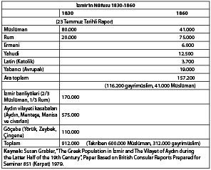

Giriş / Göçler ve Toplumsal-Siyasi Kimlik Değişmeleri
Göçler toplumsal değişmelerin en güçlü unsuru olarak, farklı fiziksel yapıya, dine, kültüre ve dile sahip toplulukları karşı karşıya getirmiş, bu toplulukların bir arada yaşamalarına ve böylelikle etkileşim içinde olmalarına neden olmuştur. Yeni ırklar, yeni kültürler, yeni idare ve yaşam biçimleri göçlerin etkisiyle ortaya çıkmış ve günümüz toplumlarının oluşumuna zemin hazırlamıştır. Bu görüş birkaç bölge dışında tüm dünya için geçerli olmakla birlikte, bilhassa uzak geçmişi kapsar ve yakın tarihi de içine alır.
Avrupa 15. yüzyıldan sonra, uzayan göçler yolu ile on binlerce yıl boyunca Kuzey ve Güney Amerika’da yaşayan ve “Kızılderili” olarak bilinen yerli halka ulaşmış, onları yok etmiş veya belirli bölgelere sürerek oralarda yaşamaya mecbur etmiştir. ABD’de “Reservation” ismi ile anılan bu bölgelerde yaşayan yerli halk, birçok kavme ayrılmış olmakla birlikte, ayrı dil konuşmakta ve göç edebildikleri takdirde başka gruplarla karışmaktadır. Orta ve Güney Amerika’ya ulaşan İspanyol asıllı istilacılar ve onların arkasından gelen göçmenler, Aztek, Maya, İnka gibi büyük medeniyetleri, yerli halkı ezmek, onlara Katokliği kabul ettirmek suretiyle yok etmişlerdir. Eski Amerika’daki bu yerli medeniyetlerden kalan piramitler, saraylar, kasaba kalıntıları vs. bugün ancak turistleri cezbetmek için kullanılmaktadır. Turistlerin de bu yapıtların altında yatan tarihi ve o tarihi var eden yerli halkın akıbetini, sayısını hiçe saydıklarının farkında oldukları söylenemez. Göçler eski medeniyetleri ya tamamen yok etmiş ya da yaşam biçimlerinin değişmesine sebep olmuştur. İnka, Maya gibi medeniyetlerin akıbeti, yerlerini batı kökenli yeni bir düzenin alması şeklinde sonuçlanmıştır. (Yerli halktan varlığını koruyabilmiş gruplar Venezuela, Peru gibi ülkelerde söz sahibi olmak için hâlâ mücadele etmektedir. Meksika’da ise yerli halk ve Avrupalıların karışımından doğan büyük bir kitle mevcuttur.) Günümüz idare ve yaşam biçimlerinin oluşması bakımından dünya tarihinde azami önem taşımalarına rağmen göçler, yakın zamana kadar sistematik ve birbirine bağlı olarak incelenmemiş, bir göçmen ülkesi olan ABD’de dahi ancak 1940’lardan sonra ciddi olarak ele alınmıştır.
Günümüzde göçler, etkisini derinleştirmekte, dünyanın kültürel, sosyal ve etnik yapısını kökünden değiştirmektedir. Birleşmiş Milletler’in verdiği bilgiye göre dünyada halen 214 milyon insan göçmen sayılmaktadır ki bu bilgiler son 25-30 yılı kapsar. Bugünün göçleri tüm dünyayı birçok bakımdan etkilemekte, bazı ülkeler iş gücüne olan ihtiyaçlarını göçler sayesinde karşılamakta ve göçlerin ekonomik getirilerinden faydalanmaktadır. 2009 yılı verilerine göre göçmenler, ailelerinin ihtiyaçlarını karşılama ve yatırım amacıyla, geldikleri ülkelere 317 milyar dolar göndermişlerdir. Bu meblağ varlıklı devletlerin gelişmekte olan ülkelere yaptığı dış yardımdan çok daha fazladır. Göçmenlerin yaklaşık olarak yarısı kadındır ve erkek veya kadın olsun hemen hemen tümü iletişim kolaylıklarından faydalanarak geride bıraktıkları ülkelerindeki aileleri ile devamlı ilişki içindedirler. Günümüzde göçlerin yarattığı değişiklikleri, çatışmaları, bunalımları uzun uzun anlatmaya lüzum yoktur. Avrupa’da camilerin inşasına direnmeler, Müslüman kadınlara karşı uygulanan giysi yasakları, Güney Amerika’dan ABD’ye yapılan göçleri engellemek adına çıkarılan engeller ve buna benzer diğer birçok olay göçlerin yarattığı kültürel, ekonomik, toplumsal, dini vs. sorunların ancak birkaçıdır. Söz konusu ettiğimiz göçler tahminen 1960-2010 yılları arasında gerçekleşmiş olup Avrupa’ya, ABD’ye ve hatta Avusturalya’ya giden 5 milyon kadar Türk’ü kapsamaktadır.
Biz bu kitapta yabancı ülkelere yapılan Türk göçlerini incelemeyeceğiz. Bu kitabın ana amacı, tarihi göçleri, yani 19. ve 20. yüzyıl Rumeli, Kırım, Kafkas Müslümanlarının elde kalan Osmanlı topraklarına göçlerini genel olarak gözden geçirerek, bu göçlerin yeni bir Türk toplumunun oluşumuna katkılarını incelemektir. Aynı zamanda Türk toplumunun eski yapısını değiştirerek millet haline gelişini kavramsal bir tarihi çerçeve içinde anlatmaktır. Şüphesiz ki tüm bu konuları 30-40 sahifeye sığdırmak güçtür, fakat genel bir fikir vermek mümkündür.
Türkiye asırlar boyu birçok göçe sahne olduğu halde göç incelemeleri ancak kısa zaman evvel ciddi biçimde, sistematik olarak ele alınmıştır. Gerçi göç incelemelerine materyal olabilecek göç hatıraları veya belirli bir grubun göçünü konu edinen bazı kitaplar yazılmıştır, ancak bu çalışmalar mevzii olayları anlatmaktan ileri gidememiştir. Fakat yine de bu çalışmaların malzeme olarak faydalı yönleri vardır.
Bugünkü Türkiye büyük ölçüde, Orta Asya’dan gelen ve daha 8.-9. yüzyıllarda başlayan göçler sayesinde oluşmuştur. Orta Asya göçleri zamanla azalmakla beraber 16. yüzyıla kadar devam etmiştir. Orta Asya’dan gelen göçmenler Anadolu’da, akabinde Rumeli’de onlardan evvel bu topraklara yerleşmiş olan Slav ve Helen (Rum) medeniyetleriyle karşılaşmışlardır. Slavlar, Balkanlara 6. yüzyılda yerleşmiş buna karşılık Helenler, daha erken tarihlerde Akdeniz adalarından Anadolu’ya gelerek burada bulunan halkın bir kısmını Helenleştirmiş, yanı sıra buradaki yerli medeniyetlerden her alanda etkilenmiş ve bunların kültüründen ve hatta dinlerinden bazı öğeler alarak kendi medeniyetini kurmuştur. Helenlerden evvel Sümerler, bugünkü Irak’ta kendilerine has bir medeniyet kurmuşlar, kendilerinden evvel orada veya civarda kurulan medeniyetlerden etkilenmişlerdir. Aynı sözleri merkezi Orta Anadolu olan Hititler (Etiler) için de söylemek mümkündür. Bizim burada üzerinde durmak istediğimiz konu medeniyetlerin doğuşunun ve etkileşimlerinin göçler sayesinde olduğunu vurgulamaktır. Yani göçler olmasaydı dünya statik halde kalmaya mahkum olacaktı. Tarihteki göçlerin başta gelen nedenleri arasında, nüfusun çoğalması, mevcut kaynakların artan nüfusu besleyemeyecek hale gelmesi ve iklim değişiklikleri sayılabilir. (Türkiye’de 1950’lerden itibaren görülen ve köyden şehre doğru olan göçlerin ana nedeni, köy arazisinin artan nüfusu besleyememesiyle baş gösteren fakirliktir. Bu bilginin rakamsal verilerini köylerden şehirlere yapılmış olan göçleri ele aldığım kitabımda gösterdim.)
Orta Asya’dan Anadolu’ya ve sonra Rumeli’ye göç eden Oğuzlar (Selçuklar) evvelce oralarda yerleşmiş olan yerli halkı yok etmemişler, ya ayrı obalar kurarak onlarla yan yana yaşamışlar ya da evlilik, din değiştirme gibi yollarla buradaki halka karışarak kasaba ve şehirler başta olmak üzere yeni bir toplum oluşturmuşlardır. Din ve dil farkları, toplumları birbirinden ayıran en güçlü faktörler olmalarına rağmen, siyasi gücü ve karar verme yetkisini elinde tutan Osmanlı idaresi, kendi dinini ve dilini, yani İslam’ı ve Türkçeyi öne çıkarmamış, böylelikle yeni oluşan toplum bu önemli farklılıklara karşın sulh içinde yaşayabilmiştir. Türk toplumunda göçler başlıca etkilerini Osmanlı döneminde göstermiştir. Burada önemli bir noktayı vurgulamak gerekir; Osmanlı döneminde 14.-16. yüzyıllarda Anadolu’dan Rumeli’ye önemli sayıda iç göç olmuş, fakat bu dönemden sonra göçler gittikçe azalmıştır. (Zaman zaman küçük grupların iç göçleri devam etmişse de bunlar mevcut durumu fazla etkilememiştir. 17. yüzyılın sonunda Sırpların bir kısmının Avusturya’ya göçmeleri Balkanlarda bazı demografik değişikliklere neden olmuşsa da etkisi sınırlı olmuştur.) Sonuç olarak diyebiliriz ki, Osmanlı döneminin beş yüz senelik süresince -ilk zamanlar istisna edilirse- büyük göçler olmamıştır. Bu kısmî demografik sükûnet sayesinde Osmanlı kültürü ve idaresi kökleşmiş, Osmanlı kendi kimliğini ve medeniyetini Rumeli’de ve Anadolu’da kökleştirmiştir. Gerçi 1095’te başlayan ve iki yüzyıl devam eden haçlı seferleri, dini nedenlerle Müslümanlara karşı yürütülmüş görüntüsündedir, fakat haçlı orduları kendi cinslerini (soylarını) kitleler halinde Orta Doğu’ya göçürmedikleri için Orta Doğu’nun demografisini ve kültürünü etkileyememişlerdir. Dolayısıyla haçlı ittifakına mensup devletler Urfa’yı, Antakya’yı Kudüs’ü merkez edinmekten ve yerli halk üzerine kurulmuş birer askeri-dini idare olmaktan öteye gidememişlerdir. Bu idareler 13. yüzyılda Orta Doğu’dan atıldıktan sonra Müslüman ve gayrimüslimler eski yaşamlarını, kültürlerini ve kimliklerini ön plana çıkararak varlıklarını devam ettirmişlerdir.
18. yüzyılda göçler, milli devlet felsefesini ve “milli” devlete hâkim etnik grubun siyasi görüşünü gerçekleştirme aracı olmuştur. Başka bir deyişle göçler siyasileşmiş, millileşmiş ve devlete hâkim olan etnik grup kendinden saymadığı diğer grupları yok etme yolunu tutmuş, sınır dışı etmiş veya asimile etme yoluna başvurmuştur. Bu son metodu 1984‘ten sonra uygulamaya kalkışan son rejim Bulgar komünist hükümeti olmuştur. Komünist rejim Bulgaristan’da yaşayan Türklerin isimlerini Slavlaştırmış, okullarını kapatmış ve dillerini konuşmayı yasaklamıştır. 20. yüzyılın sonunda Avrupa’nın ortasında -Bulgaristan bugün Avrupa Birliği üyesidir- herkesin gözü önünde yapılan bu kültür jenosidi ırkçı milliyetçiliğin en açık örneğidir. Bulgaristan’ın öteden beri bu ülkede yaşayan Türkleri sınır dışı edip Türkiye’ye göç etmeye zorlayışı konusunu başka çalışmalarda detaylı olarak inceledik. Göçlerin daha çok Doğu ve Güney Doğu Avrupa’da siyasi, ırkçı kimliğe büründüğünü vurgulamak gerek. Hem de dört yüzyıl boyunca farklı din, dil ve kültürlerin barış içinde yaşamalarından sonra... Daha sonra ayrıntılı bir şekilde ele alacağımız 19.-20. yüzyıl Osmanlı göçlerinin siyasi (dini) kökenleri olmasına karşılık, Avrupa’dan ABD‘ye ve Güney Amerika’ya olan göçlerin başlıca nedenlerinin ekonomik kaynaklı olması önemli bir noktadır. 16. yüzyıldan sonra, Avrupa’nın, o dönem yeni keşfedilmiş olan Amerika kıtasına göç vermesine karşılık Osmanlı, göç alan bir ülke haline gelmiştir. Gerçekten, Osmanlı devleti 1683 Viyana bozgunundan sonra göçmen kabul etmeye başlamıştır. Burada vurgulanması gereken nokta, bu göçmenlerin Müslüman ve kısmen Yahudi olmalarıdır. Avusturya 1686’da Budin’i ele geçirince oradaki Müslümanları ve Yahudileri ya öldürmüş ya da göçe zorlayarak yok etmiştir. Avusturya’nın gözünde düşmanı yani “ötekini” tayin eden özellik; kavim, dil, mal değil, din farkı idi. Nitekim Budin’deki, 35 bin kadar Müslüman halkın çoğunluğunu Türkler değil, diğer kavimlere mensup kimseler oluşturmakta idi. Budin’deki Müslüman halkın büyük kısmı Bosna, Sırbistan, Kosova, Makedonya kökenli idi ve 1686’dan sonra tekrar oraya dönmüşlerdi. Osmanlı topraklarına kitle göçleri bilhassa 1856’dan sonra Kırım’dan gelen göçmenlerle başlamış ve devam etmiştir. Kırım’ın stratejik ve ekonomik önemini çok iyi hesaplayan Ruslar buradaki Müslüman halka güvenemedikleri için onların yurtlarını terk etmelerini arzu etmiştir. Fakat şu da bir gerçektir ki Rusya, birçok istisna bir yana bırakılırsa, başlangıçta Kırım’ın Müslüman halkını fiilen yok etmeyi düşünmemişti, çünkü ele geçirdiği büyük arazileri (bir kısmını generallere çiftlik olarak vermişti) işleyecek emekçilere ihtiyaçları vardı. Fakat Kırım’a getirilen Rus göçmenlerin sayısı arttıkça yerli Müslüman halkın elindeki topraklar alınmış ve bu Müslümanlar Osmanlı topraklarına göç etmeye zorlanmıştır. Aynı şekilde Kafkaslar’a, bilhassa kuzeydeki verimli ovalara göç ettirilmek suretiyle geneli Rus asıllı olan Hristiyan halk yerleştirilmiştir. Böylece demografik harita zorla değiştirilerek Müslümanların oturduğu bölgeler Ruslaştırılmış, daha doğrusu Ortodoks Hristiyanlar ülkesi olmuştur. Müslüman topraklarına iskân edilen Hristiyanlar ve Rus asıllı göçmenler yeterli bulunmadığı zaman Rusya başka Ortodoks Hristiyanları getirerek buralara yerleştirmiştir. Mesela Bucak’ta yaşayan Müslüman halk (Nogaylar önde gelmek üzere) 1812’den sonra Kuban’a veya Tuna’nın güneyine Dobruca’ya sürülmüştür. Onların yaşadıkları köylere Bulgarlar ve aslen Selçuklu olan ve halen Türkçe konuşan, fakat Ortodoks Hristiyanlığı kabul eden Gagauzlar getirilmiştir. (Bucak veya Basarabya’nın güneyi olarak bilinen bölge bugün kısmen Moldova ve kısmen de batı Ukrayna topraklarına dâhil olan İsmail, Akkerman, Kahul eyaletlerinden oluşmakta idi. Kanuni Sultan Süleyman zamanında buraya Bucak ismi verilmiştir.)
Kırım göçlerini, 1864’te başlayan Kafkas göçleri izlemiştir. Şeyh Şamil’in Rus istilasına karşı 25 senelik direnişini 1859’da kanlı bir şekilde bastıran Rusya, sözde askeri ve siyasi güveni sağlamak amacıyla Batı ve Orta Kafkaslar’da yaşayan Müslüman halkı etkisiz hale getirmeyi amaçlamıştır. Direnenleri acımasız bir şekilde öldürdükten sonra geride kalanları Osmanlı topraklarına göçe zorlamıştır. Deniz yolu ile gelmek isteyenlerin birçoğu bu yolculukta hayatlarını kaybetmiştir. Deniz yolu ile gelen ilk kafile, Kandıra’nın kuzeyinde, çok eski bir liman olan Kefken yakınlarındaki bir plaja çıkabilmiştir ki o gün her sene Kafkas göçmenleri tarafından hüzünlü bir tören ile hatırlanmaktadır. Kafkas göçmenlerinin bir kısmı çeşitli kara, deniz limanlarında hastalığa, açlığa kurban gitmiştir. Kafkaslar’dan 1864-70 arası sürülenlerin sayısı iki buçuk milyon olarak tahmin edilmektedir. Bunların bir milyonu hastalık, yolculuk esnasında denizde boğulma gibi nedenlerle hayatlarını kaybetmiştir. Sağ kalanlar ise Anadolu ve Rumeli’ye iskân edilmiş, 1878’de Rumeli’yi terk ederek ikinci bir göç dalgasının aktörleri olmuştur. Kafkaslar’dan yayılan göçler 1917 senesine kadar devam etmiştir. Bolşevik İhtilali, göçleri bir nebze durdurmuşsa da tamamıyla önleyememiştir.
Kafkas göçlerini, 1877/8’den sonra Balkanlar’da yaşayan Müslümanların ve kısmen Yahudilerin göçleri izlemiştir. Balkanlar, bilhassa Rumeli olarak bilinen bugünkü Bulgaristan, Trakya ve Makedonya, Osmanlı devletinin kök saldığı yerlerdir. Burada yaşayan Müslüman halkın ezici çoğunluğu Türkmen ve Yörük idi yani Oğuz Türkleri’ne mensuptu. Tarihi bakımdan çarpıcı bir kimlik, kültür, dil ve din birliğine sahip olan bu bölgelerde siyasi anlamda modernizm öncesi bir Türk milleti oluşmuştur. Rumeli’de meydana gelen ve kökeni Anadolu’da olan bu milletin başta gelen özelliği; aşiret, kabile üzerinde soy, din, dil, kültür birliğine dayanan bir kimliğe sahip olmasıdır. Kısacası, aşiret ve din üzerinde bir “milli Türk” kimliği ilk olarak Rumeli’de ortaya çıkmıştır. Bu “Türk” milleti kültürel anlamda Batı Anadolu’yu da kapsamaktaydı. Bu oluşumda Moğol istilasının önemi büyüktür. Moğollar, Selçukluları 1241-3 yılları arasında mağlup edip siyasi ve askeri iktidara sahip olunca yerli idareyi yine Selçuk beylerine bırakmıştır. Moğollarla işbirliği yapan Selçuk beyleri ve onları destekleyen kasaba eşrafı üst sınıfların temsilcileri idi. Alt sınıfları oluşturan aşiretler, yani Türkmen ve diğer Oğuz boyları Moğollara ve onları destekleyen Selçuk beylerine karşı başlattıkları mücadeleyi kaybettikten sonra İzzeddin II. Keykavus önderliğinde Batı’ya yani Bizans topraklarına, bu arada Rumeli’ye göç etmeye mecbur edilmişlerdir. Böylece 1260’lı yıllarda Batı Anadolu’ya ve zamanla Rumeli’ye göç eden Oğuz aşiretleri birbirleriyle karışarak eski aşiret kimlikleri yerine dil ile Anadolu’da gelişen İslamın maddi-manevi hayatı düzenleyen ölçülerine dayanan bir din ortaklığına ve bir üst kimliğe sahip olmuşlardır, yani “laik” tarafı güçlü ve daha büyük siyasi bir topluluk oluşturmuşlardır. (Rahmetli Mustafa Akdağ Osmanlının Selçuklulara göre daha “siyasi” olduğunu söylerken kısmen bu gerçeğe işaret etmek istemiştir.) Böylece Rumeli’de oluşan Müslüman-Türk topluluğu aşiret, kabile, hatta soy kimliklerinden geniş çapta ayrılarak, ilk kez halk liderleri idaresinde yeni bir topluluk meydana getirmiş, zamanla modern millete götürecek bir siyasi topluluk kurmuştur. Bu topluluk ırka değil, kültüre ve ortak dine dayanan bir millet idi ve Türk asıllı olmayan diğer tüm Müslümanları da içine almaktaydı. Buradaki “millet” kimliği görünürde etnik bir anlam taşıdığı için 19. yüzyıllarda Balkanlar’da türeyen Yunan, Bulgar, Sırp etnik milliyetçiliğine benzer tarafları vardı ve zamanla İttihat ve Terakki döneminde bir Türk milliyetçiliği olarak kolayca ortaya çıkabilmişti. Yine de Rumeli’de ve Anadolu’da oluşan “Türk” kimliği Balkanlardaki Hristiyan milliyetçiliğinden farklı idi. İttihat ve Terakki’nin milliyetçiliği, Osmanlı döneminde Balkanlar’da Anadolu Türkmen, Yörük, (Oğuz) göçlerinin ortaya çıkardığı “Türk” kimliği gibi kültürel idi ve din birliğine dayanmaktaydı. Unutulmaması gereken bir gerçek vardır; Rumeli’de ve Avrupa’da yaşayan Müslümanlar etnik kökenleri ne olursa olsun, daima “Türk” olarak görülmüş, öyle adlandırılmıştır. Daha sonra Osmanlının hükümet ve idare olarak sözde işlediği “günah”lar hep bu “Türklerden” yani Müslümanlar’dan dokunaklı bir biçimde çıkarılmıştır. (Milli, etnik kimliği daha sonra tekrar ele alacağız.) Şimdi tekrar Balkanlar’dan yapılan göçlere dönelim. “Türkleri” yani Müslümanları öldüren, yerlerinden eden Rum, Sırp, Bulgar, Balkan milliyetçiliğinin temel nedeni din farkıdır. Onların gözünde Türkler Rumeli’yi istila ederek eski Bulgar, Sırp, Bizans (Doğu Roma İmparatorluğu olan Bizans bu kez “millileştirilerek” Rum-Yunan olmuştur.) devletlerini yok etmişler ve topraklarına yabancıları yani Türkleri-Müslümanları yerleştirmişlerdir. Hâlbuki Rumeli “Türk” halkının önemli bir kısmı İslamiyet’i kabul eden yerli halklardan (Sırp, Hırvat, Rum, Boşnak, Bulgar, Ulah. vs.) oluşmuş olup, birçoğu da eski dillerini konuşmaya devam etmiştir. Balkanlardaki Hristiyan milliyetçiliğinin ikinci nedeni ırktır. Her ne kadar Bulgarlar, Rumlar ve diğer Hristiyan kavimler birbirleriyle ve Müslümanlarla ihtida yoluyla karışmışlarsa da etnik kimliğin ırka dayandığına, ırkın da karışmamış “Bulgar” “Sırp” milletini oluşturduğuna inanmışlar, 1878’den sonra kurdukları “milli” devleti ırk bakımından safi bir Bulgar ve Sırp toplumuna dayandırmak istemişlerdir. Hâkim millet olan “ötekini” ise asimile veya yok ederek ortadan kaldıracaklarına inanmışlardır. Balkanların Hristiyan etnik milliyetçiliğinin ilk hedefi Müslümanlar -yani “Türkler”- olmuştur. Gerçekten Balkanlar’da İslamiyeti kabul eden Boşnaklar, Ulahlar, Sırplar, Hırvatlar, Rumlar vs. etnik gruplar din değiştirmekle çok daha büyük bir Müslüman camiasına dâhil olmuşlardır. Kabul ettikleri din olan İslamiyet Anadolu’da gelişmiş, Balkanlar’da da dünyevileşmiş bir Türk İslamı olduğu için Balkan muhtedileri tarih ve dil farklarına rağmen bir arada barış içinde yaşamayı başarmıştır. Eskiden başka bir kültürün kurallarıyla yaşayan bu yeni Müslümanlar “Türkleşmişler” fakat eski dillerini de muhafaza etmişlerdir. (1991’den sonra ekonomik güce dayanarak Vahhabiliği Bosna’ya zorla sokmak isteyen Suudi Araplara karşı Bosnalılar kendi İslamiyetlerini (Türklüklerini) korumak için “milli” direniş göstermişlerdir.) İşte bu Rumeli Müslümanları (Türkleri) 1877/8’de ve 1912-3’te öldürülmüş veya sürgün edilmiştir. Bir milyonu öldürülmüş olan bu Müslümanların iki milyondan fazlası da 1878-1912-3 arası göçe mecbur edilmiştir. Bu gaddar davranışın köklerinin din farklarına dayalı olduğunu daha evvel belirttik. Bu dini-ırkçı milliyetçiliği körükleyen ve askeri güçle destekleyerek fiiliyata sokan ülke ise Rusya olmuştur. Rusya, kendisine ruhen yakın milletler var edip bunları Balkanlarda kendi emperyalist amaçlarına alet etmek için, nüfusunun çoğunluğu Slav-Ortodoks Hristiyanlardan oluşan Bulgar ve Sırp devletleri oluşturma yolunu tutmuştur. Slav ırkçılığını dini bir unsur olarak Ortodoksluk meşrulaştırmıştır. Buna dayanan Rusya da zor kullanarak Rumeli’de, bilhassa Bulgaristan’da çoğunluğu oluşturan Müslüman Türk halkını yerli çetelere öldürtmek ve göçe zorlamak suretiyle o topraklarda çoğunluğa sahip bir Hristiyan-Ortodoks-Slav (Bulgar, Sırp) devleti yaratmak istemiştir. Böylece göçler 19. yüzyıldan itibaren siyasi, kültürel ve dini haritayı değiştirmenin bir aracı haline gelmiştir. Din ve dil farklarını istismar ederek temiz “yabancı kanından arınmış” milletler yaratmak, Balkan ülkelerinin 20. yüzyıl boyunca “millileştirme” siyaseti olmuştur. Bu “milli” amacı gerçekleştirmek için Türkler ve Yahudiler göçe zorlanmıştır ki bunun en canlı son örneği, Bulgaristan’ın 1984-9 yılları arasında yürüttükleri Türkleri Bulgarlaştırma kampanyası, Sırpların 1992-5 Bosna ve Kosova katliamları ve buradaki insanların zorla yerlerinden edilip, atılmalarıdır ki bu acıların yarası henüz kapanmamıştır. Din farkları Hristiyanlar arasında da katliam nedeni olmuştur. Bu gerçeğin en güzel örneği Katolik Hırvatlar ile Ortodoks Hristiyan Sırpların aynı dili konuşmalarına rağmen 1990’larda birbirlerini öldürmeleri ve kendi topraklarından göçe zorlamalarıdır. (Sırplar Vukovar kasabasının Hırvat halkını yok etmiş, buna karşılık Hırvatistan güçlenerek kendi toprağı saydığı Krajna’da yaşayan Sırpları yerlerinden zorla söküp atmıştır.) Sırp ve Hırvatlar aynı dili konuşan ve Müslüman olan Boşnakları yok etme konusunda birlik olmuşlardır. Aynı milliyetçi ve dinci amaçla hareket eden Ermeni milliyetçileri 1878’den sonra ayrımcılık propagandasıyla milli kargaşa çıkararak Doğu Anadolu’da yaşayan Müslümanları -ki bunların bir kısmı Kafkas ve Balkan göçmenleriydi- göçe zorlayarak orada büyük bir Ermenistan kurmak istemişlerdir. Hem de burada yaşayan Müslümanların Ermeni nüfusa oranla beş misli fazla olmalarına rağmen. Bizim burada söylediklerimiz tarihi olayların doğru veya yanlış taraflarını ortaya koyma amacı taşımamaktadır. Asıl amacımız göçlerin kaçınılmaz olarak üstlendiği yeni ülkeler, yeni milletler hatta yeni medeniyetler oluşturmada üstlen(diril)miş olduğu acıklı rolü anlatmaktır. Gerçekten ırkçı-dini milliyetçilik, göçleri tabii bir olay olmaktan çıkararak dini, siyasi ve kültürel amaçlara alet etmiştir. Bu bakımdan 19. ve 20. yüzyıl, insanlığın yüz karasıdır ki burada Batı emperyalizminin getirdiği din, kültür ve ırk üstünlüğü düşüncesi birinci derecede rol oynamıştır. Bunu yayan, Avrupa’nın “medeni” devletleri sayılan ve kendilerini dünyaya medeniyet örneği olarak gösteren İngiltere, Fransa, Almanya, Hollanda, Belçika ve İtalya’dır. Diğer yandan binlerce yıl boyunca göçleri doğuran, düzenleyen, frenleyen veya hızlandıran ekonomik ve doğal koşullar 19. ve 20. yüzyıllarda da etkilerini göstermeye devam etmiştir. Mesela Rusya bir yandan Osmanlı topraklarını işgal ederek halkını göçe zorlarken, diğer yandan Osmanlı ülkelerinden işine yarayacak kimseleri kendi ülkesine çekmekten geri durmamıştır. Rusya 1774 ve 1812’den sonra Kuzey Karadeniz’deki Osmanlı bölgelerini ele geçirdikten sonra, buraları ekonomik bakımdan geliştirmek için Anadolu’da yaşayan Ermenileri, Rumları ve diğer Hristiyan halkı Rusya’ya çekmek için çalışmış ve büyük ölçüde başarılı olmuştur. Kuzey Karadeniz sahillerinde kurulan Odesa gibi liman şehirleri geniş çapta hem Rus hem Osmanlı Hristiyanlarından oluşmuştur. Ekonominin dili, dini olmadığı için, Karadeniz bölgesinde yaşayan birçok Müslüman da iş umuduyla Rusya’ya göç etmiştir. Esasen İngiltere de Kuzey Karadeniz’deki Osmanlı topraklarının Rusya’ya geçmesine göz yummuş, hatta bunu istemiştir. İngiltere’nin bu tutumunun nedeni, Rusya’nın buralarda ekonomik gelişmeyi gerçekleştireceğine olan inancı idi, çünkü İngiltere, Karadeniz bölgesindeki ekonomik kalkınmanın kendilerine ve Avrupa’ya büyük ticari çıkarlar sağlayacağını ümit ediyordu ki bu ümit kısmen de olsa gerçekleşmiştir. Osmanlının, idare ettiği yerlerde ekonomik gelişme sağlayamaması fakir halk arasında hoşnutsuzluk yaratmış ve birçoğunu başka ülkelerde iş bulmak için göç etmeye zorlamıştır. Nitekim 19. yüzyılın ikinci yarısında, bilhassa 1860’tan sonra, Osmanlı devletinin Harput (Elazığ), Lübnan ve kısmen Suriye gibi bölgelerinden ABD’ye ve Güney Amerika’ya göçmenler gitmiştir. Tamamıyla ekonomik nedenlerle (işsizlik, bahçelerin hastalık nedeniyle verimsiz hale gelmesi vs.) oluşan bu göçlere katılanların yüzde 90-95’ini Hristiyanlar -Ermeniler dâhil- oluşturmuştur. Geri kalan göçmenlerin yüzde 5’i ila 10’unu Müslümanlar oluşturmakta idi. Kuzey ve Güney Amerika’ya giden Osmanlı kökenli göçmen sayısı 1916 yılına kadar bir milyona yaklaşmıştır. Bunların arasında 1900’den sonra Balkanlar’dan bilhassa Makedonya’dan göç eden Bulgarlar, Hırvatlar, Sırplar ve Bosnalılar da vardır. Osmanlı topraklarından 1800-1916 yılları arasında Rusya ile Güney ve Kuzey Amerika’ya giden göçmenlerin sayısı takriben 1.3-1.5 milyon arasındadır. Güney ve Kuzey Amerika’ya giden Osmanlı göçünün nedenleri yüzde 95 ekonomiktir ve göçmenlerin kişisel kararına dayanmaktadır. Bu göçmenlerin yüzde 95’i daha evvel belirtildiği gibi gayrimüslimlerden (Rum, Ermeni, Yahudi, Slav vs.) oluşmakta idi. Buna karşılık Osmanlı topraklarına 1856-1916 arası gelen takriben yedi milyon göçmenin (Bunlar arasında iki hatta üç kez göçe zorlananlar olmuştur.) hemen hemen tümü Müslümandır ancak takriben 75-85.000’i Yahudidir. Tekrar edecek olursak bu zorlamaların nedenleri dini, siyasi ve kültüreldir. Osmanlı topraklarına göç etmeye zorlanan Müslümanların büyük çoğunluğu mal mülklerini arkalarında bırakarak Osmanlı ülkesine sığınmışlardır.
Osmanlı Topraklarına Göçlerin Etkileri ve Bugünkü Türkiye
Göçlerin çeşitli etkilerinin olduğunu, demografik, kültürel ve siyasi değişikliklere kaynaklık ettiğini daha evvel belirtmiştik. Her şeyden önce göçmenlerin kimlik durumunu ele almak yerinde olur. Osmanlı topraklarına gelen göçmenler dil ve etnik köken bakımından Çerkez, Abaza, Çeçen, Boşnak, Pomak veya değişik Türk ağızları kullanan Nogay, Tatar vs. olarak farklılıklar gösterseler de Müslüman (Sünniler çoğunluktu, fakat aralarında Aleviler de vardı.) oldukları için kendilerini Osmanlı-Müslüman camiasının bir parçası olarak görmekte idiler. Üstelik sökülüp atıldıkları ve ana vatan saydıkları toprakların büyük kısmı göç anına kadar Osmanlı idaresinde olduğu için bir bakıma bu göç, bir Osmanlı bölgesinden diğerine gitmek demekti. Burada dikkat çeken nokta, göçmenler ile yerli Anadolu halkının kendilerini temelde birbirinden farklı yani “öteki” gibi görmüyor olmalarıydı. Her ne kadar yerli halk ile göçmenler arasında toprak paylaşımı, yeni hayata intibak edememe, kız alıp verme gibi nedenlerle anlaşmazlıklar ve hatta çatışmalar olmuşsa da, göçmenler ile yerli halkın aynı kültürü, aile yapısını ve hukuk koşullarını paylaşmaları, aynı siyasi idare altında yaşamış olmaları yani benzerliklerin farklardan ağır basması ayrılıkları gidermiştir. Bir yerde göçmen de yerli halk da aynı camiaya ait olduklarını kabul ediyor ve öyle hareket ediyordu. Göçmenleri iskân eden devlet; dil, doğum yeri ve diğer farklardan doğacak ayrımları ve çatışmaları önlemeyi amaçlayan bir iskân planı uygulamıştır. Göçmenlerin tek bir grup halinde belirli bir yere yerleşmesini ve farklı bir kitle yaratmasını önlemek için hükümet, onları küçük gruplara ayırarak farklı bölgelere yerleştirmiştir. Böylece, bilhassa Kafkaslarda hâkim olan aşiret, kabile, oymak yapısı parçalanmış ve göçmenlerin yerleştikleri bölgede hâkim yerli gruplarla kaynaşmaları sağlanmıştır. Bazı yerlerde, mesela Sivas’ın Uzun Yaylası’nda Kafkas göçmenler kitleler halinde yerleşmiştir ama bu bir istisnadır. Aynı amaçla göçmenlerin liderlerine maaş bağlanmış, şehir ve kasabalarda yerleşmelerine özen gösterilmiştir. Bu göçmen liderlerin çoğu bilinçli, eğitim görmüş, hatta mal mülk sahibi idi. Bir kısmı atalarından kalma altınlara sahip idiler ve bunları yanlarında Anadolu’ya getirmişlerdi. Göçmen liderlerin kısa zamanda bulundukları bölgenin elitleri arasına girmeleri doğaldır. Burada göç kabul eden her toplumda görülen bir olayı vurgulamak gerekmektedir. Göçmen, iskân edildiği ülke halkı ile kültür, tarihi tecrübe gibi ortak unsurları paylaşsa da genelde birkaç kuşak sürebilen bir dönem için kendini farklı, kısmen dışlanmış, marjinal biri olarak hisseder. Göçmen, bilhassa göçmen çocukları, “dışlanmış” “muhacir” olmaktan kurtulmak için, toplum içinde yükselme, mal-mülk, mevki sahibi olmaya ve böylece toplum içinde saygınlık kazanmaya çalışırlar. Aynı zamanda eğitim görmeye gayret ederek toplum içinde yükselen yeni ülkelerine genelde büyük bağlılık gösterirler ve bazen aşırı milliyetçi olabilirler. Bunun tersi de olabilir, çünkü bazı göçmenler göç ettikleri için pişman olup eski ülkelerine dönebilir. Göçmen kabul eden, bilhassa demokratik ve ekonomik gelişmeye sahip ülkelerde, göçmen çocukları arasında akademik veya ekonomik başarı sağlayarak yükselmiş, elit sınıfa geçmiş kimselerin sayısı oldukça fazladır. (Bu olay köyden şehre göç edenler için de geçerlidir ki bunun en güzel örneği Türkiye’dir. Nitekim bugün Türkiye’de yabancı ülkeden veya köyden şehre göçenlerin çocukları arasından, bakan, mebus, iş sahibi, profesör vs. olanların sayısı inanılmayacak kadar yüksektir.) Bununla birlikte göçmenlerin, geldikleri ülkenin elitleri arasında yer almaları yani ülkenin nimetlerinden faydalanmaları veya idarede yer almaları onların asimilasyonunu kolaylaştırmaktadır. Türkiye’de göçmenlerle yerli halk arasında din, gelenek farkları olmadığı veya az olduğu için asimilasyon nispeten kolay olmuştur. (Aslında göçler Türkiye’de asimilasyon değil, sosyo-ekonomik değişimi hızlandırdığı için yeni bir toplum oluşmuştur ki bu konuyu daha sonra tekrar ele alacağım.) Tekrar edelim, göçmenlerin tümü uzun süre Osmanlı tebaası olarak yüzyıllarca yaşamıştır. Geldikleri toplum içinde eriyip asimile olmalarının nedenini ele almadan evvel, dışarıdan yani Kırım ve bilhassa Kafkas ve Balkanlardan gelen göçmenler arasında mevcut bir haleti ruhiye diyebileceğimiz çok özel bir duyguya işaret etmek yerinde olur. Daha evvel belirttiğimiz gibi Kafkas ve Balkanlardan gelen göçmenler, ölüm cezasına çarptırıldıkları ve psiko-sosyal baskıya maruz kaldıkları için korku ile öfke karışımı bir duyguya sahip olmuşlardır. Başlarına gelen felaketlerin ana nedeni Müslüman olmalarından kaynaklandığı için ve onları öldürenler ile baskı yapanların Hristiyan olduklarını bildikleri için yabancılara karşı kuşkulu bir yaklaşım geliştirmişlerdir. Osmanlı ülkesinde yaşamaya devam eden gayrimüslimler arasında oluşan milliyetçilik ve ayrımcılık, göçmenler tarafından oldukça yadırganmıştır. Gerçi bazı göçmenler, gittikçe gerginleşen Müslüman-Hristiyan ayrımcılığı karşısında eski topraklarında yaşarken Bulgar, Romen, Sırp vs. komşular ile olan sıcak ilişkileri hatırlayarak farklı din ve kültür grupları arasındaki düşmanca görüşlerin kötü sonuçlanacağından endişe duyduklarını söylemekten de çekinmemişlerdir. Ne var ki Osmanlı toplumunda Osmanlının hoş görüsünü muhafaza edenlerin sayısı gittikçe azalmakta idi. Ermeni milliyetçi çetelerin Anadolu’daki Müslüman köylerini basarak birçok kimseyi katletmeleri, Avrupa ülkelerinin Ermeni çetelerinin yaptıklarını görmezlikten gelmeleri, hatta bu eylemleri haklı bulmaları göçmenlere, Kafkaslarda ve Balkanlarda yaşadıkları katliamları hatırlatmakta, Anadolu’da da aynı akıbete maruz kalacakları korkusunu aşılayarak yabancılara karşı duydukları şüpheyi ve öfkeyi daha da güçlendirmekte idi. Ermeni, Bulgar, Sırp, Rum milliyetçilerinin zaman zaman terörist eylemlere başvurmaları havayı daha da sertleştirmiştir. Ermeni ve Rum halkın ezici çoğunluğu aşırı milliyetçileri desteklememekle beraber, seslerini duyuramadıkları için onlar da Müslüman milliyetçiler bakımından “düşman” veya “müstakbel düşman” olarak görülmeye başlamışlardır. Rumlar arasında, göçün yarattığı öfke ve vatanından mahrum olma korkusunu körükleyen ve ileride ortaya çıkacak göçlere zemin hazırlayan başka türden gelişmeler de olmakta idi. Ermeni milliyetçilerin şiddete, teröre başvurmaları ve bunun tepkilerini Avrupa basını yardımıyla Türkler aleyhine çevireceklerini düşünmelerine karşılık Rum milliyetçileri, çok daha hesaplı ve uzun vadeli planlarla hareket ederek kendi milliyetçi gayelerine -İstanbul ve Ege bölgesini ellerine geçirmek- ulaşma yolunu tutmuşlardı. Rum milliyetçilerinin kullandıkları silahlar ekonomik ve kültüreldi. Verimsiz adalarda yaşayan Rumlar 19. yüzyılda ticaret yapmak, işletmeler kurmak yolu ile Batı Anadolu’ya göç etmeye başlamışlardı. 19. yüzyılın başında Ege’de yaşayan Rumların sayısı önemsiz iken, yüzyılın sonunda bu sayı bir milyonu aşmıştı. Sayı bakımından Müslümanlardan çok daha az olmalarına karşılık maddi varlık ve eğitim bakımından Ege Rumları Türklerden çok daha üstün durumda idiler. Rum tüccarlar Yunanistan’dan elde ettikleri sermaye sayesinde İzmir, Ayvalık gibi şehirleri, büyük ticaret ve üretim merkezi haline getirdikleri gibi, bakkal, sanatkâr vs. olarak Batı Anadolu’nun her köy ve kasabasına nüfuz etmişlerdi. İzmir gerçek anlamda modern bir şehir haline gelmiş (Rum, Fransız ve Türk gazeteleri yayınlanırdı) ve bundan bir dereceye kadar Müslümanlar ve Türkler de faydalanmışlardır. Ekonomik güç Rumlar arasında milliyetçiliği körüklemiştir, çünkü ekonomik ve maarif üstünlüklerini siyasi güce çevirerek Batı Anadolu’yu Hellas’a katmaları an meselesi olmuştur. Bu dönemde yani 19. yüzyılın ikinci yarısında Ege bölgesinde yaşamış Türk-Müslüman yazar ve entelektüellerin hatıraları ekonomik ve kültürel gelişmelerin Rumların siyasi amaç ve hırslarını nasıl beslediğini çok iyi göstermektedir. Her ne kadar Ege bölgesi 19. yüzyılda henüz 1908-16 ve 1919-26 yıllarındaki gibi kesif nüfus hareketlerine benzer hareketlere maruz kalmamışsa da göçlerin uyandırdığı korku ve yabancılara karşı besledikleri öfke burada da yükselmekte idi.
Rum milliyetçilerinin ekonomik silahın yanında kültürel silah da kullandıklarını daha evvel belirtmiştik. Gerçekten Silogi denilen kültür cemiyetleri, her yerde kurulan Rum okulları ve gazeteler aşırı irredentist bir milliyetçiliğin aracı haline gelmişlerdi. Sözde kültürel Silogi Cemiyetleri, Helen medeniyetini Rum medeniyetine dönüştürerek Batı Anadolu’nun Türkler tarafından istilaya uğradığını hatta yok edildiğini durmadan söz konusu etmekte idiler. Sultan Abdülhamit idaresi olayları yakinen izliyor, fakat dinler ve kültürler arası Osmanlı hoşgörüsünü devam ettirmek istediği için Rumlara fazla tepki göstermiyordu. Zaten Islahat Fermanı’ndan (1856) sonra gayrimüslimlere geniş haklar tanınmıştır. Tepki, hürriyet adına Abdülhamit istibdadına baş kaldıran modern okullarda yetişen yeni Müslüman orta sınıfın çocuklarından gelmiştir. Gerçekten Abdülhamit’e karşı gittikçe büyüyen muhalefetin temsilcileri Müslüman orta sınıfa mensuptu ve bunların çoğunluğu taşralı entelektüellerdi. Türk, Arnavut, Kürt, Laz, Gürcü ve diğer gruplara mensup olan bu muhalefet liderleri, kendilerini devletin, “kendi” devletlerinin destekçisi ve koruyucusu olarak görüyorlardı. Devlete hâkim olanların topluma da hâkim olacakları ve zamanı gelince toplumu istedikleri şekilde değiştirmek isteyecekleri aşikârdı. İleride de işaret edeceğimiz gibi daha 1890’larda milliyetçiler, devleti Türk olarak görmeye başlamışlardı. Ama “Türk” ne Avrupa ne de Orta Asya Türk’ü değildi. Eski isimli yeni bir Türk’tü. Yani Osmanlının millileşmiş Müslüman’ı idi. Devletle özdeşleşen entelektüeller etnik kökenleri ne olursa olsun üst kimlik itibarıyla kendilerini Türk olarak görmekte idiler. Böylece entelektüellerin bir kısmı arasındaki din birliği, milli yani Türk kimliğinin temeli haline gelerek, siyasileşmiştir. Milliyetçilik dinden üstün duruma geçmek yolunu tutmuştur. Daha sonra işaret edeceğimiz gibi Osmanlı ülkesinin Müslümanlara ait olduğu ve gayrimüslimlerin ülkenin asıl unsuru değil azınlık oldukları düşüncesi zamanla yaygın hale gelmiştir. Esasen bu düşüncenin “Osmanlılık” “çoğunluk” ve “azınlık” olarak tebaayı ikiye böleceği ve bu ayrılığın dine dayanacağı belli idi. Zaten Osmanlıda ana fark din kaynaklı idi ve din hürriyeti gayrimüslimlere tanınmakla beraber, devlet bünyesinde asıl üstünlüğün Müslümanlara ait olduğu kabul edilmiştir. Abdülhamit’e karşı muhalefet daha sonra gizli bir cemiyet şeklini almış ve nihayet 1908 İttihat ve Terakki Cemiyeti olarak iktidarı ele geçirmiştir. İttihat ve Terakki döneminde siyaseti yakından etkilemiş liderlerin aşağı yukarı yüzde 70-80’i taşra kökenlidir ve birçoğu göç ızdırabını çekmiş olup Kafkas, Balkan vs. kökenlidirler veya oralardan gelmiş göçmenlerin çocuklarıdır. Bir yerde göç, göçmen, vatan, devrim, modernite birbiriyle yoğrulmuş ve bunların tümünün üstüne “vatanı” koruma düşünceleri yeni dönemin amacı haline gelmişti. “Bu vatan nasıl kurtulur?” sorusu inanılmayacak sayıda tecrübelerin ve sorunların feryadı idi. İttihat ve Terakki hükümetlerinin göç konusundaki çabaları şimdiye kadar gereği gibi ele alınıp incelenmemiştir. Genç Türkler eşitlik ve beraberliğe dayanan -Ermenilerden destek görerek- bir siyaseti altı ay yürütmüşlerdir. Fakat bu “eşitliğin” ve “etnik grup” özgürlüğünün, herkesin kendi ülkesini kurması manasında algılandığını görünce bundan vazgeçmişlerdir. Bunun üzerine yeni bir güç politikası uygulamışlardır. Ege Rumlarının Yunanistan’a göçmeye zorlanmasından tutunuz, 1912-3 Balkan Savaşı sonunda göçe zorlanan Müslümanları iskân için çıkardığı kanunlara kadar İttihat ve Terakki’nin birçok icraatı vardır. İttihat ve Terakki’nin 1912’de iktidardan uzaklaştırılmasını izleyen Balkan Savaşı’nı, Bulgarların Çatalca’ya kadar ilerlemeleri takip etmiştir. Katliamlar ve zoraki göçlerle beraber Osmanlının temeli olan Makedonya, Batı Trakya ve Bulgaristan’da 400.000 Müslüman, bilhassa Türkler öldürülmüş ve 450.000 den fazlası da vatanlarından atılarak elde kalan Osmanlı topraklarına, yani Anadolu’ya göçmeye mecbur edilmiştir. Böylece 1877/8 Savaşı’nın acıları ve insan kayıpları bir kez daha canlanmıştır. I. Balkan Savaşı’nda 1877/8 de olduğu gibi İkinci Balkan Savaşı’nda da (1912-3) Avrupa, Türk ve Müslüman kıyımlarını görmezlikten gelerek Türkleri yani Osmanlıları barbarlık ve Ermenileri baskı altında tutmakla itham etmiştir. Balkan Savaşı büyük siyasi-ideolojik değişmenin nedeni olmuştur. İttihat ve Terakki, Ocak 1913’te darbe ile iktidarı eline geçirince “milliyetçi” diyebileceğimiz Türkleri (Osmanlı Müslümanlarını-Araplar hariç) ön plana geçirerek siyasi ve ekonomik iktidarı onlara vermeye karar vermiştir. Balkan Savaşı’nda (1912-3) göçe mecbur edilen Müslümanların feci akıbeti hem İttihat ve Terakki liderleri hem de ülkenin Müslüman halkları arasında Avrupa’ya, bilhassa İngiltere’ye karşı büyük öfke uyandırmıştır. İngiltere, İttihat ve Terakki’nin Ermenilerin yaşadığı bölgelerde 1914’te yapmak istediği ıslahat teklifini reddetmiş, Osmanlıyı kendinden uzaklaştırarak Almanya’ya sığınmasını ister gibi hareket etmekten geri durmamıştır. Sonunda, İttihat ve Terakki’nin dört lideri Alman zırhlılarının Rusya limanlarını bombalamasını onaylayarak Osmanlıyı II. Dünya Savaşı’na sokmuştur. Bilinmeyen ve konuşulmayan gerçek, Avrupa’nın Osmanlıyı nefsimüdafaaya mecbur ettiğidir. Bu nefsimüdafaanın bir yerde nüfus ve göçe dayanacağı aşikârdır. Anadolu’da, her şeyini kaybetmiş, Avrupa’ya ve Avrupa’nın siyasetine alet ettiği, gayrimüslimlere karşı şüphe ve korku ile bakan göçmenler ve onlara yakınlık duyan yerli Türk-Müslüman halk ezici çoğunluğu oluşturmaktaydı. Felaketler sonucu eski Osmanlı topraklarından Anadolu’ya göç etmeye zorlanan Türkler (Müslümanlar) nüfus kesafetini artırarak buraları tam manasıyla bir Türk-Müslüman ülkesi yapmaya zorlanmışlardır. Sonunda Türkiye nüfusu 2010’da yüzde 99 Müslüman sayılmıştır.
Rum ordusunun 1919’da İzmir’e çıkartma yapması ve Batı Anadolu’yu Hellas’ın bir parçası yapmaya kalkışması göçler sorununa yeni bir boyut eklemiştir. Selanik doğumlu ve yurdunu kaybetmekte olanlardan müteşekkil Milli Mücadele’nin muzaffer komutanı Mustafa Kemal, Yunanistan lideri Venizelos ile yaptığı nüfus değişimi anlaşmasıyla bu sorunu çözmüştür. 1926’da yapılan mübadele anlaşması sonucu yüz binlerce Batı Trakya Türk’ü (ve adalardaki Müslümanlar ki bunların birçoğu ihtida etmiş ve halen Rumca konuşan kimselerdi) Anadolu’daki Rumlarla değiştirilmiştir. Ama Yunanistan’a giden Rumlar arasında Karamanlılar gibi Türkçe konuşan ve ihtimal bir zamanlar Müslüman olan Rumlar da vardı. Türkçe konuşan Hristiyanlar, Rumca konuşan Müslümanlar ile mübadele edilmiştir. Neticede din, milliyeti tayin eden ana kıstas olmuştur. Gerçek budur ve belki de halen böyledir. Bu acı gerçekleri bilmeden zoraki göçlere, başka dinden olanları yok etmeye son vermek güçtür.
İttihat ve Terakki’nin 1915’te yani I. Dünya Savaşı esnasında Doğu Anadolu’da yaşayan ve sayıları 1.400.000 civarında olan Ermenileri tehcir siyaseti halen büyük tartışmalara konu olmaktadır. 1915 ilkbaharında Doğu Anadolu’nun büyük bir kısmı Rus işgali altında olduğu için burada tehcir söz konusu olmamıştır. Rus orduları 1917’de Bolşevik Devrimi nedeniyle kuzeye çekilince bir milyon Ermeni, Rus ordusu ile kuzeye gitmiş ve bugünkü Ermenistan’ın nüfusunu oluşturmuştur. 1897’deki Rus nüfus sayımına göre Erivan’da Ermeni kökenli nüfus, Müslüman nüfustan çok daha azdı. Yirmi yıl sonra Müslümanların sayısı yok denecek kadar azalmıştı. Bu bölgede de Ege’de olduğu gibi zoraki bir nüfus mübadelesi olmuş, bu iki mübadele de büyük acılar doğurmuştur. Dini, milliyeti ne olursa olsun zoraki yer değiştirmeye mecbur edilen insanların çektiği acılar hiçbir şekilde mazur görülemez.
Göçler ve Asimilasyon
Bu önsöz göçlerle ilgili olan elinizdeki kitaba bir giriş olarak yazılmıştır. Aynı zamanda bu giriş, kitapta ele alınmayan genel bazı siyasi, kültürel, sosyolojik konuların daha iyi anlaşılmasını sağlamak amacını taşımaktadır. Göçlerle ilgili bu tür konulardan biri asimilasyon yani göçmenlerin yerleştikleri ortamla kaynaşıp, benzeşmeleridir. Asimilasyon en geniş anlamı ile göçmenlerin yeni geldikleri ülke halkının içinde eriyip, o ülkenin bir parçası olması manasına gelir. Entegrasyon ise göçmenin değişik bir bütünün içinde yerleşmesi veya onunla bağdaşması, fakat kültürel kişiliğini belirli ölçülerde korumasına imkân veren olgusal bir kavramdır. Göçler entegrasyon ile başlar ancak genelde asimilasyon ile neticelenir. Asimilasyonun süresi toplumdan topluma değişebilir. Milli devlet ve milliyetçilik döneminde göçmenlerin veya yabancıların bu duyguların yoğunluk derecesi oranında yerli halk içinde erimeleri ve bir süre sonra dil bakımından onlardan farksız olmaları yani asimile olmaları beklenebilir. Bu “mutlak” asimilasyon görüşü, bir göçmen ülkesi olan ABD’nin “melting pot” (eritme potası) kavramından kaynaklanmaktadır. Gerçekten ABD’ye gelmiş olan göçmenlerin ezici çoğunluğu bir veya iki-üç kuşak sonra Amerikan İngilizcesini ana dil olarak kullanarak toplum içinde “erimiş” gibi görünürler. Ama ABD’ye çeşitli ülkelerden gelen kimseler şu veya bu şekilde birkaç kuşak devamınca kökenlerini (Fransız, Çin, Rus, Rum, vs.) “milli” kiliseleri, okulları, bayramları sayesinde muhafaza etmişlerdir. Keza “Amerikalılaşmış” fakat kültürel kimliğini korumuş bir grup olan Yahudiler de ABD’de 6,5 milyon Yahudi ülkesinin her eyaletinde yaşamakta ve Yahudi olarak etnik ve dinsel ayrı bir grup olduklarını ilan etmektedirler. Ama din -hepsi Yahudi kökenli- bakımından Yahudiler üç büyük gruba ayrılır.
Bu durum ABD’ye yerleşmiş başka etnik gruplar için de geçerlidir. Çoğu kez “yabancı” kökenli olmalarıyla iftihar eden bu kimseler, çok iyi birer Amerikalı olduklarını da ifade etmekten geri kalmamışlardır. ABD’de çelişkili gibi görünen bu kimlik durumunu -yani hem Amerikalı olmak hem de eski “milli” kimliğini korumak- göç kabul eden başka ülkelerde de görmek mümkündür. ABD’de sorun olmayan bu ayrı kimlik -kökeni dindir-Avrupa’da büyük bir gerilimin kaynağıdır. Türkiye’deki durum ise aşikârdır. “Türk” olduklarını ilan eden birçok kimse, , bunun yanı sıra Çerkez, Arnavut, vs. kökenli olduklarını da söylerler. Derhal ilave edelim ki, ABD’de, öteden beri göçmenleri “eritecek” mevcut bir “asıl” millet olmamasına karşılık Türkiye’de böyle bir “asıl” millet-toplum vardır ki o da tarihi Osmanlı-Müslüman camiasıdır. Millet, bu camianın siyasi ifadesidir. Bu konuyu tekrar ele almadan evvel, ABD göçlerinin, görünüşte çelişkili olan “Amerikan” kimliği ile göçmenin eski yurdundan ve kültüründen doğan kimlik arasında çatışma yaşanmadığını belirtmek gerekir. “Amerikan” kimliği asıldır ve hâkimdir. Her ne kadar “Amerikan” asıl kimliği, köken, dil, din, hukuk ve idare şekli itibarıyla her bakımdan İngiliz kökenli ise de asıl Amerikan kimliği, kıtanın fiziki, ekonomik, siyasi ve toplumsal gelişmelerine göre şekil almış ve öyle inkişaf etmiştir, gelişmiştir. ABD temelde “İngiliz” olmasına rağmen İngiliz değildir. Yani Amerikan kimliği, İngiliz kökenini bir dereceye kadar muhafaza etmekle beraber, kendine has bir kimliktir ve devinim halindedir. İngiliz müstemleke idaresine baş kaldırıp 1776’da istiklalini ilan eden toplum Amerikalı idi, daha doğrusu kendi “milli” kimliğini kendisi tayin etmek kararında idi. Çünkü ABD çeşitli etnik kökenli göçmenlerin de kimliğini ve kültürlerini temsil eden yeni bir toplum olma yolunda idi. Nihayette ortaya çıkan Amerikan toplumu nevine mahsus (sui generis) farklı kimliği olan yepyeni bir toplumdu. 20. yüzyılda ABD’ye olan göçler (Çinli, Hintli, Afrikalı; Müslüman vs.) ABD’nin etnik yapısını çok daha derin bir şekilde değiştirmişse de sonunda toplum yine “Amerikan” kalmıştır. Bu son dönemde ABD’ye gelen göçmenler (bu arada Türkler) bir an evvel toplumla kaynaşmak ve Amerikalılaşmak istemelerine karşılık eski vatanlarına ve kültürlerine de bağlı kalabilmişlerdir. İkinci ve üçüncü kuşaklarda bu bağlılık zayıflayabilir. Göçmenlerin ABD kimliğini tercih ederek toplumla kaynaşma isteğinin ana nedeni, bu kimliğin onlara iş imkânından eğitime kadar her alanın kapısını açmasıdır. Dil birliği bu kaynaşmanın en önemli aracıdır. Yükselme, mal-mülk sahibi olma, imkânların açık olması, göçmenin içinde yaşadığı “asıl” topluma katılmasını, entegrasyon ve sonunda asimilasyonunu hızlandırmaktadır. İngilizce bilmek yani ülkenin diline hâkim olmak, tüm kapıların anahtarıdır ve asimilasyonun baş aracıdır. Amerikan hükümeti, kimseyi İngilizce konuşmaya veya kendi etnik dilini konuşmamaya mecbur etmemektedir. Din serbestîsi, -Budizm, Şintoizm, İslam, Yahudilik- genel olarak herkese tanınmıştır ama Protestanlar çoğunluktadır. Dilin yani İngilizcenin yaygınlaşması ve kaçınılmaz olarak herkesin kullandığı bir iletişim aracı olmasının bir ana nedeni, ticaretin, idarenin, eğitimin ortak bir dil gerektirmesidir. Pazar ekonomisine sahip olan bir ülke herkesin anladığı bir dili konuşmazsa orada ticaret, alış-veriş çok zor hatta imkânsız olur. (Örnekse, Aksaray’da yabancılarla ticari ilişkileri olan iş sahipleri Rusça, Romence vs. dilleri öğrenivermişlerdir. Yabacı dilleri öğrenme çabası kültür merakından değil, ekonomik kazanç arzusundan kaynaklanmaktadır.) Bütün bu sözde “ayrılık” nedeni olabilecek din, dil, etnik köken farklarına rağmen ABD toplumu inanılmaz derece birleşiktir. Tekrar edelim, bunun iki ana nedeni ekonomik imkânlar ve demokrasi kapsamına giren tüm hürriyetlerdir yanı sıra Amerikan toplumunun bilhassa Hristiyanlardan oluşan çoğunluğu alabildiğine dindardır.
Yukarıda anlattıklarımızla, ABD toplumunun bazı kesimlerinin eski dil, din, gelenek gibi özelliklerini korumakla birlikte, değerlerini göçün getirdiği değişikliklerle de sentezleyip yeni bir toplum olarak üçüncü bir yol bulduğunu vurgulamak istedik. Bu model bir dereceye kadar göçmenlerin Türkiye’de yeni bir toplum oluşturmalarındaki katkılara da uygundur.
ABD ile ilgili olarak yazdıklarımızın Osmanlı ve Türkiye ile ne ilgisi olduğunu merak edenler olabilir. Bu ilişki inanılmayacak kadar güçlü ve devamlıdır, çünkü Türk toplumu göçler sayesinde eski isimleri yaşatmak hususunda ve belirli alanlarda devamlılık kaydetmesine rağmen durmadan değişmiş ve bugünkü Türkiye toplumu ortaya çıkmıştır. Türkiye, nüfus konusunda bir bakıma ABD’ye çok benzemektedir. Ancak farklı olarak Türk toplumu ABD toplumunda bulunmayan ve özelliklerine daha evvel değindiğimiz ortak tarihi ve kültürel devamlılık bağlarına sahiptir. Dil, bölge, hatta tarih farklarına rağmen Müslüman halkları birbirine yaklaştıran ortak din, Osmanlı medeniyetinin kaynak teşkil ettiği ortak değerler, İslam hukuku vs. bir kültür birliği oluşturmuştur ki bu kültür bugün Türkiye’de hâkimdir. Daha evvel belirttiğimiz gibi farklı dini gruplardan oluşan tebaayı birleştirmek için yeni bir kavram olan Osmanlılığın, yani Osmanlı vatandaşlığının 1864’te kabulü yeni bir “Osmanlı” milleti doğurmamıştır. Tam tersine gayrimüslimlerin Osmanlı ülkesinden ayrılmalarına yol açmıştır. Farklı dil ve etnik kökenlerine rağmen Osmanlılık, Müslümanları siyasi millet olarak birleştirmiş ve “Türk” kimliğini modern yani üst bir kimlik haline getirmiştir. (Bu konuya önemi dolayısıyla birkaç kez değinmek zorunda kaldık. Bu arada İran’da yaşayan ve dil-kültür bakımından Türklüklerini korumuş olan İran Azerilerinin siyasi bakımdan Türkiye’ye değil, İran’a bağlılık gösterdiklerini belirtmek gerekmektedir.) Hemen belirtelim ki şimdiye kadar tüm yazdıklarımızın ana amacı, dış göçlerin Osmanlı toplumunu nasıl değiştirdiğini ve bugünkü Türkiye ile onun yeni iç kimliğinin ortaya çıkışını nasıl etkilediğini anlatmaktır. Fakat bu konuyu sonuç olarak ele almadan evvel, söylemek istediklerimizin daha iyi anlaşılması için bir başka konuya kısaca değinmekte fayda görüyoruz ki teorik olarak insan topluluklarıyla ilgili, sosyolojik olan bu konu sıkıcı gelebilir, fakat bilinmesinde fayda vardır.
Yeni Bir Toplum ve Türkiye’nin Oluşması
Yukarıdaki sayfalarda genel olarak göçlerin tarihçesinden söz ettik. Yanı sıra Osmanlı devletinden giden ve bilhassa 19. yüzyılda Osmanlı devletine gelen göçleri çok genel olarak gözden geçirdik. Bu bölümde, Osmanlı devletine gelen göçmenlerin neden oldukları sosyal, demografik ve siyasi değişiklikleri ele almak istiyoruz. Ancak söylemek istediklerimizin daha iyi anlaşılması için, önemli saydığımız bazı kavramları kısaca gözden geçirme ihtiyacı duyduk.
Aşiret, Kabile, Oymak
İnsan kuruluşlarının en eskisi şüphesiz aile bağlarına dayanan aşirettir. Aynı soydan gelen yani görünürde kan bağlarına dayanan aşiretler zamanla büyüyerek daha küçük gruplara (klan), oymaklara ayrılırlar, fakat aynı kökten geldiklerini göz önünde tutarak büyük bir toplumun parçaları oldukları bilinciyle aynı aşiret kimliğini taşıdıklarını kabul ederler. Bununla birlikte farklı kollara ayrılan aşiretler de değişik isimler alarak, falan aşiretin falan kolu olarak kendilerine özgü kimlikleri olduğunu ilan ederler. Aşiretler savunma, genişleme ve göç söz konusu olduğu zaman, aşiretin veya aşiretlerin tümü adına konuşan ve hareket eden bir başkumandan seçer ve böylece aşiret siyasi-idari bir boyut kazanır. Zaten her aşiretin bir başı vardır ve aşiretin sözcüsü-temsilcisi olarak hareket eder, dış dünya ile temasları sağlar. Bu aşiretlerin federasyon ve konfederasyon olarak birleşmeleri mümkünse de bunlara “millet” demek yanlıştır.
Aşiretler göç, savaş, ekonomik ilişki ve daha başka sebeplerle diğer aşiretlerin emrine girebilir veya onlara hâkim olarak aşiretlerin karışmasını sağlayabilir. Örnek olarak çok iyi bilinen bir olayı, Cengiz Han’ın diğer aşiretleri mağlup ederek kendi kumandası altına almasını ve böylece bir imparatorluk kurmasını gösterebiliriz. Bu imparatorluğun Moğol olduğu bilinmekle birlikte, halkının ezici çoğunluğunu Türk aşiretlerinin oluşturduğu da bir gerçektir. Neticede aşiretler aynı soydan gelmeyenlerle karışır ve genelde hâkim olan aşiretin ismini alır. Bu nedenle tek soydan gelen, aynı kanı taşıyan yani ırk birliğine sahip bir aşiret bulmak güçtür. “Temiz ırk” diye bir şey yoktur, fakat aynı soydan gelme veya aynı ırka mensup olma iddiası da daima mevcuttur. Genellikle başkalarına hâkim olmuş kavim ve hatta devlet kurmuş aşiretlerle özdeşleşmek olağandır ki bu da “hâkim” “üstün” aşiret meselesini ortaya çıkarır.
Kavim
Bu terim oldukça muğlâktır ve manası yere ve zamana göre değişir. Genelde kavim “millet” anlamına gelmekte ve bugün dahi kullanılmaktadır. Aslında “kavim” daha fazla, aşiretin üstünde bazen aynı aşiretin kollarından fakat genelde birbiriyle karışmış aşiretlerden oluşan sosyal, kültürel, bir kimliğe ulaşan ve bir dereceye kadar siyasi bilinci olan aşiretlerden çok daha geniş bir topluluğu ifade eder. Kavimde dil, önemli derecede hem birleştirici hem de kimlik belirleyici bir vazife görür. Kavmin hukuki ve siyasi kuralları olduğu gibi kimi zaman seçimle, fakat çoğu zaman irsî özellikleri ile gelen bir başı olur. Toprağın, yani yaşanan bölgenin göçebe aşiretlerde önemi fazla değildir, çünkü bu aşiretlerin toprağa bağlılıkları zayıftır ki bu hususu Arap aşiretlerini inceleyen İbn Haldun açıkça belirtmiştir. Kavim mensupları ise belirli topraklar üzerinde yaşadıkları için toprak (yani vatan) bilinçleri ve toprakla bağları çok daha güçlü ve açıktır. Kavmin ortak bir dili, dini, kültürü ve hatta siyasi kişiliği dahası şairleri, tarihçileri, yazarları vardır. Böylece kavim kavramının insan topluluklarının daha ileri bir örgütsel gelişme noktasını ifade ettiği aşikârdır. Hatta kültürel ve linguistik alanlarda “millet”e benzediğini hatta millet olarak görüldüğünü de belirtmek gerekir. Kavim, devlete mensup olmadan da varlık sürebilir.
Dinin aşiretlerde çok önemli yeri vardır. Kavimlerde de dinin, hem kimliği hem de kültürü belirtmekte önemli etkisi vardır, fakat burada etnik kimliğin de payı büyüktür. Kavmin başı (amir, reis, sultan vs.) çoğu kez dinin koruyucusu olarak da görülür ve yayılıp sağlamlaşmasında önemli derecede çıkarı vardır, çünkü dinin hem başkanlık mevkiinin meşrulaşmasında hem de kurumların yerleşmesinde ve kuralların uygulanmasında büyük etkisi vardır.
Kavimler idari ve askeri bir örgüt olarak devlet kurabilir ve devleti belirli amaçlar için kullanabilir. Devlet kavim içinde bir düzen kurduğu gibi herkesi bu düzenin kurallarına uymak için zorlayabilir. Mükâfat (mevki, arazi, para, kumandan ailesiyle evlendirme vs.) ve ceza verebilir. Önemsiz gibi görünen bu uygulamalar, değişik aile, kabile ve kavim kökenleri olan kimselerin aynı kurallara uymaları sayesinde ortaya bir taazzuvlaşma (homojenleşme) çıkarır ki bu, ayrı dil hatta din sahibi kimseler arasında bir benzerlik, dolayısıyla yardımlaşma yaratır. Hükümdar ve devlet, sahip oldukları kurumlar ve kurallar sayesinde kavimleri birleştirebilir ve üstün bir kimlik yaratmakta çok etkili olabilir. Tüm bu kurumların ve güçlerin daha yüksek bir kültür yaratabilecekleri aşikârdır. Dil, din, ortak tarihi tecrübeler, daha “yüksek” bir kültür yaratmanın malzemesi olabilirler. Bir kavmin ve etnik grubun ileri bir kültür ve medeniyet haline gelebilmesi mutlaka şehirleşmeyi gerektirir. Medeniyet zaten Arapça “Medine” (şehir) sözcüğünden türemiştir. Gerçek anlamda medeniyetler tarihi, şehirlerin ortaya çıkmasıyla başlar ki o da ancak 10-12.000 yıl evveline tekabül eder. Buna karşılık insanlık milyonlarca yıllık bir tarihe sahiptir.
Etnik Kimlik
Eski bir tartışma konusu olarak etnisite (ethnos), eski Helen medeniyetinde ortaya çıkmış bir terimdir ve belirli bir grubun özünü ifade eder. Ethnos, dil, din veya siyasi idarenin yarattığı kimlikleri kapsayan, bununla birlikte onların üstünde ve ötesinde, belirli bir toplumun başkalarından ayrılan özelliklerini ifade eden bir kimliktir. Etnisite terimi aynı zamanda soy manasına geldiği için ırk manasında da kullanılır ki bu yanlıştır. Etnisite, insan kimliklerinin en dayanıklı ve uzun sürelisidir. Etnisite (etnik grup) bir kavmin gerçek kimliğini tanımlayan bir kültür ifadesidir. Gerçekten belirli bir grubun kültürü ve davranış özellikleri incelendiği zaman, yüzlerce hatta binlerce yıl gerilerde kalmış bazı inançları, değerleri ve davranışları bulmak mümkün olabilir. Çoğu kez etnisite ve kavim kimliğini birbirinden ayırmak mümkün değildir. Avrupa’da ve Türkiye’de yüzlerce yıl boyunca yaşamış olan Romalıların, Hint kültürü ve inançlarını -yani Hint etnisitesini- az da olsa korudukları bilinen bir gerçektir.
Birçok bakımdan kavim ve etnisite birbirini tamamlayan terimlerdir. Kavim çeşitli benzer grupların birleşiminden doğan sosyo-kültürel siyasi bir insan topluluğudur. Etnisite ise bir toplumun dış ve bilhassa iç kimliğini ifade eder. Bugün ilk bakışta insanları birleştiren unsur dış kimliktir ve millet-devlet ile özdeşleştirilir. İç kimlik ise daha fazla psikolojik, duygusal ve aynı kavme mensup olmaktan kaynaklanır. İç kimlik, aynı siyasi idare altında yaşayan, aynı kültürü, dini ve çoğu kez aynı dili paylaşan kimselerin yarattığı cemaat içinde oluşur. İnsanları birbirine yakınlaştırır, aralarında beraberlik ve yakınlık doğurur. Örneğin, bir Türk, ABD’de, Fransa’da veya Özbekistan’da başka bir Türkle karşılaşırsa hemen yakınlık hisseder, rahat konuşur, dertleşir. Çünkü ikisi de bir iç kimlik paylaşmaktadır.
Bir kavim veya etnik grubun mensubiyetini, üyeliğini perçinleştiren iç kimlik, dış kimlikle bağdaşabilirse ikisi de daha da güçlenir ve dayanıklı olur. Mesela bir kavmin veya etnik grubun üyeleri belirli dış kimlikleri (vatandaşlık, dil, din ortaklığı) yanında bir iç kimliği de paylaşıyorlarsa aralarındaki yakınlık daha da güçlenir. Aynı vatandaşlığı paylaşan, iç kimliğe vatandaş olarak sahip olan kimseler eğer bu iç kimliği paylaşmazlarsa eninde sonunda birbirlerinden uzak düşebilirler. Bulgaristanlı bir Türk veya Müslüman bir Bosnalı (Boşnak), İstanbullu bir Türk-Müslüman vatandaşa Rumdan daha yakındır. Elbette istisnalar da olabilir. Çeşitli kavimlerin ve etnik grupların farklı kimliklerini kabul ederek onlara garanti veren siyasi bir düzen kurmak mümkündür. Bu tip düzenin en güzel örneği imparatorluklardır. Müslüman ve gayrimüslim imparatorluklar farklı kavim ve etnik grupların kültür, dil, din özelliklerini garanti edebildikleri sürece ayakta kalma şansları büyüktür. Böyle bir durumda, imparator ve hanedanı, düzenin sembolü olarak tebaasının özelliklerini ve varlıklarını korumayı amaç edinerek kendi varlığını güvene alır. Milliyetçilik ve milli devlet, imparatorluk ile bağdaşamaz çünkü belirli bir etnik grubu devlete hâkim yapar, onun kültürünü ve dilini devletin kimliği haline getirir. Bu gelişmelerin, yani imparatorluktan milli devlete geçişin en güzel örneği Osmanlıdır. Her ne kadar Osmanlı devletini Türk asıllı kimseler kurmuşlarsa da devlet az bir süre içinde çok uluslu, çok dinli bir kurum haline gelmiş ve hanedan farklı grupları bir araya getirerek kendi varlığının temeli yapmıştır. Ama Osmanlı devleti bir İslam Devleti olarak kurulmuş ve bu özelliğini sonuna kadar muhafaza etmiştir. Saltanatın 1517’de Hilafete sahip çıkması, İslami yönünü güçlendirmiştir. Klasik Osmanlı devletinin milli devlet olma çabası 19. yüzyılda Osmanlılık ile başlamış ve gayrimüslim kavimlerin millileşmesini istemeyerek güçlendirmiş ve nihayette kendisi de Müslüman-Türk olan milli bir devlete dönüşmüştür.
Millet
Millet; kavim ve etnik kimliklerin üstünde, çoğu kez bu kimlikleri temel yapan bilhassa 18. yüzyılda ortaya çıkan bir siyasi örgütlenme türüdür ve bugün dünyaya hâkim olmuştur. Modern millet Fransız Devrimi’nin yarattığı sosyo-politik bir toplumdur. Modern millet devletle özdeşleşerek ve belirli bir kavme-etnik gruba dayanarak, o grubun dilini ve kültürünü devletin kimliği haline sokarak bunu diğer etnik gruplara kabul ettirmek için çabalar. Milli devlet yani “milletin” kendi devletini ifade eden toplumlarda başka dil, din ve kültür sahibi gruplar varsa demokratik rejime sahip bir devlet, onlara azınlık hakları tanıyarak dil ve dinlerini muhafaza etme imkânı verir, fakat genelde çoğunluğu temsil eden kavmin-etnik grubun dilini ve kültürünü ön plana çıkarır. ABD’de İspanyolca halen büyük önem taşımakta ve fiiliyatta bazı yerlerde ikinci dil olma yolunda ise de İngilizce yine ön planda kalmıştır. Çünkü İngilizceyi resmen devlet veya eyalet dili yapma çabaları vardır.
Aşiret, kavim, millet, vs. isimleri ile tanımlanan ve siyasi, sosyal gelişmenin çeşitli aşamalarında bulunan birçok toplumu Osmanlı topraklarında bulmak mümkündür. Gayrimüslimler arasında Ermeniler, Rumlar ve Orta Doğu’da Süryaniler, Marunîler gibi birçok kavim ve cemaat din ve dil yolu ile birbirinden ayrılmıştır. Bunlar din üzerine kurulmuş kavimlerdir ve bütünleşmiş değildirler. Buna karşılık Müslümanlar dil ve etnik köken yani dış kimlik farklarına rağmen aynı iç kimliği paylaştıkları için bir bütün olarak gelişmişlerdir. Bu bilhassa Anadolu, Rumeli ve Kafkaslar için geçerlidir. Arapça konuşan ülkeler ise başka türden bir kimlik değişimi geçirmişlerdir.
Şüphesiz ki, Müslümanlar arasındaki dil ve yaşam farklarına dair etnik gruplaşmayı burada uzun uzadıya anlatmak mümkün değildir. Önemli olan, Rumeli ve Anadolu Müslümanları, yani temel Osmanlı halkı arasındaki beraberlik ve dayanışmanın devam etmiş olmasıdır.
Milli kimlik konusunun ne kadar önem taşıdığını anlamak için eski Sovyetler Birliği’nin etnik, linguistik grupları nasıl ayırdığını ve bu gruplar üzerinde Rus milli bilincini ve Rusçayı nasıl yerleştirdiğini kısaca gözden geçirmek faydalı olabilir. 1926/7 Sovyet nüfus sayımı verilerine göre ülkede 170 farklı dil-etnik grup bulunduğu tespit edilmiştir. 1937 nüfus sayımı bu grupların benzer taraflarını alarak birleştirme yoluna gitmiş ve grupları 105’e indirmiştir. Bu keyfi gruplaşmaya (Acarlar ayrı bir millet olarak öteden beri kabul edilmelerine rağmen Gürcü sayılmıştı.) gelen tepki neticesinde bizzat Stalin 1937-9 sayımında grupları gelişmelerine göre ayırmış ve öyle isimlendirmiştir. Bunların önde geleni national’nosttur (ulus veya ulusallık anlamını taşıyan ve natsia (millet) kökünden gelen bu terim, farklı topraklar üzerinde yaşayan toplulukları kapsar) ki bunlar ana cumhuriyetler ve otonom cumhuriyetlerde yaşayan ve kendi dilleri olan grupları kapsar. Narodnost otonom oblastlarda yaşayan çoğunluk halkı kapsar ve bunların başında gelir. Bunlardan sonra ise “milli gruplar” ile “etnografik gruplar” gelir. 1938 yılı demografik verilerine göre Sovyetlerde, 31 millet (natsii), 20 narodnost, 31 milli grup ve 30 etnografik grup varlığını ilan etmiştir. Bu arada Kumuklar, Avarlar, Darginler ve başka gruplar bir tek etnik teritoryal (bölgesel) grup olarak tanınmış ve tümüne birden Dağıstan narodnostisi ismi verilmişti. Hâlbuki bu kavimlerin derin tarihte farklı kökenleri vardı. Bu farklılıkları daha kesin tanımlayarak üzerinde daha etraflı durmak mümkündür.
Milliyetçilik
Milliyetçilik kendini millet olarak gören ve devlete hâkim belirli grupların milli kültürlerini, dillerini ve geçmişlerini (abartarak ve tarihi kendi görüşlerine uygun yazarak) yücelten bir ideolojidir. Genelde kendini belirli bir grubun sözcüsü ve müdafii tayin eden siyasi elitler milliyetçilik sözcüsü ve temsilcisi olurlar. 20. yüzyıl, milliyetçi ideolojilerin çağı olmuştur ve birçok aşırı rejim doğurmuştur. Hatta milliyetçiliğe cephe alması sonucunda ortaya çıkan komünist ülkeler de kavim ve etnik üstünlüğe dayanan milliyetçiliği kabul etmişlerdir. Daha evvel söz ettiğimiz, komünist Bulgaristan, Romanya dahi (Macarları ve diğer azınlıkları asimile etmek için çabalamıştır.) milliyetçi kesilmişlerdir. Hatta kardeşlik kisvesi altında 120 kadar farklı kavmi Ruslaştırmak için çabalamış, Sovyetler Birliği’ni de Rus milleti ve milliyetçiliği dolayısıyla da olsa ön plana çıkarmıştır. Tüm dünyada Avrupa ve ABD’den başlayarak millet ve milliyetçilik hakkında sayısız çalışma yapılmıştır. Otuz sene boyunca derslerde, seminerlerde ve çeşitli mahfillerde milliyetçiliği ders konusu yapmış biri olarak şunu söyleyebilirim: Bu çalışmaları yapanlar genelde ya kendilerinin mensup oldukları ya da yakından tanıdıkları bir millet ve milliyetçiliği esas alarak her yerde uygulanacak teoriler ortaya koymuşlardır. Hâlbuki her topluluğun millet olarak ortaya çıkışı ve milli devletini kurması kendine has bir yol takip etmiştir. Kaldı ki yapılan çalışmalar bir toplumun millet haline nasıl dönüştüğünü değil, millet olduktan sonraki özelliklerini ve siyasi tarihini yüceltmeyi ön plana almıştır. Siyasi tarihçiler, bir grubun sosyal yapı değişmelerini incelemek yerine, bir devletin başka bir ülkenin işgaline nasıl uğradığını ve kurtuluş mücadelesi vererek istikbalini nasıl kazandığına öncelik vermektedirler. Tabiri caizse tarih, duygusal bir kahramanlık destanına dönüştürülmektedir. Bunun en güzel misali Balkan milletlerinin ve milliyetçiliğinin tarihini yazan yerli ve Avrupalı yazarlardır. Kısacası onlara göre, Türkler (Osmanlılar), İslam’ı bayrak edinerek geçmişte Bulgar, Sırp, Ulah vs. devletleri yenmek suretiyle beş yüz sene boyunduruğu altında tutmuşlardır. Beş yüz sene hürriyetlerini elde etmek için mücadele eden Balkan milletleri nihayet 19. yüzyılda başarılı olmuş, sonunda “Türklerden” kurtulmuşlardır. Ondan sonra sıra, Türklerden -daha doğrusu Osmanlı idaresinin sembolü olan kendi Müslüman tebaasından- intikam almaya gelmiştir ki 1856’dan sonra Kırım, Kafkas ve Balkan Müslümanlarının felaketleri geniş çapta bu düşünceden kaynaklanmıştır. Bunları daha evvel kısaca anlattık.
Kimliklerin Değişimi ve İsim Değişikliği
İnsanların bir bireysel bir de toplumsal kimlikleri vardır. Şüphesiz ki toplumun temelini teşkil eden “insan”ın birçok kimliği de vardır, ama biz toplumsal kimlikten söz edeceğiz. İnsan çeşitli mesleki ve kısmi aidiyet isteyen topluluklara üye olabilir. Fakat temelde insanın bütünü ile ait olduğu yani kendi varlığının özünü temsil eden toplumlar vardır ve burada dinsel, siyasi, milli kimlikler başta gelir. Milli devlet kimliği bunların toplu olarak siyasi ifadesidir. Kısmen dinle birleşen veya onun yerini muvakkat bir zaman için alan siyasi, miliyetçi, daha da ötede ırkçı veya eşitlikçi ideolojiler vardır (Nazizm, Faşizm, Komünizm gibi) fakat bunların ömrü uzun değildir, çünkü bunlar geçici bir süre için insanın temel kimliğini oluşturan kimlikleri, kendilerinin olmasını istedikleri kimlik içinde eritmek isterler. Toplumlar, aşiretten kavme kültürel millete ve dini cemaatten siyasi millete dönüşürken (genellikle ikisi beraber olur) çoğu kez iç kimliklerini değiştirmek zorunda kalmakla birlikte özlerini yani etnik kimliklerini muhafaza ederler. Aynı kültürü, idare biçimini ve dili paylaşan bir toplum değişmekle beraber özünü korur, çoğu kez devletine sahip olmadan... Birbiriyle aynı kültürü, değerleri, dili paylaştıkları halde bunun bilincine varmadan yaşayan toplumlar da vardır. Bu kimliğin bilincine millileşme ile ulaşılır ve devlet siyasi olan bu bilincin sonucu veya sebebi olabilir. Birincisinin örneği Balkan milli devletleri, ikincisinin ise Türkiye’dir. Osmanlının son döneminde ve Cumhuriyet’te milli bilinci devlet kökleştirmiştir. Ortak değer ve tarihi hatıra, din şeklini alırsa ve bu din Yahudilerde olduğu gibi belirli bir kavimle özdeşleşirse o zaman kültüre dayanan bu kavim-millet, uzun süre toprak sahibi ve devlet olmadan da yaşayabilir. Fakat bir kavmin modern millet haline dönüşmesi için mutlaka bir toprak parçasıyla ilişki içinde olmasına, yani bir vatana bağlı olmaya ihtiyacı vardır. Yahudilerin büyük bayramlarda okudukları dua “Önümüzdeki sene Kudüs’te buluşalım.” ifadesiyle biter ki bu da milletin toprakla özdeşleşmesinin kaçınılmaz bir zorunluluk olduğunu gösterir. İsrail’in 1948’de devlet olarak ilan edilmesi bir arzunun fiilen gerçekleşmesidir.
Şehirleşme, din değiştirme, daha büyük küresel değerleri olan bir topluluğa dâhil olma, sınıf değiştirme (devşirmelerin veya köylü çocukların eğitim yolu ile elitler grubuna girmeleri) gibi olgular dış, bilhassa iç kimlik değişmelerine yol açar. Aynı zamanda toplumlar aşiretten kavme, sonra kültürel ve nihayet siyasi millete geçişlerinde siyasi bilinçlenmeye dayanan bir değişim geçirirler. Mesela din değiştirenler yeni kabul ettikleri dinin en iddialı savunucularından olurlar, çünkü din değişimi bilinçli bir harekettir ve yeni dinin üstünlüğüne yani “en doğru din” olduğu esasına dayanır. (Tevfik Fikret’in oğlu Haluk Hristiyan olmakla kalmamış, papaz olmuştur.) Aynı bilinci ve üstün saydıkları yeni din uğruna mücadeleyi, Müslümanlığı kabul edenler arasında görmek mümkün ki bunlara örnek olarak Yahudi asıllı olan ve 20. yüzyılın en büyük İslam âlimleri arasında sayılan Muhammet Esad’ı göstermek mümkündür.
Fakat toplumlar değişmenin yanında devamlılık da gösterirler ve bu devamlılık bilhassa kavimsel isimlerde görülür. Örneğin, Alman kabileler farklı isimler taşımakla beraber, eskiden farklı isimli devletler (Prusya, vs.) kurmuş, 1870’te Germanya yani Almanya adını taşıyan bir milli devlet halinde birleşmişlerdir. Fakat 19. yüzyılda kurulan Alman milli devletinde yaşayanlar eski dil ve kültürlerini korumakla beraber hem dış hem de iç kimlik bakımından büyük değişiklikler geçirmişlerdir. Fakat bu yeni Almanya milli devletinde yaşayan Almanlar veya onlara katılanlardan (20. yüzyılın başında Polonya’dan gelen Katolikler Almanlaşmış fakat Slav isimlerini muhafaza etmişlerdir.) bazıları yine eski özelliklerini korumuşlardır ki bunun en güzel örneği Bavarya’dır. Ama şüphesiz ki tümü bir üst Alman kimliğini kabul etmiştir. Almanlar hakkında söylediklerimizi birçok milli devlet hakkında söylemek mümkündür. Yüzlerce kavim ve dile sahip olan fakat genel olarak aynı dini (Hindu) paylaşan Hindistan, İngilizler sayesinde kurduğu idari birliği 1947’de milli demokratik bir devlete dönüştürmüş, bugün dünyanın nüfus bakımından ikinci büyük milleti olmuş ve birliğini korumuştur. Hindistan milli devletinin kendi dini kimliğini temel alarak kurulduğuna inanan Müslüman liderler (Hindistan’ın laik bir ülke olduğunu anayasaya geçirmiş olmalarına rağmen) İslam’ı esas alarak Pakistan’ı kurmuşlardır. Ayrıca Pakistan’ın kurulmasında Hindistan’dan göç eden yedi milyon Müslüman’ın payı çok büyüktür.
Yukarıda genel olarak söz ettiğimiz toplumsal değişmeleri hızlandıran bir makam (agency) vardır ve o da devlettir. Modern milli devletlerin kuruluşunda ideolojiler yol gösterici olarak başta gelir ve milletin geçmişini esas alarak tarihi tekrar yazar. Ondan sonra millet oluşumunun teorilerini uygulama ödevini, devlete hâkim olan elitler üzerine alır. Avrupa emperyalizmi, Avrupa’nın kültürünü ve dinini üstün gördüğünden bunları Asya ve Afrika, bilhassa Müslüman ülkelerine kabul ettirmek için çaba harcamıştır. Üçüncü dünya devletlerinin ideolojisinde Avrupa’nın emperyalizminden kurtulma düşüncesi öncülük taşır ki bir bakıma bu mücadele kültürel kimliği muhafaza etme mücadelesidir. Fakat üçüncü dünya ülkeleri maddi ilerlemeye de öncülük verir. Genelde bu ekonomik ilerlemenin modeli, siyasi emperyalizmin kurucusu Avrupa’dır, yani kötülenen Avrupa’dır. Avrupa modeli ekonomik amaçlar yani yüksek yaşam standartlarına sahip olmak düşüncesi, üçüncü dünya entelektüelleri arasında öncülük kazanmıştır. Bizim burada yazdıklarımızın ana amacı Türklerin eski adlarını muhafaza ederek nasıl millileştiğini anlatmaktır. Bu millileşme birçok eski kimliği genişleterek değiştirmiş ve eski isim altında yeni bir toplum, kimlik ve devlet meydana getirmiştir. Bir yerde temel öz üzerine yeni fikirler ve kimlikler inşa etmiştir. Toplumsal değişmeyi hızlandıran ve kişisel kimliklere yeni içerik veren gücün devlet olduğunu tekrar vurgulamak gerekir.
Türklük Tartışmaları: Tarihi Sosyolojik Göçler
Türkiye’de Türk ismini taşıyan bir milletin var olup olmadığı 1923’te Cumhuriyet’in ilanına kadar tartışma konusu olmuştur. Bu arada Osmanlı döneminde bir Türk mevcudiyetinin siyasi hatta edebi alanda görülmediğini iddia edenler de vardır. Onlara göre Osmanlı, bir siyasi örgüt yani idareci bir grubun oluşturduğu devletten ibaret olup vazifesi, idaresi altında bulunan değişik din, dil gruplarının varlığını ve grup hürriyetlerini muhafaza etmektir. Türk kimliğinin Cumhuriyet döneminde ırka dayandığını ve devlet tarafından topluma zorla kabul ettirildiğini iddia eden bu kimseler, ‘çözüm’ olarak; Osmanlı sistemine yakın bir sistem oluşturup, Türk milliyetçiliğini kaldırmak ve onun yerine çok milletli bir toplumu tanımlayacak yeni bir isim bulmayı düşünmektedirler. Dini bağların toplumun kimliğini tayin eden, toplum beraberliğini ve dayanışmayı oluşturduğunu ileri süren diğer bir grup ise devleti İslami temeller üzerine inşa etmeyi düşünmektedir. Buna karşılık, dini tamamıyla toplum dışı bırakıp ilmi ve pozitivist laikliği savunanlar ve neo-Kemalizm maskesi altında ne olduğu belirsiz “çağdaş” bir rejimden söz edenler de çoktur.
Bu gibi iddialara verilecek cevap çok açıktır. Bu iddiaların hepsinde kısmi bir gerçeklik vardır, fakat genelde Türkiye’de geçmiş dönemlerde hâkim olmuş düşünceleri ve alışkanlıkları ifade etmektedirler. Tüm bu görüşler gerçeği görememektedirler veya görmek kabiliyetinden mahrumdurlar, çünkü Türk toplumunun bugünkü duruma nasıl geldiğine gerçekçi olarak bakmamaktadırlar. Gerçek şudur ki, bugünkü Türkiye, Türk halkı ve kültürü yüzyıllar boyunca devrim geçirerek ve birçok etkileri benimseyerek büyümüş, etnik kimliğini, özünü korumak suretiyle değiştirerek bugünkü hale gelmiştir. Daha evvel söylediklerimizi tekrar edelim. Dış kimlik, kabile, kavim ve devlet gibi devamlılık arz eden isimlerden oluşur. İç kimlik ise aynı kültürü, dini, dili, değerleri, hukuku paylaşan ve aynı siyasi idare altında yaşayarak o idarenin kültürünü benimseyen kimselerin sahip oldukları ortak psikolojik, duygusal yakınlık ve beraberlik hissidir. Asıl kimlik, dış görünüş itibarıyla ve belirli isim (Alman, Latin, Türk, Rus, Mısırlı vs.) taşıyan bir soy grubu ile özdeşleşmekle beraber temel gücünü iç psikolojik kimlikten alır. İsim aynı kalmakla beraber, etnik bir grubun içyapısı kendi ekseni etrafında yüzyıllar boyunca değişir. Bu içyapı değişiminin ana nedenleri arasında din değiştirme, başka etnik gruplarla (evlilik ve başka yollarla) karışma, ideolojiler, teknolojinin ve değişik eğitim sistemlerinin etkisi altına girme gibi etkenler vardır.
Bazen, görünmeyen fakat uzun vadede toplumun iç ve dış kimliğini değiştiren güçlerin var olduğu görülür. Osmanlının iç ve dış kimliğini değiştiren ve nihayet 19. yüzyılda Tanzimat reformlarına yol açan ana güç kapitalizmdir. Osmanlıda hâkim olan düşünce sistemi toplumsal değişmeyi incelemeye uygun değildi. Osmanlı, toplumun değiştiğini daha 16. yüzyılda fark etmiş, sonraki yüzyılda düzenin bozukluğunu söz konusu eden birçok risale yazılmış fakat gerçek neden üzerine kimse parmak basmamıştır. Kâtip Çelebi gibi Osmanlı düzenini baltalayan nedenleri gösteren kimselerin fikirlerine ise ne dönemin uleması ne idarecileri önem vermişlerdir, çünkü onlar Kâtip Çelebi’nin akılcı yaklaşımını anlamaktan çok uzakta idiler. Her bozukluğu dine riayet etmemeye bağlayarak İslam’ın temel özelliği olan akılcılıktan uzaklaşmışlardır. Bilinmelidir ki toplum kendiliğinden değişmez. Toplumun iç ve dış kimliğini etkileyen değişmeyi anlayan ve ondan fayda gören elitler olmadan doğru yolu bulmak güçtür. Osmanlıda böyle bir elit, toplum içinden değil devlet bünyesinden çıkmıştır. Değişmeyi gerçekleştirecek herhangi bir elit olmazsa eninde sonunda devreye devlet girer, yeter ki toplum yaşamayı arzulasın. Son dönem bir yana bırakılırsa sivil elitlerin Osmanlının değişimine katkıları çok azdır, hatta yoktur, çünkü devletin sıkı kontrolü serbest düşünceye imkân vermemekte idi. Değişim devlet eliyle, onun görüşüne ve çıkarına uygun olmuştur. Sivil bir orta sınıf ancak 19. bilhassa 20. yüzyılda ortaya çıkıp yeterince güçlendikten sonra devletçi modelin dışında bir başka model önermiştir.
Devlet; aşiret, kavim yapılarının üstünde daha geniş bir toplum olarak siyasi kimliğe sahip bir millet yaratmak yolunu seçebilir ki Osmanlı bunu ancak son dönemde yapabilmiştir. Göçler iskân yolu ile (bilhassa ekonomik, siyasi sistemin değişmelerle muvazi olarak gelişirse) eski sosyal yapıları ve kültürleri değiştirebilir ve bunların yeni bir biçimde ortaya çıkmasına neden olabilir. Bu şekilde değişerek ortaya çıkan milletler eski tarihi isimlerini canlandırır, lisanlarını dirilterek veya değiştirerek “milli” dil yapar ki Türkiye’de bu olmuştur.
Türklerin etnik, kültürel, siyasi tarihleri ve iç kimlikleri, büyük değişmelere uğradığı gibi isimleri, dilleri, bazı davranış ve değerleri ise devamlılık arz etmiştir. Fakat devamlılık da eskiye nazaran değişme geçirmiştir. Şüphesiz ki bugün Orta Asya devletlerinin dilleri, kültürleri, Rus işgali esnasında değişiklikler geçirmekle beraber aslını muhafaza etmiştir. Orta Asya devletlerinin Türkiye ile bazı kültürel özellikleri paylaştığı gerçektir, fakat farklar da çoktur. Öyle ki bugün farklı kavim isimleri altında kurulan Orta Asya devletleri Türkiye’den hem fiziksel hem de kültürel bakımdan çok farklıdır.
Tarihte ve Osmanlıda Kimlik Oluşması
Yukarıda yazdıklarımızı daha somut şekilde ele alırsak bugünkü Türkiye’nin bazı kimlik ve davranış özelliklerini daha Osmanlının kuruluşunda görmek mümkündür. Osman Gazi’nin kurduğu beylik geniş çapta, Anadolu’daki Moğol baskısından kaçmış olan Oğuz kabilelerinin eseridir. Bu aşiretler eski yapılarını kaybetmiş ve birbirleriyle kaynaşarak Rumeli’de ortak yeni bir kimlikle ortaya çıkmıştır. Bu hareketin liderleri, bir yandan ahi esnaf kuruluşları ile sufi İslam’ın temsilcileri (babalar, dedeler), diğer yandan kendi kabiliyetleri ve liderlik ehliyetleri sayesinde yükselen Ertuğrul ve Osman Gazi gibi kimselerdir. Sonradan yazılan tarihler Osmanlı hanedanını yüce hanedanlara bağlamışsa da bunun gerçekle ilgisi yoktur. Osmanlı Beyliği aynı zamanda siyasi ve ekonomik bir teşebbüsün eseridir. Şan şeref, mal mülk arayan birçok Hristiyan lider de Osmanlının yanında yer almıştır. Örneğin, Mihaloğulları, Evrenosoğulları gibi Osmanlı devletinin temelini atmış beylikler Hristiyan idi. Sonradan Müslüman-Türk olmuşlardı. Bu olay yani Müslüman ve gayrimüslimlerin liderliği paylaşmaları, kuruluş döneminde Osmanlı devletinin dini bir kaygı taşımadığını gösterdiği gibi Osmanlıya hâkim olan din anlayışının hoşgörüye dayanan bir İslam olduğunu da ortaya koyar. Bu İslami anlayışın kökenleri Orta Asya’ya ve Ahmet Yesevi’ye dayanır, ancak ilerleyen dönemlerde Arap dünyasının görüşleri önemsenmiştir. (Orta Asya kökenli Yesevi ve Nakşibendîlik alt ve orta tabaka Anadolu-Rumeli İslamı’na damgasını vurmuştur. Üst seviyede de bu bölgenin İslamı’nı Muhammed el Maturdi (.o. h. 450—in 1058) derinden etkilemiştir. Akla, kişisel ve sosyal hayat gerçeklerine uygun bir inanç sistemi düşünen Maturdi, teorik ve pratik ahlakı birleştirme yolunu aramış, ayet ve hadislere kendi tefsirlerini eklemiştir. Günün İslami eserleri yanında yabancı kaynakları da okuyan Semerkant doğumlu Maturdi, İslam dünyasının en önde gelen simalarındandır. (Ayrıca Türkiye’de mutlaka daha iyi tanıtılması ve anlaşılması gerekmektedir. Bugün Maturdi’nin kim olduğunu ancak bu konu ile ilgilenenler biliyor. Hâlbuki Türkiye’de temel İslami anlayış Maturdi’nin görüşlerine çok yakındır.)
Türk İslami anlayışının Rumeli’ye Anadolu babaları, dedeleri ve abdalları tarafından yayıldığı bilinmektedir. Osman ve bilhassa Orhan Gazi’nin kurduğu beylikte hâkim olan dil Türkçe idi. Göçlerle birlikte Türkçe, Rumeli’ye yayılmıştır. Yine göçler sayesinde (Bulgaristan, Makedonya, Trakya yerleşim bölgeleridir) Anadolu Oğuz-Türkmen aşiretlerinin Rumeli’ye geçerek birbirleriyle kaynaşıp, aşireti aşan modern öncesi yeni bir toplum yapılandırdıklarını daha evvel belirtmiştik. Dili Türkçe, dini İslam olan bu toplum bir proto-milli Türk toplumudur. Bir arada yaşayışları son bulana kadar yani 1912-3 Balkan Savaşları’na kadar Balkanlarda ihtida eden Müslümanları da kapsayan bu toplum, kendini Türk toplumu olarak bilmiş ve ihtida eden gayrimüslimler de dâhil olmak üzere kendilerini Türk olarak görmüşlerdir. Halen de, Bulgarlaştırmaya, Sırplaştırmaya, Rumlaştırmaya ve Romenleştirmeye rağmen Balkan Müslüman toplumu kendi dillerini konuştukları halde genelde “Türk” olarak isimlendirilir. (Bunu anlamak için Üsküp (Makedonya) doğumlu Yahya Kemal Beyatlı’nın eserlerini ve hatıratını okumak dahi yeterlidir.) Fakat Osmanlı devleti, dili Türkçe ve dayandığı halk kitlesi Türk olduğu halde etnik kimliğini yani Türk kimliğini üstün, birleştiren bir kimlik olarak ilan ederek başkalarına empoze etmemiştir, dayatmamıştır. Fakat sonunda Osmanlı Türk kimliğini devletin etnik kimliği haline getirmiştir. Tüm bunlara karşılık 19. yüzyılda öldürülen, baskı altında kalan “Türkler” varlıklarını koruyabilmek için yeni bir Türkiye ortaya çıkarmaya mecbur olmuşlardır.
Unutulmaması gereken çetin tarihi gerçekler vardır. Osmanlı kimseyi Türkleştirmek için çaba sarf etmemiştir. Müslümanlaşma sayesinde oluşan Türkleşme, ihtiyaridir. Bilindiği gibi, Osmanlı her büyük din grubuna (Ortodoks, Ermeni, Yahudi) din, kültür, dil otonomisi tanımıştır. Fakat 1750’lerden sonra Ortodoks Hristiyanlığı temsil eden Rum kilisesi yani Patrikhane, Slav, Ulah gibi Ortodoks grupları Helenleştirmek için kendi dilini, yani Rumcayı onlara empoze etmiştir. Böylece Ortodoks birliği parçalanmıştır, çünkü Bulgarlar başta Osmanlıya değil, Rum kilisesine karşı baş kaldırmışlardır. Balkanlarda Osmanlı döneminde ihtida edenler arasında lisan yolu ile Türkleştirme olmuştur. Müslümanlaşan elitler Türkçe öğreniyor, mevki sahibi oluyor, hatta Türkçe kitap, risale yazıyor ve böylece kendi halkları (Boşnak, Pomak) arasında Türkçeyi ve dolayısıyla devlete hâkim elitin görüşlerinin toplumlarına yerleşmesini sağlıyorlardı. İbrahim Peçevi, Koçi Bey gibi isimler dışında birçok Balkan-Müslüman şair ve yazar eserlerini Türkçe yazmıştır. Örnek olarak, Priştineli Nezihi’yi (ö. 1512) Prizrenli Suzi Çelebi’yi (ö. 1524), Kalkandelenli Makedonyalı Fakiri’yi (ö. 1534), Mostarlı Derviş Paşa’yı (ö. 1603), Uziceli Thabit’i (ö. 1712), Mostarlı Hasan Celal’i (ö. 1584) göstermek yeterlidir. Bunların arasında Alâeddin Dede ibn Bosnevi (ö. 1598) Arapça yazmasına ve Arap şehirlerinde yaşamasına rağmen gerçek bir Osmanlı olarak kalmıştır. Kendisini Şeyh-ül Serhad ilan ederek Zigetvar’da (Macaristan) Kanuni’nin türbesi yanında bir tekkeye yerleşmiştir. (Onun tarih kitabı çok ilgi çekicidir. Aynı hususu Boşnak, Novi’li Ömer Efendi (ö. 18. yy) için de söylemek mümkündür. Onun 1736-9 olaylarını anlatan Tarih-i Ahval-i Gazavat der Diyar-ı Bosna adlı kitabı İbrahim Müteferrikka tarafından yayınlanmıştır. Eser, 1979’da Kültür Bakanlığı tarafından tekrar yayınlanmıştır.) Sözün kısası Türkleşme, edebi alan başta olmak üzere, daha 16. yüzyılda elitler arasında yaygındı.
Daha evvel işaret ettiğimiz gibi sosyal, ekonomik, kültürel ve iç kimlik değişmelerinde kurumların, bilhassa devletin büyük etkisi vardır. Osmanlı devletinde, 15. yüzyılda İstanbul’un fethinden sonra ve Fatih Sultan Mehmet’in gayretiyle din-kültür alanlarında öngörülen milli sistem, toprak rejimi (tımar) kurumlaştırılmış ve devlet gerçek anlamda büyük bir devlet (imparatorluk) haline dönüşmüştür. Sultan Fatih’in Kanunnamelerini Osmanlı devletinin anayasası olarak görmek çok doğrudur, çünkü Kanunnamelerin kurduğu düzen 19. yüzyıla kadar gelmiştir. Aynı zamanda Fatih dönemine kadar hâkim olan felsefe ve coşku (biraz da etnik Türklük) yerini imparatorluk azametine, kozmopolitliğe ve zamanla mutlakiyete bırakmıştır. Ama Fatih, devleti sağlam bir düzene, yazılı kanuna, sağlam örgütlenmiş bir yargıya bağlamamış olsa idi devletin uzun zaman ayakta kalması şüpheli idi. Fatih hoş görüye sahip, dünyaya açık bir insan olduğu kadar inançlı bir Müslümandı ve bu yüzden ilim, siyasi ve askeri gücü İslam’la bağdaştırarak topluma yeni bir kimlik vermişti. Osmanlı medeniyeti ilk dönem etnik Türk özelliklerini İslam ilim ve sanatı ile birleştirerek klasik bir medeniyete sahip olma yolunu bulmuştur. Bu medeniyet gerçek ismini (Osmanlı), yani İslam-Türk medeniyeti ismini ancak son zamanlarda almaya başlamıştır. 16. yüzyılda Osmanlıda her alanda gelişen merkezi elitler yanında eyaletler idari merkezlerde İstanbul’u model alarak yerli elitler yetişmiştir ki bunların birçoğu İstanbul’da gelişen kültürü ve medeniyeti -mimariden mutfağa kadar- kendi bölgelerine götürmüş ve çoğu kez kendi dilleri ile ifade etmişlerdir. (16. yüzyılda İstanbul’da Türkçeden sonra en çok konuşulan dil Sırpça-Hırvatça-Boşnakça idi.)
Bu söylediklerimizden çıkan sonuç çok açıktır. İlk gaziler kurdukları düzenin yerini, oturmuş merkezi idareye bırakmış, toplumun felsefesi, görüşleri ve yaşamı ona göre yeni şekillere bürünmüş, Osmanlı tarihi daha sistematik şekilde kaleme alınmaya başlanmıştır. Yani bizim Osmanlılar hakkında görüşümüz Fatih’ten sonra gelişen ve devrin görüşünü akseden tarihlerden şekillenmiştir. Bir yandan yazılan tarih, hanedanın ve idareci sınıfın görüşünü ifade etme yolunu tutmuş, diğer yandan toplum kendi iç dinamiklerine göre değişmeye devam etmiştir. Bunu mimaride de görmek mümkündür. Topkapı Sarayı daha evvel Bursa ve bilhassa Edirne’de kurulan sarayları model almıştır ki onlar da geleneksel otağın yerleşik düzendeki ifadeleridir. Zamanın gerektirdiklerine ayak uydurmak, yani koşullara göre değişim göstermek tarihe ve öze bağlı kalmakla gerçekleşmiştir. Devşirmeler, Türk ve Müslüman ailelerden gelmemekle beraber yeri geldiğinde en yüksek mevkilere çıkmış, ilim alanında (Yahudi asıllı Hayatizadelerden, Şeyhülislam olanlar vardır) isim yapmış, bununla birlikte birer Müslüman olarak ve Türkçeyi kullanarak toplum kültürüne katkıda bulunmuş, onun bir parçası olmuşlardır. Aynı zamanda köken olarak farklı kavimlere ve dinlere mensup olan devşirmeler ve aileleri bugün toplumun bir parçasını teşkil etmekte, Müslüman ve Türk olarak aramızda yaşamaktadırlar. Ortak kültür, aile yapısı, hukuk düzeni ve bunların tümünün bir ifadesi olan devletin (elitist mantalitesine rağmen) Osmanlı milletinin temelini oluşturduğu aşikârdır. Bu Müslüman bir milletti ve onu oluşturan çeşitli kavimler farklı diller konuşuyor olmalarına rağmen kendilerini aynı cemaatin-toplumun bir parçası ve aynı devletin daha doğrusu padişahın tebaası saymaktaydı. Tüm bu oluşumlar içerisinde merkez ile taşra arasında özel bir ilişki vardı. Devlet, eyaletleri ve sancakları merkezden idare etmekte ise de tatbikatta yerel idarecilerle işbirliği yapmakta idi. İdareci elitler ile kasaba ve şehirlerin (bazı bölgeler hariç) ileri gelenlerinin dili Türkçe idi. Hatta Türkçeden başka dil konuşan halkın yaşadığı yerlerde (Bosna-Hırvatistan) kasaba ve şehir ileri gelenleri Türkçe konuşur ve bu sayede hem devletle ilişki kurar hem de devletin bir parçası olduğunu ispat ederdi. Sonuçta Türkçe devletin dili olduğu kadar merkezde ve taşrada üst sınıfın dili de olmuştu ki bu hususu özellikle vurgulamak gerekir. Türkçe aynı zamanda sosyopolitik karışımın bir ifadesi olan bu elit kesimin siyasileşmesinde ve bugünkü Müslüman milli toplumun ortaya çıkmasına büyük katkıda bulunmuştur.
Osmanlı devlet idaresinin, zamanla bir çeşit sosyal sınıfa dönüştüğü, halk ile ilişkilerini ilk dönemlere nazaran zayıflattığı bir gerçektir. Aynı zamanda devlet 17. yüzyıldaki kargaşaları kontrol altına aldıktan sonra baskısını ve düşünce kontrolünü artırmıştır ve fikir hayatında bir kemikleşmeye doğru gitmiştir. Nakit ihtiyacını karşılamak için vergileri artırmış ve sonuçta toplumun yaşam standardı düşmüştür. Osmanlıda fikir alanında görülen kemikleşmeye, duraklamaya ve fakirleşmeye karşılık dış dünya, yani Avrupa, 16. yüzyıldan sonra yeni ekonomik sistemin yani merkantilizm akabinde kapitalizm sayesinde tüm dünyayı kökünden değiştirecek maddi ve entelektüel bir güce sahip olmuştur. Sonunda Avrupa kapitalizmi emperyalizme dönüşmüştür, fakat bugün bu emperyalizm büyük ölçüde çökmüş ve kapitalizmin dayandığı pazar ekonomisi bütün dünyaya hâkim olma yolunu tutmuştur. Avrupa emperyal güçleri aynı zamanda, kendi dil, kültür (ve bazen ırk) üstünlüğü esasına dayanan ve ferdiyetçiliği ön plana çıkaran etnik millet modelini dünyaya yaymaya başlamıştır. Osmanlı, Avrupa’da oluşan gelişmelerin etkisini ekonomik ve sosyal alanda hissetmiş ve bazı tedbirler almaya çalışmışsa da eski devlet anlayışından kurtulamadığı için bu tedbirler başarılı olamamıştır. Osmanlı ekonomisinin bel kemiğini oluşturan toprak rejiminin yüzyıllar boyunca Pazar ekonomisine uyamaması Osmanlının çöküşünün ana nedenleri arasındadır. Örnek olarak tımar sistemini göstermek mümkündür. Tımarın ana amacı askeri ihtiyaçları karşılamaktı ve devlet tarımda belirli bir sosyal düzen kurmuştu, fakat bu düzenin devamlı ayakta kalması imkânsızdı (Arazilerin çoğalan nüfusa yetmemesi, tımar sahibi olmak isteyenlerin sayısının artması vs. nedenlerle). Devlet, tımarı özel mülkiyete çevirerek günün şartlarına uydurmak yerine çiftlik ve malikâne işletmeleri kurarak eski sistemi değişik şekliyle devam ettirmek istemiş ve arazi kontrolünü elden bırakmak istememiştir. Eski, devletçi toprak sistemi ancak 19. yüzyılın yarısında değişebilmiş, fakat Türk toplumunun sorunu olarak kalmıştır. (1945 Toprak Reformu Kanunu Anadolu’daki beyleri ve ticari tarım sayesinde zenginleşenlerin iktisadi ve siyasi güçlerini kırma amacını güdüyordu. “Fakir” “ezilen” köle gibi çalıştırılan köylüyü “azat” etme iddiaları ideolojik iddialardı.) Osmanlıda değişime uymak isteyen bazı sivil gruplar vardı, fakat bu kimselerin amaçlarını gerçekleştirecek kurumları olmadığı gibi bir değişim felsefeleri de yoktu. Barışçı sosyo-politik değişim felsefesine sahip olmayan bir toplumu ancak tepeden inme sert hareketler değiştirebilirdi ki Osmanlıda ve modern Türkiye’de değişim ya savaşla ya da darbelerle gerçekleşmiştir.
Osmanlı toplumunun gerçek değişimi 19. yüzyılda devlet teşebbüsü ile başlamıştır ve onun sayesinde gerçekleşmiştir. Nizam-ı Cedid (Yeni Düzen), Tanzimat Fermanı (1839), Islahat Fermanı (1856) gibi yenileşme girişimlerinin belki en önemli ve sürekli etkisi, yeni sosyal grupların ve düşüncelerin ortaya çıkmasına imkân vermiş olmalarıdır. Sonuçta yeni bir orta sınıf oluşmuş ve ekonomik güç kazanarak devleti, çağa uymaya (ve kendi çıkarlarını ve varlığını korumaya) zorlama yollarını aramıştır. Karşılıklı olarak etkileşen sosyal, kültürel, ekonomik ve siyasi gelişmeler din esasına dayanan eski cemaat yapısını değiştirerek, etnik siyasi millet şekline dönüştürmüş ve sonunda Müslümanları Türkleştirmiştir. Devlet burada önemli “sosyal mühendislik” vazifelerini üzerine almıştır. Ama devletin “millet” anlayışı ile toplumun anlayışı arasında fark kalmıştır. Türkiye’nin ana sorunları arasında “millet” teriminin çeşitli gruplar -dinciler, Kemalistler, liberaller- tarafından yanlış anlaşılması şüphesiz önde gelir. Avrupa Birliği’ne üye olmak, durumu daha da karmaşık hale getirecektir.
Dini cemaatin siyasi millet şeklini almasında, savaşların sebep olduğu toprak kayıpları, Müslüman nüfusun öldürülmesi ve Osmanlı topraklarına göçmeye zorlanmasının da payı büyüktür. Göçler, toplumun ve devletin yaşaması için değişimin kaçınılmazlığını hatırlatmıştır. Dili ile eski Orta Asya kimliğini devam ettiren, fakat Osmanlı zamanında oluşan iç kimliğini ve etnik yapısını değiştiren toplumun, 19. yüzyılda nasıl yeni bir Türk milleti haline geldiğini ele almadan evvel, göçlerin Müslüman toplumlardaki özel kültürel yerine tekrar işaret etmek yerinde olur.
Toprak-Vatan ve Göçler
Müslüman geleneğinde göçlerin sahip olduğu önem açıktır, çünkü İslam takvimi Hazreti Peygamber’in Mekke’den Medine’ye hicret etmesiyle başlar. İslam’ın bu ilk yıllarında Medine yerli halkı -anasırı- ile muhacirler arasındaki ilişkiler, Müslümanlara göç ve göçmenler hakkında temel felsefe ve davranışları belirleme konusunda önemli rol oynamıştır. Fakat genellikle ilk Müslümanlarda toprağa bağlılık gibi bir gelenek yoktu, çünkü göçebelerde arazi mülkiyeti kavramı çok zayıftı. Ayrıca ilk Müslümanlar arasında göçebelik yaygındı. (Bazı istisnalar olabilir.) Genel olarak bir Müslüman toplumun, belirli bir toprağa bağlılık süreci o toprağın Müslüman bir hükümdarın idaresi altında bulunmasına bağlıdır. Müslüman idare yok olunca Müslümanların, dindaşlarının hüküm sürdüğü başka bir toprağa göç etmeleri mecburi olarak görülür. 19. yüzyılda zorlama ile oluşan göçlerde bu dini geleneğin de etkisi olmuştur. Osmanlıda 19. yüzyıl göçleri, toprağa bağlılığa yani vatan anlayışına yeni siyasi bir anlam vermiştir. Genelde halk için vatan “memlekettir” yani kişinin doğduğu köy veya bölgedir. Modern politik anlamda vatan belirli bir milletin yaşadığı toprak parçasıdır. Balkan ve Kafkas göçmenleri için vatan, işgal edilen köyler ve onun dâhil olduğu bölgedir. Bu doğal vatandır. Göçe mecbur edilenlerin eskiden hiç düşünmedikleri, fark etmedikleri toprağa bağlılıkları zorunlu göçe maruz kaldıktan sonra meydana çıkmıştır. İstanbul cami ve medrese avlularına sığınan 1878 Balkan muhacirleriyle konuşan gazetecileri hayrete düşüren olay, göçmenlerin “vatanlarına” yani geldikleri yerlere olan bağlılıklarıydı. Basiret yazarlarından biri bunu “Bu vatan hissi ne kadar güçlü imiş, her şeyin üstünde yer etmiş.” şeklinde ifade etmiştir. Böylece önemi anlaşılan “vatan” insanların hayatlarının, kimliklerinin ve maddi-manevi varlıklarının ayrılmaz bir parçası olmuştur. Namık Kemal, Vatan yahut Silistre (1873) adlı piyesinde vatan sevgisi ve vatan savunmasını dini bir vazife haline getirmek gayesini gütmüştür. Bir toprak parçası üzerine yerleşmiş olan bir millet o toprak parçasını vatan olarak mukaddes görmez ve savunmazsa o toprağı kaybetmeye mahkûmdur. Toprağa olan bağlılığın modern bir milletin ve kültürün var olmasındaki can alıcı önemini Müslümanlar az zamanda anlamışlar ve nihayet göçe karşı çıkmışlardı. Örneğin, İsmail Gaspıralı, Kırım’da yayınladığı gazetesinde tüm Rusya Müslümanlarına seslenerek, “göç etmeyiniz” yerlerinizi, evlerinizi her seyinizi olduğu gibi muhafaza ediniz, çünkü bu topraklara ancak bu şekilde sahip kalabilirsiniz mesajlarını içeren yazılar yazmıştır. (Belki de bu yüzden Stalin’in 1944’te Orta Asya’ya zorla sürdüğü Kırım’daki Müslüman halk, yurtlarına dönmek için durmadan mücadele etmiştir. Sonunda -azınlık olsa da Kırımlı Müslümanlar anavatanlarına dönebilmiştir. Bugün Kırım nüfusunun yüzde 10’unu yurtlarına dönen Müslümanlar oluşturmaktadır. Bu mücadeleyi yakından izleyen ve az da olsa katkıda bulunan bir kimse olarak göçlerin önemini daha iyi anladım.) Müslümanların Rodop İsyanı olarak bilinen hareketi de topraklarını korumak için yapılmıştır. Bu hareketin çok büyük önemi vardır ve II. Abdülhamit tarafından önlenmiştir. Ali Suavi’nin 1878’de Çırağan Sarayı’nı basması biraz da göçmenlerin gayretiyle olmuştur.
Daha evvel Osmanlı ülkesinde değişim hamlesinin ilk kez devletten geldiğini ve bu devletin esas itibarıyla Müslüman olduğunu belirtmiştim. Osmanlıda değişim, ıslahat, reform gibi isimlerle anılan girişimlerin ana amacı devleti ihya (diriltmek, tekrar ayağa kaldırmak) idi. İhya fikri İslamiyet’le (her yüz senede bir, biri tarafından gerçekleştirilecek şekilde) vardır, ama bunu fiilen gerçekleştiren ilk devlet Osmanlıdır. Gerçekten tarihte ilk kez, Müslüman bir devlet olan Osmanlı kendi varlığını devam ettirmek için toplumu değiştirme kararı almıştır. Tekrar edelim; Osmanlı ihyasının ilk amacı toplumu değil devleti güçlendirmekti. Ama kaçınılmaz bir gerçek vardır. Bir milletin devletine ihtiyacı vardır, onsuz varlığı tehlikededir. Yeni anlamda devletin -milli devletin- yaşamasının ana koşulu eninde sonunda toplumla kaynaşması, o toplumun kültürünü, dilini benimsemesidir. Toplumu, bilhassa Müslüman kesimi kendi amaçları için kullanan Osmanlı devleti sonunda kendi toplumuyla birleşmek, o topluma dayanmak ve o toplumun kültürünü benimsemek zorunda kalmıştır. Milli devletin milli kültürü vardır. Osmanlıda değişim yani reformlar devleti nihayet toplumla kaynaşmaya mecbur edecektir ki bunun ilk adımı I. Meşrutiyet’tir. Bu büyük değişmeyi kısmen göçler tetiklemiştir. Dış ve iç göçler bu devlet-toplum kaynaşmasında etkili olmuştur. Aşağıda, bu kaynaşmaya zemin hazırlayan ana kararları ve olayları kısaca ele alacağız.
Merkezileşme
III. Selim ile başlayan, II. Mahmut ile hızlanan, II. Abdülhamit, İttihat-Terakki ve Cumhuriyet dönemlerinde en üst dereceye çıkan merkezileşmenin özelliği, ana kararlar yetkisinin merkezi bürokrasinin elinde toplanmasıdır. Bir bakıma 1600’e kadar ana siyasi yetki, devletin yani padişahın elinde idi. Taşra ileri gelenleri devletin bir çeşit emir eri idiler. Fakat 1600’den sonra merkezi devlet, otoritesini taşrada yerli sivil liderlerle yani “ehl-i örf” ile paylaşmak zorunda kalmıştır. 1820’lerde mahkemelerdeki işler, naip, kâtip, muhtesip (fiyat, kalite kontrol sorumlusu), muhzar (tarafları mahkemeye getiren kimse), kassam (miras hisselerini dağıtan kimse), muslih (ara bulucu) ve idareci olarak zabıt, subaşı, voyvoda gibi isimlerle bilinen kimseler vasıtasıyla yürürdü. Zamanla medresede yetişen kadı, yerini hukuk okullarında yetişen hâkimlere bırakmıştır. Daha II. Mahmut zamanında devlet, gerekli personeli yetiştirmek için okullar açmış ve devlet memurlarının sayısı ile onların maaşlarını ödeyen bütçe alabildiğine artmıştır. Vilayet ve kazalarda vergi toplayan mültezimlerin yerini muhassidar, emlak ve mal kâtibi almıştır. II. Mahmut daha 1834’te her idare birimine nüfus kâtibi alınmasını emretmiştir ki onlar sayesinde yerli halk ve göçmen nüfusun sayısını öğrenebiliyoruz.
Devlet genişleyen memur kadrosu ile en ücra bölgelerde yaşayan kimselere de ulaşarak onlara kendi iradesini kabul ettirme imkânına sahip olmuştur. Aynı zamanda uygun gördüğü bazı fikirleri de yetiştirdiği kadrosu sayesinde topluma kabul ettirebilmiştir. Osmanlıda 19. yüzyıla kadar eğitim, cemaatlerin idaresinde olup devlet bunun dışında kalmıştır. Fakat II. Abdülhamit zamanında 1869 yılında kabul edilen üç dereceli eğitim devlet eli ile uygulanmış ve hatta çeşitli dini okullar devlet idaresinde “modern” okula dönüştürülmüştür. Burada tarih, coğrafya, edebiyat, Osmanlı ülkesi esas alınarak okutulmuştur. Millet, medeniyet, Avrupa gibi kavramlar bu okullar yolu ile halkın kültürüne kısmen de olsa girmiştir. Modern okullara devam edenlerin sayısı hakkında kesin bir rakam vermek mümkün olmasa da, okula devam eden kimselerin toplumun yüzde 10’u ila 15’ini kapsadığı tahmin edilebilir ki bu sayı o dönem için oldukça yüksektir ve Avrupa’ya yakındır. Bürokrasinin genişlemesi ve okulların sayısının artması sosyal hareketi tabandan yukarı doğru oldukça hızlandırmıştır. Kasaba ve şehirlerde yaşayan ve o zamana kadar devlet ile ilişkileri emir almaktan öteye gitmeyen kimselerin çocukları, memur olarak devletin bir parçası olmuşlardır. Devlet, halkı ile bütünleşmek yoluna girmiştir. Aynı zamanda memleketin durumunu yerinde bizzat gören bu kimseler devlet kararlarının isabetini daha iyi ölçebilecek durumda idiler. Demokrasinin yokluğu ve devletin tebaadan bağımsız olan kendi dünyasında yaşaması bürokrasiyi zamanla hâkim sosyal sınıf haline getirmişse de bürokrasinin büyük kısmı ve ordunun kökenleri halk içinde kalmıştır. Göçmenler, bilhassa mekteplerin yaygın olduğu Balkanlar’dan gelenler, okul kurmak isteyen yerli halkla işbirliği yaparak okullar kurmuş, çocuklarını okutarak memur yapmış ve onların toplumla kaynaşmasını sağlamıştır. Göçmenlerin veya çocuklarının orduya girmeleri yaygınlaşmıştır. Mesela 1877 Savaşı’nda Kafkaslar’dan gelen muhacirler büyük birlikler oluşturarak Ruslarla çarpışmışlardır. Ordunun en üst kademelerine yükselmiş olan ve Kafkaslara çıkarma yapan Musa (Kondukov) Paşa, Çeçen asıllı olup 12.000 kişilik aşireti ile Anadolu’ya gelen bir göçmendi. Kendisi Rus ordusunda generalliğe yükselmiş, fakat sonunda Osmanlıyı tercih etmişti. Göçmenlerin yeni geldikleri toprakları samimiyetle benimseme örnekleri çoktur. I. Dünya Savaşı’nda Çanakkale’de ölen subayların yüzde 12’si göçmendi. (Şehit olan göçmen çocukları hakkında istatistik göremedik.)
Merkeziyetçiliğin ve bürokrasinin hâkim duruma geçmesini bugün aşırı devletçiliğe karşı duyulan tepki ışığında görmek yanlıştır. Devletle işbirliği, devlet eliyle tarımda, ticarette, iletişimde ve başka alanlarda birçok yenilik getirmiştir ki devletin ana ödevi hizmettir. Hizmet esasına göre kurulmuş devlet ile ideolojiye-otoriteye öncelik veren devlet arasında büyük fark vardır.
Vatandaşlık-Osmanlılık
Osmanlı devletinin cemaat üzerine kurulmuş yapısını bırakarak üniter bir devlet halini almasında, millet bilincinin artmasında ve dışarıdan gelen göçmenlerin Osmanlı-Müslüman ve sonra “Türk” milletinin bir parçası olmalarında 1864 Vatandaşlık Kanunu’nun derin etkisi olmuştur.
Vatandaşlık kanununun ana amacı dini cemaatler üzerinde ortak vatandaşlığa dayanan ortak bir Osmanlılık kimliği yaratmaktı. Amaç din, dil, ırk ve etnik köken farkı gözetmeksizin herkesin devlet nezdinde eşit haklara sahip vatandaşlar olmasıydı. Böylece Osmanlı vatandaşlığı, tüm kimliklerin üzerinde insanları birbirine eşit şekilde bağlayacak ve devlete sadakati sağlayacaktı. Vatandaşlık Kanunu halkın padişaha olan eski, kişisel, somut, siyasi bağını soyutlaştırarak kişiyi devlete bağlamış ve bürokrasinin emrine vermiştir. Ama bundan sonra devletin temeli dini cemaatler değil fert (kişi) olmuştur ki bu çarpıcı bir devrimdir. Fiiliyatta bürokrasi, padişahın kulu olmaktan çıkmış ve devletin temsilcisi, emirlerinin yürütücüsü, bir bakıma efendisi haline gelmiştir. Her ne kadar tüm fiiller görünürde padişahın emri ve onun adına yapılıyorsa da aslında siyasi idare ve vatandaşlar arasında olan ilişkilerin gerçek hâkimi devlet yani bürokrasidir. Vatandaşlık Kanunu’nun getirdiği değişim konusunu ele almadan evvel, vatandaşlığın neticesi olarak ortaya çıkan Osmanlı kimliğini kısaca ele almak gerekir. 19. yüzyıla kadar Osmanlı devletine “Osmanlı” diyenler bu terimle devleti idare eden ve devletin maliki (sahibi) sayılan padişahı kast etmekte idiler. Avrupalılar devleti etnik kökene bağladıkları için devlete, Türkiye ve Müslüman tebaaya genellikle “Türk” demekte idiler. Osmanlı ismi, Vatandaşlık Kanunu nedeniyle Osmanlı idaresinde yaşayan tüm halklara verilmiştir. Eskiden din farkları açık, somut özellikler olarak günlük hayatta dahi “biz” ve “ötekiler”i tayin eden baş unsurdu. 1864’ten sonra “Vatandaşlar” resmen “Osmanlı” olarak tarif edilseler de halkın ezici çoğunluğu kendilerini Müslüman, Yahudi, Hristiyan olarak görmeye devam etmişlerdir. Osmanlılık birleşme yerine ayrılık yaratmıştır, çünkü Müslüman halk eskiden olduğu gibi devleti “Müslüman” görmeye devam etmiştir. “Eşitlik” ayrılış nedeni olmuş, çünkü Müslüman, “eşitliği” devletin temel özelliğini yani Müslümanlığı ve onun üstünlüğünü yok eden bir kavram olarak görmüştür. Fiiliyatta devlet ve merkezi idarecilerin tümü Müslümanlardan olmaya devam etmiştir. Her ne kadar 19. yüzyılın ikinci yarısında vatandaşların eşit olduğu esasından hareket edilerek Ermenilere, Rumlara ve başka Hristiyan azınlıklara devlet memuriyeti verilmişse de devlet nüfus çoğunluğu ve idare bakımından Müslüman kalmıştır. (“Eşitliğin” devletin ruhuna “halel” getirip getirmediği uzun uzun tartışılmıştır.) Türkiye Cumhuriyeti’nde “laikliğe” rağmen gayrimüslimlerin yok denecek kadar az sayıda siyasi ve idari mevkiye sahip olmaları devletin eski dini rengini -laiklik iddialarına rağmen- koruduğunu göstermektedir. Tanzimat’tan sonra ortaya çıkan Osmanlılık, vatandaşların din esasına göre ayrılmalarında ve millet haline dönüşmelerinde en itici güç olmuştur. Müslüman halk, devleti Müslüman olarak görmüş, bütün eksikliklerine ve hizmet vermemesine rağmen ona “kendi devleti” olarak sarılmıştır. Gayrimüslimler de -bazı elit gruplar istisna edilirse- genel manada kendi dinlerinden farklı bir dini benimsemiş olduğu için devlete yabancı olarak bakmış, etnik farklılıklar ile dil farklarına dayanan kendi milliyetçilik anlayışlarını ve milli devletlerini kurma yollarını aramışlardır. Gayrimüslimler arasında gelişen bu milliyetçiliğin bilhassa Balkan milliyetçiliğinin, hızla gelişmesinde Osmanlı hükümetinin 1862-5 arası Avrupa’nın baskısı ile eski klasik millet sistemine son vermesinin de etkisi büyük olmuştur. Can alıcı bir olaya da kısaca dokunalım. Balkan milliyetçiliğinin gelişmesinde ve Balkan milli devletlerin kurulmasında “milli” kiliselerin kimlik tayini bakımından rolü büyük olmuştur. Örneğin, Sırp kilisesi 1834’te Bulgar kilisesi 1870’te yani devlet olmalarından evvel kurulmuştur. Böylelikle siyasi yapılanmayı temellendirmek anlamında din etnik kimlikten ayrılmaz hale gelmiştir.
19. yüzyılda Kırım, Kafkas ve Balkanlardan gelen göçmenler yukarıda söz ettiğimiz gelişmeleri hızlandırmış ve Müslüman nüfusun sayısını artırarak Anadolu’nun “Müslümanlaşmasına”, “millileşmesine” ve sonunda “Türkleşmesine” hız kazandırmıştır. Göçmenler yaşadıkları toprakları, Osmanlı idaresinde olan Müslüman toprakları olarak bildikleri ve öyle benimsedikleri için Rumeli ve Anadolu’ya gelişlerini yabancı bir ülkeye göç olarak değil adeta “anavatan”a dönüş olarak değerlendirmişlerdir. Gördükleri mezalim, kıyımlar, tehcirler göçmenleri gayrimüslimlere, bilhassa onların milliyetçilik anlayışlarına karşı şüphe ve korku ile bakmaya yönlendirmiştir. Örneğin, Bulgarların kahraman saydığı milliyetçi lider George Rakowski Müslümanların gözünde katil idi. Diğer yandan göçmenlerin derhal “Osmanlı” vatandaşı olarak kabul edilmeleri onların devlet ve iskân edildikleri yerlerde yaşayan toplumlarla siyasi bakımdan kaynaşmalarını oldukça kolaylaştırmıştır. Zaten dine dayanan bir kültür beraberliği mevcuttur. Göçmenlerin ezici çoğunluğu Müslüman olduğu için Anadolu’da Müslüman sayısı yüzde 20-30 nispetinde artmış ve halkın kültürel görüşleri ile siyasi tercihleri yeni bir ivme kazanmıştır. Eğer bir Osmanlı milliyetçiliğinden söz etmek istenirse bu milliyetçiliğin yükselişinde göçmenlerin payının oldukça büyük olduğu da belirtilmelidir. Osmanlılık Müslümanları birleştirip onları cemaat-kavim halinden çıkararak daha büyük ve siyasi nitelik taşıyan bir millet -Osmanlı milleti (ki bu daha sonra Türk milletine dönüşecektir) haline dönüştürmüştür. Ziya Gökalp bu değişiklikleri sezmiş fakat teşhisi yanlış koymuştur. Gökalp, Müslüman-Osmanlı dağınık kavimlerin birleşiminden yeni modern tipte bir Osmanlı toplumu kurulduğunu bir yana bırakarak, Müslüman ümmetin dağılmasından, bölünmesinden ve Osmanlı devletinin çöküşünden yeni milletlerin ortaya çıktığını ve bunlar arasında Türk milletinin de bulunduğunu söylemiştir. Daha evvel belirttiğimiz göçmen kökenli entelektüellerin bu gelişmelere katkıları büyüktür. Ziya Gökalp’in hocası sayılan Azerbaycanlı Hüseyinzade Ali, Ahmet Ağaoğlu, Kazanlı Yusuf Akçura, Mizan gazetesinin sahibi Mizancı Murat -ki bunlar İttihat ve Terakki dönemi Türk milliyetçiliğinin mimarlarıdır- göçmenlerin toplumdaki siyasi etkisini açıkça göstermektedir. Ama bu milliyetçilik dışarıya dönük saldırgan değil, içeriye dönük yapıcı ve modernisttir. Buraya edebiyatımızın büyük isimlerinden biri olan Üsküp (Makedonya) doğumlu Yahya Kemal’i de anmak gerekir. Sultan II. Abdülhamit’in, her ne kadar etnik milliyetçiliğe karşı olsa da, Müslüman göçmenlerin Osmanlı topraklarına gelmelerini kolaylaştırdığı, hatta göçmenleri gelmeye teşvik ettiği bilinmektedir. Padişah 1877/8’de göçmenlerin öldürüldüğünü, evlerini, topraklarını terk ederek sefil vaziyette İstanbul’a sığındıklarını yakından gördüğü gibi Avrupa’nın bu facialara karşı kayıtsız kaldığına da (İngiltere Kraliçesi Mria istisnadır) şahit olmuştur. Göçmenlere yardım için kendi parasıyla şahsen yardım ettiği gibi göçmenlerin iskânı için kanun çıkarmış, eski Muhacir Komisyonu’nu tekrar örgütleyerek başına geçmiştir. Her ne kadar daha uzun bahsetmek gerekiyorsa da burada, Osmanlıya göçlerin Sultan II. Abdülhamit’in dış siyasetini ve İslamcılık politikasını da derinden etkilediğini söylemekle yetineceğiz.
Dil ve Edebiyat
Osmanlı devletinin siyasi kimlik değişiminde, iç kimliğine yeni bir kültürel etnik kimlik katarak eski temeller üzerine yeni bir toplum inşa etmesinde -ve Türkleşmesinde- dil ve edebiyat önemli rol oynamıştır. Ama edebiyat devlet emrinde değil sivil ve özgür olarak gelişmiştir. Osmanlı devletinin dili, bilindiği gibi, kuruluşundan itibaren Türkçe olmuştur ve Osmanlı medeniyeti Selçukluların attığı temeller üzerine yükselmiş bir Türk-İslam medeniyeti olmuştur. (Selçukluların 11.-12. yüzyıllarda İran’da kurdukları orijinal medeniyetin -eski Fars kültürü, dili ve kültür aristokrasisinin etkisiyle Farslaştığı bilinmektedir.) Osmanlıda bir divan edebiyatı oluşmuş, tarih, felsefe, din gibi birçok konuda binlerce kitap yazılmış, fakat tüm bunlar halk arasında yeteri kadar yayılmamıştır. Bununla beraber ikinci ve üçüncü derecelerde yazarlar yüksek kültürü kısmen de olsa popülarize etmişlerdir.
19. yüzyılda halkın konuştuğu Türkçe, gazeteler ve okullar sayesinde her gün konuşulan dil haline gelmekle kalmamış yeni bir edebiyatın -Türk edebiyatının- dili ve toplumun kimlik belirleyicisi olmuştur. Evet, Osmanlı toplumunun Türkleşmesinde edebiyatın can alıcı hizmeti olmuştur. Şimdi sorulacak ana sorunun cevabı bundan sonra yazacaklarımıza ışık tutabilir. Devletin tüm toplum üzerinde mutlak hâkim olduğu 14.-19.yüzyıllara kadar, ortak bir Türk “milli” edebiyatının oluşmamış ve “milli” yani devlet ile toplumun kullandığı ortak bir dilin ortaya çıkmamış olmasının sebebi nedir? Hem de devlet ve idari elitlerin dili bugün Osmanlıca olarak adlandırılan bir Türkçe olduğu ve halkın büyük bölümü bu dili konuştuğu halde. Bu duruma birinci neden olarak, Osmanlı devletinin askeri ve reaya yani idareci elitler ve çalışan tebaa olarak ikiye bölündüğünü ve bu sosyal bölünmenin, ortak din ve dilin doğal olarak gerektirdiği kaynaşmaları önlediğini göstermek mümkündür. Fakat kaynaşmayı engelleyen ana neden iletişimin yetersiz oluşudur. Farklı yerlerde ve farklı bölgelerde yaşayan insanların birbirleriyle temas ederek aralarındaki benzerliklerin ve farkların bilincine varamamaları iletişim araçlarının yokluğundandır. Milletlerin oluşumunu inceleyen sosyologlar iletişimin gelişmesiyle insanların, daha büyük din, dil, siyasi-kültürel grupların bir parçası oldukları bilincine ulaştıklarını yani “millileştiklerini” savunmuşlardır. Bu oluşumda ekonomik gelişmenin, ticaret hacminin artması ve devlet kararlarının etkisi büyüktür. Osmanlı devletinde iletişimin gelişmesi, ekonominin ve devletin toplumu bütünleştirme kararlarının (Osmanlılığa yukarıda değindik) millileşmeyi hızlandırdığı bir gerçektir. Bu konuda en etkili gelişme, gazetelerin ve kitapların artarak basılması ve nihayet toplumun yeni iç kimliğinin bir ifadesi olan yeni bir edebiyatın -Türk edebiyatının- doğuşu olmuştur. Gazete veya ceridenin doğuşu II. Mahmut’un resmi kararları yayınladığı Takvim-i Vekayi (1825) ile başlamıştır. Daha sonra özel sermayenin yayınladığı gazeteler ve bu arada İbrahim Şinasi’nin çıkardığı Tasvir-i Efkâr 1860’lardan sonra halka hitap etmek yolunu tutmuştur. II. Abdülhamit döneminde yayınlanan gazetelerin ve kitapların sayısı 1850’den evvelki döneme göre alabildiğine artmıştır. Modern basının II. Abdülhamit döneminde Osmanlı ülkesinde iyiden iyiye yer ettiği, güçlü bir siyasi kültürel ifade ile dünyaya açılma aracı olduğu artık kesin olarak bilinmektedir. Sultan Abdülhamit, siyasi tartışmaları, milliyetçilik cereyanlarını ve tartışmalarını yasak etmesine rağmen bunları önleyememiştir. İbret, Basiret, İstikbal, Muhbir, Terakki, Sadakat, Hayal, Bedir, Vakit, İttihat, Tercüman-ı Hakikat gibi gazeteler okuyuculara hem Batı hem de İslam dünyası hakkında geniş bilgiler vermiştir. Toplumun nasıl değiştiğini anlatan en sağlam göstergelerden biri yayınlanan kitapların çeşididir. Çok genel bir istatistik, durumu açıkça göstermektedir. 1820-59 arasında konularına göre yayınlanan kitapların sayısı şöyledir: Edebiyat 273, pozitif bilimler 319, din 50, hükümet 68. Buna karşılık 1876-1908 arasında, edebiyatta 2.950, pozitif ilimlerde 3.891, dinde 1.307, hükümet alanında ise 946 adet kitap yayınlanmıştır. Bu yayınların hemen hemen tümü Türkçedir. Aynı zamanda eski Osmanlıcanın yerini, halkın konuştuğu ve gazetelerle edebiyatta kullanılan Türkçe almıştır.
Bu arada kitle eğitiminin yayılmasını ön gören ve bunun toplumun ilerlemesini sağlayacağını savunan Münif Paşa (1830-1910) Türkçenin kullanılmasını önermiştir. Şam ve Kahire’de eğitim gören, üç sene Berlin’de Osmanlı sefaretinde çalışan Münif Paşa, uzun yıllar eğitim bakanlığında bulunmuş olup Batı ve Doğu medeniyetlerinin bir arada yaşayacağına inanan biriydi. Türkçenin yaygınlaşmasında, merkezi hükümet bürokrasisinin, mahkeme ve iç ticaret dilinin Türkçe olmasının rolü de çok büyüktür.
Göçler basın sayesinde toplum bilincinde yer etmiştir. Göçler ve göçmenlerin yaşadıkları, basın aracılığıyla topluma bildirilmiş ve halkın göçmenlerle empati kurması sağlanmıştır. Esasen toplum, İslam tarihinde göçlerin önemini bildiği için ve göçmenlere yardımın bir dini ödev olduğunu kabul ettiği için yardımı dini-milli bir ödev olarak görmüştür. Göçmenlere tahsis edilen evlerin büyük bir kısmını yerli halk (Hristiyanlar dâhil) yapmış, göçmenlerin yerleşmeleri ve toplumla kaynaşmaları için çalışılmıştır. Göçmenler ise geldikleri yerler hakkında bilgi vermek suretiyle, değişik dilde konuşuyor olsalar bile Anadolu Müslüman halkı ile temel milli konularda hemfikir oldukları için, hem kendi ufuklarını açmak için çabalamışlar hem de içinde yaşadıkları yerli toplumun siyasi ve kültürel ufkunun açılmasına katkıda bulunmuşlardır. Bu alelade somut gelişmelerin ardında daha köklü değişmeler olduğunu görenlerin sayısı azdı, çünkü insanlar yaşadıkları geleneksel toplum yapılarını bir yana bırakarak yeni bir kimlik alıp, yeni bir toplum yapılandırdıklarını fark edemezler. Oysaki ismen devam eden eski kimlikler, aslında köklü bir değişmeye uğramışlardır. Göçmenler eski yurtlarında konuştukları dilleri ve adetlerini ailelerinde ve hemşehri toplantılarında muhafaza etmekle beraber, ihtiyaç nedeniyle Türkçeyi kamu alanının dili olarak kabul edip, yeni bir yapı ve kimlikle ortaya çıkan toplumun inşasına yardım ettikleri nispette o toplumun bir parçası olarak onunla kaynaşmışlardır. Daha evvel belirttiğimiz gibi göçmenlerin Müslüman olmaları, Osmanlı siyasi kültürünü yüzyıllar boyunca ortaklaşa paylaşmaları, Anadolu ve diğer Osmanlı bölgelerini (Balkanlar, Kafkas, Kırım) kendi ülkeleri olarak bilmeleri ve İstanbul’u kültürlerin ve siyasi yetkinin merkezi olarak görmeleri kaynaşmayı kolaylaştırmıştır. (Söylediklerimizin birçok istisnası vardır, fakat istisna ana kuralın varlığını güçlendirir. Örneğin, Arap dünyası tarihi ve kültürel nedenlerle bu kaynaşmanın kısmen dışında kalmıştır.)
Osmanlının, 1850-1908 arası dönemdeki fiili değişiklikler sonucu ortaya çıkan yeni toplumun kimliğini daha açık belirtme çabaları 1908’den sonra yeni bir hız ve yön kazanmıştır. II. Abdülhamit döneminde dahi ders kitapları, Osmanlılar ile Selçukluların Türklerin “ceddialası” olduklarına açıkça işaret ettikten sonra, Türklerin Avrupa, Macarlar ve Bulgarlarla olan akrabalığını vurgulamışlardır. Mehmet Tevfik’in (kendisi Atatürk’ün hocası idi) ve Mehmet Şükrü’nün Osmanlı Tarihi adlı kitapları okullarda okutulmuş ve Türk kökenli kavimlerden söz etmiştir. Askeri okullar, Türklerin Orta Asya kökenli olduklarını vurguladığı gibi Osmanlı ülkesinin Türk milletinin yurdu olduğunu öğrencilerin inançlarının temeli yapmışlardır. Askeri okullar daha sonra Türk milliyetçiliğinin savunucuları sayılan birçok lider yetiştirmiştir. Bunların önemli bir kısmı İttihat ve Terakki döneminde çok önemli siyasi ve idari mevkiler alarak toplumu ve devleti yakından etkilemiştir.
Aynı dönemde İslam-Türk sentezi yani İslam ve Türk kimlikleri arasındaki bağlar ele alınmıştır ki sonraları bu çaba Türk-İslam sentezi olarak ortaya çıkmıştır. İttihat ve Terakki döneminde ise Türkleşmek, İslamlaşmak, Muasırlaşmak tezi (aynı zamanda Ziya Gökalp’in bir kitabının başlığıdır) kimlik konusunu dinamik bir şekle sokarak eskiden bu kimliğin ana karakterini veren İslam’ın yerine milliyeti -Türklüğü- koymuş, dini milliyetin bir unsuru haline getirmiştir. Toplumun yapı ve kimlik değişimini muasırlaşma (çağa uymak) kavramı ifade etmiştir. Her ne kadar muasırlaşma birçok “yenilikçi” tarafından Avrupa’yı taklit olarak görülmüşse de toplumun görüşünü ifade eden birçok yazar “muasırlaşmaya” maddi, ekonomik ilerleme, müreffeh yaşam olarak bakmış ve modernleşmeyi kendi geleneksel kültürü ve kendi kimliği ile bağdaştırmak istemiştir. Diğer yandan İttihat ve Terakki hükümetleri eskiden doğal olarak gelişen sosyal-kültürel değişimleri, II. Meşrutiyet’in felsefesini oluşturan “hürriyet” ve “millet” terimlerini siyasileştirmiş devlete modernleşme çabasında yeni ödevler yüklemiştir. Eskiden az kullanılan “millet” “vatan” “intihab” (seçim) “kanun” gibi terimler genelleştirilmiş ve yeni idarenin topluma hediye ettiği medeniyet göstergeleri olarak ilan edilmiştir. Aslında bu ve buna benzer birçok terim yenilik adına idareyi elinde tutan hükümetin otoritesini -daha doğrusu diktatörlüğünü- meşrulaştırmak gayesini gütmekteydi. Askerler bu yeniliği getiren kimseler olarak yüceltiliyor, Türklüğün timsali ve ifadesi olarak gösteriliyordu. Bu siyasi eğilimleri ders kitaplarında ve tarih kitaplarında görmek mümkündür. Tarihi, kendini iktidarda tutmak isteyen bir idarenin ve o idarenin kendine temel yaptığı bir milletin -yani Türklerin- belirli ideolojik ölçüler içinde yazacağı aşikârdır. İttihat ve Terakki, II. Abdülhamit’in her çabasını kötü göstererek onun döneminde toplumun geçirdiği büyük değişimleri ya tamamıyla bir tarafa bırakmış veya öteden beri mevcut olarak göstermiştir. İttihat ve Terakki dönemi, imparatorluktan milli devlete geçişi ifade eder. İttihatçıların, Türklüğü tarihi Osmanlı köklerine daha uygun yorumlamalarına karşılık Cumhuriyet döneminde Osmanlı alabildiğine tenkit edilmiş, sonunda İttihatçılar da onların Abdülhamit’e yaptıkları gibi kötü gösterilmiş ve her şey 1923 yılı ile başlatılmıştır. Ama bir yerde inkâr edilemeyecek bir devamlılık vardır. İttihat ve Terakki döneminin siyasi-kültürel çizgisini belirleyen fikirlerin büyük kısmı Sultan Abdülhamit döneminde oluşmuş ve genç kuşakların geleceğe özlemlerini uyandırmıştır. İttihat ve Terakki bir bakıma bu özlemlerin sonucudur. Cumhuriyet dönemi ise birçok bakımdan İttihatçıların devamıdır, Zaten Halk Fırkası’nın (CHP) ilk mahalli şubeleri İttihat ve Terakki’nin şubeleridir. İttihat ve Terakki’nin milliyetçi, hür bir vatan kurma çabalarının ve toplumun değişimi ile yeni kimliğini ifade etme kavgası bir dereceye kadar göçlerle ilgilidir. Gerçekten Balkan Savaşı (1912-3) yüz binlerce Müslümanın ölümüne, yurtlarından sürülmelerine ve Osmanlının ana temelleri olan Rumeli’nin kaybına sebep olmuştur. Balkan Savaşı büyük göçlere neden olduğu gibi Türkiye’de göçmen konusunu ön plana çıkarmış, göçmenlerin siyasete karışmalarına yol açmıştır. İttihat ve Terakki çoğu Rumeli kökenli olan kimseler tarafından Selanik’te kurulmuştur. 1908 yılında Meşrutiyet’in ilan edilmesine etki eden kimselerin birçoğu taşra kökenli olup Çerkez, Arnavut, vs. asıllı kimselerdir. Ama farklı kökenlerine rağmen İttihat ve Terakki, kendini Türk olarak görmüş ve o kimliği topluma benimsetmek istemiştir. Eric Jan Zurcher, bizim Ottoman Past and Today’s Turkey (Osmanlı Geçmişi ve Bugünkü Türkiye) başlığı altında yayınladığımız (Brill, 2000) kitap için yazdığı makalesinde, Bernard Lewis de Modern Türkiye’nin Doğuşu adlı eserinde “Genç Türkler” devrimini, Müslüman Türklerin vatansever bir hareketi olarak değerlendirir. “Türkçe konuşan, Balkan, Kafkas kökenli ve diğer (muhtemelen Kürtler) Müslümanlar burada önemli rol oynamıştır” sözlerine yer vermiştir. İttihat ve Terakki üyelerinin bir kısmı Balkan kökenli (Fethi Okyar, Renda vs.) göçmendir ki bunların arasında Selanik doğumlu Atatürk önde gelir. (Tekrar edelim. Bizim amacımız son dönem Osmanlı veya Cumhuriyet tarihini yazmak değildir. Amacımız modern Türk toplumunun oluşmasını anlatmak, kimlik değişmesine işaret ederek değişik kavimlere mensup kimselerin modern Türkiye’yi nasıl oluşturdukları ve onun bir parçası olduklarına işaret etmektir.)
Göçlerle ilgili söylediklerimizi somut misallerle desteklemek mümkündür. Göçmenler katıldıkları topluma kendi görüşlerini, yaşamlarını, değerlerini katar, aynı zamanda katıldıkları toplumdan kültürel, siyasal, ekonomik, sosyal alanlardan birçok değer, yaşam şekilleri vs. alırlar. Sonuçta ortaya yeni bir toplum çıkar. Bu yeni toplum daha evvel kurulmuş toplumun ve devletin ismini almakla beraber aslında iç kimliği itibarıyla yenidir. Kimlikleri dış ve iç-maddi ve manevi olarak ikiye ayırmak gerekir. Dış kimlik isim, vatandaşlık, dil, soy gibi somut şekil almasına karşılık; iç kimlik kültür, ortak değerler, aynı siyasi ve hukuki düzen içinde yaşamanın verdiği psikolojik benzerlik, yakınlık ve dayanışma duygusudur.
Göçler bir ülkenin köklü sosyal, ekonomik, siyasi değişiklikler dönemine tesadüf ederse kimlik değişimleri hızlanır ve yeni bir toplum eski isimle meydana çıkar. Göçmenlerle yerli halk arasında ortak din, hukuk sistemi, siyasi idare, eski ilişkiler mevcut ise o zaman yeni gelenlerle eski yerleşik halk arasında kaynaşma daha hızlı olur.
Türkiye’ye dışarıdan gelen göçlerin en yoğun olduğu 19. yüzyıl, aynı zamanda toplumun ve devletin en köklü değişikliklere uğradığı dönemdir. Özel mülkiyetin ve pazar ekonomisinin yaygın hale gelmesi I. Meşrutiyet ile ferdin (kişinin) hak sahibi olarak devlet idaresine katılması yeni bir orta sınıfın ortaya çıkması gibi gelişmelere aynı zamanda millileşmeye yol açmıştır. Eski aşiret, kavim, soy gibi dar çerçeveli kimliklerin üstünde coğrafi alan içinde birleştirici milli bir kimlik filizlenmeye başlamıştır. İletişim yolu ile yani gazetelerle, dergilerle vatandaşlar birbirlerini ve ülkenin bölgelerini daha yakından somut olarak tanımışlardır. Böylece halk arasında mevcut benzerlikler, farklar, özleyişler ve din farkları daha açık bir şekilde ortaya çıkmıştır. İletişimin ve ticaretin artışı ortak bir dile sahip olma ihtiyacını ön plana çıkarmıştır. Bu dil tüm Osmanlı döneminde olduğu gibi Türkçe idi. Türkçe, modernleşmenin aracı olduğu kadar, sosyo-politik değişimlerin yarattığı tepkilerin, yani değişmekte olan toplumun dış ve iç kimliklerinin sözcüsü olmuştur. Halk dilinin, Osmanlı elitinin konuştuğu dilin yerini almıştır. Böylece toplumun görüş ve özlemlerinin, yeni edebiyatın ifade aracı olan dil bütünleşmeyi ve millileşmeyi hızlandırmış ve yeni toplumsal Türk kimliğinin ifadesi olmuştur. Buradaki ‘Türk’ ne Orta Asya ‘Türk’ü ne Osmanlı döneminde 1830’lara kadar hor görülen köylü ‘Türk’tür, göçlerin ve sosyo-ekonomik, kültürel değişimlerin kaynaşmasından doğan yeni bir Türk yani bugünkü Türkleri oluşturan Kırımlılar, Kafkaslılar, Balkanlılar, Kürtler, Lazlar vs. yanında köyden şehre göç edenlerin karışımından ortaya çıkan insandır. Bu toplumun ortak özelliklerine dayanan iç kimlik dayanışması, birliği ve gücü, onları ayıran ve çoğu kez zorlanarak vurgulanan farklarından çok daha güçlü idi. Önsözde bu yeni Türk toplumunun her yönü ile oluşmasında yeni edebiyatın, yani herkesin Türk edebiyatı bildiği edebiyatın rolü büyük olmuştur. Edebiyat yeni toplumun özelliklerini, özleyişlerini, milli kimliğini sanat yolu ile ifade etmeye çalışmıştır. Osmanlıda halkla temas ve halkı tanımak teşebbüsü Tanin gazetesinin İttihat ve Terakki döneminde Anadolu kasabalarında yaptığı röportajlarla başlamıştır. Cumhuriyet döneminde ‘memleketi keşfetmek’ kampanyasını, inkılâbı (devrimi) yani Cumhuriyet’i kökleştirme çabalarını, nihayet 1940’larda köy edebiyatı izlemiştir. Demokrasiye geçiş ise tüm bu gelişmelerin doğurduğu sonuçların ve sorunların açıkça tartışılmasına yol açmıştır.
Yukarıda ‘genel olarak’ özetlediğimiz fikirleri destekleyecek bir kitap vardır. Sayın Sefer E. Berzeg’in Kafkas Diasporası’nda Edebiyatçılar ve Yazarlar Sözlüğü (Samsun 1995) eski bir yazının genişletilmiş ve düzeltilmişidir. Sosyolog, etnograf ve göç araştırıcıları için önemli saydığımız bu kitap ancak Kafkas kökenli 282 yazarın ve kamu alanında tanınmış kimselerin ismini vermektedir. Kırım’dan, Rumeli’den, Kazan’dan vs. yerlerden gelmiş yazarların ve tanınmış kimselerin isimleri yoktur. Kitapta bazı Kafkas kökenlilerin ismi nedense verilmemiştir. Bazı isimler ise Suriye ve başka ülkelerde yaşamıştır. (Bunların arasında Afganistan’ı temsil etmiş fakat Türkiye’ye bağlılığı ile bilinen Haydar Bammat da vardır.) Kitapta ismi geçen Kafkas göçmenlerinin ezici çoğunluğu Türkiye’dedir. Kafkas kimliği üst kimliktir. Kitapta ismi geçen Kafkas yazarları, Ubık, Çeçen, Adıge, Abhaza gibi çeşitli etnik gruplara ayrılmaktadır. Aralarında Karacay, Kumuk gibi Türk grupları da vardır. Önemli olan şudur; Kafkas göçmenlerinin çocukları veya torunları olan kimselerin doğrudan doğruya yazar, akademisyen, siyasetçi olarak, 19. yüzyılın ikinci yarısından ve bilhassa İttihat ve Terakki döneminden başlayarak Cumhuriyet döneminde oluşan toplumun entelektüel gelişmesine, millileşmesine, aynı zamanda Türkleşmesine büyük etkilerinin olmasıdır. Onlar yeni toplumla kaynaşmış ve onun ayrılmaz bir parçası olmuşlardır. Eski etnik kökenlerini muhafaza etmelerine rağmen Abdülhak Hâmid, Ahmet Haşim, Hamdullah Suphi, Yakup Kadri Karaosmanoğlu gibi ana tarafından Kafkas kökenli olan edebiyatçıları bir yana bırakalım. Ahmet Mithat Efendi de Çerkez kökenlidir ve yeni edebiyatımızın mimarlarındandır. Ayrıca Tercüman-ı Hakikat gazetesini uzun yıllar yayınlayarak modern gazeteciliğimizin kurucularındandır. Babası Kafkasyalı olan Ömer Seyfettin’in edebiyatımızda yeri bellidir ve Türk kimliğini siyasi bir açıdan edebiyat yolu ile savunanların önde gelenlerindendir. Bunlar gibi daha az tanınmış son elli yılda edebiyat alanında eserler vermiş en azından otuz kadar Kafkas kökenli yazar göstermek mümkündür. Örnek olarak, baba tarafından Kafkas, ana tarafından Balkan olan Kemal Bilbaşar’ı (ö.1983) göstermek yeterlidir. Bilbaşar Anadolu’daki değişmeleri ve bazen muhaceret ile ilgili sorunları ele almıştır. Akademik alanda Ali Nihat Tarlan, Şeref Baştav, Doğan Kuban tanınmış isimlerdendir. Siyaset alanında, CHP’nin ileri gelenlerinden Cevdet Kerim İncedayı, yanı sıra Fuat Arna (CMKP’den 1961’de mebus olmuştur) ve Hakkı Behiç’i göstermek yeterlidir. Kafkas kökenli gazeteci olarak Tarık Mümtaz Göztepe, Sabahattin Selek, Hıncal Uluç, Taha Akyol’u göstermekle yetineceğiz.
Söylediklerimizi bir sonuca bağlamadan evvel, bu yeni toplumun oluşmasında ve eski isimler altında yeni bir kimliğin Türkçe ile kendini ifade etmesinde edebiyatın önemli rolüne bir kez daha değinmek istiyoruz. Gelişmekte olan toplumların kültürel değişiklikleri benimsemeleri sürecinde, yabancı baskılar ve etkiler karşısında asıl benliklerini yani özlerini korumak için edebiyatı araç olarak kullandıklarına ilk işaret eden kimseler arasındayız. Evet, Batı kültürü ve bu kültürün siyasi emperyalizmiyle karşılaşan Asya ve Afrika toplumları kendi iç kimliklerini ve benliklerini yeni bir edebiyat ile koruma yolunu tutmuşlardır. Batının edebi kalıplarını ve tekniğini alan ve binlerce senelik bir kültür mirasına sahip Asya ve Afrika toplumları, kendi iç dünyalarını yeni edebi kalıplara dökerek temel kimlik ve özlerini muhafaza etmeye çalışmışlar ve başarı göstermişlerdir. İslam dünyası ve bilhassa Türkiye, kültür ve din bakımından farklı olduğu Batının siyasi, ekonomik, askeri üstünlüğü karşısında, edebiyat vasıtasıyla kendi tarihi özünü ve manevi-ruhi mirasını koruma yolunu aramıştır. Daha evvel belirttiğimiz gibi insanların bir dış kimlikleri vardır ve aile, soy, meslek gibi soyut kimlikler dış kimliği oluşturur. İç kimlik, tekrar edelim, insanların yüzyıllar boyunca geçirdikleri tecrübelerinden, değerler, davranışlar, duygular karışımından oluşan psikolojik bir kimliktir ve bu özellikleri paylaşan insanları yakınlaştırır, beraber hareket etmelerini sağlar. Diğer bazı yazarlar benim dış ve iç olarak tanımladığım kimlikleri maddi ve manevi alan olarak isimlendirirler. Dış kimliğin veya maddi alanın Batının askeri, ekonomik, kültürel etkisinde kalmasına karşılık, iç kimlik veya manevi alan kendi geçmişini, tarihi kimliğini ve psikolojisini muhafaza ederek edebiyat yolu ile bunlara özgür bir alan çizmiş, bu alanda yeni bir kimlik arama yolunu tutmuştur. Bu oluşmalarda Batıyı bütünü ile içine almayı isteyen, kendi kültür ve tarihi varlığını inkâr edenler vardır ki bunlar Osmanlı’da ve Türkiye’de olduğu gibi kendilerini “yenilikçi” “ilerici” “aydınlatıcı” olarak görmektedirler. Yenilikçilerin karşısında da “mukaddesatçılar” yani “saadet” çağını özleyenler vardır. İslam adına hareket ettiklerini iddia eden, fakat gerçek İslam’ı bilmeyen bu kimseler değişmeyi reddederler. Tarihi ve değişimi inceleyenler bu aşırı uçları görerek ki bunların bazıları görüşlerini edebiyat yolu ile ifade edilebilmektedirler, büyük kitlenin değişimini göremezler. Her iki grup da edebiyatın asıl fonksiyonunu yani değişimi topluma mal ettiğini dikkate almaz. Aslında edebiyatın değişim içinde olan toplumlardaki ana fonksiyonu, Batı etkisiyle değişmekte olan topluma yeni bir kimlik ve hayatiyet vererek onun temel varlığını ve tarihi kimliğini idame ettirmektir. Tekrar edelim, edebiyat toplumun özünü, eski tarihsel kimliğini yeni Batılı kalıplar içine koyarak çağa uydurup yaşatmak ister. “Eski” ve “yeni”nin nasıl çatıştığını Türk edebiyatı çok iyi göstermektedir. Siyasi rejimlerin propaganda ve baskı ile yapamadıklarını edebiyat, fikir ve söz ile başarmaktadır. Edebiyat konusunu Türkiye açısından somut olarak özetleyelim. Modern Türk edebiyatı, Osmanlının son elli-altmış yılında meydana gelmiştir. Bu edebiyatın en önemli yönleri düzyazının (nesir), şiirin yerini almış ve küçük hikâye, roman, piyes türlerinin edebiyata girmiş olmasıdır. Bu edebi türlerin evvelce değişik şekillerde Osmanlı’da mevcut olduğunu ileri sürenler olabilir, fakat aslında bunlar Batının son üç yüzyıl içinde kullandığı edebi türlerdir. Yeni Türk edebiyatının bu türler sayesinde çok değişik konuları ele aldığı da aşikârdır. Yeni Türk edebiyatı, köklü değişmeler geçiren yeni bir yapı ile ortaya çıkmakta olan toplumun yeni kimliğini, yeni ruhunu, eskiden gelen değerler ve iç kimliklerin katkısıyla bir Türk kimliği şeklinde ifade etmek istemiştir. Bu edebiyat, daha evvel de belirttiğimiz gibi, 19. yüzyılda Tanzimat reformlarına yol açan kapitalizmden tutunuz göçlere kadar, hükümet kararlarının etkisiyle yeni toplumun -yani Türk toplumunun yeni kimliğini- Türk kimliğini ifade etmektedir. Bu yeni kimliği çeşitli şekilde anlatan yazarlar arasında göçmen kökenli birçok kimsenin önemli yeri vardır. Bunlar arasında Ahmet Mithat Efendi, Ömer Seyfeddin, Yaşar Nabi, Yahya Kemal gibi yüzlerce isim yer almaktadır.
Türk kelimesi terim olarak asla ırk anlamına gelmez. Türk teriminin, dil temelinde Orta Asya köklerini, yani devamlılığı ifade ettiği kadar, 19. yüzyılda oluşan yeni toplumu ve onun kimliğini de edebiyat ifade etmektedir. Bu dönemi inceleyenler, yani Türkçenin dil olarak yaygınlaşmasını, edebiyatın ortaya çıkışını ve “milli” kimliğin oluşmasını “kültürel Türkçülük” dönemi olarak isimlendirirler. “Türklüğün” uyanışını, Osmanlının emperyal baskısı ile körelmiş (Ziya Gökalp’in görüşüdür bu) Türk milli kimliğinin uyanışı olarak görenler vardır. Bu görüş “milleti” ırkı milliyetçilik çerçevesi içinde ele alarak meseleyi aslından saptırmaktadır. İttihat ve Terakki’nin, bu kültürel Türkçülüğü siyasi Türkçülüğe dönüştürdüğü doğrudur. Fakat aynı dönemde Türk Ocakları’nın “harsı” temel kültür olarak aldıkları, din-millet ilişkilerinin tartışıldığı (kavmin yani millet olmanın din ve inançla çatışmadığı) göz önünde tutulursa meselenin çok yönlü olduğu kendiliğinden ortaya çıkmaktadır. Türk Ocakları 1932’de kapatılarak yerine “Halk Evleri” kurulmuştur. Bu da milletin anlayışının tarih-kültür ekseninden çıkarılarak başka “milli” esaslar üzerine oturtulmasına tekabül eder. Bu “millilik” tarihin akışına ve toplum değişimine uymaz, esasına kaydırılmasına uygun düşer. “Milli” gelişme ile asla bağdaşmaz. Osmanlı İslam toplumunun geçirdiği büyük değişimi yani büyümeyi, bütünleşmeyi ve yeniden “Türk” olarak doğuşu birçok kimse tarihte not etmiştir. Ahmet Mithat Efendi, Uss-u İnkılab adlı kitabında Osmanlı ülkesinde -bilhassa Anadolu ve Rumeli’de- yeni bir cemiyetin doğduğunu açıkça yazmıştır. Türk dünyasını ve Osmanlıyı uzun süre incelemiş olan Macar Türkolog Arminus Vambery 1898’de yayınladığı Bugünkü ve Kırk Yıl Evvelki Türkiye adlı kitabında, Osmanlı toplumunun ileriye dönük, farklı düşüncelere ve yaşam şekillerine açık, büyük bir değişim geçirdiğini yazmıştır. Bu değişimin eskiden düşünülemeyecek kadar derin ve yaygın olduğuna işaret eden Vamberi’nin yazıları Avrupa devletleri ve basını tarafından asla dikkate alınmamıştır, çünkü Avrupa ölüme mahkûm edilmiş Osmanlı devletinin topraklarını kendi aralarında bölüştürmeye karar vermişti. İttihat ve Terakki’nin I. Dünya Savaşı’na girme düşüncesi bir bakıma bu paylaşmayı önlemek amacını gütmekte idi. 1920 Sevr Anlaşması bu planları yerine getirmiştir. Fakat Milli Mücadele (1919-22) modern millet halini alan değişmiş Osmanlı toplumunun gücünü ve yaşama kararını çok açık olarak ispat etmiştir. Devletin ve milletin isminin Türkiye olduğunu kesinleştirmiştir.
Cumhuriyet, bilhassa 1930’dan sonra devlet elindeki tüm imkânları kullanarak -bu arada “harsı” savunan Türk Ocakları yerine Halk Evleri’ni getirerek kimlik ve millet konularını yeni bir şekilde ele alarak bunları dış modellere göre ayarlama yolunu tutmuştur. Aslında yapılacak iş, göçlerin etkisini doğru değerlendirmek, II. Abdülhamit modernleşmesinin ve II. Meşrutiyet’in açtığı demokratikleşme süreçlerini, sosyo-kültürel, ekonomik bir çerçeve içinde geniş olarak değerlendirmek, bundan sonra Milli Mücadele’nin getirdiği milli ve sınırları belli bir Türkiye’nin ondan evvelki gelişmelerin bir sonucu olduğunu anlatmaktır. Bunun için Türkleşmeyi, Osmanlılaşmayı, iç kimliğe ve toplumsal kültürel değişmeye bağlamak gerekmektedir.
Son sözü yine göçlere verelim: Eskisi gibi Cumhuriyet döneminde de göçler topluluğu etkilemeye devam etmiştir. 1926’da Yunanistan ile yapılan nüfus değişimi anlaşması sunucu, Batı Anadolu’da yaşayan bir milyon kadar Rum, Batı Trakya’da yaşayan Müslüman Türk ile değiştirilmiş, 1930-7 yılları arasında Romanya, Bulgaristan ve kısmen Yugoslavya ile yapılan anlaşma sonucunda ise burada yaşayan Türkler Anadolu’ya iskân edilmiştir. 1951’de Yugoslavya’da, 1985-9’da Bulgaristan’da yaşayan Türkler zorla Türkiye’ye gönderilmiştir. Böylece 19. yüzyılda başlayan, Anadolu’nun Müslümanlaşması ve Türkleşmesi deveranı devam etmiştir ve bu, Türk hükümetinin kararından ziyade, komşuların Müslümanlara ve Türklere karşı güttükleri olumsuz siyasetlerden etkilenmiştir. Tarih, evvelce çizilmiş bir planı izliyormuşçasına, eski kimlik, ruh yapısı ve kültürü içinde yeni bir milleti, Türk milletini yaratmak yolundan şaşmayarak yürümüştür.
19. yüzyılda başlayan ve 20. yüzyılda da devam eden büyük sosyo-kültürel, ekonomik değişimler Osmanlı toplumunu bir Türk toplumuna dönüştürmüş ve Milli Mücadele sonucu, bir Türk Milli Devleti doğmuştur. Bunlar makro düzeydeki gelişmelerdir. Bunu inkâr etmek veya değiştirerek anlatmak tarihi ve sosyal gerçekleri inkâr etmektir. Fakat bu makro gelişmelerin ve bu arada göçlerin daha derin ve kalıcı sonuç vermesi için Türk toplumunun daha köklü biçimde kaynaşması, şehirleşmesi ve endüstrileşmesi, ayrıca toplumun daha üst sosyal ve politik düzeye çıkması gerekmektedir. 1950’lerde başlayan köyden şehre iç göçler ve demokrasi bunun gerçekleştirilmesine imkân vermiştir. Bu konuyu göçlerle ilgili saha araştırmasına dayanan elinizdeki kitabımızda etraflı olarak incelediğimiz için önsözde ele almayacağız. Bu kitapta yer verdiğimiz “Gecekondu Sorunu Üzerine” isimli makale, köyden şehre doğru hareket gösteren iç göçleri incelediği gibi, bu iç göçlerin etkileri hakkında da geniş bilgi vermektedir. Köyden şehre göç, son dönemlere ait ve Türkiye’de köklü değişmelere zemin hazırlayan bir olaydır. Bu konular başka kitaplarımda incelenmiştir.
Kemal H. Karpat
10 Temmuz 2010
Madison, WI, USA
BÖLÜM 1 / GÖÇ NEDİR?
Tarihi Göçlere Genel Bir Bakış
“Asıl yerinden, ulaşmak istenilen yere hareket” göçün en kısa tanımıdır.1 İnsanlığın dünyadaki varlığının Adem ve Havva’nın cennetten yeryüzüne gelişi ile başladığını semai dinlere bağlı olan herkes bilir. Nitekim, Kuran’a göre Adem ile Havva, İblis’e (Şeytan’a) uyduğu için cennetten yeryüzüne göçmüşlerdir. (sure: 2, ayet: 36). İslam takviminin, Hazreti Muhammed’in Mekke’den Medine’ye hicreti ile temelinin atıldığı düşünülürse göçlerin önemi kendiliğinden ortaya çıkar. Müslüman ülkeler kültüründe göçün çok özel bir yeri vardır. Kuran birçok yerde muhacirlere (göçmenlere) yardımı ön plana koymaktadır. Çağdaş siyasi yazarlar da göç konusuna çok önem vermişlerdir. İran devriminin fikir hocası olduğu söylenen Ali Şeriati (1933-1977) göçlerin, sinesinde hareketi ve değişikliği barındırdığını, 622 hicretinin tarihi değil ilahi kökenli sosyal-dini bir olay olduğunu ve bütün bunların İslamın temel direklerinden birini oluşturduğunu ileri sürmüştür. Aynı doğrultudaki fikirleri İslam dünyasının en büyük düşünürleri arasında yer alan Pakistanlı Muhammed İkbal (1873-1938) de ileri sürmüştür. Bu konular -yani göçlerin Müslüman düşünürler tarafından nasıl görüldüğü- Türk okuyucusunu yakından ilgilendirmektedir. Çünkü Osmanlı’nın ve Cumhuriyet Türkiyesi’nin göçmen politikasının ve kültürünün İslami kökenleri olduğunu kimse inkâr edemez. Bir Boşnağın veya Pomağın neden Türkiye’ye göç etmekte serbest olduğunu, buna karşılık Osmanlı idaresinde yaşamış bir Hristiyan Bulgarın Türkiye’ye göçünün birçok kayda bağlı bulunduğunu anlamak için Osmanlı-İslam göç kültürünü bilmek gerekir. Göçleri zaman itibarıyla ikiye ayırmak mümkündür. Birincisi sınırları belli olmayan devletler döneminde, ikincisi ise bilhassa 18. yüzyıldan sonra sınırları belli milli devletlerin ortaya çıkışından sonraki sürede olanlardır. Birinci süre göçleri 3. ve 11. miladi yüzyılları kapsar ve başlıcaları Gotlar (Almanların ataları), Hunlar (Çinlilerin Hsiung-nu dediği Türk kavimleri), Cepizler, Avarlar, Peçenekler, Kumanlar (Kıpçak), Slavlar, Bulgarlar ve Macarların yaptığı göçlerdir ve genellikle doğudan batıya ve kuzeyden güneye doğrudur. Bu ilk devre göçleri bugünkü Avrupa’nın etnik temellerini oluşturarak kültürlerini tayin etmiştir. Gotlar, bilhassa onların bir kolu olan Ostrogotlar ve Vizigotlar Roma İmparatorluğu’nun dağılmasında birinci derecede rol oynamışlardır. İlk önce Ukrayna’ya yerleşen Ostrogotlar bir süre serkeşçe yaşadıktan sonra 375’ten Atilla’nın 453’te ölümüne kadar Hunlara tabi olmuşlardır. 488’de İtalya’ya geçerek Ravenna’yı başkent yapmışlar, sonra 552’de Bizans ordularına yenilerek Kuzey İtalya yarımadası halkı içinde erimişlerdir. Gotların diğer kolu olan Vizigotlar ise Güney Fransa’ya ve büyük bölümü Vandalların yerini alarak İspanya’ya (takriben 412’de) yerleşmişlerdir. Vizigotların son kralı olan Roderick’in düşmanlarının ona karşı 711’de Tarık İbn Ziyad’ın yardımlarına başvurması sonucunda İspanya, Müslümanların idaresine geçmiştir. Bundan sonra Kuzey Afrika’dan ve Arap Yarımadası’ndan İspanya’ya Müslüman göçleri başlamıştır. Nihayet 1492’de Endülüs’te yaşayan son Müslüman ve Yahudiler de zorla İspanya’dan çıkarılmıştır. Bunun arkasından Avrupa tarihinde engizisyon ismi ile anılan karanlık din baskısı, yani Katolik kilisesinin egemenliği başlamıştır.2 Bu egemenlik ise kilisenin siyasi bir güç olmasına ve dolayısıyla 16. yüzyıl Reformasyonu’na (ki bu bir bakıma akılcılığın ürünü, diğer bakımdan da Almanların ve Anglo-Saksonların Akdeniz kültürüne tepkileri olarak yorumlanabilir) yol açmıştır. Göçlerin dünya tarihini nasıl etkilediğini vurgulamak için yukarıda bir tek örnek vermekle yetindik. Bu örnek, tek bir göçmen grubunun yani Gotların Avrupa tarihini değiştirmekte ne kadar etkili olduklarını anlatmaya yeterlidir. Yine Avrupa tarihini çok yakından etkileyen bir başka göç hareketi Cengiz Han’ın oğul ve torunlarının bugünkü Rusya’da ve Ortadoğu’da Altınordu ve İlkhanlılar sürecini başlatmaları ve Müslümanlaşmalarıdır. Nihayet 8.-15. yüzyıllarda Türk aşiretlerinin Anadolu’ya ve Rumeli’ye göçlerinden ve bu göçlerin Selçuklu ve Osmanlı devletlerinin kuruluşunu nasıl etkilediklerinden söz etmek gerekir. Bu konuda ileride daha uzun bilgi vermek mümkündür. Sınırları belli, bir etnik ve dil grubunun bütünlüğüne dayanan ve ilk kez bir hanedanın mülkü olarak gözüken toprak esası üzerine kurulan devletler döneminde göçlerin niteliği ve amaçları önemli değişiklikler geçirmiştir. Birinci devirde çeşitli nedenlerle göç etmeye zorlanmış gruplar istila ile göçü bir arada yürüterek işgal ettikleri topraklarda devlet kurmayı başaramadıkları takdirde örgütü hareket eden gruba yenilmişler ve onun içinde eriyip gitmişlerdir. Örnek olarak Batı’ya göçen Peçenekler ve Kıpçaklar -ki bunların dili Türkçe’ydi ve bir kısmı Müslüman olmuştu- devlet kuramadıkları için Rusların ilk devleri olan Kiev prensliği ve daha sonra Cengiz Han sülalesi orduları karşısında tutunamayarak Bizans’a veya Macaristan’a göçerek Hristiyanlaşmışlar ve bir süre sonra da kimliklerini kaybetmişlerdir.3
İkinci dönemde yani 16. yüzyıldan sonraki göçlerde ekonomik ve siyasi nedenlerin ağırlık kazandığı görülür. İkinci Dünya Savaşı’na dek süren bu dönemde göçler Batı Avrupa’dan Kuzey ve Güney Amerika’ya ve Avustralya’ya yönelir. Bu dönemde insanlar nüfusu nispeten fazla olan Batı Avrupa’dan nüfusu çok az olan bölgelere akın ederek Kuzey ve Güney Amerika’yı adeta Avrupa’nın bir uzantısı haline getirmişlerdir. Fakat Amerika hiçbir zaman Avrupa’nın bir kopyası olmamış, yeni devletler ve uluslar meydana çıkarmıştır. Bu ülkeler ilk kurucu efendileri olan İngilizlere, İspanyollara ve Portekizlilere karşı kurtuluş savaşı açarak özgürlüklerini elde etmişlerdir. 17.-20. yüzyıllarda Avrupa’dan Kuzey ve Güney Amerika’ya takriben 65 milyon kişinin göç ettiği tahmin edilmektedir. Ayrıca Avustralya ve Afrika’ya 16 milyon Avrupalının yerleştiği görülmektedir.4
İkinci Dünya Savaşı’ndan sonra ise göçlerin akımında köklü bir değişiklik olmuştur. Batı Avrupa’nın nüfusunda çoğalma oranı azalmış, buna karşılık Avrupa sanayi maddelerine talep üçüncü dünyada artınca Avrupa yeni işgücüne ihtiyaç duymaya başlamıştır. Bu gelişmede, teknolojinin ilerlemesi, sermaye miktarının artışı, üretim fiyatlarının düşmesi, gelirin çok artması gibi birçok faktörün etkisi vardır. Bunun sonucunda tüm üçüncü dünya devletlerinden (bu arada Türkiye’den) Batı Avrupa’ya ve Amerika’ya nüfus akını başlamıştır.5Herkesin pek iyi bildiği bu konunun üzerinde fazla durmaya gerek yok. Ancak üçüncü dünyanın Avrupa’ya göçmen göndermesinin Batı Avrupa kültür ve yaşayışını ve bir dereceye kadar da göçmen gönderen ülkeleri çok yönlü olarak etkilediğini vurgulamak yerinde olur. Günümüzde dünya sınırları belli devletlerden oluştuğu için göçler geniş çapta devlet denetimi altında oluşmakta ve göçmenlerle yerli Avrupa halkı aynı hukuki statüye sahip olmaktadır. Her ne kadar vatandaşlık hakkı sayesinde göçmen-yerli halk farkı bir dereceye kadar giderilirse de Avrupa’da etnisite, dil ve kültür farklılıkları devam etmektedir. İkinci Dünya Savaşı’na kadar göç edenlerin, gittikleri ülkenin kültürü içinde kaynaşmaları (asimilasyonları) çok yavaşlamıştır. Hatta Amerika Birleşik Devletleri’nde (2000 yılında her 10 Amerikalıdan biri yabancı ülke doğumluydu, bu takriben 28 milyon kişi demektir) eskiden çok hızlı olan asimilasyon son beş yılda yavaşlamıştır.
İşte siyasi ve ekonomik nedenlere dayanan bu çağdaş göçler ve kaynaşamayan veya kaynaşmak istemeyen göçmenler eskiden etkisi nispeten az olan diaspora olayına yeni bir sosyo-politik boyut kazandırmıştır. Eskiden yalnız Yahudilerin bir diaspora (eski Helence’de dağılma anlamını taşır) oluşturduğu kabul edilirdi.6Bugün ise Avrupa’da bulunan hemen hemen tüm göçmen gruplarının birer diaspora oluşturduklarını kabul etmek gerek. Diasporanın ana özelliğini, burada yaşayan kimselerin sözde zorla çıkarıldıkları vatanlarına eninde sonunda dönme hedefleri oluşturur. Bu konuda Filistin diasporasında olduğu gibi geri dönmenin kaçınılmaz olduğu ve eninde sonunda gerçekleşeceği düşüncesi sistematik olarak okullarda öğretilmektedir. Bu tip diasporalardan ancak Yahudiler siyonist milliyetçi ideolojileri sayesinde eski vatanları saydıkları Filistin’e dönmeyi başardılar. Fakat İsrail’de yaşayan Yahudilerin sayısı İsrail dışında yaşayanlardan daha azdır. Böylece politik bakımdan Siyonist Yahudi ve kültürel-dini Yahudi kimliği ortaya çıktı. Ancak İsrail’de yaşadıkları halde İsrail siyonist milli devletini dini inançlarına aykırı olduğu için kabul etmeyen Yahudiler de vardır.
Ermeni diasporasının ise eski Yahudi diasporasının dini boyutundan mahrum olan tamamıyla siyasi bir görünümü vardır. Çağdaş Ermenistan devletinden ekonomik güçlükler ve siyasi istikrarsızlık yüzünden 1993’ten sonra Rusya’nın bilhassa Krasnadar, Stavropol gibi yerlerine büyük göçler olmuştur. 1989’da 3.100.000 olarak bilinen Ermenistan nüfusu böylece 2000 yılında 2.000.000’a düşmüştür. Bir kısım Ermeni ise hâlâ Türkçe konuşmakta ve Rusya’da yeni diasporalar oluşturmaktadır. Afrika ve Güney Amerika’da bulunan Lübnan diasporaları (bunların çoğu Osmanlı devri göçmenleridir) ise ya geri dönmüşler veya diğer halklar ile kaynaşmışlardır. Lübnan kökenli kimseler, yaşadıkları ülkede cumhurbaşkanı olabilmiştir.
Ancak İkinci Dünya Savaşı’ndan sonra Avrupa’da oluşan diasporanın geniş çapta varlığını devam ettirmesinde, yaşadıkları devletlerin politikaları birinci derecede önemlidir. Almanya, Türk diasporasını her bakımdan asimile etmek istemekte ve onların kültürlerini ve kimliklerini hiçe saymaktadır. Bununla birlikte İngiltere kendi Müslüman diasporasına (ki bu da birkaç gruptan oluşmaktadır) oldukça geniş kültür ve din hakları tanıyarak ve vatandaşlık hakkı vererek onların topluma hukuki ve siyasi bakımdan uyum sağlamalarını arzulamaktadır.
Sonuç olarak göçlerin, göç kabul eden ülkede bir diaspora yaratabildiklerini ve bu diasporanın hem yaşadıkları ülkelerde hem de elde etmeyi amaçladıkları topraklara sahip ülkelerde büyük siyasi gelişmelere ve hatta şiddet olaylarına neden olabildiklerini hatırlatmak yerine olur. Diaspora konusu bir kez daha göçlerin ne kadar derin ve devamlı etkileri olduğunu anlatmaktadır. Yahudi diasporası, özellikle Rusya ve Polonya’da yaşayan Yahudiler, 1920’den sonra ve bilhassa 1945-48 arasında Filistin’e göç ederek yüzyılın başında 1 Yahudi’ye 10 Filistinli şeklinde olan nüfus oranını 1948’de 1’e 1’e getirdiler. Yahudi göçmenlerin İsrail devletini kurdukları düşünülürse diasporaların önemi kendiliğinden ortaya çıkar. Aynı şekilde Stalin tarafından 1944’te Orta Asya’ya sürülen Müslüman Kırımlıların orada oluşturdukları diasporayı 1957’den ve özellikle de 1985’ten sonra tekrar eski yurtlarına göç etmeye teşvik etmeleri diğer bir tür siyasi diaspora örneğidir. Halen eski yurtlarına dönen kırımların sayısı 300.000 kadardır ve yarımada nüfusunun yüzde onunu oluşturmaktadır.
Göçlerin Türleri ve Nedenleri
Göçlerin tarih boyunca ana nedeni ekonomik olarak görülmektedir. Nüfus artışı ile besin üretimi aynı oranda olmayınca, insanlar, besi ihtiyaçlarını temin edecek daha verimli başka yerlere göçe zorlanmakta ve bir göçler zinciri meydana getirmektedirler. Besi üretimi teknolojiyi geliştirme imkânı sağlanamayınca göç tek çıkar yol olarak görülür. Besi durumu aslında göründüğünden çok daha karmaşıktır. Göçleri bazı ekonomistler işgücü transferi -yani işgücü fazla olan yerlerden işgücü ihtiyacı olan ülkelere transfer- şeklinde tanıtmışlar, diğer ekonomistler ise göçleri, işgücüne ihtiyaç gösteren pazarlarda işgücüne ödenen yüksek ücretlerin sonucu olarak görmüşlerdir. Şüphesiz ki göçün ekonomik nedenleri tarih boyunca birçok değişikliğe uğramıştır. Eski tarihi göçlerin ana nedeni, iklimde meydana gelen geçici veya sürekli değişim ve kullanma sonunda toprakların insan ve hayvan besisini yeter miktarda üretememesi sonucunda açlığın baş göstermesidir. Eski göçebe veya yarı göçebe aşiret ekonomisinin hayvan ürünlerine bağlı olduğu düşünülürse, uzun süren kuraklıkların veya başka tabii afetlerin bu ekonomiyi kökünden nasıl sarstığı aşikâr hale gelecektir.
Günümüzde ekonomik nedenler, hem köyden şehre hem de bir ülkeden diğer ülkeye olan göç nedenlerinin başında yer alır. Türkiye’de köyden kentlere göçlerin ana nedeni topraksızlık, verimsiz topraklar ve buradan doğan yoksulluk ve onun çeşitli yan etkileridir.7 Zamanımızda ülkeler ve kıtalar arasındaki göçün fakir üçüncü dünya ülkelerinden Batı’nın varlıklı ülkelerine yöneldiğini daha önce belirtmiştik. Bu göçün de ekonomik nedenlerden kaynaklandığı aşikârdır. Asya, Afrika ve Güney Amerika’da köy gelirinin günde adam başına 1-2 dolar civarında olduğu bilinmektedir. ABD’de asgari ücretin saatte 5.35 dolar olduğu düşünülürse, yüzbinlerce insanın neden Meksika’ya gelerek oradan da canları pahasına sınırı geçip Amerika’ya girmek istediklerini daha fazla açıklamaya lüzum kalmayacaktır. ABD’de 6 milyon kaçak işçinin çalıştığı bilinmektedir. Bir bakıma Amerikan ekonomisini, bilhassa tarım ekonomisini bu kaçak işçilerin ayakta tuttuğu bilinen gerçeklerdendir.8 Bunun için ABD’ye giriş çok zordur, fakat ondan sonra suç işlemediği sürece kaçak işçileri rahatsız eden azdır. Bu da ABD’ye göçün cazibesinin bir boyutudur.
Avrupa’daki yabancı işçilerin durumu Türk okuyucusu tarafından iyi bilindiği için, Avrupa’da Türkiye kökenli üç milyondan fazla kimsenin bulunduğunu hatırlatmak bu konuda yeterli olur. Daha evvel Amerika’ya 200 sene boyunca Avrupa’dan 65 milyon kişinin (başta İngilizler, sonra İskandinavyalılar, Almanlar, İtalyanlar, Slavlar, bunların yanında Yahudiler, Araplar vs.) göç ettiğini belirtmiştik. Bu göçlerin büyük kısmı ekonomik nedenlere dayanır. İrlandalıların ABD’ye 1840’lardaki büyük göçü, o ülkenin ana gıdası olan patatesi yok eden, büyük açlığa ve ölümlere neden olan bir böcek salgını yüzünden olmuştur.
19. yüzyıldaki göçlerin ikinci ana nedeni din ve milliyet ayrımlarıdır. Amerika’ya göç edenler arasında inançlarını daha serbest geliştirmek isteyen ve kendi ana ülkelerinde buna imkân bulamayan çeşitli Protestan grupları vardır. (Bunların arasında Mormon olarak bilinen bir grup, 1830’lardan sonra New York, Ohio ve Missouri eyaletlerinden ve kendilerine vatan olarak seçtikleri Illinois eyaletinden de kovulduktan sonra 1847’de Utah eyaletine yerleşmişlerdir.) Din nedeni ile göç, Müslüman dünyasında çok sık görülen bir olaydır. Müslümanların ve Yahudilerin 1492’de İspanya’dan çıkarılmaları da din farklılıklarına dayanan bir göçtür. II. Beyazıt Yahudilerin Osmanlı topraklarına göç etmelerine müsaade etmiş (aslında Yahudilerin göç imkânları daha Fatih zamanında sağlanmıştır) ve İspanya Yahudilerinin yani Sefarad-Sefardik olarak bilinen Yahudilerin Ortadoğu Yahudi kültürüne (19. yüzyıl sonuna dek) ve hayatına yön vermelerini sağlamıştır. Aynı şekilde Çaldıran (1514) Seferi’nden sonra Şah Safevi’nin tarafını tutan ve Şii olan en az yedi büyük Türk aşireti, Anadolu’dan İran topraklarına göç etmiş, Şah Rıza Pehlevi’nin 1925-1926’da tekrar bir Farsi hanedanı kurmasına kadar İran’ın siyasi hayatını yönetmiş ve çoğu kez de Osmanlı’ya karşı çarpışmıştır. Yukarıda dinin göç nedeni olabileceğine ilişkin birkaç örnek gösterdim. Bu konuya Osmanlı devri göçlerini incelerken tekrar dokunacağım.
Tamamıyla siyasi nedenlere dayanan göçleri, milli devletlerin ve bilhassa milliyetçiliğin ortaya çıkmasıyla 19. ve 20. yüzyıllarda görmek mümkündür. Bu tür göçün ana nedeni, belirli bir toprak parçasını ülke olarak seçen ve siyasi gücü elinde tutan bir etnik grubun, orada yaşayan farklı etnik kökenden insanlara ve din gruplarına aralarında yaşama hakkı tanımamasıdır. Bu konuya en güzel örnek olarak, 1878’den sonra Sırp, Bulgar ve Yunan devretlerinin Müslümanlara uyguladıkları muamele gösterilebilir.9 20. yüzyılda da aynı tutum günümüze kadar devam etmiştir. Sırpların Bosnalılara kıyımı ve zorla bir milyon Kosovalıyı yerlerinden söküp atmaları, Sırpların, Bosnalıların ve Kosovalı Arnavutların yaşadıkları toprakları kendilerinin eski anayurdu olarak görmelerinden ileri gelmiştir. Yerlerinden söküp attıkları kimseler kendi soyundan ve dilinden olmalarına rağmen, Sırpların ve Hırvatların gözünde Boşnakların günahı, Müslümanlığı kabul ederek atalarının dinine ihanet etmiş olmalarıdır. Bunu 19. yüzyılda Karadağ’ın patriği ve devlet başkanı olan Nigos’un yazdığı Dagtacı kitabını okuyanlar çok iyi bilirler. 20. yüzyılda din nedeniyle meydana gelen en büyük göç, Hindistan yarımadasının 1947’de Pakistan ve Hindistan olarak ikiye ayrılmasıyla oluşmuştur. Yedi milyon insan birkaç hafta içinde din bakımından kendini daha yakın saydığı ülkeye göçmüştür. Pakistan’a göç edenler halen muhacir olarak adlandırılmakta ve bu statülerini siyasi hayatta etkili biçimde kullanmaktadırlar. Bunun yanında Polonya ve Çekoslovakya’da yaşayan birkaç milyon Alman 1945-47’de, bir milyon Filistinli Arap da 1948’de anayurtlarını terk etmeye zorlanmışlardır. Bu arada Bulgaristan’ın 1878’den beri Türk halkına uyguladığı asimilasyon politikası (1984’de Türkleri isim değiştirtmek suretiyle Bulgarlaştırmak için insanlık dışı her türlü metoda başvurması) veya Türkiye’ye göçe zorlaması, siyasi-dini nedenlere dayanan göç türünün baş örneğini oluşturmaktadır.
Ekonomik ve siyasi-kültürel nedenlere dayanan ana göçler ikinci ve üçüncü derecede başka tür göçlere neden olmaktadırlar. Ana göçler aslında sonu gelmeyecek biçimde ve yüzyıllarca süren bir göç zincirinin kaynağı olurlar. Eski ana topraklarda yaşamakta olan hısım akraba, kuşaklar boyunca göçmen akrabalarının yanına -bilhassa akrabasının bulunduğu ülkenin ekonomik durumu iyi ise- göç edip dururlar. Geriye göç, yani ayrıldığı ülkeye geri dönüş göçlerine rastlamak mümkün ise de genellikle göçmenlerin yeni ülkelerinde yaşamayı tercih ettikleri görülmektedir. Güvenlik, siyasi, kültür, din, dil ve anlayış farklılıkları gibi nedenlerle -eski yurtlarını durmadan hasretle anmalarına rağmen- geriye dönüş nispeten azdır. Geri dönenlerin bir kısmı ise eski anayurtlarında rahat edemeyerek çoğu kez tekrar yeni ülkelerine gelmektedirler. Çünkü göç bu insanların dünyaya bakışını, kültürünü, davranış ve felsefelerini köklü bir değişikliğe uğratmıştır ve bu kimselerin artık eski muhitleriyle uyum sağlamaları güçleşmiştir.
Ticaret nedeniyle oluşan göçler, sermaye birikimi ve kültür değişmeleri bakımından önemli olmakla beraber, az sayıda insanı kapsar ve etkileri azdır. Bu çeşit göçlere genellikle emperyalizmin ve müstemlekeciliğin yayıldığı 19. yüzyılda rastlanmakla beraber, bunları çok daha evvelki tarihlerde de Asya, Afrika ve Avrupa’da görmek mümkündür. Örnek olarak Hintli tüccarların Orta Asya’da kurdukları kolonileri daha 16. yüzyılda görmek mümkündür.10 (Bu ticaret İpek Yolu’nun kapanmasına rağmen Orta Asya’nın dünya ile yeni ilişkiler kurduğunu göstermektedir.11) Benzer bir ticari göç örneği olarak Afrika ülkelerine yayılmış Lübnan ticaret kolonilerini göstermek mümkündür. Güney Amerika’da bu tip koloniler -ki bunlar Osmanlı devletinden gelen göçmenlerden oluşur- “Turcos” (Türkler) olarak tanımlanmaktadırlar. İngilizlerden oluşan aynı tip ticaret kolonilerini 19. yüzyılda Anadolu’da bilhassa İzmir’de görmek mümkündür. Bornova ve Buca’da yerleşen bu İngiliz grubunun bir kısmı Rumları, küçük bir kısmı da Türkleri desteklemekteydiler.12Göçün nüfusu nasıl etkilediğini İzmir’in demografik durumu çok iyi anlatmaktadır. Rum nüfusunun 19. yüzyılda Batı Anadolu’da bir milyonu aşması göçün sonucudur. 19. yüzyılın başlarında, 1831 nüfus sayımına göre, İzmir’i de içine alan Muğla sancağında -sonradan Aydın vilayetine dönüşmüştür- reayanın yani gayrimüslimlerin sayısı (yalnızca erkek) 22.657 kişi olarak görünür. Müslümanlar ise 45.520 kişidir ve buna Müslüman olan göçebeler dahil değildir. İzmir 19. yüzyılın ortasında Osmanlı devletinin en önemli limanı haline gelmekte olduğu için, Batı’nın, bilhassa İngiltere’nin buraya hâkim olmak istemesi çok doğaldır. Ancak Batı Anadolu’nun ekonomik hayatını kontrol etmek için İngiltere’nin her müstemlekede uyguladığı siyaseti burada da uygulayarak, yerli halk ile kendi sermayesi arasında Rum Hristiyan halkını aracı olarak kullanma yolunu tuttuğu görülür. Bunun için de Rum adalarında yaşayan ve nispeten yoksul olan Rum halkının Batı Anadolu vilayetlerine göçmelerini desteklemiştir. Ancak bu destekleme, askeri güç ile değil ekonomik politika ile gerçekleşmiştir. Göçmen Yunan asıllı halk özel teşebbüs yolu ile küçük işletmeler (sabun, yağ fabrikaları) ve ticarethaneler (bakkaliye, tuhafiye vs. dükkanlar) kurarak hem Anadolu’nun ham veya yan işlenmiş maddelerinin İngiltere’ye ihraç edilmesini sağlamış hem de İngiliz endüstri üretiminin Anadolu’da satılmasını kolaylaştırmıştır. Bu ekonomik-sosyal koşulların, yüksek tahsil görmüş, zengin bir Rum üst ve orta sınıf yarattığı ve bunların da Yunan milliyetçiliğine -Megali İdea- öncülük ettiği ve bu milliyetçiliğin yürütücü ajanları olduğu bilinmektedir. Diğer yandan şunu da belirtmek gerekir ki bu Rum orta sınıfı, Batı Anadolu’ya modernleşmeye yüz tutmuş bir pazar ekonomisi getirdiği gibi, toprak sahipleri olan ve tarım mahsulleri üreten bir Müslüman orta sınıfının ortaya çıkmasını da kolaylaştırmıştır. Fakat sonunda aynı Rum göçmen grubu Batı Anadolu’ya sahip olmak için Yunanistan ordularını İzmir’e getirtmiştir.
Göçün Etkileri
Göçün etkileri o kadar çok ve değişiktir ki bunların tümünü, giriş niteliğinde olan bu bölümde incelemeye imkân yoktur. Bu toplumsal ve kişisel etkilerin bazılarını belirtmeye çalışacağız. Türk yazarlarının bir kısmı eserlerinde göçlerin etkilerini dile getirmektedir. Tevfik Çavdar, Talat Paşa Biyografisinde “göçmen temelde toprağından, yetiştiği, yerleştiği kaynaklardan sökülüp atılmanın acısını kendisi ile birlikte sürükler. Bu sürükleniş içinde, toplumsal bir depremi aklıyla, duygusuyla sezer” der13 ve Talat Paşa’nın sosyal ortamını oluşturan Edirne’nin nasıl bir göçmen kültürüne sahip olduğunu anlatır. Yerinden, vatanından sökülüp atılmış mağdur insanların haleti ruhiyesini ifade eden, bu kültürdür. Talat Paşa’nın siyasi tutumunu ve kariyerini bu kültür yakından etkilemiştir.
Göç her şeyden evvel evlenmeler yoluyla ve başka şekillerde toplumların karışmasını sağlar. Böylece çeşitli renklerde ve biyolojik, kültürel, psikolojik yapılardaki farklı gruplar birbirlerine karışma imkânına sahip olurlar. Bu olay her gün tüm dünya yüzünde görülmektedir. Göç eden ve göç kabul eden toplumları birbirlerinden ayıran dinsel, kültürel ve sosyal farkların bulunmadığı yerlerde karışım daha geniş ve hızlı olur. Din ve ırk farklarının mevcut olmadığı yerlerde -ki bunun için Osmanlı devleti Müslümanları en iyi örnektir- yerli ve göçmen kaynaşması hızlı olur. Bu karışım ve kaynaşma, siyasi, ekonomik, kültürel faktörlerin de etkisinde kalırsa yeni bir toplum yaratacak niteliklere ulaşır. Bu konuyu Osmanlı ve Türkiye göçlerini inceleyen bölümde daha geniş bir şekilde ele alacağız. Ekonomik açıdan göçmenler eski yurtlarında kullandıkları aletleri, tarım metotlarını, bitki türlerini yeni topluma getirip kullanma eğilimini gösterirler. Göçmen kabul eden toplum verimi ve fiyatları yüksek tarım metotlarını çabuk kabullendiği gibi, göçmenler de yerlilerden aynı şekilde birçok şey öğrenirler. Birçok meslekler ve iştigaller böylece yayılma fırsatını bulur. Örneğin, Türkiye’de Rumeli göçmenlerinin kullandığı demir pulluğun Anadolu’da sabanın yerini kolayca aldığını herkes bilir. (Bazı yerlerde sabanın daha uygun olduğu ayrı bir gerçektir.) Göç, kültür değişmelerinin de ana nedenidir. Çünkü gelenekleri, tutum ve davranışları birbirinden farklı olan göçmenlerle yerli halkın bir arada yaşayabilmeleri için birbirlerinin gelenek ve âdetlerini benimsemeleri veya hiç olmazsa karşı tarafın aynı geleneklere ve davranışlara sahip olabileceğini kabul etmeleri gerekir. Göç hem göçmeni hem de yerleştikleri ortamı değiştirir. Ancak söz konusu ettiğimiz kaynaşmalar ve karşılıklı olarak farklı davranış ve tutumlar kabullenme kendiliğinden oluşmaz. Karşılıklı hoşgörünün meydana gelmesinde liderlerin, sosyal ve ekonomik araçların yanında devlet politikasının ve sivil kuruluşların da katkısı büyüktür. Burada gerçek bir örneği dile getirmek istiyorum.14Aslında sosyal, ekonomik, siyasal ve kültürel değişim geçirmeyen toplumlarda göçmenler yerleştirildikleri yerlerde ve bölgelerde eski kültür ve geleneklerini -iyi ve kötü yönleriyle- ve hatta aşiret-kabile kimliklerini devam ettirebilirler ki Türkiye’de durum 1930’lara ve bilhassa köyden şehire göçün başladığı 1950’lere kadar böyleydi.15Bazı hallerde de göçmenler sermaye ve teşebbüs kaynağı olabilirler. Amerika’ya göç edenlerin tümünün fakirlerden oluşmadığı, göçmenler arasında oldukça varlıklı ve eğitim görmüş kimselerin de bulunduğu ve Amerika’nın gelişmesinde bunların birinci derece rol oynadıkları açık olarak ortadadır. Osmanlı devleti zamanında Bulgaristan’dan göç eden (bilhassa 1880 sonrasında) varlıklı bazı toprak sahiplerinin ve kasaba eşrafının İstanbul ve İzmir gibi yerlerde Müslümanlardan müteşekkil ilk kapitalist grubu oluşturduğu az bilinen gerçeklerdendir. Göçlerin en büyük etkisi kişiseldir. Göç kişinin her alanda bilinçlenmesine yol açar. Göçmenler yeni yerleştikleri kasaba, şehir ve ülkede yaşam kültürüne (burada kültürü en geniş anlamında yani yaşam, davranış vs.’yi kapsayan bir terim olarak kullanıyorum) yabancı olmalarının yanı sıra sosyal yapının da en alt bölümlerinde yer alırlar. Göçmen bu yabancı ortamda her bakımdan marjinal bir durumda olduğunu anlar ve bu duruma nasıl ve neden düştüğünü rasyonel olarak, yani aklını kullanarak anlamaya çalışır. İnsanlar doğup büyüdükleri bir ortamda öteden beri kurulmuş mevcut sosyo-ekonomik ve siyasi düzeni doğal olarak kabul ettikleri için, bu düzeni ayakta tutan elitlerin (köy ağası, hocası vs.) otoritesini sorgusuz kabul ederler. Yeni ortamda ise göçmen az zamanda düşük sosyal ve ekonomik durumunun bilincine varır ve bu durumdan kurtulma yollarını aramaya koyulur. Kendi hayatını ve ailesinin geleceğini güvenceye alarak ekonomik durumunu bir an evvel düzeltmesi, yani mal sahibi olması gerektiğini anlar. Girişimcilik, eğitim görmek, meslek sahibi olmak ve bu yoldan kazanç sağlayarak sosyal yapı içinde yükselmek, göçmeni sosyo-ekonomik ve kültürel marjinallikten kurtaracak yol olarak görülür.

Göç böylece insanları, gelenekleri, âdetleri, sosyal düzeni sorgulamaksızın pasif şekilde kabul etmekten kurtarır. Onlara yeni bir kişilik ve kimlik verir. Almanya’da Türklerin 60.000’den fazla işyeri açtıkları, Türkiye’de köylerden ve başka ülkelerden gelen göçmenlerin çoğunun ekonomik başarılar sağladıkları bilinmektedir. Eğer bir ülkede din ve kültür birliği ve siyasi geleceğe ortak inanç varsa, göçmenlerin yeni ortama uymaları şüphesiz daha da kolaylaşır. Ancak burada bir ana konuya değinmek yerinde olur. Genellikle, göçmenlerin nereden gelirlerse gelsinler kültürel ve sosyal bakımdan yeni ortamlarına uyum sağlamaları, yani geldikleri toplum içinde eriyip gitmeleri beklenir. Aslında durum çok daha değişik bir şekilde oluşur. Sınırları belli, milli kültürü ve dili siyasi kimliğinin temeli yapan milli (ulusal) devletler, yani günümüzün hâkim devletleri, göçmenleri bir an evvel asimile ederek siyasi birliklerini güçlendireceklerine inanırlar. Göçmen sayısının çok olduğu bir toplumda yeni gelenlerin eskiye uymalarından ziyade, göçmenlerden ve yerlilerden oluşan yeni bir toplumun oluşması gibi bir olgu ortaya çıkar. Tez (eski toplum), antitez (göçmen) birleşiminden doğan sentez, aslında yeni bir toplumdur. Bunun en önde gelen örnekleri arasında ABD, Türkiye ve bir bakıma Brezilya bulunmaktadır. Göçmen kabul eden ülke, çeşitli nedenlerle (göçmen sayısının asıl nüfusa göre az olması, siyasi birliğini yeni kurmuş olması, ırk ve kültür üstünlüğüne inanması gibi nedenlerle) bu kaynaşmayı önleyerek yeni bir sosyal sentezin, yani yeni bir toplumun ortaya çıkmasını önleyebilir. Bu takdirde göçmenler, Fransa ve Almanya’da olduğu gibi ya bir getto şeklinde yaşamaya ya da asimilasyona zorlanabilirler. (Almanya 20. yüzyıl başlarında Polonya’dan getirilen ve kömür madenlerinde çalışan Slav işçilerini kolayca asimile etmiştir. Almanya hâlâ misafir işçilerden oluşan Türk ve Balkan göçmenleri de asimile etme çabasındadır.) Buna karşılık eski İngiliz İmparatorluğu’ndan İngiltere’ye gelen bazı göçmenler beyaz ırktan olmamalarına rağmen kolaylıkla vatandaş olarak kabul edilmektedirler. İngilizlerin eski ırkçı tutumuna ve bazı çevrelerin direnişine rağmen bazı İngiliz şehirleri göçmenlere iyi davranarak hem entegrasyonu hem de şehirlerinin gelişimini sağlamışlardır. Örnek olarak eski bir endüstri şehri olan Leicester’i göstermek mümkündür. Üç yüz bin nüfuslu bu şehrin yarısı, 1960’lardan sonra bilhassa Hindistan ve Pakistan’dan gelen göçmenlerden oluşmaktadır. Ekonomik çöküntü halinde olan Leicester, göçmenlerin yeni girişimleri sayesinde yeni maddeler üreterek ticaret alanını genişletmiş ve böylece büyük bir ekonomik gelişme başlatarak göçmenlerin -bilhassa ikinci ve üçüncü kuşakların- İngiltere’ye uyumlarını ve ortamı benimsemelerini sağlamıştır. Leicester bugün oldukça önemli bir Müslüman merkezi olmuştur.16Şimdiye kadar yazdıklarımızı okuyanlar göçmenlerin koşulsuz bir şekilde yeni geldikleri ortama uyarak eski kimlik ve kültürlerini unuttukları izlenimine kapılabilirler. Gerçekten de birçok göçmen grubu bundan 40-50 yıl öncesine kadar şehir hayatının veya yeni ülkesinin üstün olduğunu peşinen kabul ederek eski kimlik, kültür ve davranışlarını bırakarak ideal saydıkları yeni ortama her bakımdan uymayı beklemekteydiler. Halbuki bugün durum çok daha değişiktir. Göç olayının göçmenin bilinçlenmesine yol açtığını yukarıda belirtmiştik. Bu bilinçlenme sayesinde göçmen eski ülkesini veya yerini, oradaki insanları ve yaşayışı yeni kişiliği açısından ele alarak değerlendirir ve bunların bazılarına üstün değer vererek devam etmesini savunur. Göç, genellikle dini ve bir dereceye kadar da kültürel (dil ikinci plana düşer) kimliği çok, hatta bazen lüzumundan fazla güçlendirir. Anlaşılmayan, bilinmeyen, yabana atılan bir sosyo-kültürel ortama karşı bir çeşit psikolojik savunma olan dini kimlik, göç ile güçlenir. Bu tür olaylar göçmenler ve yerli halk arasında din farklarının bulunduğu veya etnik ve dini kimliğin bir tutulduğu yerlerde görülür. Almanya’da çalışan Türklerin dindar olmasalar dahi oraya gidince dindar kesildikleri bilinmektedir. Türkiye’yi ilgilendiren fakat bilinmeyen veya az bilinen bir olay da Alevilik konusudur. Geniş çaptaki göçler Alevi göçmenlerin kimlik koruma kaygılarını güçlendirmiştir ve bazı çevreler bunu siyasi bir sorun haline getirme yolunu tutmuştu. Böylece şehre göç eden Aleviler siyasi kimliğin, kültürel kimlikten farklı olduğunun bilincine vararak kültürel kimliklerini çeşitli yollardan koruma davranışı göstermişlerdir. Hacı Bektaş, Alevi olmadığı halde bazı Alevi göçmenler onu Aleviliğin simgesi haline getirmişler ve her yıl onun mekânını ziyarete koyulmuşlardır.
Yukarıdaki örnekler göçün yeni kimlik meydana getirmesinin yanı sıra eski kimliklerin ve kültürlerin yeni şekillere bürünerek canlanmasına da yol açtığını göstermektedir. Bu kimlik değişmeleri konusunu ayrıntılarıyla tartışmak mümkündür. Bizim yapmak istediğimiz bu konuları tümü ile incelemek değil, göçlerin toplumu ve kişileri nasıl etkilediğini kısaca belirtmektir. Yazımızın geri kalan bölümünde daha önce dile getirdiğimiz genel kavramlar çerçevesinde, göçlerin sosyo-kültürel ve siyasi etkilerini ve daha somut bir şekilde Osmanlı devletinin ve modern Türkiye’nin oluşumunu nasıl etkilediğini çok genel olarak göstermeye çalışacağız. Ancak bunu yapmadan evvel, somut bir örnekle göçlerin Bursa vilayetinin ekonomik ve demografik yapısını nasıl değiştirdiğini göstereceğiz.17
Göçler, Osmanlı Devleti ve Modern Türkiye’nin Oluşumu
Bugün dünyadaki devletlerin büyük bir bölümü, göçlerin getirdiği insanlar veya onların ahfadı tarafından kurulmuştur. Kuzey ve Güney Amerika ve Avustralya nüfusunun, % 1-10’u arasında değişen yerli halk (Kızılderililer) bir yana bırakılırsa, tamamıyla göçmenlerden oluştuğu bilinmektedir. Avrupa’da da durum, Rusya dahil, aynıdır. Yeri değişmeyen halklardan oluşan devletler parmakla sayılacak kadar azdır. İnsanların Afrika’dan ilk kez nasıl ayrıldıkları ve sonra bütün dünyaya nasıl yayıldıklarını, homosapiensin yani bizim büyük dedelerimiz olan insanların bundan 40.000-100.000 sene önce yaşadıklarını ve nasıl başka tür insanlarla karıştığını tartışmak istemiyoruz. Fakat Avrupa’da yayıldığı bilinen Neanderthal insan tipine Java adasında da rastlandığına göre bu ilk insanların da durmadan göç ederek başka tip insanlarla -hatta kendi türlerinden olup 10-15.000 sene ayrı kaldıktan sonra- tekrar bir araya gelerek yeni türden toplumlar yaratmış olduklarını söyleyebiliriz. Bunu, çok daha az bir süreyi, yani yalnızca 1200 yılı kapsayan Türk olarak bilinen aşiretler dönemi için de söyleyebiliriz. Orta Asya’dan çıkan insanların nasıl değiştikleri, nasıl yeni toplumlar, devletler kültürler yarattıkları aşikârdır. Orta Asyalılar, Türkiye’den gelen ziyaretçilere “at üstünde gittiniz, zamaliot (uçakla) döndünüz, kara gözlü gittiniz, mavi gözlü geldiniz” demekle bu değişmeleri çok canlı olarak belirtmişlerdir.
Yaygın bir görüşe göre Sultan Alp Arslan Bizans İmparatoru IV. Diogenis Romanus’u 1071’de Malazgirt Savaşı’nda yenerek Anadolu’nun kapısını Türklere, açmıştır. Bu görüşe göre Alp Arslan, bu askeri başarı sayesinde Doğu Anadolu’da Bizans sınır savunmasını yok ederek Türk aşiretlerinin Anadolu’ya serbestçe göç etmelerini sağlamıştır. Militarist-milliyetçi bir tarih tezini ifade eden bu görüş birçok bakımdan yanlıştır. Türk aşiretlerinin Anadolu’ya doğudan “göçleri” daha sekizinci miladi yüzyılın sonlarında başlamıştır. Malazgirt Savaşı zamanında Doğu ve Orta Anadolu’nun önemli bir kısmı, doğudan gelmiş ve sonradan bizim hepsini Türk ismi altında birleştirdiğimiz yüzlerce aşiretten oluşmaktaydı. Alp Arslan’ın “Türklerine” karşı savaşmış Bizans imparatorunun ordusunun önemli bir kısmını da Anadolu’ya daha evvel göçüp yerleşmiş “Türkler” oluşturuyordu. Böylece Anadolu kökenli Türk aşiretlerin yanı sıra, Alp Arslan’ın ordusunu oluşturan erlerin ezici çoğunluğunun da Türk lehçelerinden birini konuşan ve çoğu yeni Müslüman olmuş Türklerden oluştuğu bilinmektedir. Fakat tüm bu Türklerin 20. yüzyılda tanımladığımız siyasi anlamında Türk olduklarını kimse iddia edemez. Etnisite ve dil bakımından Türk olan ile siyasi anlamdaki Türk’ü birbirinden ayırmak gerekir. Siyasi anlamda Türk, ilk kez 20. yüzyılda ortaya çıkmıştır ki bu gerçeği Atatürk çok iyi ifade etmiştir. O, Cumhuriyet Türkiyesi’nin kuruluşunu, Türklerin ilk defa tarihte kendi adlarını taşıyan bir devleti kurmaları şeklinde tanımlamıştır. Ezelden beri var olmuş millet tezini savunanlar, hem tarihi gerçeklere aykırı hem de Helenistlerin ileri sürdüğü tezleri, yani Türklerin sonradan Anadolu’ya gelerek ve orada mevcut medeniyetleri yıkarak yerine bir aşiret-göçebe devleti kurduklarını iddia eden tezleri doğrulamış olmaktadırlar.18Halbuki Türk aşiretlerinin Anadolu’ya göçleri sosyolojik ve antropolojik bir olay olarak ele alınır ve bunların nasıl bir toplum ve bir devlet oluşturdukları gerçekçi bir şekilde incelenirse yanlı görüşlerin hatası kendiliğinden ortaya çıkacaktır. Türklerin tarihini devamlılık içinde değişme olarak görmek gerekir. (Bu konuları ilk kez ele alan Doğan Avcıoğlu’nun ve Sayın Bozkurt Güvenç’in tezlerini ele almak istemiyorum.)
Üstelik Türk aşiretlerinin Anadolu’ya gelmelerinde Moğolların büyük rolü vardır. Şunu da hatırlatmak gerekir ki, Selçuklu İmparatorluğu’nu yıkan Moğol ordularının ezici çoğunluğu çeşitli Orta Asya Türk aşiretlerinden oluşmaktaydı.
Moğollara karşı savaşmış son Sultan (İzzeddin II. Keykavus) ve onu destekleyen kasaba elitleri (alimler, tüccarlar, meslek sahipleri) ile beraber çok sayıda Türk aşiretinin Batı Anadolu’ya, o tarihte halen Bizans’a ait olan topraklara göçmek zorunda kaldıkları bilinmektedir. Esasında bu göçler daha Moğollara karşı yapılan ilk savaşlarla (1240-41) başlamıştır. Takriben 1263-64’te Balkanlar’a göçen Müslüman-Selçuki göçmenlerin bir kısmının (Gagavuzların) Hristiyanlığı kabul etmeleri, İslam merkezlerinden uzakta yaşayan Türklerin din bilincini, kimlik bilincine henüz tam olarak dönüştürmediklerini göstermektedir. Esasen kimlik meselesi ancak İlhanlı hükümdarı Ghazan Han’ın 1295’te Müslümanlığı kabul etmesi ile son şeklini almıştır. Nasıl ki Altınordu hükümdarı Özbek Han’ın (1313-41) Müslüman oluşu ile Kuzey Türkler Türkleşmeye başlamışsa, Ghazan Han’ın Müslümanlığı kabul etmesi de Güney Türklerin yani Oğuz Türklerinin “Türkleşmesini” kolaylaştırmıştır. Devletin başında bulunan bir kimsenin Müslüman oluşu, etnik kimlikle siyasi kimliğin yeni bir kimlik şeklinde birleşmesine yol açmıştır. Devlerin İslamiyeti desteklemesi de medreseyi daha yüksek bir seviyeye çıkarmıştır. Tasavvuf ise kitleler arasında daha köklü bir nitelik kazanarak aşırı siyasi otoriteye karşı direniş kaynağı oluşturmuştur. Saltuk Baba etrafında toplanan bir kısım Müslümanın bir bakıma bu ilk dönem Müslümanlığının ikiliğini, yani medrese-tasavvuf çatışmasını temsil ettiği söylenebilir. Osmanlı devleti 1286’da veya resmen kabul edilen tarihe göre 1299’da Batı Anadolu’da kurulmuştur. Moğol istilasıyla Selçuklu Devleti’nin dağılmasından sonra, (şeklen Selçuklu Sultanlığı’nın bir süre daha ayakta kalmasına rağmen) Anadolu’da sayısı 30 kadar olan küçük beylikler kurulmuştur. Osmanlı Beyliği bunlardan biriydi. Ancak Osman Gazi’nin ve sonra Orhan’ın idaresinde gelişen beyliğin çok önemli bir özelliği vardı. Söğüt ve civarını kapsayan ve Karadeniz’e kadar uzanan Batı Anadolu toprakları siyasi bakımdan halen Bizans hâkimiyetinde bulunmasına rağmen, fiilen Orta ve Batı Anadolu’nun kasaba ve şehirleri Moğol baskısı yüzünden göç eden Türk aşiretlerinin, kasaba eşrafının, alimlerin ve sanatkârların yurdu olmuştu. Burada oluşan Müslüman toplumun ezici çoğunluğu göçmendi. Bu toplumda herhangi bir aşiretin veya sosyal grubun kendi başına tüm topluma hâkim olması ve ona kendi damgasını vurması imkânsızdı. Böylece bu toplumun demokratik bir biçimde hareket ederek aralarındaki sosyal, kültürel, ekonomik farkları bir yana bırakıp tüm toplumun çekici ve bağlayıcı olarak kabul edeceği bazı ortak ilkeler ve tutumlar üzerinde birleşmeleri gerekti. Ertuğrul ve Osman Gazi’nin Kayı aşiretinden olduğu bir an kabul edilse bile (bu tartışmalı konuya girmek istemiyorum, onların beylikleri hiçbir zaman Kayı aşireti beyliği olmamıştır ve olamazdı) bu beylikte herhangi bir aşiretin çoğunluk sağlaması söz konusu olmazdı.19 Parçalanmış birçok aşiretten oluşan, toprak mülkiyetinin henüz kökleşmediği, sınıfların oluşmadığı, herkesin göçmen veya göçmen oğlu-torunu olduğu böyle bir toplumun kendine mahsus sosyo-kültürel ve ekonomik bir düzen kuracağı aşikârdır. Bu düzenin hukuki ve bir dereceye kadar da siyasi temeli İslama dayanmakla beraber, esasında dinin yerini ve rolünü de siyasi, sosyal ve ekonomik ortam tayin etmiştir. Ahiler kasabalarda hem düzenli üretimi sağlıyor ve kontrol ediyor hem de idari ve hukuki düzeni kan ilkeleri yerine, değişen koşulların emrine göre yürütüyorlardı. Yerli Hristiyan halk ile ilişkiler bu bakımdan oldukça ilginç bir durum arz eder. Ertuğrul, Osman ve Orhan Gazi (bu sonuncusunun Bizans imparatorunun damadı ve I. Murat’ın annesi Nilüfer’in, imparatorun kızı Theodora olduğu bilinmektedir.) Hristiyan halkın yerleşik düzenini oldukça üstün görmüşler ve kendi içimliklerini ve benliklerini koruyarak halklarına da aynı düzeni sağlamak yollarını aramışlardır. Müslüman ve Hristiyan halkın ayrı fakat barış içinde beraber yaşamalarını kaçınılmaz doğal bir ilke olarak benimsemişlerdir. Böylece Osmanlı Beyliği ilk bakışta diğer Anadolu beyliklerinden farksız görünmekle beraber, aslında yapısı, zihniyeti, felsefesi bakımından diğerlerinden çok farklıydı. Çünkü onun toplum yapısı, kuruluş şekli ve gelişmek zorunda kaldığı ortam diğer Anadolu beyliklerininki gibi değildi.
Bu topluluk, kendilerine uygun, kendi karakterlerini, beklentilerini gerçekleştirecek bir yurt arayan göçmenlerden oluşmaktadır. Osmanlıların, devlet ayakta durduğu sürece uyguladıkları (ve Türkiye Cumhuriyeti’nin saygı gösterdiği) bir göçmen kültürleri ve bundan doğan bir siyasetleri vardı.
İslam tarihinin Hicret ile başladığına evvelce işaret etmiştik. İlk Müslümanların çoğunluğunun Medine anasırı (asıl yerli halkı) yanında muhacir oldukları ve orada Yahudilerin bulunduğu bilinmektedir. Böylece İslamiyetin, siyasi tarihinin daha başlangıcında karşılaştığı temel sorun, Medine Müslümanlarının diğer dinlere mensup halklarla bir arada barış ve dostluk içinde yaşamalarını sağlayacak bir anlaşmaya olan ihtiyaçlarıydı. İşte Medine Vesikası veya Anlaşması olarak bilinen ve ayrı dinlere mensup kimselerin İslami idare altında haklarını tayin eden temel ilke, Muhammed Peygamber tarafından -hem peygamber ve İslamın yayıcısı hem de Medine’nin idarecisi olarak- ortaya çıkarılmıştır. Bundan sonra kendilerini Müslüman sayan tüm ülkeler ve hükümdarlar, muhacirlerin eşitliğini, haklarını, onlara şefkat ve yardım gösterilmesini emreden Kuran surelerini uygulayarak bir göçmen hukuku ve kültürü yaratmışlardır. 19. yüzyılda Anadolu’ya gelen milyonlarca Müslüman muhacirin yerleştirilmesini, onlara ev yapılmasını her şeyden evvel Müslüman ve Hristiyan Osmanlı vatandaşı sağlamıştır. Muhacire “Tanrı misafiri” olarak bakmışlardır. Müslüman ülkeler toprak esasına dayanan sınırları belli (Avrupa tipinde) milli devlet kavramına göre örgütlenmeden evvel göçleri tamamen serbest tutmuşlardır. Bu ilke hemen hemen Osmanlı devleti’nin sonuna kadar uygulanmıştır. 1878’den sonra Müslümanların tercih edilmesini öngören bazı kararların alınmasından sonra Müslüman olmayan kimselerin göçleri kısmen sınırlanmıştır. Yahudilerin bireysel olarak göç etmeleri serbest bırakılmış, fakat kitle halinde göçleri 1890’lardan sonra sınırlandırılmıştır. Evvelce belirttiğimiz gibi Osmanlı Beyliği’nde hâkim durumda bulunan kimselerin, göçmen veya göçmen kökenli olmalarının yanı sıra, İslami kaynaklardan ve geleneklerden oluşan bir kültürleri ve davranışları da vardır. Bu Rumeli’ye ve Anadolu’ya mahsus bir kültürdür. Göçlerle ilgili bu temel gerçekler anlaşılmadan Osmanlı devletinin özellikleri, kuruluşu, gelişmesi, yıkılışı ve ardından Türkiye Cumhuriyeti’nin ortaya çıkışı anlaşılamaz. İnkâr edilmez bir gerçek varsa, o da, Osmanlı devletinin göçlerle başlamış ve sonunda 1878-1918 ve 1912-14 tarihinde Rumeli’den Anadolu’ya olan göçlerle de son bulmuş olmasıdır. Bu devletin ilk yüzyılında asıl gücü Rumeli’de toplanmış, Rumeli’nin çöküşü ise Osmanlı devletinin sonunu getirmiştir. Osmanlı devletinin yıkılışında göçlerin, yani Türk ve Müslüman halkın Balkanlar’dan zorla çıkarılmalarının (ve öldürülmelerinin) büyük rolünü inceleyenlerin sayısı çok azdır. Balkanlar’da Sırplar, Rumlar, Bulgarlar20 gibi reaya veya “anasır-ı muhtelife” olarak bilinen Ortodoks Hristiyan gruplar, 19. yüzyılda kurmak istedikleri milli devletleri etnik köken ve din birleşiminden gelen yeni siyasi bir kimliğe dayandırdıkları ve Müslümanlar da Osmanlı devletinin siyasi dayanağı olarak gördükleri için, onları yerinden söküp atmayı siyasi güvencelerinin ve ülkede çoğunluğu sağlamanın baş koşulu saymışlardır. Türkler ve bu arada ezelden beri Balkanlar’ın yerli halkı olan Müslümanlaşmış Boşnaklar, Karadağlılar, Arnavutlar, Rumlar vs. de “yabancı” “bizden olmayan” şeklinde gösterilmiştir. Balkanlar’da “Türk” ismi, etnik kökenleri ve dilleri ne olursa olsun tüm Müslümanlara verilmiştir. Burada bu isim, “yabancı” ve mülkü elinden alınmış, yerli halkın oluşturduğu topraklara yerleştirilen göçmenleri, yani “Türkler”i kapsadığı gibi, Müslümanlaşmış tüm Slavları, Rumca konuşanları ve Arnavutları da kapsıyordu. Bulgarlar ve diğer Balkan milli devletleri, Türkleri Balkanlar’dan söküp atarken bu kimselerin buraya nasıl göç edip yerleştiklerini gerçeklere uygun olmayan bir şekilde açıklamışlardır.21Türk tarihçileri genellikle Türklerin Rumeli’ye çıkış tarihini Orhan Gazi’nin (daha doğrusu burada Süleyman’ın) Çanakkale Boğazı’nı 1354’teki geçişine bağlarlar. Bu tarihte gerçekten Orhan Gazi evlilik nedeniyle akraba olduğu John VI Cantacuzeno’ya (1292-1383) (İmparatorluğu [1347-54]) yardım için Gelibolu’ya geçmişti. Fakat onun geçişinden çok daha evvel birçok Türk aşireti Boğazları geçerek Istranca Dağları’nın eteklerine kadar yerleşmişlerdi. Orhan Gazi ve I. Murat zamanında kurulan uçları oluşturan kimselerin birçoğu buraya daha evvel yerleşmiş Türk aşiretlerine mensuptu. (Eğer bu göçler gerçekleşmemiş olsaydı, 15-20 yıl içinde Osmanlı devletinin Balkanlar’da kurulması ve tutunabilmesi imkânsız olurdu.) Edirne’nin 1360’da alınmasından Kosova Savaşı’na (1389) kadar geçen 30 yıl içinde yapılan sayısız savaşlarda çarpışan insanların önemli bir kısmı, Anadolu’dan Rumeli’ye geçmiş Türk göçmenleridir.
Rumeli’ye Karesi bölgesinden Türklerin yerleşmesini gösteren ilk vesikalar 1357 tarihlidir. Bunu takiben 1400 tarihinde Menemen Yörükleri Filibeye sürgün edilmişlerdir.22Fakat daha evvelki zamanlara ait kayıtların bulunmaması, göçün olmadığı manasına gelmez. Osmanlı’nın 15. yüzyılda gördüğümüz her şeyi kaydetmek alışkanlığını (yani tam teşkilatlı bir devlet olarak ortaya çıktıktan sonra) daha evvelki yüzyıllarda göremiyoruz. Gerçekten de 15. ve 16. yüzyıllarda yazılan tahrirler, Anadolu’dan Rumeli’ye, bilhassa Doğu ve Batı Trakya’ya, bugünkü Bulgaristan’a ve Makedonya’ya önemli sayıda Türk göçlerinin olduğunu göstermektedir. Bu konuda Türkiye’de ve bilhassa Balkan ülkelerinde yayımlanmış 450’den fazla kitap ve makale vardır.23Yalnız, bu göçlerin niteliğine göz atmadan evvel bir başka ana noktayı dile getirmek yerinde olur. Göç konusunda mevcut literatürün ezici çoğunluğu Türklerin ilk kez Balkanlar’a, yani Doğu Avrupa’ya göçlerini 1354 tarihli olarak göstermektedir. Yukarıda çeşitli yerlerde genel olarak işaret ettiğimiz gibi kısmen örgütlenmiş Türk boylarının daha 12. yüzyılda (Hunları bir yana bırakırsak) kuzey (Peçenekler, Kumalılar, Kıpçaklar, Oğuzlar) veya güney yolu ile Balkanlar’a geçtikleri görülmektedir. Balkan halkının bir kısmının Kuman asıllı olduğu çok iyi bilinmektedir. [İkinci Bulgar devletini (1187-1257) kuran Asenler hanedanının, yani İvan ve Peter Asen’in Kuman asıllı oldukları bilinmektedir. Moldava ve Ulahistan’daki Basarab hanedanı da Kumandır. Macaristan’ın krallarından VI. Ladislaus’un (1272-1290) annesinin Kuman olduğu ve kendisinin de Batı Kıpçaklarla yakınlığı dolayısıyla “Kuman” lakabıyla anıldığı bilinmektedir.] Bu Türk asıllı grupların büyük bir kısmı Hristiyanlaşmış fakat imparatorlarının siyasi ve sosyal düzeni ayakta tutmak için Bizans kilisesini bir alet olarak kullanması nedeniyle Hristiyanlık köklerini derinlere salamamıştır. Alt tabakalara mensup insanlar, Hristiyanlığın ibadetlerini yerine getirmekle beraber aslında Hristiyanlık öncesi eski dini âdet ve geleneklerini korumaya devam etmişlerdir.24Hristiyanlaşan -daha doğrusu yarı Hristiyanlaşan bu kitlenin- Osmanlılar zamanında Balkanlar’a göçen Müslüman Türklerle ortak birçok âdet ve gelenekleri olduğu düşünülürse bunların bir arada yaşamalarının oldukça kolay olduğu ortaya çıkar.25Elimizde, ilk Türk grubunun 9.-12. ve 14.-16. yüzyıllarda Balkanlar’a göç ettiğini gösteren çok önemli bir çalışma vardır. Polonyalı dil uzmanı Tadeusz Kowalski, Kuzeydoğu Bulgaristan’da konuşulan Türkçe’nin (yani Rumeli lehçesinin) birbiri üzerine yerleşmiş üç türdeki kelimelerden oluştuğunu göstermiştir. Bunlar 1) Peçenek-Kuman 2) 13. yüzyıl Selçuklu Sultanlığı ve 3) Osmanlı zamanında gelen göçmenlerin konuştukları lehçe olmak üzere üç tür lehçenin birleşiminden oluşmaktadır.26Yukarıda söylediklerimizin ana amacı, Türklerin Balkanlar’a ilk defa ne zaman geldiklerini tartışmak değildir. Ana amaç göçlerin eski toplumları, kültürleri ve dinleri değiştirerek yeni toplum ve kimliklerin onaya çıkışını kolaylaştırdığını göstermektir.
Osmanlı idaresi zamanında Rumeli’ye ilk göçlerin ana nedeni Batı Anadolu’da artan nüfustur. Rumeli’ye göç edenlerin büyük bir kısmı boş araziye yerleşmişlerdir. Bulgar devletinin miras kavgaları (I. Murat ve I. Beyazıt, Bulgar devletini üçe bölen üç hükümdar ile ayrı ayrı savaşmak zorunda kaldılar) çok sayıda yerleşim yerini yok etmiş ve toprakları işlenmez hale getirmiştir. Anadolu’dan gelen göçmenler bu topraklar üzerinde yurt yapmışlar, bazen harap olmuş eski Bulgar köyünün yerine, fakat çoğu kez de müstakil veya mevcut Hristiyan köyünün yanında yeni bir yerleşim yeri kurmuşlardır.27 Yerli halkı yerinden söküp atma, topraklarını işgal etme gibi olaylar -bazı istisnaları bir kenara bırakırsak- görülmemektedir. Bu ilk yüz elli yıllık Osmanlı dönemi içinde Rumeli’ye göç edenlerin sayısını kesin olarak tespit etmek güçtür. Fakat göçmen sayısının 500.000’den fazla olmadığını söylemek yanlış değildir.
Doğal sayabileceğimiz bu göçler yanında Osmanlı devleti dönemi boyunca ülke sınırları içinde birçok başka tip göç de olmuştur. Bunların arasında ceza niteliğindeki sürgünler oldukça önemlidir.28Bunların ana amacı ülke güvenliğini ve sosyal istikrarı sağlamaktır. (Bu arada İsak Baba’nın müritlerinin Kuzey Dobruca’ya sürgün edildiklerini ve orada halen onun ismini taşıyan Isakça kasabasını kurduklarını hatırlatmak gerek.) Bunun gibi, yerli idareden memnun olmadıkları için veya politik kavgalar nedeniyle bazı kimselerin (örneğin, Kırım’da hanlık çekişmelerinden etkilenen aşiretlerin) Rumeli’ye ve Anadolu’ya göçmeleri veya yerleştirilmeleri gibi birçok çeşitli göç vardır. Bunun yanında Osmanlı hükümeti zaman zaman aşiretleri yerleşik düzene geçirmek için gayret göstermiştir.29 Bu konularda yapılan çalışmalar çok az olduğundan üzerinde durmayarak 18.-20. yüzyıllardaki göçleri ve onların etkilerini ele almaya çalışacağız.30
Sonuç olarak diyebiliriz ki, Osmanlı devletinin ilk 400 yılında ortaya çıkan göçlerin ana nedenleri ekonomiktir. Bunun yanında idari sebepler ve emniyet nedeni ile yaptırılan göçlere de sık sık tesadüf edilir, ki bu metot Bizans İmparatorluğu’nda da sık sık uygulanmıştır. Bu göçlerin tarihi geleneğe uygun olarak doğudan batıya doğru olduğunu da ayrıca belirtmek gerekir.
Siyasi Nedenli Zoraki Göçler: 18. yüzyılda başlayan ve 19. yüzyılda gittikçe hız kazanan göçler, batıdan doğuya, Kafkaslar ve Rumeli’den Anadolu’ya doğrudur. Siyasi-dini nedenlerden kaynaklanan büyük hacimli bu göçlerin hemen hemen tümü Müslümanları kapsamaktadır.
Bu siyasi-dini nedenli göçler 1783’te Kırım’ın Rusya’ya ilhakı ile başlamış ve günümüze kadar bazen hızlanarak, bazen yavaşlayarak devam etmiştir.31Bu göçlerle ilgili mevcut bazı bilgiler, metotsuzluk ve bilhassa Osmanlı-Rus arşiv kaynaklarının gereken ölçüde kullanılmaması yüzünden yeterli derecede güvenilir ve tam değildir. Zaman ve yerden tasarruf etmek için biz bu göçleri ancak başlıklar halinde vereceğiz. (Kitapta bazı göçler hakkında daha geniş bilgiler vardır.)
1828-1829 Rus-Osmanlı Savaşı sırasında Kafkasya, Kırım ve Balkanlar’da yaşayan Müslümanların Anadolu ve Rumeli’ye göçleri. Ayrıca 1830 ve 1848-1850 yıllarında Polonya ve Macar asıllı kimselerden oluşan siyasi elit gruplar ve ihtilalciler Osmanlı devletine göç etmişlerdir.32
Kırım Savaşı (1853-56) süresince Dobruca’dan, Kuzeydoğu Bulgaristan’dan ve bilhassa Kırım’dan gelen göçler.33
Şeyh Şamil’in Rus işgaline direnişinin 1859’da sona ermesiyle Çarlık idaresi Kafkaslar: emin bir bölge haline getirmek için aşiretleri Kuban Ovası’na yerleştirmek veya Hristiyanlaştırmak teşebbüsüne girişmiştir. Bu konuda hükümet, Kafkas Rus ordusu komutanı General Alexander Bariatinski’nin yazılı olarak verdiği önerileri -ki bunlar elimizde vardır- aynen yerine getirmiştir. Direnen aşiretlerin bir kısmı silah zoruyla yok edilmiş, diğerleri ise ülke dışına yani Osmanlı topraklarına sığınmaya zorlanmıştır. Üç yıl boyunca, 1862-1865 arasında yoğun biçimde süren Kafkas göçlerinden sonra göçler aralıklı olarak Birinci Dünya Savaşı’na kadar devam etmiştir.34
1877-1878 Osmanlı Rus Savaşı sırasında Batı ve Orta Bulgaristan ile Sırbistan’da 300.000 kadarının öldürülmesinden sonra bir milyondan fazla Müslümanın, bilhassa Türk asıllı Müslümanların göçleri. Bu göçler günümüze kadar devam etmiştir. 1878’de Bosna’nın Avusturya tarafından işgali, Bosna, Karadağ ve Sancak göçlerine neden olmuştur.35Bu tarihlerde Anadolu’ya gelen göçmenler arasında daha evvel Rumeli’ye (1862’ den sonra) yerleştirilmiş Kafkasyalılar vardır. Bu onların ikinci, hatta üçüncü göçüdür.
Teselya’nın ve Girit’in Yunanistan tarafından işgal edilmesi ile bu bölgelerden başlayan göçler.
Balkan Savaşı (1912-1913) sırasında Makedonya, Kosova, Trakya, Dobruca’dan gelen göçler.36
Birinci Dünya Savaşı’nda Balkanlar’dan gelen göçler. Bu savaşlar zamanında İttihat ve Terakki hükümeti nüfus mübadelesi yaparak Batı Akdeniz kıyılarına yerleşmiş Rumlarla Trakya bölgesinde yaşayan bazı Bulgarların, Yunanistan ve Bulgaristan’da yaşayan Türk-Müslümanlarla değiştirilmesini öngören anlaşmalar düzenlemiştir. 1926’da Yunanistan’la yapılan, Batı Trakya Müslümanlarının Batı Anadolu Rumları ile nüfus mübadelesinin köklerini İttihat ve Terakki’nin bu girişiminde bulmak olanaklıdır.
Başlıklarını vermekle yetindiğimiz bu göçler sonucunda Osmanlı topraklarına gelen göçmen sayısı; yedi milyon civarındadır. Gemiyle gelen veya belirli sınır kapılarından giren göçmenlerin sayısı hakkında hükümet tarafından tutulan istatistikler vardır. Ancak herhangi bir kayda tabi olmayan, karayoluyla ve kendi olanaklarıyla gelen büyük sayılarda göçmenlerin de bulunduğunu vurgulamak gerekir. Bu şekilde Kafkaslar’dan ve Rumeli’den karayoluyla gelen, akrabalarının yanında barınan ve giriş kaydı olmayan göçmenlerin de sayısını tam olarak bilmek mümkün değildir.
1930-1937’de ve bu tarihten sonra Türk hükümetinin Balkan devletleri ile yaptığı anlaşmalar sayesinde meydana gelen göçler. Bunlar oldukça düzenli göçler olup Türkiye Cumhuriyeti’nin nüfusunu ve ekonomik askeri gücünü artırmak amacını gütmekteydi. Osmanlı devleti zamanında, 1912’de başlayan ve Milli Kurtuluş Zaferi ile 1922’de sonuçlanan savaşlar sonucunda Türkiye 20-40 yaşları arasındaki erkek nüfusunun yüzde 40’ını yitirmiş durumdaydı. Göçler nüfusu takviye etmiştir. 1927’de yapılan nüfus sayımında bütün Türkiye nüfusunun 11 milyon olduğu görülmektedir.37
İkinci Dünya Savaşı’ndan sonra Yugoslavya ve Bulgaristan’dan gelen göçmenler. (Böylece 1930 ile 1990 arasında kitleler halinde ve büyük grupların ve ailelerin göçleriyle gelenlerin iki milyona yakın olduğu hesaplanırsa, 1856-1990 arasında Türkiye’ye 9 milyon kişinin göç ettiği sonucuna varılır.) Buna karşılık Türkiye’den Yunanistan’a ve Rusya’ya göç eden Rumların ve Ermenilerin sayısı iki milyon civarındadır. (Bugünkü Ermenistan’ın ezici çoğunluğunu oluşturan halk 1917-22 arasında Doğu Anadolu’dan göç etmiştir.)
Osmanlı ve Türkiye Cumhuriyeti Döneminde Göçlerin Etkileri:
Yeni Bir Toplumun Oluşumu
Göçler, Osmanlı devletine (ve sonra Cumhuriyet Türkiyesi’ne) Kafkaslardan, Kırım’dan, Balkanlar’dan ve Akdeniz adalarından Türk, Çerkez, Boşnak, Arnavut, Pomak, Tatar38 gibi eski Osmanlı tebaasına mensup fakat dilleri Türkçe olmayan çeşitli gruplar getirmiştir. Çerkez adı verilen tüm Kafkasyalıların ayrıca Çeçen, Abaza, Gürcü adı altında daha küçük gruplara ayrıldığı bilinmektedir. O halde haklı olarak sorulacak soru şudur: Bu kadar farklı dil gruplarına ayrılmış, iklim ve coğrafya bakımından olduğu kadar sosyal yapı bakımından da birbirinden çok farklı bölgelerden olan bu insanları Osmanlı devletine ve bugünkü Türkiye Cumhuriyeti’ne çeken güç ne olabilir?
Bunun ötesinde daha önemli soru şudur: Bu kadar farklı etnik gruplara ve dil gruplarına ayrılmış bu insanları bir arada yaşatan, aralarında anlaşma ve tesanüt (dayanışma) sağlayan güç neydi ve nedir? Bu göçlerin ana nedeninin siyasi ve kültürel olduğunu daha önce belirtmiştik. Ata yerlerinden zorla sökülüp atılmalarının nedeni Rus, Bulgar, Sırp vs. olmamaları, daha doğrusu Hristiyan olmayışlarıdır. Rusların, Kafkas Müslümanlarını askeri ve siyasi güvence nedeniyle göç etmeye zorlamasına karşılık, Bulgaristan -ki genellikle Tuna vilayetinden oluşmaktaydı- bu bölgede Bulgarlardan oluşan bir çoğunluk sağlamak için Müslümanları öldürmüş veya göçe zorlamıştır. Açıkça görüldüğü gibi, bu kadar farklı insanı göçe zorlayan şey, onların Müslüman olmalarıdır. Aynı neden, yani Müslüman oluşları, bu insanları Osmanlı devletine getirmiştir. Osmanlı sultanının bütün Müslümanların halifesi olmasının, Osmanlı devletinin çekiciliğini artırdığı da söylenebilir. Ancak, göçmenleri Osmanlı devletine çeken gücün yalnızca din olduğunu söylemek hem yetersiz, hem de yanıltıcıdır. Göçleri yalnızca din faktörüne bağlayan görüşe karşı verilecek cevap şudur: O halde neden Asya ve Afrika’nın birçok yerinde oturan ve 19. yüzyılda devletlerini kurmamış (yani vatandaşlık bağlarını geliştirmemiş) Müslümanlar Osmanlı devletine göç etmemişler ve böyle bir istekte bulunmamışlardır?39Bu sorunun cevabını ileride vereceğiz.
(Ana göç nedeni ve göçmenleri Osmanlı devletine -ve Türkiye’ye- getiren ana etken Müslümanlık olduğuna göre, bunun üzerinde durmak gerek.) Müslümanlığın bu insanlara ortak bir kimlik vermesine rağmen, onların bir arada yaşamalarını sağlayan asıl güç, Osmanlı devletinin tebaası olarak Osmanlı siyasi kültürünü benimsemeleri ve ortak bir hukuk düzenini ve bu düzenin yarattığı ortak değerleri ve tutumları paylaşmalarıdır. Bu düzenin ortaya çıkışında ortak aile hukuku birinci sırada yer alır. Aile hiç şüphesiz tüm insan topluluklarının temel kuruluşu olmuştur. Aile hukuku ve oradan doğan sosyal düzen tüm Müslüman ülkelerde her zaman aynıdır. Başka bir deyimle bir Kafkaslı Müslümanın, bir Kürt veya Afrikalı ile evlenmekte serbest olduğu gibi, onların evliliğinden doğan çocuklar da herhangi bir Müslüman ülkede aynı aile düzenine tabi olurlar. Türkiye’de 1926’da kabul edilen Medeni Kanun, Türk toplumunda 1300 sene içinde kurulan temel aile düzeninin ruhunu kökünden değiştiremediği gibi, sonunda ona uymak zorunda kalmıştır. Esasen aile konusunda Medeni Kanun ile eski hukuk arasındaki farklar -taaddudu zevcat- bir kadından fazla eş almak gibi istisnalar bir yana bırakılırsa sanıldığı kadar büyük değildir. Kurumların şekil ötesinde yarattıkları bir kültür ve değerler silsilesi vardır ki, bunlar kurumlar ortadan kalksa bile devam eder. Osmanlı devleti ve kültürü, kendine özgü davranışlar, tutumlar ve psikolojik yapısı olan bir toplum ve kişi yaratmıştır. Altı yüzyıl içinde oluşan bu kültür, Osmanlı devleti ortadan kalktıktan sonra da günümüze kadar süregelmiştir. İşte Türkiye’de insanları birbirine bağlayan ve diğer toplumlardan ayıran, bu ortak tutum, davranış ve psikolojik yapıdır ki, onu Türklük olarak adlandırıyoruz. Bugün kendini “modern” sayan sıradan bir Türk ailesi, zihniyet ve kültür bakımından bir Fransız veya bir Alman ailesinden çok, bir Müslüman ailesine yakındır. Biz burada “dincilik” ve kimsenin doğru dürüst anlamadığı “laiklik” tartışması yapmadığımız gibi, aile hukukuna bağlı kadın haklarından (kadının erkeğe hukuken eşit olması gerektiğine inanıyoruz) da söz etmiyoruz. Biz bu güncel tanışmaların çok ötesinde, bu kadar farklı yerlerden gelen ve farklı diller konuşan göçmenleri ve yerli halkı birleştiren veya hiç olmazsa birbirine yakınlaştıran (dinin de ötesinde etki gösteren) başka güçlerden söz ediyoruz. Daha evvel belirttiğimiz gibi, ortak bir aile yapısına ve hukukuna ve Osmanlı siyasi kültürüne sahip olmak, göçmenlerle Anadolu’da yaşayan halkın birbirine kaynaşmasını kolaylaştırmıştır. Gerçekten de ortak bir aile anlayışı, bir Boşnağın bir Türkle, Çerkezin Kürtle, Giridinin (çoğu Romdan dönme) Lazla, Pomağın Arnavutla evlenmelerine imkân vermiştir. Doğan çocuklar babalarının kökenini unutmamışlar; bununla beraber ilk kuşak, kendisini Müslüman-Osmanlı, ikincisi Müslüman-Türk ve nihayet üçüncüsü Türk olarak görmüştür. (Aile düzenini ve geleneklerini etkileyen yerel âdetler ve davranışlar vardır, fakat bunlar temel aile düzenini değiştirmez.)
Tekrar edelim, göçmenlerin Osmanlı devletine ve bugünkü Türkiye’ye gelmelerini ve burada birbirleriyle ve yerli halkla kaynaşmalarını sağlayan ortak ana temel, bunların bir dereceye kadar Osmanlı siyasi kültürünü paylaşmalarıdır. Siyasi kültür, otorite anlayışından tutunuz da kişinin devlet ve toplumla olan ilişkilerini düzenleyen rütbe, yani hiyerarşi anlayışına varıncaya kadar düzenli yaşamasının (eski deyimle “medeni” olmanın) tüm unsurlarını içine alır.40 Osmanlı devletinin kendi koşullarına ve ihtiyaçlarına göre siyasi bir kültürü vardır ve bu kültür Osmanlı devletinin hüküm sürdüğü her yerde çeşitli derecelerde kök salmıştır. Göçmenlerin geldiği yerlerin tümü -istisnalar bir yana- uzun süre Osmanlı idaresine bağlı yaşayarak bu siyasi kültürün etkisi alanda kalmıştır. Fiilen oldukça geniş yerel otonomiye sahip yerlerde, bilhassa Arapça konuşulan bazı bölgelerde ise, örneğin Arabistan Yarımadası’nda, Osmanlı siyasi kültürünün fazla yer etmediği görülür. Bu konuları uzun uzadıya tartışmak mümkündür, fakat biz fazla tartışmayı bir yana bırakarak ana sonucu dile getirmek istiyoruz. Ortak din ve sosyal kuruluşlar, ortak Osmanlı siyasi kültürü ve Osmanlı otoritesi ve bu otoritenin tek bir merkezde (İstanbul) toplanması ve sultanın şahsında soyutlanması, Kafkasya, Rumeli ve Anadolu’da yaşayan Müslümanlara kendilerine mahsus etnik bir kimlik vermiştir. Bu kimliğin ismi Osmanlılık ve Türklüktür. Görüldüğü gibi bu Osmanlı-Türk etnik kimliği ne ırka ne de aristokratik-monarşik (Farslarda olduğu gibi) bir geleneğe, kültüre ve sosyal yapıya dayanmaktadır. Bu etnik kimlik, Osmanlı siyasi kültürüne ve ortak tarihi tecrübeye dayanır. Osmanlı etnik kimliğinin gelişmesi ve kökleşmesi, geniş çapta siyasi otoritenin bölünmeden tek bir merkezde, yani devlet elinde toplanması sayesinde olmuştur. Devlet ve kişi arasındaki ilişkilerin demokratik esaslara veya totaliter doktrinlere göre düzenlenebileceğini burada tartışmayacağız. Daha evvel işaret ettiğimiz gibi Osmanlı’nın devlet olarak kültürünü kökleştirdiği yerler Rumeli ve Anadolu’dur. Arap ülkelerinin devletin kuruluşundan çok sonra Osmanlı hâkimiyetine girdiği ve buralarda, Suriye ve Irak bir yana bırakılır, Osmanlı siyasi kültürünün ve idaresinin tam kökleşmediği düşünülürse, Arap halkının neden Rumeli, Kafkas, Anadolu halkının paylaştığı Osmanlı-Türk etnik kimliğini bütünüyle benimsemediği kolayca anlaşılır. Biz burada devlet kavramını her şeyden evvel otorite (hükmetme) olarak görüyoruz. 19. yüzyılda Osmanlıların toprak esasına dayanan devlet kavramını nasıl ve neden kabullenmeye başladığını daha sonra ele alacağız.
Osmanlı devleti elitist bir devlettir. Osmanlı’da tek bir elit vardır ki o da devletten, yani sultan ve bürokrasiden oluşan siyasi bir elittir. Devlet eliti siyasi gücünü, kan bağına dayanan (aristokratik), ekonomik (toprak sahibi ve zengin tüccar vs.) veya dinsel elitlerle paylaşmadığı ve paylaşmak istemediği için bunların hiçbirine siyasi güç kazanmak imkânını vermemiştir. Ancak, Kafkas beylerine ve şeyhlerine tam manasıyla hâkim olamadığı için onlarla işbirliği -ve burada da bir hiyerarşi gözeterek- yapmak zorunda kalmıştır. Bu elitist sistemin garip bir “halkçı” yönü de vardır. (Halk ve devlet erkânı arasında başka efendilerin -ulemanın durumu biraz farklıdır- bulunmaması, tebaa arasında hukuki ve siyasi eşitlik yaratmıştır.) Devletin totaliter eğilimlerine yani “istibdat” (mudakiyetçilik) kurma girişimlerine karşı halk direnişi, popülist dini hareketler -bilhassa sulh hareketler- şeklinde olmuştur. (Sultan Abdülhamit’in bu hareketleri kontrol etmek için güttüğü siyaseti başka bir yerde etraflıca ele aldığımız için burada tartışmayacağız.) Böyle bir ortam ise bir Osmanlı etnik kimliğinin doğması için çok müsait bir zemin oluşturmuştur. Osmanlı kültürünü ve buradan doğan etnik kimliği paylaşmayan yerlerden Osmanlı (ve Türkiye) devletine göçler çok azdır. Kırım Tatarlarının Rumeli’ye ve Anadolu’ya akın etmelerine karşılık, Osmanlı idaresinde bulunmamış olan Kazan Tatarlarından çok az sayıda insan Osmanlı devletine göç etmiştir. Aynı husus Orta Asyalılar için de geçerlidir. Bugün dahi Kırım Tatarları, bir zamanlar Altınordu devletinde Kazan Tatarları ile ortak yaşam sürmüş olmalarına rağmen, Osmanlı siyasi kültürünü benimsedikleri için Anadolu insanına daha yakındırlar. Kazanlı ve Kırımlının Anadolu Türkünden farklarının derece meselesi olduğunu söylemek mümkünse de, farkların nereden geldiği tartışma konusu olabilir. Yukarıda genel olarak ifade ettiğimiz düşünceler, Anadolu’ya gelen göçmenlerin yeni sosyal ortamlarıyla neden çabuk uyum sağladıklarını açıklamaktadır.
Göçün etkilerini daha iyi anlayabilmek için, göçmenlerin nerelere ve nasıl iskân edildiklerini (yerleştirildiklerini) de ayrıntılı bir şekilde incelemek gerekir. Göçmenlerin yeni geldikleri ortama uyum sağlamaları, kaynaşmaları ve yeni bir toplumun meydana gelmesinde rol oynamaları geniş çapta iskân politikasına bağlıdır. Göçmen yerleşimleri konusundaki çalışmalar Türkiye’de inanılamayacak kadar azdır.41 Osmanlı hükümeti birkaç kez, daha 19. yüzyılın ortalarında çeşitli değişikliklere uğramasına rağmen önemli bir kuruluş olarak kalan “muhacirin komisyonları”nı kurmuştur. (Bu örnek ekte verilmiştir). İskân sorununu çeşitli yönleriyle ele alan bu komisyonlar vergi ve askerlik konuları üzerinde durmuş, ziraata elverişli boş arazilerin yüzölçümünü saptamış, arazinin verimine göre aile başına verilecek dönüm miktarlarını belirlemişlerdir. Göçmenlere arazi dağıtımının, ekonomik boyutları yanında çok önemli hukuki ve siyasi yönleri de vardır. Osmanlı devletinde “miri rejim” söz konusuydu, yani rakabası (mülkiyet hakkı) devlette ve tasarruf (işletme) hakkı çiftçide olmak üzere bir arazi ve mülkiyet rejimi hâkimdi. 19. yüzyılın ikinci yarısından sonra, geleneksel miri toprak rejiminin yerini özel arazi mülkiyet rejimi almıştır ki bu da başlı başına köklü ve sessiz bir sosyal ekonomik devrimdir. 1858 Arazi Kanunnamesi (ana amacı devletin araziyi daha sıkı kontrol akına almasını sağlamaktı) aslında arazinin miriden mülke (yani özel mülkiyete) dönüşmesine yol açmıştır.42Bir büyük sosyal devrimin kapılarının açılmasına yardım eden en önemli unsur göçmenlerdir. Çünkü onlara verilen arazi (ilk devirlerde yan miri bir sistem vardı) özel mülkiyet olarak verilmiş veya az zamanda özel mülkiyete dönüştürülmüştür.
Göçlerin demografik, kültürel ve ekonomik bakımdan Bursa’da yarattığı değişiklikleri, İstanbul’daki Fransa Sefarethanesi’nin Paris’teki Dışişleri Bakanlığı’na gönderdiği bir rapor çok açık olarak belirtmektedir. Uzun olan bu raporun ilgili kısmı aynen aşağıdadır:
1876 yılında (Bursa veya Hüdavendigâr) vilayetinin nüfusu 841.305 kişidir. 1906 sayımında bu sayı 1.691.277 kişiye yükselmiştir. Yani çeyrek yüzyılda nüfus iki kattan fazla artmıştır. Bu (nüfus artışını sağlayan) muhacirler (terim raporda bu şekilde geçiyor) Bosna, Romanya, Sırbistan ve Bulgaristan’dan gelmişlerdir. Bu muhacirler sayesinde Hristiyan nüfusun sayısı Bursa’da % 15 düştüğü gibi ziraat alanında güç Hristiyanlardan Müslümanların eline geçmiştir.... Göçmenler sayesinde tarımı güçlendirmeyi başaran Osmanlı hükümeti, aynı göçmenleri ordu hizmetinde de kullanmak düşüncesindedir. Bu nedenle onlara verdiği askerlik muafiyetini (1897’de) kaldırmıştır.43
Özel mülkiyetin, bilhassa arazide, kişinin lehine gelişmesi merkezi devlet kontrolünün azalmasına ve gücünü özel mülkiyetten alan sivil bir grubun doğmasına yol açmıştır. Kapitalizmin Türkiye’ye girişinin yalnızca Batı Avrupa’nın zorlamasıyla olduğunu iddia edenler, Osmanlı toplumunda da yerli kaynakları olan modern bir pazar ekonomisinin oluştuğunu görmek istememektedirler.44Bu konuyu tekrar ele almadan evvel, göçmenlerin iskânı ile ilgili bir başka ana konuyu dile getirmek istiyorum. Ziraata elverişli arazinin bulunduğu yere geniş çapta muhacir komisyonunun emirlerine göre yerleştirilen göçmenler, eski yurtlarında olduğu gibi toplu olarak tek bir bölgeye iskân edilmemişlerdir. Aşiretler birbirlerinden ayrılmış ve ekonomik, siyasi ve askeri amaçlar göz önünde tutularak ayrı bölgelere yerleştirilmişlerdir. Kafkas göçmenlerinin oldukça küçük bir kısmının bugünkü Suriye, Lübnan ve Kuzey Irak’a yerleştirilmesine karşılık, büyük çoğunluğu Batı Anadolu’nun birçok yerine bazen kitleler halinde (Adapazarı, Hendek, Düzce, Biga, Gönen), fakat çoğu kez küçük gruplar şeklinde yerleştirilmiştir. İskân bölgelerinde yerli halkın yanında daha evvel gelmiş başka göçmen gruplarının da bulunduğunu söylemek gerekir. Aslında “yerli” halkın önemli bir bölümü de geçmişte göçmendi. Bununla birlikte, birçok köy, bilhassa Batı Anadolu’da belirli göçmen gruplarından oluştuğu için buralardaki kaynaşma pek ileri değildi. Ancak köylerden şehirlere 1950’lerde başlayan göçler hem eski köy düzenini değiştirmiş, hem de şehirleri sosyo-kültürel kaynaşmanın (homogenization) laboratuvar haline sokarak Türkiye’nin modern uluslaşmasını sağlamıştır. Ancak burada, son göçlerin ve uluslaşmanın eskiden Osmanlı zamanında kurulmuş olan sağlam temellere dayandığını unutmamak gerek. Osmanlı dönemi iskân konusu ile ilgili bir ana nokta, bilhassa göçmen liderlerinin (şeyhler, beyler, ağalar) ana göçmen grubundan ayrı tutulmaları ve imkân nispetinde şehirlere ve kasabalara yerleştirilmeleridir. Burada bir halk terimini kullanmak gerekirse, muhacirin komisyonu “başı gövdeden ayırmak” yoluna gitmiştir. Eskiden olduğu gibi devlet, aşiret, cemaat ve hatta tarikat başlarını, yani göçmen liderlerini hükümet ve devlet yanlısı yapmanın yollarını aramış ve bulmuştur. Bu liderlere bilhassa II. Abdülhamit devrinde maaş bağlanmış, nişanlar verilmiş ve bunların hepsi sultanın iltifatına mazhar olmuşlardır.45Osmanlı devleri toplum liderlerini kazanmak ve devlete bağlılıklarını sağlamak için öteden beri para, mevki, arazi (tımar) gibi araçlar kullanmışsa da 19. yüzyılın ikinci yarısında yeni usullere başvurmuştur. (Şu nokta da ilginçtir: 1880’den sonra Müslümanlar arasında baş gösteren ayrıcalık çabaları, Osmanlı otoritesinin az nüfuz ettiği yerlerdedir ki bunlar da Yemen, Hicaz ve Arnavutluk’un bazı bölgeleri gibi yörelerdir.) Abdülhamit’in açtığı aşiret okulunun öğrencileri çoğunlukla bu bölgelerden gelmişlerdir. Okulun amacı bu gibi yerel elitlerin devlete bağlılıklarını sağlamaktı.
Şimdiye kadar yazdıklarımız, Osmanlı devletine gelen göçmenlerin birbirinden ayrılmaz tek tipte insanlardan oluştuğu gibi bir izlenim verebilir. Bu izlenim oldukça yanıltıcıdır. Göçmenler arasında yerli sultan hanedanlarından (bilhassa Kafkaslılar) gelen kimseler yanında, büyük alimler, zenginler ve sanatkârlardan tutunuz da çeşitli meslek sahiplerine, askeri kumandanlara (örneğin 1878’de Ruslara karşı çarpışmış Çeçen General Musa Kondukav) ve tarikat şeyhlerine varıncaya kadar çeşitli kişiler vardı. Bu liderler kendi grupları arasında sahip oldukları itibar ve etkiye yerli Osmanlı halkı arasında da sahip olmuşlardır. Çünkü onlar yabancı sayılmıyorlardı. Orta Asya’dan, Balkanlar’dan, Kafkaslar’dan gelen tanınmış alimler İstanbul camilerinde ders ve vaaz vermekteydiler.
Sonuç olarak şunu vurgulamak istiyoruz: Göçmenlerin liderleri genellikle kasaba ve şehirlere yerleşerek ve zaman içinde hem diğer göçmenlerle, hem de yerli elitlerle kaynaşarak doğmakta olan yeni bir Müslüman- Osmanlı toplumunun elitleri arasında yer almışlardır. İslam toplumlarında şehir ve kasabaların yani medinelerin fazilet, iffet, zarafet, ilim ve önderlik kaynağı olduğu (Farabi’nin Medinetül Fazıla, eserinde şehirlerin hiyerarşik sıralamasında kullandığı kriterler) akla getirilirse, Osmanlı şehir ve kasabalarının da neden lider kaynağı olduğu kolayca anlaşılır. Ancak şunu ısrarla belirtmek gerekir ki, 19. yüzyılın ikinci yansında ortaya çıkan elitler çok değişik bir sosyal ve kültürel yapıya sahip Osmanlı şehir ve kasabalarında, çağına ve yerine uygun yeni niteliklere sahip olmuşlardır. Böylece 19. yüzyılın ikinci yarısında Osmanlı elitleri toplumun geçirdiği derin ve sessiz devrimin bir parçası olarak çağdaş Türkiye’nin liderlerinin oluşmasını hazırlamıştır.
Yukarıda kısaca söz konusu ettiğimiz göçlerin ve iskân politikasının, kendilerinden beklenen değişikliği meydana getirebilmesi için yeni birçok gelişmenin de göçlerle beraber geliştiğini gözden uzak tutmamak gerek. Eski Osmanlı toplumu gibi geleneksel-pasif bir toplumun temellerini sarsan bu yeni güçler olmasaydı, göçlerin Osmanlı toplumunu köklü bir değişikliğe uğratmaları pek beklenemezdi. Bu yeni “modern” güçleri, ideolojik, sosyal, kültürel ve siyasi olmak üzere birçok bölüme ayırmak mümkündür. Bu güçlerin birçoğu 1800’lerden evvel Osmanlı toplumunda mevcut değildi veya çok değişik şekilde sosyo-kültürel yapı içinde atıl durumdaydı. Bir bakıma “çağdaşlaşmak” yani modernleşmek eski ve yeni sosyo-ekonomik ve politik güçlerin birbirini etkileyerek insanlar arasında yeni ilişkiler ve kimlikler yaratması anlamına gelir. Göçleri etkileyen ve göçlerden etkilenen bu siyasi-sosyal-kültürel güçlerin bazılarını kısaca ele alacağız.
Osmanlılık
Bizim kısaca ele alacağımız çok yönlü Osmanlılık kavramı ile ilgili olan din kavramını her şeyden evvel kültür ve kimlik kaynağı olarak gördüğümüzü belirtmek isteriz. Başka bir deyimle biz dinin ilahi yönlerine değil, dünyevi boyutlarına önem veriyoruz.
Osmanlı devleti 1856 Islahat Fermanı’na ve Paris Anlaşması’na imzasını atarken toprak esası üzerine kurulmuş Avrupa tipi devlet şeklini kabullenmenin yanı sıra, bu devletin bir millet üzerine kurulacağını da zımnen kabullenmiş oluyordu. Islahat Fermanı din farklarını kaldırarak tebaa eşitliğini sağlamayı amaçlıyordu.46 Böylece 1864-70 yılları arasında çıkarılan yasalarla Osmanlı devleti kendi toprakları üzerinde yaşayan insanlara Osmanlı tebaası (vatandaşı) sıfatını vermiştir. Böylece devlet yüzyıllardan beri Devlet-i Âliye-i Osmaniye’nin örgütsel temeli olan dini cemaatleri ortadan kaldırarak onların yerine vatandaşlık ve hukuki eşitlik üzerine kurulmuş bir Osmanlı milleti yaratmak çabasına fiilen girişmiş bulunuyordu.47Bu girişimin ana amacının vatandaş eşitliği yaratarak gayrimüslimler arasında beliren Sırp (1804) ve Rum (1821) isyanları gibi milliyetçilik ve ayrılıkçılıktan kaynaklanan hareketleri önlemek istediği öteden beri kabul edilmektedir. (Ancak Sırpların, Romenlerin, Karadağlıların vs. 1878’de Berlin Anlaşması sonucunda Osmanlı devletinden kopmalarıyla Osmanlılığın devletin toprak bütünlüğünü koruyamadığı ve böylece tutarsız bir siyasi ilke olduğu kendiliğinden ortaya çıkınca bu ilke bir yana atılmıştır.) Osmanlılığın iflası hakkında bu görüşü ilk ortaya atan Yusuf Akçura olmuştur.48Bugün Türkiye’de Osmanlılık genellikle mevcut devleti, Osmanlı devletini hanedanı adına korumak ve yaşatmak anlamında kullanılmaktadır. Hanedan halifelik sıfatını da üstünde taşıdığı için Osmanlılıktan söz etmenin halifeliği savunmak (ve böylece laikliğe karşı gelmek) olduğunu iddia edenler de vardır. Basit günlük siyasi ideolojik davranışlardan kaynaklanan bu çeşit görüşler Osmanlılığın hanedanın ötesindeki derin ve sürekli etkilerini incelemeye de engel olmaktadır. Biz kısaca Osmanlılığın göçlerle ilgili bazı kalıcı etkilerine dokunacağız. Osmanlılık, 19. yüzyılda ilk kez ortaya çıkan, devleti yaşatmak ve güçlendirmek amacıyla insanları hedef alan, toplayıcı-birleştirici homojen siyasi bir topluluk yaratmak isteyen modern siyasi bir kavramdır. Tebaaya, yani sivil topluma yönelmiş bir kavram olduğu için, belki de istemeyerek, Osmanlılık insanların devletin malı ve kölesi olmaktan çıkarılıp kendi başlarına insan olarak değerlendirilmeleri yönünde bir gelişmeye yol açmıştır. Osmanlı devletinin 19. yüzyıl ortalarına kadar modern bir millet üzerine oluşturulmadığını söylemiştik. Aslında, 19. yüzyıla kadar “millet” terimi dini toplulukları ve bilhassa gayrimüslimlerden oluşan topluluktarı tanımlamak için kullanılırdı. Devlet, elindeki siyasi gücün yardımıyla, birleştirici psikolojik, tarihsel ve kültürel kökenleri olmayan bir dizi dini topluluk üzerine kurulmuştu. (Fatih Sultan Mehmet’in 15. yüzyılda din ayrılıkları üzerine kurduğu ve gayrimüslimlerden oluşan millet sistemi, Müslümanlardan oluşan ve resmen “millet” olarak tanınmayan kendine has özelliklere sahip ayrı bir Müslüman topluluğunun da gelişmesine yol açmıştır.) Fuad Köprülü’nün beynelmilelleşme (enternasyonalleşme) olarak adlandırdığı Sultan Fatih’in bu kararı, devlet idaresini Müslümanlığı kabul etmiş herkese açık tutmuştur. Bu gelişmenin ilk sonucu, kapıkullarının devlet mevkilerine yükselebilmelerine yol açmasıdır. Hatta Stanford Shaw gibi tarihçiler Osmanlı devletinde, devşirmelerle devletin hakiki kurucuları olan uç beyleri, sipahiler vs. arasında meydana gelen gerginliğin temel bunalımları yarattığını ileri sürmüşlerdir. Devlet seviyesinde devşirme ile asli kurucular arasında ortaya çıkan gerginliğin köklü olamayacağını belirtmek gerek. Çünkü bunların her ikisi de devlet eliti durumundaydılar. Asıl önemli olan, Fatih zamanında başlayan bu Osmanlı “beynelmilelciliğinin”, Rumeli ve Anadolu’da yaşayan fakat farklı dil konuşan, tarihleri ve soy kökenleri ayrı olan Müslümanları ortak dini bir kimlik altında birleştirmesi olmuştur. Dil ve hatta gelenek farklarını muhafaza eden bu Müslüman kitle, Osmanlı siyasi kültürü ve hukuk sistemi sayesinde kendisine mahsus bir psikolojik yapı ve iç kimlik -bir Osmanlı etnik kişiliği- oluşturmuştur. Şüphesiz ki bu süreç, dağlık ve birbiriyle teması az olan yerlerde diğer kasaba ve şehirlere nazaran daha düşük bir düzeyde ilerlemiştir. Bosna’nın ve Hırvatistan’ın Müslümanlaşmasıyla Osmanlılaşmanın kasaba ve şehirlerde nasıl oluştuğunu inceleyen Nedim Filipoviç, Âdem Haniç gibi o yerlerde yetişen bilginlerin yazılarını okumak bu konuda yararlıdır.
19. yüzyılda devletçe yürütülen Osmanlılık politikasının bu eski Osmanlı-Müslüman topluluğunu (buna cemaat demek daha doğrudur) modern bir millet olmaya yönlendirmesi çabaları, gayrimüslimlerin devlete yakınlaştırılmaları yerine devletten uzaklaştırılmalarıyla sonuçlanmıştır. Devlet, bilhassa Abdülaziz ve II. Abdülhamit devrinde, tebaa ile özdeşleşmek istediğinde, bu hareket ancak Müslümanlardan kabul görmüştür. Çünkü devlet gayrimüslimlere tanıdığı dini ve kültürel özgürlüğe rağmen yine de esasında bir Müslüman devletiydi. Gayrimüslimler din esası üzerine kurulmuş eski kimliklerini bu kez dil ve etnik kimlikle bağdaştırmak zorunda kalarak bu dinsel-dilsel-etnik kimliklerini, doğmakta olan devletlerinin temeli yapmışlardır. Din, böylece dile ve etnik kimliğe psikolojik kültürel bir güç vermiştir. Eskiden kendini her şeyden evvel Ortodoks sayan Hristiyan Bulgar, Rum, Sırp vs. bu kez önceliği Bulgarlığına, Rumluğuna, Sırplığına vermiştir. Gayrimüslimler arasında oluşan bu kimlik değişmeleri Müslümanlar arasında ters bir yönde gerçekleşmiştir. Müslümanlar devletin İslami esaslara göre kurulduğunu ve gayrimüslimlere verilen “millet” isminin onlara gayrimüslim yani zımmi oldukları için verildiğini biliyorlardı. (Sonradan Müslümanlar da “millet” olduklarını kabul edeceklerdir. Fakat bu kez millet, dini topluluğu değil, siyasileşmiş bir Müslüman-Osmanlı cemaatinin bütününü ifade edecektir.) Osmanlılık bu eski “millet” kavramını şeklen ortadan kaldırmakla beraber gayrimüslimlerin fiili durumunu, yani Müslümanlardan ayrı bir topluluk oluşturdukları gerçeğini yok edememiştir. Bilakis, gayrimüslimler Osmanlılık kavramını benimseyen devletin sonunda Müslümanlardan yana olacağını sezmişlerdi. Osmanlılık kavramı böylece gayrimüslimlerin devletten uzaklaşmalarına yol açmasına karşılık Müslümanların devlet bilinçlerini ve Müslüman kimliklerini güçlendirmelerine yaramıştır.491878’den sonra “biz” (Müslümanlar) - “onlar” (Ortodoks Hristiyanlar) ayrılığı çok açık bir şekil almıştır. 1876-78 Mebusan Meclisi’ndeki tartışmalara göz atanlar gayrimüslimlerin artık kendilerini Osmanlı devletinde yabancı olarak gördüklerini kolayca anlayabilirler. Halil Ganem gibi Hristiyan bir mebus, Arapların ayrım görüp görmediklerini sorgularken o güne dek Araplar arasından başvezir (sadrazam) tayin edilmediğini de belirtmekten geri kalmamıştır. Ganem aslında bu sözleriyle Hristiyanlar arasından neden vezir tayin edilmediğini soruşturmaktaydı. Gerçi Tanzimat devrinde ve bilhassa Abdülhamit döneminde birçok gayrimüslim yüksek devlet mevkilerine tayin edilmişse de, bunlar cemaatlerini devlete yakınlaştıramamıştır. Bazıları da el altından kendi etnik gruplarının milli hareketlerini desteklemiştir. Osmanlı devletinde 19. yüzyılda ortaya çıkan Müslim-gayrimüslim ikiliğinin siyasi bir yön kazanmasında göçlerin oldukça önemli etkisi olmuştur. Yerlerinden yurtlarından sökülüp atılan göçmenler, başlarına bu felaketin Çerkez, Tatar, Abaza vs. olduklarından değil, Müslüman oldukları için geldiğini biliyorlardı. Türkçe konuşmayan birçok Giritli, Boşnak vs. aynı dili konuşan, aynı ırktan gelen en yakın komşuları tarafından Müslüman oldukları için yerlerinden, mal varlıklardan ve canlarından edildiklerini biliyorlardı. Buna benzer olaylar Bosna-Hırvatistan’da 1992-1995 arasında daha ağır şekilde tekerrür etmiştir. Slav asıllı Müslümanlar, aynı dili konuşan Slav kökenli “kardeşleri” Sırplar ve Hırvatlar tarafından, Müslüman oldukları için öldürülmüşlerdir. Sırplar aslında “Türk” terimini kullanmaktaydılar, çünkü onlar için Türk ile Müslüman aynı anlamı taşımaktaydı. Bu yazının başında göçlerin kimlik değişiminde ve bilinçlenmede ana rol oynadığını belirtmiştik. Rumeli Müslüman halkının maruz kaldığı feci muamele, onların Müslüman (Türk) bilincini kuvvetlendirmiştir. Göçler, Osmanlı devletinde Müslümanların sayısını çok artırdığı gibi, Çerkez, Boşnak, Giritli, Rumelili gibi dar çerçeveli yerel kimliklerin üstünde ve tarihi İslam ve cemaat kimliğinin ötesinde, çok daha geniş modern siyasi anlamlı “milli” bir Osmanlı-Müslüman kimliği ve benliğinin doğmasına yol açmıştır. Evvelce belirttiğimiz gibi bu göçmenlerin ve yerli halkın, Osmanlı hukuk kültürünü paylaştıkları için (bu hukuk gayrimüslimlere çok sınırlı olarak uygulanmaktaydı) kaynaşmaları kolay olmuştur. Osmanlılık sayesinde, Müslümanlardan oluşan bu yeni Osmanlı toplumu dış görünüşü itibarıyla Avrupa’nın anladığı manada millete benzer yanlara sahip olmakla beraber içyapısı itibarıyla ondan bir hayli farklıydı. Devlet seviyesinde Türkçe konuşan fakat ailelerinde ve topluluklarında mahalli lehçelerini korumuş bu insanlar, yerli halkla veya daha evvel gelmiş göçmenlerle kaynaşarak yeni tipte bir millet oluşturuyordu. Bu millet daha evvelce belirttiğimiz gibi Osmanlı idaresinde yaşamış birçok farklı Müslüman etnik ve dil gruplarından oluşan fakat bu farkların üstünde yeni bir kimliğe sahip modern bir ümmet-millettir. Bu kimliğin belirlenmesi ve kişilerce benimsenmesi ideolojik bir girişimle tamamlanacaktır.
Sultan II. Abdülhamit’in İslamcılık Politikası
Sultan Abdülhamit’in İslamcılık politikasının bir iç ve bir de dış görünüşü vardır. Dışarıda Panislamizm olarak tanıtılan bu ideolojinin ana amacı, iddia edildiği gibi bütün dünya Müslümanlarını siyasi olarak birleştirmek değildi. Asıl amacı dünya Müslümanlarının halifeliğe olan bağlılıklarını güçlendirmek ve onu gerektiğinde cihada çevirerek veya tehdit unsuru olarak değerlendirerek İngiltere, Rusya ve Fransa’nın, Osmanlı’nın içişlerine karışmalarına karşı baskı aracı olarak kullanılmaktadır. İslamcılığın içerideki ana amacı, yurda gelen göçmenlerin ve kendilerini Osmanlı ve Müslüman sayanların paylaştığı ortak değerleri vurgulayarak, ortama uygunluk sağlayıp kaynaşmalarını ve millet olarak dayanışmalarını kolaylaştırmaktadır. Böylece Osmanlı ümmeti, Osmanlı (Türk) milletine dönüşmekteydi. İslamcılığın diğer amacı, 1878’ten sonra Arap dünyasında baş gösteren bazı ayrılıkçı akımları önlemek ve Arapların da devlet içinde entegrasyonunu sağlamaktı.50Rumeli’de ve Anadolu’da yürütülen İslamcılığın sosyal, kültürel, demografik, toplumsal entegrasyon amaçları gütmesine karşılık, Araplar arasında yürütülen İslamcılığın ana amacı Arapların devlet ile siyasi entegrasyonlarını sağlamaktı. Kısacası Sultan Abdülhamit’in amacı, Arapça konuşulan bölgelerin devletten kopmalarını önlemekti. Sultan Abdülhamit, 1880-1900 döneminde Araplar kazanmak amacıyla onlara yakınlaşmak için elinden geleni yapmışsa da 1900’den sonra Türklüğe önem vermiş ve kendisinin de hanedanın da ve hatta devlet kurucularının da Türk olduğunu ileri sürmüştür. Onun bu çelişik tutumunu belirleyen baş güç, devletin temelini oluşturan Rumeli ve Anadolu vatandaşlarının kendilerine mahsus yeni bir kimliğe kavuşmaları ve bu kimliğin adını “Türk” olarak belirlemeleridir. “Türk” kimliği ırktan değil, Osmanlı tarihinden, siyasi kültüründen ve toplum tercümesinden geliyordu. Rumeli ve Anadolu’da göçler sosyal yapıda değişmeler meydana getirerek tüm yönleriyle bir sosyo-kültürel ve siyasi entegrasyona ve yeni bir toplumun meydana çıkmasına yol açarken, Araplara yönelik entegrasyonun siyasi yönleri ağır basıyordu. Zaten Suriye’nin ve Irak’ın bazı bölgeleri haricinde Arap ülkelerine göçmen de yerleştirilmemiştir. Böylece Arap toplumu öteden beri sahip olduğu kültür, dil, sosyal yapı özelliklerini ve fiili yerel otonomisini korumuştur. Ziya Gökalp’in belirttiği gibi Araplar da ayrı bir modern millet olarak oluşmaktaydılar.51Sultan Abdülhamit’in yürüttüğü İslamcılık politikası sağlam felsefi temellerden yoksundur. Pratik yönleri ağır basan bu politikanın ana amacı tüm Müslümanları memnun ederek halifenin prestijini yükseltmekti. Mekke ve Medine’de, Irak’ta mukaddes yerleri onarmak, okullarda ibadete önem vermek, Şazeliye, Rifai, Madani gibi tarikatların liderleriyle işbirliği yapmak gibi birçok girişim İslamcılığın ana faaliyetleri içinde yer alıyordu.52Fakat Abdülhamit halifelik sıfatına öncülük vererek tüm Müslümanların halifesi olduğunu ileri sürmekle beraber, Osmanlıların hem sultanı hem de halifesi olduğunu vurgulamıştır. Zaten saltanat temeli üzerine oturtulmamış bir halifeliğin siyasi gücü olamazdı. Diğer yandan Abdülhamit, Avrupa uygarlığının iyi taraflarını takdir ettiğini belirtmiş, İslam dünyasının dogmatikliğe ve hurafelere karşı Batının açtığı ve kazandığı savaş türünden savaş açmasını önermiştir. Şu da bir gerçektir ki, Abdülhamit döneminde tüm alanlarda meydana getirilen maddi reformlar Osmanlı devletini ve toplumunu kökünden değiştirmiştir. (Bu konuların bazılarını sonra tekrar ele alacağız.) Diğer yandan Abdülhamit’in istibdat (mudakiyetçilik) rejimini alabildiğine geliştirdiğini ve hatta bir ara onu resmen devlet felsefesi yapmak istediğini de gözden uzak tutmamak gerek. Ayrıca Abdülhamit, merkeziyetçiliği en yüksek seviyeye çıkarmıştır.
Sultan Abdülhamit göçlerle çok yakından ilgilenerek Müslümanların göçlerine öncelik verilmesini önermiş ve göç ve yerleşim politikalarına yeni düzenlemeler getirmiştir. (Bu konu uzun uzadıya tartışılabilir.) Göçler, gerçekten Abdülhamit’in İslamcılık politikasını yakından etkilemiştir. Çünkü göçmenlerin yeni sosyal ortamları ile kaynaşmalarını sağlamak için onlarla ortam arasındaki ortak noktaları ortaya çıkarmak gerekiyordu. (Cumhuriyet Türkiyesi’nde Türkiye’nin asıl halkı ile yakın ilişkisi olmayan grupların Türkiye’ye göçmeleri ve vatandaşlığa alınmaları birçok kayda tabi tutulmuştur. Buna karşılık aslı Türk olan veya Osmanlı devleti idaresinde yaşamış Müslümanlar Türkiye’ye göç ederek vatandaş olabilmektedir.)
Sultan Abdülhamit’in, siyasi alanda belki istemeyerek ve bilmeyerek getirdiği en büyük yenilik, ideolojiyi devlete mal etmesi ve devlet eliyle okullarda yürütmesi olmuştur. İdeoloji, siyasi gücü, bilhassa devlet gücünü ele geçirmek veya elde tutmak için kullanılan sübjektif bir siyasi silahtır. Abdülhamit, Osmanlı devleti içinde birliği ve Müslümanların aynı doğrultuda düşünmelerini sağlamak için dini bir ideoloji olarak kullanmıştır. İdeolojinin, maddi (yani siyasi) yönü güçlü olduğu için kullandığı her aracı (din dahil) siyasileştirme yani dünyevileştirme kabiliyeti vardır. Böylece Sultan, İslamiyeti bir ideoloji olarak kullanınca Müslümanların dini bilincini siyasi bilince dönüştürmüş ve Müslüman dini kimliğine diğer tüm kimliklerin üstünde siyasi bir kimlik biçimi vermiştir. Bu arada zaten toplum dini cemaat şeklinde ortaya çıkıp siyasi bakımdan bilinçlenince modern anlamı ile ulus (millet) biçimine bürünmeye yüz tutmuştur. İslamcılık, Osmanlılıkla birleşince etnik köken vs. farkların üstünde yeni bir modern kimlik, ulusal bir siyasi kimlik yaratmıştır. Burada şüphesiz dinin dünyevileşmesi gibi yeni bir sorun ortaya çıkmaktadır ki modernleşmenin bir anlamı da budur. Modernleşmenin diğer bir ismi muasırlaşmak (çağa uymak) olduğuna göre, buna dünyevileşmek demek de doğrudur. Ahireti esas alan dini görüşün dünyevileşmesi başlı başına bir devrimdir. Böylece din çok kapsamlı geleneksel anlamının yanında dünyevilikle yeni bir boyut almaktadır. Artık Osmanlı yalnızca bir hanedanın değil ayın zamanda bir ülkenin ve bir ulusun da ismidir. Müslüman olmak, İslamiyeti kabul etmek ve tüm Müslümanların paylaştığı birçok geleneği ve kültürü paylaşmanın yanında yerel ve tarihsel ayrılıkların bilincini kabullenmeyi de gerektirmektedir. (Ziya Gökalp bu konuları ele almaya kalkıştığı zaman hem İslamcıların hem de Batıcıların hücumuna uğramıştır. Gökalp’in hatası konuyu tarihe dayanarak tümevarımsal [endüktif] şekilde incelememesi ve yeni sosyal siyasal değişmeyi kendi ortamının koşullarına göre ele almamasıdır. Bunun yerine Gökalp Batı teorilerini kendi toplumuna tatbik etme yolunu tutmuştur.)
Türk ismi Anadolu ve Rumeli’nin birçok yerinde yaşayan köylülerden, aşiretlerden çok, devleti elinde tutan elitlere ve onların konuştukları dile verilen bir isimdir. Ziya Gökalp daha sonra Türk ismini millete mal edecektir. (Gökalp’in metodolojisini ilerde tekrar ele alacağız.) Yine Abdülhamit devrinde evvelce ortaya çıkan ve Namık Kemal’in Vatan Yahut Silistre piyesi ile ideolojik ifadesini bulan vatan, yani toprak esasına dayanan devlet kavramı genelleşme ve toplum kültüründe kökleşme yolunu bulmuştur. Vatan, yalnızca insanların üstünde yaşadıkları topraklar demek değildir, bilhassa bu topraklara olan bağlılığı ve onun uğrunda yapılacak fedakârlığı da kapsamaktadır. Bu yeni anlamı ile vatan kavramını eski Osmanlı’da bulmak imkânsızdır. Eskiden insanlar din ve padişah için savaşa giderler ve onların uğruna kendilerini feda ederlerdi. Şimdi Osmanlılar, Namık Kemal’in piyesinde belirttiği gibi milletin üzerinde yaşadığı toprak, yani vatan için feda olurlar. Namık Kemal aslında toplumda mevcut olan birçok dini, psikolojik eğilimi ve duyguyu birleştirerek vatana bağlılık ve sadakat üzerine kurulmuş yeni politik bir duygunun, yani vatanseverliğin kaynağını yaratmıştır. Vatan Yahut Silistre piyesindeki kahramanlar, Osmanlı devletinin çeşitli bölgelerini ve geleneklerini temsil eden bu yeni Osmanlı milletini oluşturan vatansever Müslümanlardır. Göçmenler bu milletin ayrılmaz bir parçasıdır. (Piyesin kadın kahramanı Zekiye, Rumeli kıyafetindedir. Abdullah Çavuş Anadolu Türk tipini temsil eder.) Evvelce de kısaca belirttiğimiz gibi, Abdülhamit’in ilk devirlerde geliştirmek istediği biçimde ümmet-millet kendi diyalektik gelişmesiyle yerini dünyevi siyasi millete bırakmıştır.
Yeni Orta Sınıflar ve Birey-Devlet İlişkilerinin Değişimi
Klasik Osmanlı devletinde orta sınıflar (bunlara eski terimle tabaka demek daha doğrudur) genellikle devletin emrinde veya bizzat devlet hizmetinde çalışıyorlardı ve devletin kontrolü dışında sosyal, ekonomik ve kültürel bir varlık gösteremiyorlardı. Devletin toplumu ve kültürü kontrol etmesi, geniş çapta ekonomiyi ve toprak rejimini kontrol etmesine bağlıydı. Loncalar, gedikler vs. aracılarla devlet, şehirlerin üretim sistemini hem kontrol ediyor, hem de vergilendiriyordu. Tımar sistemi ise hem arazi mülkiyetinin devlet elinde kalmasını sağlayan, hem de vergilerin toplanmasını kolaylaştıran ve bu arada arazinin birkaç toprak sahibinin elinde toplanmasını engelleyen birinci derecede bir silahtı. (Tımarın askeri yönlerini bir yana bırakıyoruz). Eski tımar sisteminin 16. yüzyılda yok olmasına rağmen, devlet, çiftlik, malikâne vs. sistemlere başvurarak eskiden olduğu gibi arazi ve dolayısıyla toplum üzerindeki kontrolünü 19. yüzyıla kadar sürdüregelmiştir. Devleti temsil eden idareci kadronun ana amacı, ekonomik gücün devlet kontrolü ve arzusu dışında birkaç kişinin veya bir grubun elinde toplanmasını engellemekti.
Başta sultan olmak üzere idareci kadro, ekonomik güce sahip olanların, bu gücü siyasi ve askeri güce dönüştürerek devlete hâkim olmak isteyeceklerini pek iyi biliyordu. Devlet ricali ise mat ve mülk toplamakta serbestti. İmaret usulü ve ölen veya idam edilen devlet büyüklerinin mallarının müsadere edilmesi, mal varlığının bir elde toplanmasını ancak kısmen önleyebiliyordu. 19. yüzyılda devlet ricalinin korkulan gerçekleşmiştir. Daha evvel belirttiğimiz gibi, 19. yüzyılda modern anlamda pazar ekonomisinin Osmanlı devletine girmesi ve Avrupa’nın, Osmanlı topraklarını hem hammadde kaynağı hem de kendi sınai malları satacağı bir pazar haline sokması, Osmanlı ekonomik ve sosyal sistemini kökünden sarsmıştır. Avrupa kapitalizmi her şeyden evvel üretimin ve dağıtımın serbest olmasını istemiştir. Osmanlı devleti, gelişmemiş olmakla beraber her zaman bir pazar ekonomisine sahip olmuştur. Fakat devlet bu ekonomiyi değişen dünya koşullarına uydurmak için, bilhassa Köprülüler zamanında yapılan bazı girişimler bir yana bırakılırsa, hiçbir zaman köklü bir gayret göstermemiştir. Gayret göstermek demek devletin her şeyden evvel ekonomiyi kontrol etmekten vazgeçmesi demekti. Ekonomiyi kontrol ise devlet elitlerinin siyasi güçlerini korumalarının ana koşuluydu.53Bugün Türkiye’nin ekonomik alanda çektiği en büyük sıkıntı, devletin anahtar noktalarına yerleşmiş kimselerin, ekonomiyi kontrol sayesinde elde ettikleri siyasi güçlerini (ve kişisel çıkarlarını) kaybetmemek için gerçek anlamda ekonomik reformdan kaçınmalarıdır. Bunun güzel bir örneği ise bu satırlar yazılırken (20-24 Şubat 2001)Türkiye’nin geçirmekte olduğu ekonomik bunalımdır. Bu bunalımı orta derecede ekonomi eğitimi görmüş dürüst herhangi bir idareci önleyebilirdi; bunun için sırtında her şeye hâkim mutlak devlet geleneğini taşımaması yeterliydi. Partilerine eski derebeyi er gibi hâkim olan liderler, şeklen halktan oy almalarına rağmen aslında güçlerini elitlerden, yani devlet etrafında kurulmuş sosyal sınıftan almaktadırlar.
19. yüzyılda devlet 1858 Arazi Kanunnamesi’yle eski toprak rejimini kısmen değiştirerek arazi üzerindeki kontrolünü devam ettirmek istemişse de başarı sağlayamamıştır. Yüzyılın sonunda toprak mülkiyeti geniş çapta bireylerin eline geçmiştir. Çok köklü bir değişim olan bu olayın üzerinde burada fazla durmayarak yalnızca sonuçlarını kısaca ele almak istiyoruz. Osmanlı ekonomik tarihini inceleyenler Avrupa sermayesinin Osmanlı devletinde gayrimüslimlerden oluşan bir ticari burjuva yarattığını ileri sürmüşlerdir. Bu burjuvazinin ana görevi, hammaddeyi üreticiden toplayarak Avrupa’ya satmak ve Avrupa’nın sınai ürünlerini de kendi ülkesinde pazarlamaktı.54 Bu görüşe göre Müslüman Osmanlılar ticaretle uğraşmıyordu, çünkü bu konuda ünlü Charles Issawi’ye göre onların ne kabiliyetleri ne de tecrübeleri vardır. Onun için de yalnızca ya bürokraside veya ziraatte çalışmaktadırlar. Bu yanlış görüşün temelinde yatan ana hata, Osmanlı ekonomik-sosyal gelişmesini gerçekçi biçimde ele almayarak başka ülkelerin gelişmelerini esas alan teorilere ve ideolojilere uydurma gayretidir. Osmanlı devletinde toprak mülkiyeti -yabancılara toprak sahibi olma hakkı 1867’de verildiği halde- yine de geniş çapta Müslümanların elinde toplanmıştır. Kasaba ve şehirlerde çok kâr getiren ticari mesleklere girmek için köylerini terk eden Rumların ve Ermenilerin arazilerini Müslümanlar işletiyor, satın alıyor veya onlara el koyuyorlardı. Bu nedenlere, gayrimüslimlerin ziraati terk etmeleri, Rusya’ya göç etmeleri ve uzun süreli savaşlar da eklenince 19. yüzyılda Osmanlı devletinde sürülüp ekilebilen arazinin hemen hemen % 50’sinin neden işletilmediği de kendiliğinden ortaya çıkacaktır. Daha evvel belirttiğimiz gibi, Kafkasya’dan ve Balkanlar’dan gelen göçmenler bu boş arazilere yerleştirilmiştir. Onlara verilen arazi, ki milyonlarca dönüme ulaşıyordu, mülk olarak verilmişti veya az zaman içinde mülke dönüştürülmüştü. Böylece sonunda göçler zirai üretimin artmasının baş nedeni olmuştur. Ancak Müslümanlardan oluşan çiftçi ladenin gelir dağılımından gerekli payı alamadıklarını söylemek gerek. Fakat bu durum ziraat alanında çalışan tüm Müslümanlar için geçerli değildir. Her ne kadar zirai ürünlerin toptan satışı ve dış ülkelere ihracı gayrimüslim tüccarların elinde toplanmışsa da bu ürünleri köylüden alıp gayrimüslim toptancıya satanların büyük çoğunluğu çeşitli kökenlerden Müslümanlardan oluşmaktadır. Başka bir deyimle, 1860’lardan sonra doğrudan doğruya zirai üretimle ilgili bir sermayenin bir Müslüman orta sınıfın elinde toplanmaya başladığını söylemek mümkündür. Ziraatta sermaye arasını vergi durumu açıkça göstermektedir. 19. yüzyıl sonunda aşar olarak toplanan verginin 1840-50 yıllarına kıyasla üç misline çıktığı göz önünde tutulursa, zirai üretimde büyük bir artışın olduğu, bu artışın sermaye oluşturduğu ve zirai üretimi kontrol eden kasaba eşrafının elinde biriktiği aşikâr hale gelecektir.55Böylece Osmanlı devletinde 19. yüzyılın ikinci yarısında mülkiyet esasına ve zirai sermayeye dayanan ve çoğunlukla Müslümanlardan oluşan yeni bir sosyal grup ortaya çıkmıştır ki biz buna yeni orta sınıf veya küçük ziraat burjuvazisi demekteyiz. Bunların arasında önemli sayıda göçmen de vardır. Bu grubun gerçek anlamda bir sosyal sınıf olduğunu ileri sürmek olanaksızdır; çünkü bu mülk sahibi kimseler mevkilerinin ve çıkarların siyasi bilincine sahip olamadıkları için kendilerini her şeyden evvel devletin sadık kulu ve cemaatin (dini toplumun) bir üyesi olarak görmektedirler. Bununla beraber, bu grubun devletle olan ilişkilerinde önemli değişiklikler ortaya çıkmıştır. Bu yeni orta sınıf (tabaka), devlet kendi çıkarlarını yani mülklerini güvenceye aldığı ve işlerini desteklediği sürece ona destek olmaktadır. Devlet ters yönde hareket ederse, yani kendi idareci kadrosunun çıkarlarını sağlamak amacıyla bu zirai orta sınıfın güç kaynağı olan mülklerini ellerinden almaya kalkışırsa bu mülk sahiplerinin devlete direnmekten geri kalmayacakları aşikârdır. Âyanların 1768-1831 tarihleri arasında nasıl meydana çıktıkları ve neden ve nasıl yok edildikleri incelenirse ileri sürdüğümüz görüşlerin doğruluğu kendiliğinden ortaya çıkar. Zaten bunun en yakın örneği 1945 sözde Toprak Reformu Kanunu’na karşı oluşan direniştir.56Osmanlı devletinin ve Türkiye Cumhuriyeti’nin siyasi tarihini bu orta sınıf tayin etmiştir Bu sınıf tüm alanlarda, bazen devlet kadroları ile işbirliği yaparak, bazen onlarla çalışarak toplumu yavaş fakat önü alınamaz bir değişikliğe götürmüştür. Bu orta sınıfın ortaya çıkışında ve gelişmesinde göçmenler, yerleşim bölgelerine ve gelişme seviyelerine göre önemli roller oynamışlardır.57Göçmen elitlerin ve zenginlerinin şehir ve kasabalara yerleştiklerini, göçmenlerin toplum içinde daha yüksek sosyal bir mevki elde etmek için kabiliyetlerini geliştirdiklerini ve girişimciliğe önem verdiklerini daha evvel belirtmiştik. Ayrıca mevcut siyasi gelenekler ve ortak kültür ve din sayesinde göçmenlerin yerleştikleri yerlerde yaşayan halk ile oldukça kolay uyum sağladıklarını da dile getirmiştik. Ancak göçmenle yerli halkın çabuk kaynaştığı yerlerin bilhassa şehirler ve kasabalar olduğunu ve yeni toplumun ve kültürün bu yörelerde ortaya çıktığını tekrar vurgulamak yerinde olur. Bu koşullar altında oluşan bu yeni Osmanlı orta sınıfı, cemaat ruhlu kasaba ve köy halkının geleneksel kültürünü paylaşırken, aynı zamanda kendine has rasyonel, yani akılcı bir yaklaşım ve dünyevilik de göstermiştir. Din, yani İslam karşısında da bu orta sınıfın kendine mahsus akılcı bir tutumu vardır. 19. yüzyılın ikinci yarısında Nakşibendiliğin (Halidi kolunun) nasıl akılcı bir değişime uğradığı ve bu yeni Nakşibendiliğin bu orta sınıf arasında nasıl kök saldığı göz önünde tutulursa, Anadolu’nun ve Rumeli’nin ne türden derin bir sosyal ve entelektüel devrim geçirdiği kendiliğinden ortaya çıkar. Hatta bir adım daha ileri gidilerek Kafkas ve Rusya göçmenlerinin bu yeni anlamda Nakşibendiliğin Türkleşmesinde, genelleşmesinde ve halkçı bir boyut almasında önemli rolleri olduğu gözlenebilir. Çok önemli ve çok yönlü olan bu konuyu burada bırakmak istiyoruz. Bu yeni orta sınıf, gerektiğinde, kültür ve görüşlerini paylaştığı kasaba ve köy halkı ile beraberce “millet”in bir parçası olduğunu iddia ederek onların adına siyasi fikirler ileri sürmekten de geri kalmamıştır. İdari reformlar sayesinde kurulan vilayet ve belediye meclislerinin idare kurulu üyeleri genellikle bu mal sahibi Osmanlı-Müslüman orta sınıfa mensup kimselerden oluşmuştur. 1876-78 Mebusan Meclisleri üyelerinin birçoğu yine bu orta sınıftan gelmiştir. Sultan Abdülhamit bu Müslüman-Osmanlı orta sınıfının ortaya çıkmasına birçok yönden yardım etmekle birlikte, ona ne hâkim olabilmiş, ne de onu istediği şekilde yönlendirebilmiştir.58 Mebusan Meclisi’nde ve hatta Birinci Büyük Millet Meclisi’nde yapılan tartışmalar, bu yeni orta sınıfın ideolojik yapısı, felsefesi ve beklentileri hakkında çok iyi bir fikir vermektedir. Ayrıca bu tartışmalarda bu orta sınıfın oğullarının ve torunlarının, neden ve nasıl Abdülhamit’i 1909’da tahttan indirerek, Osmanlı devletinin varlığına son verip Cumhuriyet Türkiyesi’ni kurdukları çok iyi anlatılmaktadır. Bu temel gelişmeleri doruk noktasına çıkaran ve Osmanlı ve Türkiye devletlerinin mukadderatını hazırlayan yeni entelektüel elitler, bu orta sınıfın içinden çıkmışlardır. Bu yeni elitlerin çoğu Abdülhamit zamanında kurulan okullarda yetişmiştir. Eğitim sayesinde elit pozisyonu elde etmişler ve toplumu yeni siyasi, ideolojik yöntemlerle yönetme yolunu tutmuşlardır. Modern eğitimin temelinde yatan felsefe, yerli halk ve göçmen çocuklarının birbirine kaynaşmalarını sağlayarak yeni bir idareci kadronun yetişmesini sağlamıştır. Bu yeni elit, geldikleri sosyal köken ne olursa olsun devlet etrafında kümeleşerek eski Osmanlı idareci kadrosunun karşısına çıkmış ve 1908’den başlayarak 1913’den ve 1919’dan sonra siyasi ve sosyal alanlarda bu eski kadronun yerine geçmiştir.
Eğitim Sistemi ve Yeni Elitlerin (Güzidelerin) Doğuşu
Modern eğitimin ana karakteristiği akılcı olmasıdır. Akıla dayanan -soru soran, eleştiren, eşyanın ve olayların nedenleri ve sonuçları arasında bağlantı kuran düşünceyi esas alan- bu eğitim sisteminin Avrupa’dan mı alındığı veya bunun İslamın temeli olan akılcılığa dönüş olup olmadığı konusunu tartışmak yersizdir. İnkâr edilemeyecek bir gerçek varsa o da üç kademeli eğitimi esas gören 1869 tarihli eğitim kanununun Sultan Abdülhamit devrinde yürürlüğe girmiş olduğudur. Bu eğitimin bizi ilgilendiren yönleri şunlardır;
Bu eğitim modern, yani akılcıdır ve 19. yüzyılın sonunda geniş çapta devletin denetimine geçmiştir. Devlet (veya devlete hâkim olan kimseler) eğitim sistemine de hâkim olunca, okullar ve ders kitapları yoluyla öğrencilere istediği bilgileri, istediği şekilde vererek aynı düşünce ve görüşe sahip insanlar yetiştirebilmiştir. Abdülhamit, padişaha sadık, itaatkâr ve dine bağlı bir kitle yetiştirmek için çok sayıda okul açmıştır. Aynı okulları İttihat ve Terakki 1908’den sonra, sultanı ve onun istibdadını yermek ve kendi felsefesini yürütmek için kullanmıştır. Okullar aynı görüşe sahip olan ve aynı değerleri paylaşan bir kitle yetiştirebilirler. Bu nedenle, kültürce homojenleşmiş ortak düşüncelere sahip bir tebaaya sahip olmak modern anlamda bir millet oluşturmak için kaçınılmaz bir koşuldur. Demokratik veya demokratik olmayan bir ulus yetiştirmek, eğitim sisteminin siyasi ve felsefi değerlerine ve yaklaşımlarına bağlıdır.
Modern eğitim, halka açılınca sosyal mobilite yaratarak toplumun tabanında bulunan birçok kimseye ekonomik, sosyal ve siyasal bakımdan yükselme imkânı vermiştir. Böylece modern eğitim göçmenlere hem sosyal olarak yükselmek için yeni imkânlar yaratmış, hem de onların kendi aralarında ve yerli halkla kaynaşmalarını sağlamıştır.
Modern eğitim elitlerin seçimi için yeni ve çokyanlı bir kriter getirmiştir. Böylece modern eğitim, bu eğitimi görmüş kimselerin (veya bu eğitimin temsil ettiği modernizmi savunduklarını iddia edenlerin ve inananların) devlet iktidarını ellerine geçirmelerine hem neden hem de gerekçe olmuştur. Genellikle etkili siyasi elitler devlet yüksek okullarında yetişmiştir. Oysa devlet bu okulları her şeyden evvel kendine eleman yetiştirmek ve topluma hâkim olabilmek için kurmuştu, topluma hizmet etmek amacıyla değil. (Devlet memurlarının vazifelerini “vatana hizmet” olarak görmeleri, tartışılacak bir konudur.)
Okullar ve okullarda kullanılan ders kitapları, göçmen, yerli, etnik vs. farkların ötesinde aynı düşüncelere ve dünya görüşüne sahip bir elit kitlesi yetiştirmiştir. Osmanlı devletinin geçirdiği toplumsal değişiklikleri ve siyasi tecrübeleri yeni ve değişik bir açıdan algılayan bu yeni elitlerin kimliği her ne kadar eski isimler altında açıklanmaktaysa da aslında nitelik bakımından bu elitlerin kişilikleri ve kimlikleri eski kimliklerinden çok farklıdır. Kullanılmakta olan Müslüman, Osmanlı ve Türk terimleri eskiye göre farklı manalar taşımaktadır.
Kısaca okul durumunu gözden geçirelim. Abdülhamit’in tahta çıkışında mevcut olan 18.947 ilkokula (mekâtib-i sıbyaniye ve ibtidaiye) 1893’e kadar 9649 okul daha eklenmiştir. Bunlardan 5138 tanesi usul-i cedideye, yani modern eğitime çevrilmiştir. Eskiden cemaatin idaresinde olan okullar Abdülhamit devrinde devlet denetimine alınmış ve her okulda aynı ders kitapları okutulmuştur.59 Eğitimin amacının, padişaha sadık ve itaatkâr, İslama bağlı ve mutlakıyeti sorgulamadan kabul edecek bir kuşak yaratmak olmasına karşın, akılcı dünyevi bilgiler veren derslerin eğitime girmesi ve hâkim olması sonucunda dünya konularına dönük öğrenciler yetiştirilmiştir. Yüzyılın sonunda Osmanlı devletindeki tüm kasaba ve şehirler ile civar köylerin tamamında, bilhassa Rumeli ve Anadolu’da oldukça yüksek sayıda okul bulunmaktaydı. Edirne, Aydın, Adana, Erzurum, Selanik, Bursa, Trabzon, Kosova, Manastır, Yanya gibi yerlerde 1000 nüfusa isabet eden ilkokul öğrencisi sayısı 120 ile 41 kişi arasında değişirken Basra, Bidis, Bağdat vilayetlerinde 1000’de 178 ile 34.8 arasında değişiyordu. Önemli olan nokta, ilk modern eğitimin Osmanlı devletinin en alt tabakalarına yerleşmiş olması ve yeni elitlerin yetiştirilmesinde temel olmasıdır. Konumuzu ilgilendiren asıl okullar ise rüştiyeler ve idadilerdir.
Rüştiyeler bugünkü ortaokul ve lise arasında bir yere sahipti. İdadiler üst lise sınıfları ve birinci ve hatta ikinci yıl üniversite eğitimine tekabül ediyordu. İdadilerin üzerinde olan sultani okulların sayısı önemsizdir; onların da üzerinde, üniversite düzeyinde, en üst derecede elit yetiştiren meslek okulları (hukuk, maliye, tıp, ziraat vs.) bulunmaktadır. Ayrıca sivil okullar gibi askeri rüştiyeler (34 kadar) ve Harp Okulu ile Abdülhamit zamanında kurulan Erkân-ı Harbiye vardır. Böylece Osmanlı tarihinde devlet, okul yoluyla kademeli olarak yeni bir elit grubu yetiştirme yolunu tutmuştu. Rüştiyeden meslek okullarına kadar tüm Osmanlı orta ve üst derece okullarına kayıtlı öğrenci sayısı yılda yaklaşık doksan ve yüz bin öğrenci arasındadır ki bunların büyük bir kısmı daha sonra idareci sınıf yani elit sayılan tabakayı oluşturacaktı.60Ana amaç, devlete, yani devleti oluşturan yaklaşık yüz bin kişilik (Abdülhamit devri sonu) bürokrasi kadrosuna adam yetiştirmektir. Bunun dışında kalan okumuş “efendiler”, entelektüel (münevverler-aydınlar) tabakayı oluşturacaklardır. 18. yüzyıla kadar adalet, güvenlik, vergi gibi ana devlet fonksiyonlarını yerine getirmekle görevli bürokrasi, 19. yüzyılın sonunda artık eğitim, sağlık, taşıma, tarım gibi birçok alanda da pratik hizmet vermek zorunda kalmıştır. Otoriteyi ve devleti temsil etme yetkisini hizmetten çok üstün tutan bürokrasi, yeni elitlerin baş temsilcisi olmuştur. Sivil olan bu bürokrasi kendini aydın grubunun bir parçası saymaktadır. Böylece devleti temsil etmek, düşünce akımlarına önderlik etmek ve nihayet sözde “halka hizmet” gibi fonksiyonlar bu yeni bürokrat-aydın sınıfın elinde toplanmıştır. 19. yüzyılın sonunda askeri elit sınıfın mensupları yani subaylar, gördükleri mesleki eğitim ve kendi okullarında kullanılan ders kitapları sayesinde sivil elitlerden profesyonel bakımdan ayrılmakla beraber, hem ideolojik ve sosyal köken, hem de çocukluklarında halk kültürüne aşina olmaları bakımından birbirlerine yakındırlar. Bu yeni elitler 20. yüzyılın başlarında iki ana düşünce etrafında birleşmektedir; modernlik (muasırlaşma) ve milliyet. Bizi burada ilgilendiren ana konu milliyetin anlamı ve kapsamıdır. Hemen şunu belirtmek gerekir ki bu milliyet terimi her şeyden evvel yeni bir siyasi kimlik ifadesidir. Milliyet konusu, 1850’den sonra kapitalizmin girmesi, göçlerin çoğalması, ulaşım imkânlarının artması ve diğer sosyo-ekonomik güçlerin etkisiyle meydana gelen yeni sosyal yapının kendine yeni bir toplumsal kimlik aramasını ifade eder. Daha evvel belirttiğimiz gibi bu yeni sosyal yapının ortaya çıkışı, Osmanlılığın yarattığı siyasi çerçeve içinde (Osmanlı milleti çerçevesi içinde) oluştuğu için oldukça serbest, yani diyalektik bir biçimde kendi özüne uygun gelişme imkânını bulmuştur. 18. yüzyıla kadar Osmanlı toplumunun geçirdiği derin değişiklikler hanedan devleti (Devlet-i Âl-i Osman) mihveri etrafında döndüğü için devletin temelinde yatan insanların kültürleri ve kimlikleri devlet seviyesinde ifade imkânı bulamamıştı. Osmanlılık ise siyasi bir kimliktir ve milletin kimliğini ifade etmektedir. Osmanlılık hakkında evvelce söylediklerimizi vurgulamak için şu ana noktaları tekrarlamamız gerekiyor: Osmanlılık kavramı din ve dil farkı gözetmeksizin bir Osmanlı milleti yaratma amacını güdüyordu. Hristiyanlar, Osmanlılık kavramım kendilerinin asimilasyonunu hedef alan ideolojik bir tuzak olarak gördükleri için Osmanlı olmayı hiçbir zaman gerçek anlamda kabul etmemişlerdir. Kabul edenler çıkarlarını ön planda tutan zengin fakat küçük gruplardı; Bulgaristan’da çorbacı olarak bilinen toprak sahipleri, İstanbul’un zengin Rum ve Ermenileri (amira eşrafı) gibi. Müslümanlar ise Osmanlılığı Müslümanlığın bir parçası olarak benimsemişlerdir. Bu benimseyişin II. Abdülhamit’in İslamiyet ideolojisini yaygınlaştırmasını çok kolaylaştırdığını ve Osmanlı-Müslüman ümmetini bir Osmanlı-Müslüman milleti haline dönüştürerek siyasileştirdiğini belirtmiştik. Ortaya çıkan din kökenli bu “milli” Osmanlı-Müslüman toplumunun, tarihi koşullar nedeniyle Rumeli’de ve Anadolu’da kısa zaman içinde bir Müslüman Türk topluluğuna dönüştüğünü söylemiştik. Arapça konuşulan ülkelerde ise, (bilhassa Arabistan, Mısır, Sudan gibi yerlerde), Arap kimliği hâkim hale gelmiş ve bir Arap milleti oluşmaya yüz tutmuştur. Başka bir deyimle, bu yeni kimlik din birliğine dayanmakla beraber onun çok ötesinde, siyasi gücünü ortak tarihi tecrübe, siyasi kültür ve dilden alan bir kimliktir. Osmanlılık ve Müslümanlık, Arapları ve Türkleri bir araya getirmeye çabalarken, tarihi tecrübe, dil, yaşayış biçimleri, gelenekler, anlayış vs. onları siyasi bakımdan birbirinden ayrı tutmuştur.
Rumeli’de ve Anadolu’da doğan bu yeni toplumun siyasi anlamda “milli” bir kimlik kazanması için koşullara uygun bir ideolojiye ve bu ideolojiyi yayacak bir eğitim sistemi ile bürokrat-entelektüel bir kadroya ihtiyacı vardır. Bir bakıma bu elitlerin görevi, tarihin ve sosyopolitik gelişmelerin ortaya çıkardığı bu siyasi varlığa, yani “millete” bir isim vermektir. Ziya Gökalp, bu eski Osmanlı-Müslüman topluluğunun göçler ve sınıflaşma ile temelinden bir yapı değişimine uğradığını çok iyi sezmiş, fakat onu ne anlayabilmiş ne de doğru olarak tanıtmıştır. Olayların gelişimini kendi öz tarihi çerçeveleri içinde incelemek ve bu yeni anlamda siyasi milletin doğuşunu kendi özel koşulları içinde incelemek yerine Gökalp, Batı sosyolojisinin kalıplarını bu gelişim üzerine geçirivermek yolunu tutmuştur. Gökalp’in ileri sürdüğü teori şu idi: Nasıl ki Roma İmparatorluğu’nun dağılmasından sonra birçok millet ortaya çıkmışsa, suni bir kalıp olan Osmanlı İmparatorluğu’nun dağılmasından sonra da, uzun süre kimliği tanınmamış olan Türk milleti tekrar ortaya çıkmıştır. Etnik kimliği “milli” kimlikle bir tutan bu görüş, sağlam bir temelden mahrumdur. İdeolojik çekiciliği fazla olan bu teori, günün siyasi ihtiyaçlarına uygun olmakla beraber hem tarihi gelişmelerin hem de sosyo-kültürel gerçeklerin dışında kalıyordu. Gerçekten yeni modern bir Türk ulusu ortaya çıkmaktaydı. Fakat bu ulus İslam öncesi dilini, bazı geleneklerini ve ismini sinesinde muhafaza etmekle beraber hem iç hem de dış yapısı itibarıyla yeni bir varlıktı ve temelinde Rumeli-Anadolu Osmanlı-Müslüman cemaati vardı. Aslında elitler toplumun kimliğini değil kendi sosyo-kültürel kimliklerini tarif etme çabasındaydılar. Tarihi, olduğu gibi değil de günün siyasi ihtiyaçlarına göre yorumlamak bir bakıma doğaldır. Tanımı elitler yapmaktadır. Toplumun alt kısmında, yani köylerde, kasabalarda hatta şehirlerin dış mahallelerinde yerleşmiş yerli ve göçmen halk (bir kuşak sonra göçmen çocukları “yerli” halktan ayrılamaz hale gelir) arasında kaynaşmanın yavaş olmasına karşılık, elitler arasındaki kaynaşma okullar ve ders programları sayesinde hem hızlı hem de oldukça derin olmaktadır. Elitler kendi kimliklerini okulda belirleyince bunu alt tabakalara yayma yolunu aramışlardır. Yeni toplumun kimliğini tayin ve tarif etmek ve sonra da okullar aracılığıyla toplumun alt kısımlarına bunu tanıtmak elitlerin vazifesidir. Bu yeni kimlik daha 1890’lardan beri “Türk” olarak tanıtılmaya başlanmıştır. Bu kimlik her şeyden evvel okullarda oluşmuştur.
Elitlerin düşünce ve ideolojik tutum bakımından yetişmelerinde ve bu yeni kimliğin yayılmasında, kullanılan ders kitaplarının içeriğinin ve bilhassa okullardaki sosyalizasyonun birinci derecede rolü olmuştur. Ancak ders kitaplarının, belirli görüşlere ve ideolojik eğilimlere göre hazırlanmalarına rağmen, kimlik yaratmanın tek aracı olduğunu söylemek imkânsızdır. Her insan topluluğu, okullardan, fikir kulüplerinden tutunuz da hapishanelere kadar kendine has sosyalizasyon (karşılıklı konuşmalar, gizli kitaplar okuma, dedikodular, yazışmalar vs.) metotları izleyerek yeni bilgiler üreten, kendine sunulan bilgileri değerlendiren, kabul eden veya reddeden ve sonunda resmi makamların ürettikleri teorilerden çok farklı sonuçlar yaratan kolektif bir düşünce mekanizmasına sahiptir. Bu olguyu Abdülhamit döneminde çok açık olarak görmek mümkündür. Bu devirde ders kitapları padişaha, devlete, dine ve geleneklere bağlılığı ön plana çıkarmasına karşılık, sosyalizasyon, öğrencilere Abdülhamit’i müstebit, gerici bir hükümdar olarak tasvir etmekteydi. Öğrencilerin ve entelektüellerin önemli bir kısmının, hatta birçok din adamının Abdülhamit hakkındaki imajı, onun müstebit bir hükümdar olmasıydı. Şunu da belirtmek gerekir ki, devlet ve hanedan geleneklerine bağlılığı ön planda tutmalarına karşın, tutucu (muhafazakâr) bir elit grubunun düşünce şekli de derin bir değişim geçirmişti. Daha evvel belirttiğimiz gibi Nakşibendilik modern-milli ve akılcı bir şekil alarak Ziauddin Gümüşhanevi ve sonra da Said-i Nursi ile dünyevileşme ve “millileşme” yolunu tutmuştur. Şüphesiz ki 19. yüzyılın sonunda en çok okunan isim, milliyet kavramını yurtseverlikle birleştirerek hem modernist ve hem de muhafazakâr elitleri aynı kimlik altında birleştiren Namık Kemal olmuştur. Modernistlerin Namık Kemal’in hürriyet düşüncesini vatanseverliğin kaçınılmaz şartı olarak görmelerine karşılık, muhafazakârlar vatanseverliğe din sevgisinin bir ifadesi olarak bakmışlardır. (İki grubun görüşleri birbirine çok yakındır; zira, kendilerini aynı vatanın -toprak esası üzerine kurulmuş vatanın- parçası, savunucusu olarak görmüşlerdir.) Sanki modernistlerle dinciler Hubb-ul vatan min el iman (Vatan sevgisi imanın bir parçasıdır) hadisini kabul etme konusunda anlaşmışlardır. Sultan Abdülhamit ise 1908’e kadar vatan sevgisini halifeye sevgi ve itaat olarak görmüş, milliyetçiliği mahkûm etmiş, fakat ondan sonra o da Namık Kemal gibi vatan sevgisinin vatana ait olduğunu kabul etmiştir. Eğer 1860-1918 arasında yayımlanmış edebi ürünler objektif olarak incelenirse Cumhuriyet kuşaklarının fikir yapısının, dünya görüşünün ve nihayet kimliğinin edebiyat alanında oluşmuş olduğu görülür. İbrahim Şinasi’den Ahmet Mithat Efendi’ye kadar yetişen şairler ve yazarlar bu yeni toplumun düşüncelerini, duygularını ve beklentilerini dile getirmişlerdir.61Bilhassa Ahmet Mithat Efendi bu yeni kimlik konusuna Üss-i İnkılab adlı eserinde çok yakından dokunmuştur.62Biz bu dönem edebiyatına bir süre “Osmanlı” dedikten sonra bugün onu Türk edebiyatının temeli ve ayrılmaz bir parçası olarak görmekteyiz (hem de Osmanlı’yı inkâr ederek). Bu yeni toplumda beliren yeni kimliğin adı neydi? Konunun en tartışmalı ve bölücü yanı budur, çünkü 19. yüzyılın sonunda bu yeni kimliğe verilen isim “Türk”tür ve elitlerin ezici çoğunluğu bu ismi kullanmıştır.
Avrupa’da 18. yüzyılda -ve hatta daha önce- ortaya çıkan modern devletler ve kimlikleri onların kullandıkları dile göre adlandırıldığı için Avrupalılar da Osmanlı devletini genellikle Türkiye olarak isimlendirmişlerdir. Osmanlı devletinin kurucuları Türk asıllı olmalarına rağmen devleti eski Müslüman geleneklerine uygun olarak hanedan devleti olarak kurmuşlar ve Osmanlı olarak adlandırmışlardır. Tazimattan sonra hanedan isminin Osmanlılık ideolojisi yoluyla ortaya çıkmakta olan yeni topluma verilmiş olmasına karşın, bu yeni toplumun, başka türden bir yapıya ve kimliğe sahip olması nedeniyle hanedan devleti kavramıyla uyuşmadığını belirtmiştik. Osmanlı devletinin dili her zaman Türkçe olmuştur. Her ne kadar Osmanlıca ve Türkçe’yi iki ayrı dil olarak görenler varsa da, Osmanlıca (devlet elitlerinin dili olmakla beraber) aslında Türkçe’dir. Ziya Gökalp Osmanlıca’ yı halkın konuştuğu dilden farklı, idareci elitin dili olarak görmüşse de bu ayrım temelsizdir. Çünkü 19. yüzyılda devlet dili ile halk dili gazeteler ve edebiyat sayesinde birbirine benzer olmuştur. Bununla beraber 19. yüzyılın sonlarında kullanılmaya başlayan “Türk” terimi yalnızca devletin dilini değil aynı zamanda ortaya çıkmakta olan yeni toplumun kimliğini de ifade etmektedir. 1870’ten sonra halka mal olmaya başlayan Türkçe, dil olarak ne eski devlet Osmanlıca’sıdır ne de halkın dilidir; onların birleşiminden oluşan, devlet müdahalesine lüzum görmeyen ve yeni bir şekil ve varlık kazanan modern bir Türkçe’dir. Türk ismi ise köylerde, aşiretlerde yaşayan, etnik bakımdan yalnızca Türk kökenli kimselere değil, demografik kaynaşmanın sonucunda ortaya çıkan yeni topluma verilen isimdir. Elitler, etnik kökenleri ne olursa olsun (hatta evlerinde kendi dillerini konuşmalarına rağmen ki bu genellikle ancak bir veya iki kuşak için geçerlidir) kendilerini bu yeni anlam ile Türk kimliğine sahip olarak görmüşler ve ona öncelik vermişlerdir. “Türk”, her şeyden evvel yeni okullarda yetişen Müslüman Osmanlılardan oluşan elitlerdir ve onlar sosyal ve etnik kökenlerinin bazı farklar göstermelerine karşılık ideoloji ve kimlik bakımından birbirinden farksız yeni bir toplumun liderleri durumundadırlar. İdeoloji bakımından eğilimleri Batıcı veya muhafazakâr olsa da bu elitler kendilerini modernist, yani muasırlaşmayı kabul etmiş dinamik bir devletin ve toplumun parçası olarak görmektedirler. Daha derine inilirse, bu modern “Türkleri” oluşturan psikolojik temellerin Osmanlılığa ve Müslümanlığa dayandığı görülür. Ancak onlar için Osmanlılık artık hanedanı değil, halen veya eskiden Osmanlı sınırları içinde yaşayan Müslüman halkı ve bu halkın oluşturduğu yeni toplumu tanımlamaktadır. Yeni Türk terimi, çok eski olmakla beraber, içeriği bakımından eskiden “Türk” terimi içinde mevcut olmayan birçok siyasi ve kültürel değeri kapsayan yeni boyutlara sahip yeni bir terim ve ulusal bir kavramdır.
Biz burada Orta Asya’ya kadar varan etnik Türk kökenlerini bir yana atmıyoruz. Ancak 19. yüzyılda ortaya çıkan yeni toplumun ve milletin, bu eski unsurları da içine almakla beraber, aynı zamanda çağına uymaya çalışan çok değişik modern bir siyasi varlık olduğunu vurgulamak istiyoruz. Bu yeni milletin etnik bakımdan Türk olmayan birçok grubun geleneklerini, kültürlerini ve hatta dillerinin bir kısmını da kapsadığı bir gerçektir. Bu yeni milletin en güzel tanımı, Misak-ı Milli kavramıyla yapılmıştır:
Bu mütareke hattı içinde dinen ırken ve aslen müttehit yekdiğerine karşı hürmet-i mütekabile ve fedakârlık hissiyle meşhum hukuk-ı ırkıye ve içtimaiyeleriyle şerait-i mubitiyelerine tamamıyla riayetkâr Osmanlı İslam ekseriyetiyle meskûn bulunan aksamın heyet-i mecmuası hakikaten veya hükmen hiç bir sebeple tefrik kabul etmez bir küldür.63 (Burada “kültür” terimi “millet”e tekabül eder.)
Misak-ı Milli’nin başmimarı Atatürk’tür. Onu bu misak içindeki fikirlerden ayırmak, bu misakı inkâr etmek demektir.
Bu milletin ortak kültürüne örnek olarak, birçok uluslararası ödül kazanan Türk folklor ekiplerinin oynadığı oyunları göstermek mümkündür. Bu “Türk” oyunlarının (bugün bunların Türk oyunu olduğundan şüphe etmemek gerekir) içinde Anadolu’da yaşamış ve yaşamakta olan birçok etnik grubun müzik ve dans kültürünün kalıntıları bulunmaktadır: Karadeniz ve Silifke folkloru, kökenleri birbirinden ne kadar farklı olursa olsun bugün artık Türk folklorudur.
Kimlik konularını, bu arada modern Türk kimliğinin nasıl oluştuğu konusunu başka bir çalışmamızda etraflıca incelediğimiz için onun üzerinde fazla durmak istemiyoruz. Ancak yazımızı sonuçlandırmadan evvel bu konuyu ilk defa ele alan Ziya Gökalp ile Yusuf Akçura’nın “millet” tariflerinin yetersiz olduğunu belirtmek istiyoruz. Ziya Gökalp’in birçok isabetli görüşünün yanında bazı yanlış yaklaşımları da vardır; sosyolojiyi sosyal ilimlerin baştacı olarak görmüş ve tarihi artık lüzumsuz ve yok olmaya mahkûm bir bilim kolu sayarak bir yana atmıştır. Aynı iddia ile 1970’te ortaya çıkan ABD’li ve Avrupalı sosyal bilimciler de sonunda tarihi etütlerin değerini anlamışlardır. Tarih, ideolojileri besleyen bir bilim dalı olabildiği gibi geçmiş olayların objektif aynasıdır da; yeter ki tarihçi elindeki bir malzemeyi doğru ve objektif olarak kullanmasını bilsin. Gökalp, Durkheim ve Sorel gibi sosyologlarının fikirlerini alırken Türk toplumunun kendi tarihi ve sosyo-kültürel ortamı içindeki gelişimini görmekten kaçınmıştır. O, binlerce sene evvel oluşmuş ve günümüze kadar değişmeden gelmiş bir millet kimliğini kabul etmiştir. Ona göre milletler imparatorluk ve ümmet içinde yaşadıktan sonra tekrar milli varlıklarına kavuşmak için çabalamaktadırlar. Çok tutarlı gibi görünen bu teori, imparatorluk veya ümmet içine giren ve genellikle iç dayanışması kan esasına dayanan aşiretlerin “millet” olmadıkları gerçeğini göz önünde tutmamaktadır. Aslında çeşitli aşiretler ve gruplar birbirleriyle kaynaşıp yeni topluluklar şeklinde ortaya çıkmaktadırlar ve “millet”in bir parçası oldukları halde eski kimliklerini koruyabilmektedirler. Fakat Ziya Gökalp’in güçlü bir gözlem kabiliyeti vardır. O, meydana gelen değişiklikleri görmezden gelmemekle birlikte, bu gelişmelere sosyoloji adına siyasi bir yorum getirmiştir. Çalışmalarının belkemiğini oluşturan Türkleşmek, İslamlaşmak, Muasırlaştırmak adlı kitabında Gökalp, bu değişmeleri ele almışsa da vardığı sonuç ideolojik düzeyde kalmıştır.64Milleti ırk üzerine dayandırmak isteyen Akçura, sağlam bazı sosyal gözlemler yapmakla birlikte (üstelik Osmanlı tarihini inceleyen doktora tezine rağmen) yine ideolojiyi ön plana koymuştur. Benim birinci eleştirim, Ziya Gökalp’in çalışmalarını okumadan ve düşüncelerini anlamadan onu bir ideoloji peygamberi sayanlara yöneltilmiştir. Öte yandan Gökalp’in ateist olduğunu ve Müslümanlığı inkâr ettiğini ileri sürenler ise onun din hakkındaki düşüncelerini gözden uzak tutmuşlardır. Aslında Gökalp Osmanlı devletinin son yıllarında yetişen gerçekten büyük bir düşünürdür. Fakat Gökalp, tarihin yaşayan toplumu anlamak için nasıl bir anahtar olduğunu anlamamıştır. Sosyal bilimlerin metodolojisini ve kavramlarını tarih ile birleştirip hareket etmiş olsaydı farklı sonuçlar elde edebilirdi. Şahsen onun çalışmalarından çok şeyler öğrendim, fakat millet ve milliyet gibi can alıcı meselelerde gerçekçi tarih metotlarını kullanarak sıhhatli sonuçlara ulaşabildiğini söyleyemem. Aynı husus Akçura için de geçerlidir.
Bu arada dinin, yani İslamiyetin, modernleşmede ve kimlik değişimlerinde oynadığı can alıcı rolü inkâr eden “modern” sosyal bilimciler ve tarihçiler de Türk milletinin nasıl oluştuğunu gerektiği gibi açıklayamamışlardır. Dini sosyal bir güç olarak görmek, yani dinin sosyal, kültürel, siyasal yönlerini ve etkilerini saptamak, dinin vahilik yönünü inkâr veya kabul anlamına gelmez. Bu, kişisel bir seçimdir. Ancak Osmanlılığın, İslamiyetin, modernleşmenin, gelenekselliğin bu kadar büyük rol oynadığı Türkiye gibi bir ülkede bu güçleri hesaba katmadan incelemeye girişmek sağlıklı sonuçlar vermeyecektir. Biz bu ana meseleyi, yani modern anlamda bir Türk milletinin ortaya çıkışına göçlerin katkısı konusunu incelerken kimlik sorununa ancak genel olarak dokunabildik. Tüm bu konuları başka bir çalışmamızda etraflıca ele aldığımız için burada üzerinde daha fazla durma lüzumunu görmedik. Zaten bu yazının göç konusuna bir önsöz olmaktan ötede bir iddiası yoktur.
Sonuç
Tekrar edecek olursak, bu önsözün ana amacı, göçlerin nedenleri ve etkileri hakkında çok genel bir fikir vermektir. Yine çok genel olarak incelediğimiz bazı konuları göçle ilgili gördüğümüz için ele aldık. Tüketircesine ele alınmamış olmakla beraber bu konuların incelenmesi, göçün, bilhassa Türkiye gibi göçlerden müteşekkil bir ulusun hayatında ne kadar önemli bir yeri olduğunu açık olarak göstermektedir. Benim ana temennim, Türkiye’de göçlerle ilgili kavramların, metotların, yaklaşımların vs. tümünü etraflıca inceleyen, her hatamdan modern ve Türkiye gerçeklerine uygun bir göçler enstitüsünün kurulmasıdır. Türkiye tarihini ve değişimlerini dışarıdan alınan kavramsal ve teorik modellere uydurma çabası yerine, olaylara ampirik olarak ve Türkiye’nin kendi tarihi, kültürel ve toplumsal koşulları içinden bakma zamanı gelmiştir.65 Bu enstitünün çalışmalarını yönlendirmek için gerekli materyal bizzat Türkiye’nin kendisindedir.
EKLER
Göçlerle İlgili Osmanlı Mevzuatından Örnekler
Aşağıda sunduğumuz dört örnekten birincisi, 1323 tarihli Muhacirin-i İslamiye Komisyonu’nun Teşkilat Hakkındaki Nizamname taslağının beş maddesini kapsamaktadır. Nizamnamenin diğer 13 maddesi buraya alınmamıştır. Bu maddeler muhacirlerin yerleştirilmesini ve onlara ev inşa edilmesini kapsar. Komisyon, başkanı padişah olmak üzere, biri ordu ikisi mülkiye mensubu olmak üzere dört asıl üyeden ve dört sekreterden oluşmaktadır.
Komisyonun baş ödevi gelen ve gelecek olan Müslüman göçmenlere dağıtılmak üzere arazi temin etmek ve onların yerleştirilmesi için gerekli sermayeyi bulmaktır.
İkinci örnek, ziraatla meşgul olan göçmenlere dağıtılacak arazinin çeşidi ve miktarıyla ilgili bir talimattır. Talimat, arazileri, sürülen-ekilebilen arazi ve firnallık, yani işletilmemiş arazi olarak ikiye ayırıyor ve her haneye 70-130 dönüm kadar işlenir arazi verilmesini emrediyor. Muhacirler, işlenir arazinin tapulu maliki olmakla beraber on sene süre ile araziyi satamamaktadırlar. İşlenmemiş araziye sahip olanlar ise birinci gruba dahil olanlar gibi araziye sahip olmaktan ve onu satmaktan alıkoyulmuşlardır. Ancak borçlanma halinde araziyi bazı şartlar altında başkalarına devredebilmektedirler.
Üçüncü örnek, Osmanlı hükümetinin düzenlediği, göçmenlerle ilgili bir istatistiktir. Bu istatistik, Osmanlı hükümetinin göç işlerine ne kadar büyük önem verdiğini ve bu konu üzerinde ne kadar etraflıca çalıştığını da göstermektedir.
Ek-1: İskân Olunacak Muhacirînin Zürra Takımına Arazi İtası Hakkında Talimattır
Memalik-i Mahrusa-i Şahane’de muhacir iskânına salih olan miri çiftlikleri ve hali kariyeler ile mahlulattan ve sair araziyi haliyeyi miriyeden muhacirine beher haneye bir çift itibarile her çift için arazinin kuvve-i inbatiyesine göre yetmiş dönümden yüz otuz dönüme kadar arazi verilecektir.
Her hane birden beşe kadar nüfusu zükuru şamildir.
Ber vechi bala muhacirine verilecek arazi iki kısım olup bir kısmı sabangir arazidir diğer kısmı pirnallik gibi yeniden açmağa muhtac olan ham arazidir defaten ziraate salih olan çayırlarla hayvan ray edilen mahaller pirnallık kısmından addolunacaktır.
Çiftliklerden ve hali kariyelerden yahut mahlulatı vakıadan kendilerine sabangir arazi verilen muhacirler öküz ve çift edevatını kendi taraflarından tedarik edeceklerdir ve bu arazide ba tapu mutasarrıf olacaklar ise de on sene geçmedikçe ol araziyi ahara fariğ olamayacaklardır fakat onlar için haricden akçe istikraz edilir ise bu arazinin katiyen yahut vefaen ferağı istikraz mukavelesinin şeriatine tabi olacaktır.
Zeyl
Yeniden tesis olunacak yirmi kariye bir nahiye ad ve itibar olunarak ve bu kura sıra numarasına tabi tutularak her nahiyeye usul ve nizamat-i mevzua-i devlete tevfikan birer müdür ve birer kâtip ile tahsildar ve icabı kadar zabıta memurları tayin olunacaktır.
Ek-2: Muhacirin-i İslamiye Komisyon-u Âlisinin Suret-i Teşkiline ve Vazife ve Salahiyetine Dair Nizamname Layihasıdır
Birinci Madde: İskânı Muhacirin-i İslamiye Komisyon-u Âlisi taht-ı riyaseti mufahhama-i Hazreti Padişahide olarak taraf-ı eşref-i hazret-i Hilafetpenahiden tayin buyrulan birinci azadan maada yine intihab-ı âli ile memur-i askeriyeden ve erkân-ı harb ferikanından bir ve ciheti mülkiyeden iki zat ki dört azadan mürekkep bulunmak üzere teşkil buyurulmuştur.
İkinci Madde: Komisyon-u Âlinin umur-u tahririye ve hesabiyesinde bulunmak üzere iki Babıâli ve ikisi Maliye Nezareti Celilesi aklamindan dört katip tayin olunur.
Üçüncü Madde: Komisyon-u Âli muhaceretin arkası alınıncaya kadar ifa-yı vazifeye devam ve şimdilik haftada üç gün ve birinci aza tarafından lüzum göründüğü halde daha ziyade içtima eyleyecektir ve komisyona memur olan aza ve ketebenin memuriyet-i asliyeleri olduğu halde ileride başka yerlere yerleştirilmek üzere maaşi muhasseseleri bir buçuk nisbetinde yani nısf zam ile komisyona nakledileceklerdir.
Dördüncü- Madde: Komisyon-ı Âlinin başlıca vezaifi cihet-i muhtelifeden vürud eden ve edecek olan muhacirin-i İslamiye için arazi-yi münasibe tedariki ve bunların hüsn-i iskânile temin-i refah-ı halleri esbabını müzakere ve taraf-ı hükümet-i seniyeden ita ve tahsis buyurulacak mebaliğden maada işbu nizamnamede tayin olunan esaslara tevfikan muhaceretin teshili ve muhacirinin temin-i iskanı zımnında tedariki muktazi olacak sermayenin vücuda getirilmesi için daha ittihazı lazım gelecek vesait ve tedabiri taharri ve mütalaa ile arzı hususlarıdır.
Beşinci Madde: Muhacirin-i merkûmenin iskân ve iaşeleri masarifini teminen bir defaya mahsus olmak üzre bir iane tertip ve bilcümle devair bütçesinden kezalik bir defa olarak birer miktar mebaliğ ifraz ve tefrik olunacaktır.
Ek-3
Osmanlı hükümetinin Muhacirin-i İslamiye Komisyon-u Âlisi göç işlerini idare eden en üst makamdır. Vilayetlerde bulunan göçmen idareleri bu ana idareye karşı sorumludurlar. Muhacirin-i İslamiye Komisyonu’na son şeklini ve ismini veren Sultan Abdülhamit, eskiden Osmanlı idaresinde bulunan Müslümanları Anadolu ve Rumeli’ye (bu bölge Müslüman halkının büyük bir kısmı 1912-1914 arasında yerlerinden sökülüp atılmışlardır) yerleştirme ödevini bu kuruluşa vermiştir. Aşağıda aynen verdiğimiz cetvel, komisyonun göç işlerini ne kadar yakından izlediğini göstermektedir. Cetvel yalnızca İstanbul’a gelen göçmenlerin listesini vermektedir. Edirne girişi bir yana bırakılırsa karayolu ile bilhassa Kafkaslar’dan gelen göçmenler bu listede kayıtlı değildirler “Gelen”, “giden” terimleri İstanbul’a giriş ve çıkışları ifade etmektedir.
Ek:4 Üç Yıl İçinde Sivas Vilayetine Gelen Muhacirler
Sadece bir vilayete gelen muhacirlerin kökenlerine, doğum yerlerine ve yerleştirildikleri yerlere bakmak, göçlerin nasıl bir sosyo-kültürel karışıma neden olduğunu görmek için yeterlidir. Bu bilgileri daha fazla göçmen kabul eden Batı vilayetlerinin durumuyla karşılaştırırsak, göçün önemi daha iyi anlaşılacaktır.
Gelen Muhacirler: Dağınık olarak Canik, Trabzon ve Erzurum’dan, firari olarak da Konya, Ankara ve Suriye’den gelmişlerdir.
7 Teşrin-i Evvel 1317 (20 Ekim 1901) Mühür: Sivas Muhacir İskânı Komisyonu.
Kaynak: Başvekâlet Arşivi-Perakende Bölümü 11 B. 319 No:525 (10 Teşrin-i Evvel 1317/23 Ekim 1901)
Bu muhacirlerin iskân olunacakları yerler ve kendilerine dağılacak tarlalar kararlaştırılmıştır. Ancak halen misafir olarak bulundukları köylerden iskân yerlerine nakilleri ve ziraata başlamaları, evlerinin inşasına ve onlara ziraat edevatı ve tohumluk zahire verilmesine bağlıdır.
BÖLÜM 2 / OSMANLI DEVLETİNDE 19. YÜZYILDAKİ NÜFUS HAREKETLERİ
Giriş
19. ve 20. yüzyıllardaki Osmanlı nüfusuyla ilgili bir çalışma (yaş, aile büyüklüğü, doğurganlık, doğum ve ölüm oranları gibi tümüyle demografik olduğu kabul edilen konularla ilgili olsa bile) göç olgusu, özellikle de Osmanlı topraklarına yönelik göç ele alınmadığı takdirde mutlaka eksik kalacaktır. Osmanlı toplumunun yapısı, milyonlarca insanın Osmanlı İmparatorluğu’nun Avrupa’daki topraklarından Asya’dakilere doğru harekete geçtiği yıllarda büyük bir toplumsal, etnik, dinsel ve dilsel değişimden geçti. Osmanlı demografisinin her cephesi bu büyük göçlerden etkilendi; dolayısıyla imparatorluğun son 75 yılındaki nüfusuyla ilgili çalışmalarda bu konuların kapsamlı biçimde ele alınması gerekmektedir.
19. yüzyıl, Osmanlı İmparatorluğu’nun tedrici biçimde çözüldüğü ve Balkanlar’da, çoğu zaman abartılı bir görkemli geçmiş iddiasına dayanarak devlet ve ulusal toprak talebinde bulunan bağımsız ya da özerk devletlerin ortaya çıktığı bir yüzyıl oldu. Balkanlar’daki bu yeni oluşumlara biçim verenler, “uluslarının” din, etnik köken ve dil bakımından türdeş olduğu düşüncesindeydiler; bu, tümüyle yanlış bir görüştü. Bunlarla birlikte, Balkanlar’da ulusal oluşumun ilk evresinde, dini bağların birincil olduğuna ilişkin yüzlerce yıllık bir görüş benimsendi. Bu bağların cemaati bir arada tutacak denli güçlü olduğu ve ona bir kültür ve kimlik kazandırdığı düşünülüyordu. (Osmanlı devletinin görüşüydü bu.) Hristiyan önderler, hem yandaşları arasındaki bağları güçlendirmek hem de onları Türk ya da Müslüman olarak (bu iki terim eşanlamlı kabul edilmeye başlanmıştı.) tanımlanan iktidardan ayrı kılmak için Hristiyan kimliğinin ve dini/kültürel özelliklerinin üstünde durdular. Bu nedenle Balkanlar’da Hristiyanlık, her ne kadar çeşitli başka etkenler olsa da milliyetçiliğin temelini oluşturdu; Avrupa’daki Hristiyan Osmanlıların çoğunluğu Ortodoks kilisesine bağlı olduklarından Slav dillerini konuşuyordu. (Vlahlar ya da Rumenler ve Arnavutlar hariç) ve bağımsızlık hedeflerini gerçekleştirmede Rusya’ya güvendiklerinden, milliyetçilikleri ancak ilerde reforma örnek alınacak olan liberal Batı’nın milliyetçiliğinden çok, Panislavist Rusların tutucu, dine dönük siyasal görüşlerini yansıtıyordu. Bu gelişmelerin Balkan nüfusu üzerinde nasıl bir etkisi olacağı tahmin edilebilirdi. Ulusal hareketlerin önderleri, her ne kadar ateşli bir dini ve etnik milliyetçiliğin etkisi altında olsalar da, gelecekteki ulusal toprakları olarak gördükleri bölgede yaşayanlar arasında çoğunluğu ya da güçlü bir azınlığı oluşturan Müslümanların ya da kimi yerde başka Hristiyan toplulukların bulunduğunun farkındaydılar. Bu yüzden Bulgar George Rakowski gibi bu milliyetçi hareketlerin önderlerinden bazıları, daha bağımsızlık kazanılmadan Türk nüfusu “sorunu”nu çözerek arzu edilen kültürel ve etnik türdeşliği sağlama planları yapmışlardı. Çözüm, bütün “Türkler”in, yani Müslümanların, aralarında Slavca konuşan pek çok topluluk bulunmasına karşın Anadolu’ya zorla sürülmesini ya da ortadan kaldırılmasını gerektiriyordu. Balkanlardaki Müslümanlar, yüzlerce yıl önce Sicilya ve İspanya’daki dindaşlarına dayatılmış olan bir kaderle baş başa kalmak üzereydiler.
Dolayısıyla Osmanlı devletinde 19. yüzyıldaki nüfus hareketlerinin etnik ve kültürel etkenlerle bağlantılı olduğu açıktır. Aslında bu dönemdeki Osmanlı nüfusu üzerine yapılan çalışmaların çoğu “etnografik” çalışmalar olarak adlandırılıyordu. Bu gayet yerinde bir başlıktı, çünkü demografik değişim (yani, bir etnik topluluğun yerine diğerinin geçmesi, aynı etnik, dini ve dilsel aileye ait olan insanların aynı topraklar üzerinde bir araya gelmesi ve ayrıcalıklı topluluğun doğum oranını yükseltmek ve ölüm oranını azaltmak için çeşitli yöntemlerin uygulanması) etnik ve siyasal değerlendirmelerin etkisi altındaydı. Gerçekten de, doğum ve ölüm oranları gibi saf demografik gelişmeler ve Osmanlı devletindeki ekonomik ayrışma ve bazı toplumsal sınıfların yükselişi gibi “toplumsal” olaylar tamamıyla kültürel ve etnik nedenlere bağlanabilirler. Örneğin, 18. yüzyılın sonunda ve 19. yüzyılın başında Balkanlar’da ve Anadolu’daki Türk ve Müslüman nüfusun görece azalması, doğal afetler ve salgın hastalıkların yanı sıra Osmanlı ordusunun esas olarak Türklerden oluşmasına da bağlanabilir: Rusya’yla 1768-1829 yılları arasında yapılan uzun savaşlar, üreme çağındaki Müslüman erkekler arasında ölümlerin yaygınlaşmasına neden olmuştu. Bu arada, gayrimüslimler sayıca artmışlar ve varlıklı bir orta sınıf olarak gelişmişlerdi. Gayrimüslim cemaatler bütünlüklerini korudular; modern bir eğitim sistemini ve sağlık hizmetlerini uygulamaya koydular. Ayrıca Hristiyan misyonerlerin yardımından ve Avrupa devletlerinin desteğinden yararlandılar.
O halde Osmanlı devletinde 19. yüzyıldaki nüfus hareketleriyle ilgili bir çalışmada, salt demografik koşulları değil, aynı zamanda demografik değişimi harekete geçiren ve onun akışını belirleyen kültürel, dini ve etnik ortamı da dikkate alan bir yöntem uygulanmalı ve buna uygun kavramlar benimsenmelidir. Ekonomik etkenlerin demografik değişimdeki önemini yadsıma amacında değilim, ancak belli bazı koşullarda ekonomik olmayan bazı etkenlerin de, ekonomik etki alanlarını genişletmek ya da kendi iç etkileşim alanlarını oluşturmak üzere bir araya geldiklerinin dikkate alınması gerektiğini vurgulamak istiyorum. Osmanlı devletinde 19. yüzyıldaki demografik değişimlerde kültürel, dini ve siyasal etkenlerin büyük payı vardı. Bundan dolayı genelde Osmanlı nüfus hareketleri, özellikle de göç olgusu üzerine yapılan çalışmalarda, Avrupalıların geliştirmiş olduğu kavramlar son derece dikkatle uygulanmalıdır. Batı’da tarihsel demografi üzerine yazılmış olan eserlerin büyük bölümü çoğunlukla doğurganlığı, ölüm oranlarını, aile büyüklüğünü ve diğer benzeri konuları irdelemektedir;66 siyaset ve etnodemografik değişim arasındaki ilişkiden, bu yönde bazı girişimler olmakla birlikte fazla söz edilmez.67 “Demografik değişkenler arasındaki etkileşimin incelenmesi” olarak tanımlanan ve yeni yeni gelişmekte olan siyasal demografi alanı, öncelikle devletlerin nüfus politikalarını ya da nüfusun büyümesinin devlet politikaları üzerindeki etkilerini ele almaktadır.68
Böyle bir bakış açısıyla hareket edildiğinde, Osmanlı devletindeki nüfus hareketlerinin doğasının ve kapsamının, bu hareketlere yol açan ve gelişimini belirleyen etkenlere bağlı kalarak anlaşılması zorunludur. Göçler, bu nüfus hareketlerinin büyük bir kısmını oluşturmaktaydı. Osmanlı imparatorluğunu etkileyen göçler, ağırlıklı olarak imparatorluğa yönelik olanlardı, ancak başta Suriyelilerin Amerika’ya göç etmesi, Rumların ve Ermenilerin Rus topraklarına gitmesi gibi dışarıya yönelen nüfus hareketleri de olmuştu. Ayrıca dağ ve çöl aşiretlerinin Anadolu, Suriye ve Irak’ın verimli topraklarına doğru yer değiştirdikleri de görülmüştü. Bu nüfus hareketleri, özellikle de imparatorluğa yönelik göçler, Balkanlar’ın, Anadolu’nun ve Arapça konuşulan ülkelerin bir bölümünün etnik, dini ve toplumsal bileşimini ciddi olarak değiştirmişti. Bu bölümde Osmanlı devletini derinden etkilemiş olan bazı göçleri ana hatlarıyla ele almakla yetineceğim; bu konuyla ilgili kapsamlı ve ayrıntılı bir çalışma başka bir kitabın konusu olmalıdır.69
Osmanlı’nın Kendi Topraklarına Yönelen Göçle İlgili Politikası
Osmanlı devleti, 19. yüzyılın başında nüfus kıtlığı sorunuyla karşı karşıya kalmıştı. Verimli toprakların büyük bölümü, hem toprak imtiyazı düzenindeki karışıklık hem de siyasal ve askeri politika yüzünden ekilip biçilemiyordu; bu arada gıda ve hammadde talebi hızla yükselmekteydi. Bu talepler daha çok yurtdışından, Batı Avrupa’nın hızla sanayileşen ülkelerinden geliyordu ve bunda Kırım Savaşı (1853-1856) da büyük ölçüde etkili olmuştu. Aslında serbest ticaret, özelikle de Osmanlı topraklarından tarımsal ürün satın alma özgürlüğü, 1718 yılından itibaren Avusturya ve Rusya ile imzalanan barış anlaşmalarının önemli bir koşulu olmuştu. 1829 yılındaki Edirne Anlaşması, Babıâli’ye tahıl üretimindeki açığını bakir topraklarını tarıma açarak gidermesi için baskı yaparak, Eflak ve Boğdan’ı, tarımsal üretimlerinin bir kısmını Babıâli’ye satma yükümlülüğünden kurtarmıştır.
Osmanlı devleti, büyük bir nüfusun dış düşmanlara karşı güçlü bir savunma için olduğu kadar ekonomik gelişme için de ön koşul olduğuna inanmaya başladı. Devlet ekonomik durgunluğa bir çözüm bulmaya ve öncelikle tarımı canlandırıp gelirleri artırmaya çalıştı. Toprak imtiyazı konusunda bir uzman olduğu düşünülen Romen Ion Ionescu-Brad’in de aralarında bulunduğu tarım uzmanlarının sundukları raporlarda, Osmanlı tarımının ıslah edilebileceği ve başka topraklar da tarıma açıldığı takdirde devlet gelirlerinin büyük ölçüde artacağı öne sürülüyordu. Bu öneri, tarım eğitimi görmüş yeterli sayıda insan gücünün istihdam edilmesine bağlıydı. Osmanlı idaresinin 1856 yılından sonra benimsediği nüfus politikası bu ihtiyacı karşılamak üzere geliştirilmişti.70 Tanzimat yüksek kurulu, 9 Mart 1857 (5 Cemaziyülâhır 1272) tarihinde göç ve iskânla ilgili sultan tarafından da onaylanan bir kararname yayımladı.71 Bu kararnameyle, sultana bağlılık yemini ederek onun tebaasından olmaya ve ülke kanunlarına saygı göstermeye hazır olan herkese Osmanlı devletinin kapısının açık olduğu ilan ediliyordu. Ayrıca dini örf ve âdetlerinin her türlü ihlale karşı korunacağı ve imparatorluğun her sınıftan tebaası gibi onların da dini bağımsızlıktan yararlanabilecekleri taahhüt ediliyordu (Mad. 3). Göçmenler, yerleştikleri yörede ayinlerini yapabilecekleri bir kilise ya da ibadet yeri bulunmadığı takdirde imparatorluk yönetiminden ihtiyaç duydukları ibadet yerlerinin inşası için izin talep edebileceklerdi. Devlet yerleşimcilere, herhangi bir bedel talep etmeksizin hazineye ait ekilebilir en iyi toprakları vereceğine ve bütün vergilerden ve askerlik hizmetinden muaf tutulacaklarına dair söz vermekteydi (Mad. 4-6); Rumeli’ye yerleştikleri takdirde altı yıl, Asya’ya yerleştikleri takdirde ise on iki yıl askerlik hizmeti yapmayacaklardı. Göçmenler, kendilerine verilen toprağı 20 yıl boyunca satamayacaklardı ve ülkeden ayrılmaya karar verenler topraklarını devlete geri vermek zorundaydılar. Osmanlı topraklarına yerleşmek isteyen her ailenin, üyelerinin isim ve mesleklerini içeren bir liste hazırlaması ve sahip olduğu sermaye ya da mal varlığını belirtmesi isteniyordu; bu liste, yurtdışındaki elçileri ya da konsolosları aracılığıyla Osmanlı idaresinin onayına sunulacaktı. Göç etmek isteyen bir ailenin en az 60 mecidiye bedelinde bir sermayeye sahip olması şart koşuluyordu (Mad. 13).
İskân kararnamesi, çok sayıda insanın Osmanlı göç politikasından haberdar olması için başka dillere tercüme edilmiş ve belli başlı Avrupa gazetelerinde yayımlanmıştı. Yurtdışındaki devlet temsilcileri, bu kararnamenin varlığını öğrenir öğrenmez bilgi almak isteyen çok sayıda kişinin başvurusuyla karşılaşmışlar ve işin ayrıntılarıyla kesin talimatlar konusunda hükümete danışmak zorunda kalmışlardı. Hariciye Nazırı Ali Paşa Londra, Paris, Viyana, Leningrad, Madrid, Hague, Berlin, Brüksel, Turin, Napoli, Livorno ve Korfu’daki Osmanlı elçileri, nazırları ve konsoloslarına yazdığı 9 Aralık 1857 tarihli bir mektubunda, kararname yürürlüğe girmeden önce alınması gereken bazı önlemler olduğunu bildirdi. Yine de, hükümetin ilk kararnameyi uygulamaya geçirme konusunda kararlı olduğunun üstünde duruyordu.72
Avrupa’da bu kararnameye gösterilen ilgi şaşırtıcı düzeyde olmuştu. Kıtanın her yerinden, -kuzeydoğuda Prusya’dan, kuzeybatıda İrlanda’dan ve güneydeki her noktadan- başvurular geldi ve konu hakkında bilgi almak isteyenler oldu. Turinli Alexandre Baggio, Arnavutluk’ta toprak imtiyazı talebinde bulundu. Bir şirket kurmuş ve hatta kendi toprağının ürünü olan tarımsal malları Avrupa pazarlarına taşımak üzere bir gemi edinmişti.73 Kendisine Tuna’da, Silistre yakınında toprak teklif edildi, ancak yeterince sermayesi olmadığı için bu tasarısı gerçekleşmedi. Çok sayıda Toskanalı aile göç konusuyla ilgilenmiş ve bilgi almak istemişti.74 Lodzlu Philipp Olkonski, Türkiye “imparatoru”nun toprak bağışladığını ve bu ülkeye yerleşmek isteyenlerin yol masraflarını karşıladığını duyduğunda Filistin’e göç konusunda bilgi almak istemişti.75Alsace-Lorraine’lileri Koruma Kurulu başkanı Kont d’Haussville, tıpkı Yafa ve Hayfa’da kurulmuş olan Alman yerleşim bölgeleri gibi Fransızların Osmanlı devletinde yerleşebileceği yerlerle ilgi bir araştırma yapmıştı;76daha önceden Cezayir’de Fransız yerleşim bölgeleri kurmuş olan kurul, Kıbrıs Valisi Aziz Paşa tarafından bu konuda teşvik edilmişti. St. Galle kantonunun bir vatandaşı, İsviçre ordusunun bir subayı ve ceza mahkemesinin eski bir üyesi olduğunu gösteren resmi belgelerini sunan Dormann Gasparini de Osmanlı topraklarına göç etmeyi düşünmüştü: Türkiye’nin iyi çiftçilerden yoksun zengin bir ülke olduğu görüşünü dile getirmiş ve 2.000 İsviçrelinin göç edeceğini temin etmişti; ancak, toprak şansının yasaklanma süresinin kısaltılmasını istemişti. Devletin destek vermesi durumunda uygulanabilecek çeşitli iskân planları önerecekti.77Kıbrıs’ta Larnaka’daki İngiliz Konsolosu Thomas Lames, 300 İrlandalı ailenin adaya yerleşmesi için 130.000 dönüm kadar arazi talep ermişti;78 konsolosun ölümü, erkek kardeşi bu projeyi üstlenmekte ısrarlı olmasına rağmen bu tasarıların sonunu getirdi.79
Osmanlı topraklarına yerleşme konusunu araştıranların bir bölümü, büyük çaplı bir göç tasarlıyorlardı. Besarabya’da yaşayan Alman kökenli 2.000 aileden oluşan bir topluluk, Odessa’daki Osmanlı Konsolosluğu’na Türkiye’ye yerleşmek istediğini bildirdi; ayrıca istekleri olumlu karşılandığı takdirde 18.000’den fazla aile ve Güney Rusya’daki Alman yerleşimcilerin muhtemelen yarısı Osmanlı devletine gelecekti.80
Osmanlıların toprak bağışıyla ilgili haberler okyanusun diğer yakasında, Amerika’da bile ilgi uyandırmıştı. New York’taki Osmanlı temsilcisi J. Oxford Smith, birkaç mektup yazarak devletin European Times’ta haberlerini okumuş olduğu liberal göç politikasıyla ilgili bilgi almak istedi. “Pek çok çalışkan ve kararlı insanın, toprak edinebildiği ve toprağı işlerken de himaye altına alınabildiği takdirde bu ülkeye, özellikle de Suriye ve Filistin’e yerleşmek isteyeceğini pamuk ekiminin öncelikli olarak düşünüldüğünü” yazıyordu. Smith ayrıca “bu ülkenin beyaz tenli olmayan yerlileri mi yoksa diğerleri mi bu koşullardan yararlanacak” diye soruyordu. Fuat Paşa yanıt olarak, Zenciler söz konusu olduğunda herkes gibi onların da eşit haklara sahip olacağını, çünkü “imparatorluk idaresinin renk ayrımcılığı yapmadığını...” belirtti.81
İmparatorluğun belli bölgelerine yerleşme izni için yapılan başvurular aynı kolaylıkla kabul edilmiyordu. Örneğin, Malta Adası’ndan pek çok aile 1869 yılında Kuzey Afrika’da Tripoli’ye ya da mümkünse başka bir yere yerleşmek için izin istemişti.82Bu tip göçlerin bölgenin etnik ve dini yapısını değiştirmesinden korkulduğu için, bu talep Kuzey Afrika ve Filistin’e yerleşmekle ilgili diğer benzeri taleplerde olduğu gibi olumlu yanıtlanmadı. Devletin Suriye’ye, özellikle de Filistin bölgesine göçle ilgili politikası, iki buçuk yıl önce (1886), Kudüs’teki Osmanlı devlet görevlileri yaklaşık kırk kadar Amerikalı aileden oluşan bir topluluğun (dini ya da etnik bağlarına ilişkin hiçbir bilgi mevcut değildir), açıkça bir koloni kurmak ve daimi olarak Filistin’de yaşamak amacıyla Yafa’ya ayak bastığını bildirdiklerinde şekillenmişti. Görevliler hükümetin talimatlarını beklemiş, hükümet de Kudüs valisinden bilgi aldıktan sonra yerleşme dilekçesini geri çevirmişti, çünkü bu göçle “açıkça imparatorluğun bir bölümünü koloni haline getirmek ve toprakların sahibi olmak” amaçlanıyordu.83Osmanlı idaresi, bu ilk yerleşimin ardından bu tarz başka göçler de geldiği takdirde en önemli vilayetlerden birinin toprağının ve tarımının yabancıların eline geçeceğini ve bunun da yerel halkın zararına olacağını düşünmüştü.
Bununla birlikte, Filistin’i de kapsayan Suriye, Osmanlı tebaasının yerleşimine açıktı. Bu nedenle Kuzey Afrika, özellikle de Tripoli bölgesi 1871 ve 1872 yıllarında susuzluk ve açlıktan kırıldığı zaman çok sayıda aile, kıtlık süresince ya da daimi olarak kalmak üzere önce İzmir’e, oradan da Şam’a nakledildi. İzmir’in dağılım noktası olarak kullanılması belli ki büyük zorluklara yol açmıştı; Tripoli valisinden gelen bir notaya yanıt olarak başvezir, göçmenlerin doğrudan Suriye vilayetine nakledilmeleri ve mümkünse oraya yerleştirilmeleri talimatını verdi.84
Osmanlı hükümetinin liberal göç politikasına sonunda bir kısıtlama getirilinceye dek başta Yahudiler ve Bulgarlar olmak üzere bazı büyük topluluklar göç ederek, imparatorluğun çeşitli bölgelerine yerleşmişlerdi. 1857 kararnamesinin Avrupa Yahudileri arasında ilgi uyandırmamış olduğunu kaydetmek ilginç olsa gerek. Daha 1839 yılında, Kudüs’te bir İngiliz konsolosluğu kurulduğu sırada (Avrupalıların Kutsal Kent’deki ilk temsilciliğiydi) İngilizlerin, Filistin’deki Yahudi yerleşimini teşvik etmek için büyük bir gayret gösterdikleri göz önüne alındığı takdirde bu daha da önem kazanır. Bununla birlikte sonraki yıllarda, bilhassa çar idaresinin 1882 yılından itibaren Yahudilere daha yoğun bir zulüm uygulamasından sonra Osmanlı idaresi, yalnızca Rusya Yahudilerinin değil, Orta Asya ve Yemen kadar uzak yerlerdeki Yahudilerin de Filistin’e yerleşme talepleriyle karşılaştı. 1897 yılında siyasal Siyonizmin resmen ortaya çıkmasından sonra Osmanlı idaresi, kişilerin tek tek göçüne hâlâ izin vermekle birlikte, Yahudilerin kitleler halinde Filistin’e göç ederek yerleşmelerini yasakladı. Bu yasaklama, başvezir tarafından 1906 yılında imzalanan bir mektupla resmileştirildi.85
Bulgar Göçü
Hükümet, Osmanlı topraklarına göç ederek Rus idaresinden yakasını kurtarmaya çalışan bütün Slavlar ve Hristiyanlar için koruyucu bir politika benimsedi. Büyük Petro’nun reformlarına karşı çıkarak Rusya’yı terk eden Eski İnançlılar ya da Lipovanlar, Dobruca’nın Jurilofça, Slava ve Tulça yörelerine ve Tuna’nın kuzey kolu üzerindeki (Kilia) Periprava kentine ve diğer yerlere yerleştiler.86Bununla birlikte, Dobruca’nın 1878 yılında Romanya’ya bırakılmasından sonra birkaç yüz Lipovan, Türkiye topraklarında yaşamakta olan dindaşlarına katılmak üzere köylerini terk etti. Gerçekten de, Osmanlı Hariciye Nazırlığı’ndan Bükreş’e gönderilen bir mektupta, oradaki temsilciden 200 Lipovan ve Nemoliak ailenin Türkiye’ye göç etmesine izin vermesi isteniyordu.87 Türkiye’nin batısında Manyas Gölü çevresine yerleşenler eski yaşantılarını sürdürdüler, ancak Cumhuriyet’in ilanından sonra çoğu, vatanına geri döndü ya da Amerika Birleşik Devletleri’ne göç etti. Bunun başlıca nedeni erkeklerin, dindaşı olan ve aynı dili konuşan evlenme çağına gelmiş kız bulmakta güçlük çekmiş olmalarıydı.
Osmanlı devletine göç edip yerleşen diğer Slavlar arasında, 1848 ayaklanmalarına katılmış olan pek çok Polonyalı siyasal önder ve onların yandaşları da bulunuyordu.88Bunların bir bölümü İslamiyete geçmiş, isimlerini değiştirmiş ve Türkiye’nin siyasal, askeri ve kültürel hayatında önemli roller üstlenmişlerdi. Örneğin, Mahmut Celalettin Paşa (Constantine Boznecky), Avrupa’yla ilişkilerinde sultana yaptığı yardımlar ile modernleşme sürecinde çok önemli etkileri olmuş Polonyalı bir dönmeydi; torunu Nâzım Hikmet Ran, Türkiye’nin en büyük solcu şairi oldu. Kırım Savaşı sırasında Türkiye’de bir Polonya ordusu kurulmuş, Polonyalı subaylar ve askerler Rodop Dağları’ndan gelen ve Slavca konuşan Müslümanlarla birlikte 1877-1878 Savaşı sırasında Rus ve Bulgar birliklerine karşı omuz omuza savaşmışlardı.
Çoğu Koschutz’un önderlik yaptığı devrimcilerden oluşan Macarlardan da göç edenler olmuştu.
Slav göçünü destekleyici liberal politika, 19. yüzyılın ikinci yarısında, bilhassa demografik büyümeyi hızlandıracak yöntemlerin benimsenmesinin zorunlu bir hale gelmesinden sonra bir süre daha sürdürüldü. Daha 1856 yılının sonu ve 1857 yılının başında, Rusya’yla 1853-1856 yılları arasında yapılan savaştan geride kalan ve Rusya’ya dönmek istemeyen ikinci alaydaki Kazak askerlerinin iskânıyla ilgili konu gündeme gelmişti. Osmanlı tebaasından olmayı ve imparatorluk yasalarına uymayı kabul etmelerinden sonra bu askerlerin Selanik, Tırhala ve Yarıya gibi Avrupa eyaletlerine ve Asya’da da Bursa’ya yerleşmelerine izin verildi. Bu Kazakların çoğu çiftçi ve çiftlik işçisiydi. Çoğu Başvezir Reşit Paşa’nın Tırhala eyaletindeki çiftliklerinde iş bulmakta gecikmedi. Tahrir-i Bahrit adındaki bir gemiyle Selanik’e geldiler ve oradan karayoluyla yollarına devam ettiler.89Bugünkü Yunanistan’ın kuzeyindeki bölgeye yerleşmiş olan bu Kazakların akıbetiyle ilgili bir bilgi bulunmamaktadır. Bununla birlikte, Mainos’un (Türkçe adı Eskikazaklar idi) köylerine yerleşmiş olan bu askerlerin bir bölümünün 1910 yılından sonra Rusya’ya geri döndüğü, ama en azından 27 ailenin orada kaldığı bilinmektedir.90
Bulgar göçü, 19. yüzyılda Osmanlı topraklarına yönelen en büyük Slav göçmen dalgasıydı. Bu göçmenler, yüzyılın başında Rusya’dan ayrılan Tatar ve Çerkezlerin yerini almak üzere bu ülkeye göç etmiş olan eski Osmanlı tebaasından oluşan büyük bir asker topluluğundan oluşuyordu. Bir belgeye göre, yaklaşık 12.000 Bulgar Kırım’a, Tatarların boşalttığı topraklara yerleşmişti. (Tatarlar ters yöne, Güney Besarabya, Dobruca, Bulgaristan ve Küçük Asya’ya gidiyorlardı.)91Bu Bulgarların binlercesi aslen Lom bölgesindeki Bela, Reanoviç, Krivobara, Medoviç, Tatarmahalle, Bayraktarmahalle, Skoma, Medoviç, Baroviç, Belapole, Visiloviç, Hutlom ve Bastoin köylerinden ya da Batı Bulgaristan’daki Vidin eyaletinden geliyorlardı. 1861/62 yılına gelindiğinde Rusya’daki yaşantıları onları tatmin etmeye başlamış ve Osmanlı devletine geri dönme isteklerini dile getirmişlerdi. Sultana yazılmış (Bulgarca) uzun bir mektupta “çoğunluğu eğitimsiz, okuma yazma bilmeyen bu kişilerin, atalarının dinine olan bağlılıklarını bilen kötü niyetli kişiler tarafından, Türkiye’de uzun süre kaldıkları takdirde atalarının inancını yitireceklerine inandırılarak kandırıldıkları” iddia ediliyordu; sonuç olarak, sultandan “yeniden kendi ocaklarımıza dönmemiz ve böylece kendimizi hiçbir yol göstereni olmayan bir koyun sürüsü gibi hissettiğimiz bu tuhaf ülkeden (Rusya) ayrılarak gelmemiz ve (böylelikle) yitirdiğimiz mutluluğu yeniden bulmamız için” izin isteniyordu.92 Sultanı öven, Rusları ve göçe teşvik eden yöntemlerini eleştiren aynı tarzdaki bir dizi başka mektup, Bulgarların Osmanlı topraklarındaki asıl yurtlarına dönme yönündeki ortak isteklerini göstermektedir. (Bu mektuplardan bazlarının tıpkıbasımı, bu bölümün sonundaki Ek C’ye dahil edilmiştir.)
Bulgarların kendi köylerine dönme arzusunun, Bulgaristan’daki milliyetçi bir ayaklanma planının bir parçası olduğu ve mektupları imzalayan temsilcilerin gerçekte Ruslarla işbirliği yapan ajanlar oldukları düşünülebilir. Rus yetkililerin Bulgarların kendi ülkelerine geri dönmelerine karşı çıkmamış ve aslında desteklemiş olmaları, bu görüşü doğrulayıcı yöndedir. Bununla birlikte, bu mektuplardan (Bulgarca kaleme alınmış ve tebaanın sultana sıkmalarını dile getirirken geleneksel dilekçe usulüne uygun olarak doğrudan sultana hitaben yazılmışlardı) söz konusu Bulgarların anavatanlarına dönmeyi samimi olarak istedikleri ve bunun ardında hiçbir siyasal neden olmadığı izlenimi edinilmektedir. Ayrıca, mektuplarda özellikle milliyetçi bir hava sezilmiyordu; aslında, 1870 yılından önceki göçlerle ilgili belgelerin hiçbirinde, sıradan Hristiyanlar arasında güçlü milliyetçi duyguların var olduğuna dair bir işaret bulunmamaktadır. Yine de, dini farklılıklara ilişkin bazı göstergeleri ve yer yer de milliyetçi düşünceleri yayan “tehlikeli” kişilerle -muhtemelen entelektüeller ve Rus ajanlar- ilgili belli belirsiz imaları içermektedir.
Sultan, Bulgarların ülkelerine geri dönme taleplerini kabul etmekte hiç gecikmedi. Babıâli, göçmenler için beş gemi tahsis etmiş (Alma, Plodd, Calliope, Alexandro ve Ajios Gherasimov) ve bu gemiler kısa sürede Bulgarların bineceği Feodosia (Kaffa) ve Eupatoria limanlarına yanaşmıştı. Sonunda hepsi, Tuna’nın Karadeniz’le birleştiği noktadaki küçük liman kenti Sulina’da karaya indiler. Diğer gemiler (hepsi 16 taneydi) geriye kalan 7.500 Bulgari Kuzey Dobruca ve Bulgaristan’a nakletmek üzere tutulmuştu. Odessa’daki Osmanlı konsolosu kendi bölgesinden göç eden Bulgarların sayısıyla ilgili olarak aşağıdaki bilgiyi vermişti:93
Bu Bulgarların çoğu Vidin’deki köylerine geri dönmüş bir kısmı da Kuzey Dobruca’ya yerleşmiş olmalı.
Bu bölümü, Morning Post’ta. 18 Ekim 1876 tarihinde yayımlanan ve Bulgar göçünün öyküsünü özlü olarak anlatan bir mektuptan yapılan bir alıntıyla tamamlamak uygun olur. Mektubu yazan C. A. DeCrespigny, Galatz’da birkaç yıl resmi görevli olarak bulunmuş bir beyefendiydi. Kendi bilgilerine dayanarak geçmişi şöyle aktarmaktadır:
Ruslar, Çerkezleri (yüzlercesini kaçtıkları Konstantinopolis sokaklarında dolaşırken gördüm) Çerkezistan’dan sürdükten sonra Bulgarları, Çerkezistan’a göç ettirerek, Çerkezlerin yerine yerleşmeye hevesliydiler. Çerkezistan’a yerleşecek olan göçmenlerle, geride bıraktıkları akrabaları arasında duygu ve düşünce birliği oluşturmayı hedefliyorlardı. Bu sayede Bulgarları, Ruslardan yana bir tavır alacak şekilde Ruslaştırmayı ümit ediyorlardı. Baron Offenburg, bu işle görevlendirilmiş olan bir Rus ajanıydı ve o dönemde Rusların Galatz’daki konsolosuydu. Çok seçkin ve parlak bir devlet adamı olduğu için kimse kendisine karşı tek bir söz bile söyleyemiyordu. Daha sonra Bükreş’e başkonsolos olarak atanmıştı. Şu anda da Rusya’nın İran’daki temsilcisidir. Bulgarları göçe teşvik etmek için her aile reisine Çerkezistan’a ulaştıklarında belli miktarda ruble (yaklaşık 51 ruble), belli bir büyüklükte toprak parçası ve sanırım bir inek bağışlanacağı söylenmişti. Binlerce Bulgar şileplerle ya da mavnalarla Tunus’tan aşağıya, benim görev yaptığım Galatz’a indi; geldiklerinde pösteki giysiler içinde, koyun gibi üst üste yığılmış, kirli ve tıraşsız bir haldeydiler ve haftalarca üstlerindeki giysilerle yattılar kalktılar ve çalıştılar: Beraberlerinde çiçek hastalığı da getirmişlerdi. Bana da bulaşır. Karantinaya alınmalarına ve nehrin kent tarafına çıkmalarına izin verilmemesine karşın hastalık kente yayıldı. Bir iki ay boyunca günde birkaç cenaze kaldırıldı. Galatz’da Konstannopolisli Bay Morton ve Bay Bell’e ait iki vapura -vapurlardan birinin adı Blarney idi, diğerininkini hatırlamıyorum- bindirildiler ve her iki vapur Karadeniz’de birkaç kez gitti geldi. Bu vapurlar için sağlık raporlarını ve diğer belgeleri ben verdiğim için kişisel bilgime dayanarak aktarıyorum. Bu göçmenler Theodosia’ya ulaştıklarında iç kesimlere gönderildiler ve kendilerine ne para ne toprak ne de bir inek verildi. Çerkez sertlerin yerini almaları bekleniyordu. Yoksunluk içindeki Bulgarlar, İngiliz Konsolosluğundan ve Türk hükümetinden yardım talebinde bulundular. Türk hükümeti, Majestelerinin Babıâli’deki büyükelçisi olan Lord Dalling (daha sonraki Sir Henry Bulwer) aracılığıyla onları taşıyacak olan gemileri gönderdi; daha sonra Varna’ya götürüldüler ve binlercesi burada hastalık ve yoksulluktan öldü. Bu, Rusların Hristiyan Bulgarlara gösterdiği ilgi ve özenin iyi bir kanıtıdır. Yine de bu dar görüşlü zavallı kişiler hâlâ Rusya’nın onların velinimeti olmayı istediğine inandırılmaktadırlar.
Müslüman Göçleri: Kırımlıların ve Çerkezlerin Osmanlı İmparatorluğu’na Göçü
Kırımlıların ya da Tatarların kendi vatanlarından göç etmeleri belki de Osmanlı devletine yönelik ilk Müslüman göçüydü. Sadece 1783/84 yılında yaklaşık 80.000 Tatarın Besarabya ve Dobruca’ya ve ardından Anadolu’ya yerleştiği tahmin edilmektedir. (Kırım’dan göç edenlerle ilgili olarak yayımlanmış rakamlara, Perkop -Orkapi- kıstağının doğusundaki bölgeden gelen göçmenler genelde dahil edilmemiştir.) Bu göç, 1812 yılındaki Türk-Rus Savaşı’ndan sonra yoğunlaşmış ve 1853 yılında büyük savaşın yeniden başlamasına dek sürmüştü. Ayrıca, daha kuzeydeki ve Kazan, Orenburg, Ufa ve Kuzey Kuban gibi doğu Rusya’daki bölgelerde bulunan büyük Müslüman toplulukları, 19. yüzyıl boyunca Osmanlı devletine göç ederek yerleşmişlerdi. (Bu şimdiye kadar ele alınmamış bir konudur.)94
Kırım’dan yapılan ilk göçlerde, kişisel kararlar harekete geçmekte etkili olmuştu; göçlerin bir kısmı ise 1803 yılında olduğu gibi Rus-Osmanlı anlaşmasının getirdiği bir sonuçtu. Her ne kadar valilerin Müslüman karşıtı, düşmanca bir tutumu olmasına karşın, Rusların bu ilk dönemde Tatarları atalarının topraklarından sürmeyi tasarladıklarına ilişkin pek fazla kanıt yoktur. Zorunlu tahliye ancak 1856 yılından sonra, Rusların azınlıklara karşı resmi tutumu ayrı bir yola saptığında devlet politikası haline gelmişti. (Kırım Müslümanlarına sürekli olarak zulüm uygulanması, 1944 yılında Tatar halkının ayaklanmasıyla sona erdi; yaklaşık 300.000 kişi Sibirya’ya sürüldü ve yarıdan fazlası burada öldü.)95Ruslar, Kırım Savaşı sırasında ve sonrasında Tatarların vefasızlığından kuşkulanmaya, Tatarlar ise Ruslaştırma politikasından ve başka bölgelere yerleşmek zorunda bırakılmaktan endişe duymaya başlamışlardı.961860 yılına gelindiğinde, 100.000 kadar daha “vergilendirilebilir kişi” ve 46.000 ila 50.000 kadar Nogay Tatarı, ağır vergiler ve pasaport bedeli ödemek zorunda kalmış olmalarına karşın göç etmişlerdi. Bunlar ağırlıklı olarak Dobruca’ya yerleştiler. 1861-1864 yılları arasında Kırım göçü iyice yoğunluk kazandı; bir kaynağa göre 101.605’i kadın ve 126.002’si erkek olmak üzere toplam göçmen sayısı 227.607 idi.97Göç yüzyıl sonuna dek sürdü ama Kırımlı milliyetçi eğitimci ve Tercüman gazetesinin yayımcısı İsmail Gaspıralı’nın yurttaşlarını kendi topraklarında kalmaya ve kendilerini kültürel ve ekonomik açıdan geliştirmeye teşvik etmesinden sonra daha sınırlı sayıda gerçekleşti. 1783-1922 yılları arasında Osmanlı topraklarına göç eden Tatarların toplam sayısı muhtemelen 1.800.000 civarındaydı.
Çok sayıda Tatar, 1877 ve 1878 yıllarında Dobruca ve Bulgaristan’dan ayrılarak Anadolu’ya yerleşti. Bir bölümü doğrudan Anadolu’nun kırsal kesimlerine yerleşti; diğerleri ise İstanbul ve İzmir gibi büyük kentlere ya da İzmit, Bandırma, İnegöl ve Eskişehir gibi küçük kasabalara yerleştiler. Eskişehir ve Ankara arasındaki bölgede Tatarların hâlâ yaşamakta olduğu çok sayıda köy bulunmaktadır; 1970 yılında yaklaşık 200.000 olan nüfusuyla Orta Anadolu’nun önemli bir ticaret merkezi olan Eskişehir’de ise Tatarlar nüfusun büyük bir yüzdesini oluşturmaktadır. Günümüz Türkiyesi’nde Kırım kökenlilerin toplam nüfusuna ilişkin istatistikler, Tatarların çoğunluğunun tümüyle asimile olmuş olması nedeniyle mevcut değildir. Tatarların Anadolu Türkleriyle kültürel, dini ve dilsel açıdan sıkı bağları vardı. (Aslında “Tatar” sözcüğünü esas olarak Ruslar kullanmaktadır. Kırımlılar kendilerinden “Kırım Türkleri” olarak söz ederler.) Üstelik kültürleri Selçuklu ve Osmanlı etkisi altında oluşan Anadolu kökenli çok sayıda Müslüman, imparatorluğun hâlâ bir parçası olduğu sırada Kırım’a, özellikle de kıyı kesimine yerleşmişti. Tahminlere göre günümüzde Tatar soyundan gelen Türklerin nüfusu 1 ila 3 milyon arasındadır. Bununla birlikte, çoğu köyde yaşamakta olan ancak 200.000 kadar kişi, Anadolu Türkçesine çok yakın olan Kırım lehçesini konuşmayı sürdürmektedir.
Çerkezlerin 1862/63 yılı başlarında Kafkaslar’dan Osmanlı topraklarına kitleler halinde zorunlu göçü, Osmanlı devletinin toplumsal, etnik ve dini bileşimini köktenci bir şekilde etkilemiş olan önemli bir nüfus hareketiydi. Bu olay, hem büyüklüğü hem de Rusların bunu gerçekleştirmek üzere baskıcı yollara başvurmuş olmaları yüzünden dünya çapında bir ilgi uyandırmıştı; bu göçle ilgili olarak zengin bir literatür vardır.98Çoğu kaynakta Çerkez ve Türk aşiretleri arasında bir ayrım yapılmıyor olsa da Kafkas bölgesinde Türkçe konuşan çok sayıda topluluğun yaşadığı dikkate alınmalıdır.
Çerkezler, Karadeniz kıyıları boyunca uzanan bölgede ve Hazar Denizi’nin Batı kıyılarındaki Apsheron Yarımadası’nda yaşayan en önemli ve en eski Türk olmayan topluluklardan biriydi. Aşiretler halinde örgütlenmişlerdi ve toplumsal yapılan prensler, soylular, hür köylüler ve serfler gibi kesin olarak ayrışmış sınıflardan, seçilmiş önderlerin idaresi altındaki gerçek anlamda demokratik örgütlenmelere dek çeşitlilik gösteriyordu. Çerkezler 19. yüzyıla dek ulusal bir ortak siyasal kimlik geliştirmemişlerdi. Kabartaylar ve Abazalar gibi bazı Çerkez toplulukları, 16. yüzyıldan itibaren İslamiyeti kabul etmeye başladılar. Bu gelişmede, Anapa’daki Osmanlı idarecilerinin zımni desteğini arkalarına almış olan kuzeyli Nogay mollalarının öğretisinin büyük etkisi olmuştu. Müslüman Çerkezler sonunda sultanı, halife yani Müslüman cemaatinden sorumlu ve en yüksek mertebedeki dünyevi lider olarak kabul ettiler. Şeyh Şamil’in Rus işgaline karşı uzun süre yürüttüğü (1830-1859) köktenci-müridist isyan ki eşitlikçi bir toplumsal felsefeye dayanıyordu, Çerkezler ve Kuzeydoğu Kafkaslar’daki diğer Müslümanlar için ortak bir kimliğin oluşmasında önemli bir rol oynamıştı.
Ruslar, 1796 yılında Bakü ve Kuba hanlıklarını işgal ettiler; Erivan, Nahcıvan ve Taliş’i de, İran’la 1828 yılında imzaladıkları Türkmençay Anlaşması sayesinde elde ettiler ve Babıâli ile 1829 yılında imzaladıkları Edirne Anlaşması ile de Anapa’yı ve Poti’yi kazandılar. Bununla birlikte, Müslümanların dağlardaki kalesi Ruslara karşı başarıyla direndi ve Çerkezistan, 1859 yılında Şeyh Şamil’in ele geçirilmesine rağmen direnişin bel kemiği kırılıncaya dek zaptedilemedi. Ruslar bunun üzerine Anapa kıyısı boyunca Novorossiysk’e ve aşağıda Sukumkale’ye kadar ilerlediler. 1862 yılında Çerkezistan işgal edilmişti; Ruslara karşı mücadele 1860’lı yılların sonuna dek yer yer devam etmiş olmakla birlikte dağlardaki büyük direniş 1865 yılında bastırılmıştı.
Ruslar Çerkezistan’ı Kafkasya’nın güvenliği ve savunması, Karadeniz’de dolaşım ve ticaret özgürlüğü, Karadeniz ve Hazar denizleriyle İran arasında güvenli bir demiryolu bağlantısına ihtiyaç duyması gibi önemli askeri ve stratejik nedenlerle işgal etmişti. Bunun yanı sıra, kendisini bir kurtarıcı olarak gören Rusya’nın bu imgesinden kaynaklanan köklü ideolojik ve kültürel düşünceler de işgali ve Çerkezlerin topraklarından sürülmesini hızlandırmıştı. Rusya, yüksek bir Ortodoks Hristiyan kültürüne sahip olduğunu iddia ediyor ve İslamiyeti, alt etmiş olduğu ve demir yumruk alanda yönettiği bir halkın daha alt düzeydeki kültürel düzeni olarak görüyordu. Çerkezler ve aşiret örgütlenmelerini “ilkel” olarak değerlendiriliyordu. Rusya Çerkezleri Kuban’ın kuzeyindeki bataklık düzlüklere yerleştirerek (topraklarını da Kazaklara vererek) vergi ve askerlik hizmetiyle yükümlü kılarak ve onların Hristiyanlığa geçmelerini sağlayarak “medenileştirmeye” çalıştı. Çerkezler bu programı kabul etmeyerek Rus işgalcilerine karşı mücadeleyi sürdürdüklerinde ise göç etmeye zorlandılar.
1850’li yılların başında bazı Çerkezler, kendi girişimleriyle ve gönüllü olarak göç ettiler ya da barışçıl yollardan göçe ikna edildiler. Kırım Savaşı sırasında göç, kitlesel bir harekete dönüştü ve 1862-1865 yılları arasında doruk noktasına çıktı; 1877-1878 ve 1890-1908 yılları arasında yoğunluk kazanan bu göç 1920’li yıllarda duruldu.
Müslümanların 1856 yılında Kırım ve Kafkaslar’dan göçü konusunda Ruslar ve Babıâli arasında resmi bir anlaşma yoktu; o dönemdeki tek anlaşma, görünüşe bakılırsa, bazı aşiretlerin göçü konusundaki özel “bir anlayış”tı.99 Bununla birlikte, resmi bir göç anlaşmasının imzalanması çok geç bir tarihe kalmamış olsa gerek. Daha 1859 yılında Rus idaresi, bir grup Çerkezin kabul edilmesiyle ilgili olarak Türk yetkilileriyle bağlantıya geçti; Loris Melikov, 1860 yılında çar idaresi adına bu konuyu görüşüyordu. Rusların tahminlerine göre Türkiye’ye göç edenlerin toplam sayısı 40.000 ila 50.000’den daha fazla olamazdı. Osmanlı idaresi meseleyi tartıştı ve Rus birliklerinin baskısından kaçarak kendi topraklarına yerleşmek isteyen Çerkezlere konukseverlik göstermekten kaçınmamaya karar verdi. Sultan, halife olarak asıl görevinin, yabancı bir güç tarafından işgal edildikten sonra bile kendisine bağlılığını sürdürmüş olan bütün tebaasını korumak ve onlara konukseverliğini göstermek olduğu kanısındaydı.100Üstelik hükümet, göçmenlerin insan gücü açığını gidermeye yarayacağını düşünüyor ve onlardan yol yapımında, pamuk ekiminde ve özellikle de orduda yararlanabileceğini umuyordu.
Osmanlı idaresi, göçün yol açabileceği idari sorunları düşünerek 1860 yılında (7 Cemaziyülahir 1276), Trabzon Valisi Hafız Paşa yönetiminde göçle ilgili bütün meselelerin ele alınacağı İdare-i Umumiyye-i Muhacirun Komisyonu’nu kurdu.101Osmanlı idaresi, Rusya ile anlaşmasının bağlayıcı olduğunu düşünüyordu; Rusların sözünü ettiği gibi yalnızca 40.000 ila 50.000 Çerkezin gelmesi bekleniyordu ve onları ülkeye düzenli ve kademeli olarak getirmeyi umuyordu. Bununla birlikte, 1862 yılında Kazak birlikleri Kuban’ın içlerine doğru ilerlemekteydiler ve 1863 yılında dağlı Çerkezlerin kalelerine yönelerek silah donanımı zayıf olan Çerkezleri denizden ya da kimi kez karadan güneye kaçmak zorunda bıraktılar. Göç, bir kitle hareketine dönüştü. Rus kaynakları 1858, 1859, 1862 yıllarında ve 1863 yazında göç eden Çerkezlerin sayısının 80.000’e ulaştığını göstermektedir. Yalnızca 1864 ilkbaharında ise bu rakam neredeyse 400.000’e fırlamıştır.102Bir kaynağa göre, 1864 kışı ve ilkbaharında çeşitli Rus limanlarından yola çıkanların sayısı aşağıdaki gibidir:103
Marc Pinson sırf bu dönemde, doğu Çerkezistan’dan göç eden insanların toplam sayısının 552.000’e ulaştığını belirtmektedir.104
Resmi istatistiklerdeki mevcut rakamlar, genellikle sadece limanlardan gemilere binen kişilerin sayısını verir. Karadan at üstünde veya tekerlekli arabayla güneye ya da batıya göç edenler ve özel şahıslara ait çok sayıdaki tekneye yasadışı olarak binenler bu rakamlara dahil değildir. Bu dönemde sırf Tuna eyaletinin, 40.000’den biraz fazla aileyi (çeyrek milyon Çerkez) aldığı bildirilmişti. Çerkezlerin topraklarını çoktan Kazaklara dağıtmaya başlamış olan Rusların, “medenileştirme” faaliyetlerine karşı koyan ve Rus ordusuna kaydolmayı kabul etmeyen bütün aşiretleri yerlerinden yurtlarından etmeye kararlı oldukları açıktı. Örneğin, Sukumkale’deki İngiliz konsolosu, Ubik ve Figet aşiretlerinin Trabzon’a giden gemilere binmekte acele ettiklerini söylüyor, çünkü “topraklarının yakılıp yıkılmasından sonra Kuban steplerine gönderilmek ve belli aralıklarla yedek asker sağlamak istemeyen bu dağlılar için Türkiye’ye göç tek seçenekti” diye kaydediyordu.105
Gerek Müslümanların gerekse Hristiyanların, dindaşlarının çoğunlukta göründüğü bölgelere göç etmesiyle birlikte bu göçün, küçük çaplı bir Rus-Osmanlı nüfus mübadelesi niteliği kazanmaya başladığının işaretleri vardır. Aslında bu türde bir nüfus mübadelesi, ulusal anlaşmazlıkları çözmeye yarayan bir yöntem haline gelmişti. Gerçekten de, Kerç’teki Osmanlı konsolosunun bir raporuna göre Kafkas valisi ve Kuban Kazaklarının atamanı olan Kont Sumarkoff, Trabzon’daki bütün Hristiyanların Kafkaslar’a göç edip yerleşmelerine onay vermişti ve Trabzon’daki Rus konsolosu 600 Hristiyan ailenin Kafkaslar’a göç edip yerleşmeye hazır olduğunu bildiriyordu.106Zaten Anadolu’dan pek çok Rum Hristiyan ailesi yerleşme niyetiyle Kırım’a gitmişti. Seyahatleri sırasında, yerel din adamları tarafından basılan ve Rus konsolosu tarafından seyahat evrakı olarak yasallaştırılan belgelerden yararlanıyorlardı. Bununla birlikte, daha önce sözü edilen Bulgarlar gibi, çok sayıdaki göçmen Rum ailesi de fikir değiştirip Türkiye’ye geri dönmeye karar vermişti; gerçekten de bir kısmı yasa dışı yollardan Sinop’a döndü. 1869 yılında Rumlar sultana hitaben Türkiye’ye geri dönmek konusunda izin ve yardım isteklerini dile getiren bir mektup yazdılar. Sonunda Kırım’daki Osmanlı konsoloslukları, Rum ailelerinin Kırım’dan Samsun’a geri nakledilmeleri için 12.000 ruble tahsis etti.107
Tablo 4.1. 1880 Yılında Samsun’daki Rus Topraklarından Gelen Mülteciler

Kaynak: FM (S) 122, C. W. Wilson’ın raporu, 23 Ocak 1880.
Rusya’nın dini gerekçelerle Osmanlı devletine karşı yürüttüğü Slavcı politikanın doruk noktası olarak değerlendirilen 1877-1878 Savaşı, Çerkez göçüne yeni bir ivme kazandırmıştı. Osmanlı idaresi, Trabzon’da karaya çıkmış olan 18.000 Çerkez gencini orduya aldı. Savaş başladıktan sonra aynı kentten 3.000 Çerkez daha kendi isteğiyle Rusya’ya karşı savaşmak üzere Osmanlı ordusuna katıldı. Çerkezlerden oluşan altı atlı taburunu yöneten Çerkez general Kundukov, Osmanlı’nın doğu cephesinde savaşırken, Çerkezistan ve Abazya’da kalan diğer Çerkez ve Abaza aşiretleri de isyana hazırlandı. Adler ve Gudati’de iki Çerkez asker grubu karaya çıktı ve burada kendilerine yerel halktan isyancılar da katıldı. Ruslar Osmanlı güçlerini yendikten sonra kısmen Çerkezlerin savaş sırasındaki tutumlarına bir tepki olarak yine hınçlarını ana vatanlarından ayrılmamış olan Çerkez ve Abazalardan çıkardılar. Bunun üzerine yeni bir göç dalgası başladı. Kafkaslar’dan gelen Çerkezler bir kez daha Trabzon, Samsun, Sinop ya da Dobruca’da karaya çıktılar ve Anadolu ve Suriye’ye gitmek üzere Bulgaristan’dan (Köstence, Varna, Burgas) gemilere bindiler. (Ayrıca daha önceden Balkanlar’a yerleşmiş olan ve burada büyük bir huzursuzluk çıkararak yerli Müslüman ve Hristiyan halkın yakılmasına neden olan Çerkezler de Anadolu ve Suriye’ye yöneldiler.)
Bu sırada Ruslar, Osmanlı devletiyle yaptıkları göç anlaşmasının, genelde Kafkaslar’daki bütün Müslüman nüfusu kapsayan bir anlaşma sayılması için diretmeye başladılar. 1860 yılından sonra başka bir anlaşmanın daha imzalanıp imzalanmadığı açık değildir; ancak her halükârda Osmanlılar, anlaşmalarının sınırlı sayıda Çerkez aşiretini ve anlaşıldığı kadarıyla, Dağıstan’ın ve Kafkasların diğer bölgelerindeki Türkçe konuşan bazı toplulukları kapsadığını iddia ettiler.108 (Ruslar 1861 yılında göçmen akınına set çektiğinde sultanın, göç üzerindeki sınırlamaların kaldırılmasını istemiş olması ilginçtir.)
Çerkez göçüne katılmış olanların sayısıyla ilgili tahminler, 700.000 ile 1 milyon arasında değişmektedir. Osmanlı devletinin demografik durumunu yakından bilen Ubicini, 1864 yılında, yani ilk kitle göçünün tamamlanmasından önce Osmanlı topraklarındaki Çerkezlerin toplam sayısının 700.000 olduğunu tahmin etmekteydi ve bu sayı, 1866 yılında, ölüm oranının yüksek olmasına karşın 1 milyona ulaşmıştı. Bianconi, 1876 yılının sonunda yalnızca Balkanlar’a 600.000 Çerkezin yerleşmiş olduğunu iddia etmektedir. Diğer kaynaklara göre göç eden Çerkezlerin toplam sayısı 1.200.000’e çıkmaktadır.109Rus kaynaklarına dayanarak bir çalışma yapmış olan Berzhe, 1858-1866 yılları arasında 493.194 kişinin Rusya’nın Karadeniz limanlarından yola çıktığını söyler; ancak 1866 yılından sonra Rusya’yı terk eden Çerkezlerin sayısını belirtmez ya da kara yolundan gidenlere ilişkin olarak bir tahminde bulunmaz.110
1878 yılından sonraki göç dalgasının büyüklüğü, Samsun’da 1880 yılındaki mültecilerin sayısını veren bir rapordan alınmış olan Tablo 4.1’deki rakamlardan hesaplanabilir.111
Bu tahminlerin doğruluğunda belirleyici olan bazı noktalardan söz edilmesi gerekiyor. Öncelikle, 1860 yılında Rusya’dan kitle göçü başlamadan önce Osmanlı devletinde zaten birkaç Çerkez yerleşim bölgesi vardı. İkinci olarak, rakamlara Çerkez olmayan bazı kişiler de dahil edilmişti. Üçüncü olarak, daha önce de dile getirildiği gibi, istatistiklere karayoluyla gelmiş ya da ülkeye girerken kayıtlara geçmemiş olan çoğu göçmen genelde dahil edilmemiştir. Örneğin 1865 yılında 2.000 Çeçen, atları ve sığırlarıyla birlikte karayoluyla Kars’a gelmiş ve anlaşılan o ki kayıtlara geçmemişti. Güneyde Muş ve Diyarbakır vilayetlerine gönderilecek olan 60.000 Çeçenin daha aynı yoldan gelmesi bekleniyordu.112 Dördüncü olarak, rakamlarda yolculuk sırasında gemide ya da kendi imkânlarıyla gelirlerken yolda ölenler göz önünde bulundurulmamıştır. Göç seyahatleri örgütlenmemişti. Pek çok varlıklı Çerkez ailesi gemi ile yola çıkmış ve İstanbul’a ya da Karadeniz’deki liman kentlerine demir attıklarında hiçbir resmi görevliye kaydolmamıştı. Gemileri olan bazı kimseler göçmenleri, Karadeniz üzerinden kişi başına 4 dolar gibi bir ücret karşılığında getirmişler ve çoğu zaman gözden uzak limanlarda demir atmışlardı; ancak, gemideki çoğu insan deniz yolculuğu sırasında hayatını yitirmişti. (Çerkezlerin nakledilmesi işi sonunda usulüne uygun olarak, kayıtlı Osmanlı, Fransız, ingiliz ve Rus gemilerine bırakılmıştı.) Beşinci olarak, Kafkaslar’dan gelen göçmenlerin çoğu, muhtemelen toplam sayılarının % 20’si, kötü beslenme ve hastalık nedeniyle ölmüştü. 1864-1865 yılları arasında Samsun’daki ölüm oranının günde 120 ila 150 kişi olduğu kaydedilmişti. Önemli bir giriş noktası olan Trabzon’da, 1865 yılının sonunda toplam ölü sayısı 53.000’di.113
Kayda değer bütün etkenler göz önüne alındığında, 1859-1879 yılları arasında çoğu Çerkez olmak üzere yaklaşık 2 milyon Kafkas’ın Rusya’yı terk ettiği tahmininde bulunmak akla yatkın görünmektedir. Ancak, bunlardan sadece 1.500.000’i hayatta kalmış ve Osmanlı topraklarına yerleşebilmişti. 1881 yılından 1914 yılına kadar olan sürede ise yaklaşık yarım milyon Çerkez daha, çok sayıda Müslümanla birlikte Rusya’da Kazan’dan ve Urallar’dan göç etmişti.
Kafkas göçmenlerinin nereye yerleştirileceği önemli bir sorundu ve bu konu Osmanlı hükümetinde ciddi tartışmalara yol açmıştı. Tarihi belirtilmemiş bir raporda hükümete, Çerkezlerin Türkiye’nin güneyine, Fırat boyundaki Birecik ve Rakka bölgelerine yerleştirilmesi ve orada modern bir tarım düzenin kurulmasında onlardan yararlanılması öneriliyordu. Böylece Akdeniz’deki İskenderun, “Türkiye’nin denize açıldığı doğal bir nokta olarak Odessa’yı, silip geçmese de geri plana atacaktı.”114 Raporda göçmenler için özel yerleşim birimleri kurulduğu takdirde Aneza ve Şhamalar gibi güneyden gelen yıkıcı aşiretlere karşı bir set çekebilecekleri ve göçebe aşiretleri yerleşik hayata geçmeye zorlayarak bütün Bağdat vilayetinin güvenliğini sağlayacakları ileri sürülüyordu.
Bununla birlikte, Osmanlı idaresinin Çerkezleri uygun gördüğü yerlere yerleştirmesi önlendi. Rus idaresi, Çerkezlerin “bizim sınırlarımızdan hayli uzağa ve her koşulda Erzincan, Tokat, Amasya ve Samsun hattından daha geriye” yerleştirilmesi gerektiğini açıkça dile getirdi.115Ruslar, Çerkezlerin Suriye’ye ve 3.000 ila 4.000 ailenin önceden yerleşmiş olduğu Küçük Asya’nın iç kesimlerine yerleştirilmelerinde ısrar ettiler. Bu arada İngilizler de Yunan idaresinin sözcülüğünü yaparak, 8.000 Çerkez ailesinin Tesalya’ya yerleştirilmesi tasarısına karşı çıktılar. İngilizler, toprağı Yunan halkına ayırmak böylelikle “kargaşadan ve moral çöküntüsünden” uzak durmak istiyorlardı.116
Kafkas göçmenlerinin yaklaşık yarısı, yani 1863-1865 yılları arasında gelmiş olan Çerkezler ve Abazalar, önce Kuzey ve Orta Dobruca’da Tulça, Babadağ ve Boğazköy (Çernavoda) çevresine ve Köstence’ye, sonra da güneyde Varna çevresine ve Tuna boyunda Rusçuk, Nicopolis, Vidin, Silistre, Şumu’ya (Kolarovgrad) ve Niş ve Sofya çevresindeki bölge (sırf bu bölgeye 12.000 kadar aile yerleşmişti) gibi daha da batıya yerleşmişlerdi. Diğerleri Makedonya ve Trakya’da Selanik, Serez ve Larissa çevresine yerleştiler.117Göçmenler Asya’da, Diyarbakır, Mardin, Halep ve Şam vilayetlerine; Küçük Asya’da ise Erzurum, Sivas, Çorum, Çankırı, Adapazarı, Bursa ve Eskişehir’e yerleştirilmişlerdi.118Çok sayıda Çerkez doğrudan Filistin liman kentlerine gitti. Rus konsolosu, 1883 yılında 365 Çerkezin bir Osmanlı teknesiyle Hayfa’ya geldiğini kaydetmiş ve Çerkezlerin kutsal yerlere giden hacıların ziyaret edebileceği yerler dışında Ürdün Nehri boyunca yerleşebileceklerini onaylamıştı.119
Osmanlı Hariciye Nazırlığı arşivlerinde, Rusya’nın 1895-1908 yılları arasında büyük Çerkez topluluklarının ülkeyi terk etmelerine izin vermesi nedeniyle Rusya’dan göç eden Müslümanlarla ilgili olarak bir dizi yazışma bulunmaktadır: Bu yazışmalara göre, örneğin 1895 yılında Kuban bölgesinden ve Volny, Konakasi, Kourgokau, Urup ve Karamursin köylerinden 1.000 aile İzmit’e gelmiş ve trenle Ankara’ya gönderilmişti; 1899 yılında Tamara’dan 395.353 ve Ufa’dan 790 aileden oluşan üç topluluk izin için başvurmuş ve Rostov’a gidip Türkiye’ye kalkan gemilere binmişlerdi; 1906 yılında Uyum’daki Kubarti aşiretinden 233 kadar aile ve Kupanski’den 372 aile göç ederek Adana vilayetine yerleşmişlerdi; 1909 yılında Elisabethpool valiliğine bağlı Civcivli ve Vagori köylerinden toplam 135 aile de Adana’ya yerleşmişti.120
Kısacası, en azından yarım milyon insanın 1881-1914 yılları arasında Kafkaslar’dan göç etmiş olduğu tahmininde bulunmak son derece akla yatkındır.
Balkan Müslümanlarının Göçü
Rumeli’de (yani Osmanlı devletinin başkent hariç Avrupa’daki vilayetlerinde) yaşayan Müslümanların 19. yüzyıldaki toplam sayısı ve etnik bileşimi, her zaman ciddi tartışmalara konu olmuştur. Daha önce de değinildiği gibi, Avrupa kaynakları Müslümanların gayrimüslimler karşısındaki sayısı konusunda birbirinden oldukça farklı bilgiler içermekteydi. Çoğu zaman “Türkler” olarak nitelenen Müslümanların etnik kökeni konusundaki anlaşmazlık ise daha azdır. Dobruca’da, günümüz Bulgaristanının doğu, orta ve güney bölümü ile Trakya ve Makedonya’daki Müslümanların büyük bölümü aslında etnik olarak Türktü.121 Pomak ve Boşnak olarak bilinen sırasıyla Bulgar ile Bosnalı Müslümanlar ise Slavca konuşuyorlar ve Rodop Dağları’nda ve Bosna ve Hersek’te yaşıyorlardı. Arnavut Müslümanları, Arnavutluk’ta ve Batı Makedonya’daki ata topraklarına yerleştirilmişlerdi. Epir ve Tesalya ile Girit ve Oniki Adalar’da bulunan Müslüman Türk ve Rumca konuşan Müslüman toplulukları ise her zaman değilse de genellikle azınlıkta kalıyorlardı.
1831 Osmanlı sayımına göre Rumeli’deki (Silistre dahil) Müslüman nüfus, 549.228’di ya da toplam nüfusun % 37.5’ini oluşturuyordu. Hristiyanların nüfusu ise 867.844’tü ve toplam nüfusun % 59.3’ünü oluşturuyordu. Bununla birlikte, bu sayımın sonucunda elde edilen rakamlar eksiktir ve dikkatle ele alınmaları gerekir. Ami Boué ve David Urquhart, bu ilk dönem hakkında en çok bilgi sahibi olan gözlemcilerdi ve Rumeli’deki Müslüman nüfusunun, yaklaşık 15 milyon olan toplam nüfusun neredeyse 4.5 milyonunu oluşturduğunu tahmin etmişlerdi; onların bu toplam rakamına, Eflak ve Boğdan’ın 2 milyona ulaşan, ancak aralarında hemen hemen hiç Müslümanın bulunmadığı nüfus da dahildi. 1844 Osmanlı nüfus sayımına göre Rumeli’deki Müslümanların oranı % 29.4 iken, sayıları yaklaşık 4.5 milyondu. Yine noksan bir tahmin; bu nüfusun yalnızca 1.6 milyonunun etnik olarak Türk, geri kalanının ise Arnavut ve Slav olduğu tahmin ediliyordu. 1864 yılından 1877 yılına kadar yayımlanan nüfus rakamları, 6 milyon insanın bulunduğu Eflak, Boğdan, Sırbistan ve Karadağ hariç olmak üzere Rumeli nüfusunun 8.4 milyon ile 10.5 milyon arasında değiştiğini göstermektedir. Müslümanların daha sonraki dönem için verilen nüfus oranları kaynaklara göre farklılık göstermektedir; beş kaynağa göre Müslümanlar, nüfusun % 30’unu oluşturmaktayken, 15 kaynak bu oranı % 43 olarak vermektedir. Yüksek olan yüzde genellikle daha güvenilir gözlemciler tarafından savunulmaktadır. Türklerin Avrupa’daki Müslüman nüfusun yaklaşık % 18 ila % 20’sini oluşturduğu söyleniyordu.122
Rumeli’deki Müslüman nüfusunun yüzdesi 1860 yılından sonra önemli ölçüde arttı. Bu artışın, Tatar ve Çerkez göçünden kaynaklandığına kuşku yoktur. 1812 yılından sonraki çeşitli savaşlardan kaynaklanan büyük insan kayıplarının yol açtığı nüfus eksikliği, bu göç sayesinde giderilmekle kalmamış, bölgedeki Müslümanların oranında artma bile sağlanmıştı. Bununla birlikte, 1878 yılındaki San Stefano ve Berlin Anlaşmalarından sonra Avrupa’nın büyük bölümünde Osmanlı idaresinin sonunu getirmiş olan siyasal değişimler ve toprak kaybı nedeniyle Müslüman nüfusunda genel bir düşüş yaşanmıştı. Engin Akarlı’nın hesaplamalarına ve Avrupalıların eserlerinde ve Osmanlı yıllıklarında yer alan istatistiksel verilerin çözümlemesine dayanan Tablo 4.2, 4.3 ve 4.4, Osmanlı nüfusunun 19. yüzyıldaki (Avrupa’daki toprak kaybı hesaba katılmıştır) etnik, dini ve demografik bileşiminin genel bir görünümünü vermektedir.
Osmanlı devletine özgü toplumsal ve kültürel koşullardan beslenmiş olan Doğu tarzı milliyetçi bir gelişme, Rus-Osmanlı savaşları ve imparatorluğun resmen parçalandığını gösteren anlaşmalarla noktalandı. Ortodoks Hristiyanların milliyetçiliğe yönelmelerinde, Rusya’nın dini kimlik ve dayanışma ile ilgili duyarlılıklarına bir kurtarıcı gibi hitap ederek duygusal yönden onları beslemesi, düşünsel açıdan da Batı’nın Aydınlanmacı görüşleri ve daha sonra da liberalizmi teşvik edici olmuştu. Milliyetçiliklerinin ekonomik temelini ise, Osmanlı devletine gayrimüslim orta sınıflar aracılığıyla getirilen ilkel kapitalist düzen oluşturuyordu; ayrıca Rusya, İngiltere, Fransa ve Avusturya, Babıâli’yi, kendi çıkarları kadar Osmanlı Hristiyan nüfusun çıkarlarına da hizmet eden ekonomik ve siyasal önlemler almak zorunda bırakmışlardı.
Henüz ileri düzeyde bir dilsel türdeşliğe, milliyetçi bilince ya da sınırları çizilmiş bir ulusal toprağa sahip olmayan etnik topluluklar arasında etkisini gösteren bu tarihsel ve modern güçlerin bileşkesinin getirdiği ideolojik sonuç, Batı Avrupa’daki devletçiliğin temelini oluşturan milliyetçilikten köklü bir biçimde farklıydı. Balkan milliyetçiliği, Ortodoks Hristiyanlığın uyanışı düşüncesiyle ve hemen sonrasında Türklerin temsil ettiği İslami düzene karşı ayaklanmayla beslenen etnik-dilsel bir topluluk bilincine dayanıyordu. Müslüman ve Hristiyan toplulukları arasındaki ideolojik uçurum, ekonomik, toplumsal ve eğitimsel farklılıklarla iyice derinleşmişti. Varlıklı bir tüccar sınıfı, zanaatkârlar, kırsal kesimin ileri gelenleri ve radikal milliyetçi aydınların önderliğindeki Hristiyanlar, bürokratlar, toprak sahipleri ve din adamlarından oluşan ve siyasal olarak egemen olan Müslüman seçkinleriyle, görece yoksul ve eğitimsiz köylülerle zıtlaşma içine girdiler. Daha üst konumlardaki Hristiyan seçkinler, gelişmiş Batı Avrupa’ya gıptayla bakıyorlar ve Balkanlar’ın azgelişmişliğinin suçunu Müslümanlara (Türklere) ve onların toplumsal ve kültürel düzenlerine yüklüyorlardı. Ortodoks Hristiyanların yüzlerce yıl bu “ilkel Asyalı millet” tarafından yönetilmiş olduğu düşüncesi bile milliyetçilerin öfkesini kabartmaya yetiyordu. Sonunda, bölgedeki her Müslümanın varlığını kendilerini ulus olarak gerçekleştirme yolunda bir engel olarak görmeye başladılar.
Balkan milliyetçilerinin Müslüman karşıtı düşüncelerinin ardında elbette belli bazı pratik hesaplar vardı. Müslümanlar bölgede ya çoğunluğu ya da çeşitli Hristiyan milliyetçilerin ulusal toprakları olarak gördükleri yerlerde güçlü bir azınlığı oluşturuyorlardı. Üstelik ekilebilir toprakların önemli bir bölümü Müslüman toprak sahiplerinin elinde ya da vakıfların idaresindeydi. Ulusal devletlerin kurulmasındaki başarının, Müslüman öğenin tasfiye edilmesine ya da en azından Müslümanların siyasal ve ekonomik bakımdan zararsız bir azınlık konumuna indirgenmesine bağlı olduğu apaçık ortadaydı. Bu hedefe varmaya yönelik ilk adım, daha önce de ele alındığı gibi yanlış nüfus istatistiklerinin 1876 yılındaki İstanbul Konferansı’nda sunulmasıyla atıldı.
1877-1878 Savaşı, etnik-dini sorunun tümüyle çözülmesi için bir fırsat yarattı. Tuna’yı geçen ve Rusçuk’tan güneydoğuya, Balkanlar üzerinden doğu Rumeli’ye doğru ilerleyen Rus orduları, başta Türkler olmak üzere sivil Müslüman nüfusa karşı gelişigüzel saldırılarını artırdılar. Türkleri, ilerde Bulgaristan’ı oluşturacak olan topraklardan sürmeyi amaçlıyorlardı. Aynı şeyi Sırplar kuzey Makedonya’da, Niş kenti çevresinde yaptılar. Balkanlar’daki Müslümanların yazgısı, çoğu bilim adamı tarafından göz ardı edilmiş bir konudur. Buna karşın Müslümanların ya da Türklerin taşkınlıklarını olabildiğince sert ifadelerle kınamışlardır.123 Rusçuk, Philippopolis, Varna, Burgaz ve diğer bölgelerde görev yapan İngiliz konsolostan, Müslüman sivillere reva görülen kötülüklerin tamamen farkındaydılar. Konuyla ilgili olarak İstanbul’daki konsolosluğa gönderdikleri raporlar daha sonra Londra’ya iletilmişti. İngiliz konsolosluk temsilcilerinin bu raporları, Rusların ve Bulgarların Rumeli’nin etnik ve demografik yapısını yeniden şekillendirme girişimlerinin nedenlerini ve yöntemlerini açık olarak ortaya koymaktadır.
İstanbul’daki İngiliz büyükelçisi, ilk kez tam yetkili bir Rus elçisi tarafından 1878 yılı başında Edirne’deki ateşkes görüşmeleri sırasında öne sürülen, ancak Batılıların baskısı karşısında güya geri çekilmiş gibi görünen, bütün Müslümanların Bulgar prensliğinden ihracı fikrinin hâlâ Rusların zihnini meşgul ettiğini bildiriyordu:
Bütün Muhammed ahalisinin, dolaylı ya da dolaysız yollardan sürülmesi uzun zaman almayacaktır... Kısa vadede Slav ırkının büyümesi hedeflenmektedir. Rus kurumlarıyla donatılmış ve Rus denetimi altında kurulan bir Slav devletinin, bir Rus eyaletine dönüşmese de Rusya’ya bağımlı olacağı kesindir. Bosna ve Sırbistan’la birlikte bugün Avusturya’nın hâkimiyeti altında olan Slav cemaatleri belki de sonunda bu büyük Slav milletinin bünyesine dahil olacaktır. O zaman Rus İmparatorluğu bütün Doğu Avrupa’yı topraklarına katabilir... Büyük ve önemli bir Müslüman ve Yunan nüfusunu Bulgar idaresi altına almanın haksızlığı bir yana, affınıza sığınarak bunun ne denli münasebetsizce olduğuna işaret etmek istiyorum. Türklerin Rumeli’deki eski hâkimiyetlerini yeniden kurmak üzere başarı vaat eden herhangi bir girişimde bulunma olasılığı yoktur. Ancak, Yunanlar atalarından miras aldıklarına inandırıldıkları Makedonya’yla ilgili taleplerinden vazgeçmeyebilirler... Gerek Türkler gerekse Yunanlar, Rus ve Bulgar yetkililerini ve temsilcilerini, eskiden tek bir Bulgarın bile olmadığı köy ve kasabalara az sayıda Bulgarı yerleştirip, yerel idari görevlere getirdikten sonra söz konusu yerin Bulgarlara ait olduğunu ve dolayısıyla yeni prenslik sınırları içine dahil edilmesi gerektiğini ilan ettikleri için suçlamaktadırlar.
Barışın önkoşullarına göre Bulgarlar, Bulgar Prensli ile Sırbistan ve Karadağ’a bırakılan bölgelerde yaşamaya devam edebileceklerdi. Ayrıca göç edip dönmeyenler, iki yıl içinde belli koşulları yerine getirdikleri takdirde topraklarını ve diğer taşınamaz mülklerini ellerinde tutabileceklerdi. Aksi takdirde mal varlıklarına el konacaktı. İlk kez Kont Ignatiev tarafından öne sürülen Muhammed ahalisinin ihraç edilmesi talebinin geri çekilmiş olmasına karşın, Rusya’nın, Müslümanları Bulgaristan’dan toptan çıkarmaya yönelik başlangıçta ki tasarısı, her ne kadar şiddete başvurulmasa da, dolaylı yollardan gerçekleştirilecekti. Sırbistan’ın yan bağımsız bir devlet olarak kurulmasından sonra olan olaylardan, Müslümanlarla yapılan hiçbir anlaşmaya bağlı kalınmayacağı sonucu çıkarılabilir. Nasılsa onları zaman içerisinde yurtlarından sürmenin, ellerinde kalmış olan topraklarından ve mal varlıklarından vazgeçmeye zorlamanın yolları bulunacaktır.
Tablo 4.2. Avrupa’daki Osmanlı Nüfusunun Dini Yapısı, 1820-1900 (binde bir olarak)
Kaynak: Avrupa’daki istatistiklerden ve Osmanlı yıllık istatistiklerinden ve Engin Akarlı’nın çalışmasından derlenmiştir. Engin Akarlı, “Ottoman Population in Europe” in the 19th Century; Its Territorial, Racial, and Religious Composition” (Yüksek lisans tezi, Wisconsin-Madison Üniversitesi, 1970).
Tablo 4.3. Özet Olarak Osmanlı Nüfusunun Dini Yapısı (binde bir olarak)
Kaynak: Bkz. Tablo 4.2. (Rakamlardaki farklılık toprak kaybından kaynaklanmaktadır.)
Tablo 4.4. Avrupa’daki Osmanlı Nüfusunun Etnik Yapısı, 1820-1900 (binde bir olarak)
Kaynak: Bkz. Tablo 4.2.
Her ne kadar Rus yetkililer, Müslüman kaçakların artık evlerine dönebileceklerini iddia ediyor gibi görünseler de birkaç önemli kent dışında onları Bulgarlar karşısında korumayı garanti etmekten kaçmıyorlar. Müslümanlar, böyle bir koruma sağlanmadığı takdirde geri dönmeyi göze alamayacaklardır. Babıâli’nin bu durumda dönmelerine izin vermeyeceğine dair bilgi almış bulunmaktayım. Bu durumda düzen ve huzur sağlanıncaya değin kaçının Bulgar kıyımından, kaçının Rus ordularının işgalinden önce kaçarken korunmasızlıktan ya da hastalıktan yok olacağını söylemek zordur. Bunun 200.000 kadar yüksek bir rakam olmasının beklendiğini biliyoruz. Her durumda Müslüman nüfusu büyük ölçüde azalacaktır.124
Büyükelçi Layard, Müslümanların savaşın ilk döneminde nasıl bir uygulamaya maruz kaldıklarını da şöyle anlatıyordu:
Ruslar, geçen yaz Balkanlar’ı geçtiklerinde adalet ve koruma sağlanacağı vaatleriyle Müslümanları silahlarını bırakmaları için kandırmış ve o silahları Bulgarlara devretmişlerdi. Bunu, insanların rastgele katledildiği ve ortalığın viraneye döndüğü bir sahne izledi. Böylesi en barbar zamanlardan beri görülmemişti. Ruslar tarafından işgal edilen bütün ülke yakılıp yıkılmıştı. Kentler ve kasabalar yağmalanmış, yerle bir edilmişti; Avrupa’nın en güzel ve zengin bölgelerinden biri olan verimli Tunca vadisi harap durumdaydı; işgal alanı olan bölgelerden kaçıp, kendilerini savunamamış olan Muhammed ahalisine çok kötü davranılmış ve hemen hepsi katledilmişti. Türk idaresi altında dini özgürlüklerinden, sivil eşitlikten yararlanmış olan Yahudiler bile aynı yazgıyı paylaştı... Rusların bu tavrını mazur gösterecek olan kişiler, Bulgarlar’ın bu “kıyımlarında” onların taraf tutmadıklarını ve bu nedenle sorumlu tutulamayacaklarını iddia ettiler. Ancak Lord cenaplarına ilettiğim resmi raporların da kararladığı gibi durum böyle değildi. Philippopolis’teki Bulgar zabıtasını, Müslüman kadınları ve kızları arzularının kurbanı yapmak üzere kaçırmaya yönlendirenler Rus subaylarıydı. Kazaklar da Müslüman köylerinin harap edilmesinde ve köylerden kaçanların katledilmesinde Bulgarlara eşlik ve yardım etmişlerdi. Rus yetkililer, başkentin kapılarına dek işgal ettikleri bütün kent ve kasabalardaki Türklerin mallarının yok edilmesini teşvik ve tasdik etmişlerdi. Camileri de pisletmişler ve kötü amaçlar için kullanmışlardı; Müslüman mezarlarına tecavüz etmişler, mezar taşlarını kırarak mezarlıkları kamuya açık bahçelere ve eğlence yerlerine çevirmişler ve talihsiz Müslümanları bu işleri bizzat yapmaya mecbur tutmuşlardı.125
Müslümanlar, İngiliz konsolos vekili E. Calvert’in Edirne’den bildirdiği gibi, doğrudan canları ve mal varlıkları tehdit edilerek sürülmüşlerdi. Ancak Calvert’in, 1878 yılında Türklere yapılan bu uygulamayı, Türklerin 1876 yılında Bulgar ayaklanmacılara “zulmetmesine” yol açan olaylarla karşılaştırmaktan kendisini alamamış olması ilginçtir:
Benim gibi Türklerin dar zihniyetli, kötü idaresini ifşa etmekten hiçbir zaman geri durmamış olan birisine, şu anda hâkim olan korkunç durumun, açıkça onlarınkine karşılık olduğu kastedilen olaylarla karşılaştırılamayacak denli geniş çaplı, insafsızca ve barbarca olduğu söylendiğinde inanmak mümkündür. Ben tabii ki, adilane bir karşılaştırmanın yapılabileceği normal Türk idaresinden söz ediyorum. 1876 Mayısının korkunç olayları üstünde durulacaksa eğer, öncelikle akılda tutulması gereken nokta bu olayların, Bulgar isyancıların kimseye bir zararı olmayan kişilere karşı alçakça ve akıl almaz zulümler işledikleri yolunda yayılan haberlerin doğurduğu bir panik havasının ve öfkenin sonucu olduğudur. Bunu takiben Balkanlar’da Kızanlık kazasında yaşanan Müflis trajedisi örneğindeki gibi akıl almaz türden bazı zulümlerin yapılmış olduğu, kurbanların cesetlerini inceleyen birkaç İngiliz doktor tarafından doğrulanmıştır. Yine Kızanlık kazasının Müslüman sakinlerinin, ki kendileri hiçbir tahrikte bulunmamışlardı, uğradıkları kıyım Bulgarların yanına kâr kalmış ve bu sayede başlangıçtaki eziyetlerden zarar görmemişlerdi; toptan ve soğukkanlı infazlarla bu kazadaki yetişkin Türk erkeklerinin kökünü kazımaya yönelik kasıtlı ve kısmen başarılı olan bu girişim, Tatar-Pazarcık kazasında, ki burada tahrik unsuru olduğu kabul edilmiştir, en azından Bulgarların katledilmesine verilen bir karşılık olarak değerlendirilmesi gerekir.
Bildiğim kadarıyla Kuzey Balkan kazalarında ve bana anlatıldığına göre Balkanlar’ın güneyindekilerde ve yakın zamanda bana bildirildiğine göre son zamanlarda yine Rodoplar’da Müslümanların taşkınlıkları, Hristiyan köylerini tacizden öteye gitmemiştir. Diğer yandan Rus-Bulgar idaresi altındaki Hristiyanlar, hiçbir ayrım gözetmeksizin alenen ülkeden sürmeyi amaçladıkları bütün Müslüman halkına nefretlerini kusmaktadırlar.
Türklere gelince; olağandışı nedenlerle meydana gelen olağandışı olayları bir kenara bırakır ve ülkedeki sıradan durumu bir karşılaştırma yapmak için temel alırsak, Türk idaresi alanda birkaç Hristiyan şahsın soyulduğu ve öldürüldüğü yerlerde şimdi Müslüman köylerinin topyekûn aynı uygulamaya maruz kaldığını söyleyebilirim. Buna karşın Türk yetkilileri hiç olmazsa hatalarını telafi etme isteklerini itiraf etme inceliğini göstermişlerdi. Türkiye’deki Rus idaresi kamuoyuna böyle bir itirafta bile bulunmamaktadır.
Normal zamanda Türklerin Hristiyan kadınlara tecavüz etmesi, ülkede sanıldığı kadar sık olan bir olay değildi. Öyle bir vaka olduğunda da bütün vilayette yer yerinden oynuyordu. Rus işgalinden bu yana kırsal bölgelerdeki Bulgarların Türk kadınlarına ve kızlarına tecavüz etmekte rekor kırdıklarını söylemek aşırı olmayacaktır.
Bulgar köylüsünün Türk idaresi alanda maddi refaha kavuştuğu kabul edilen bir gerçektir ve Türklerin hem insan hem de millet olarak misafirperverliklerini bilmeyen yoktur. Artık ipler Bulgarların elinde olduğuna göre en büyük hedefleri (ve üzülerek söylüyorum ki kırsal kesimde azımsanmayacak bir Rum nüfus da bu konuda kendilerine katılıyor) Türkleri tamamen bozguna uğratmak ve Avrupa’daki yurtlarından çıkarmaktır. Açıkça amaçlanan şey, Müslüman köylüyü, geçimini bağımsız olarak temin etme yollarından, yani çiftlik hayvanlarından yoksun bırakarak ve bütün parasını ve kişisel mal varlığım elinden alarak işe yaramayan tarlasını elden çıkarmak ya da terk etmek zorunda bırakmaktır. Ülkede kalmış olan Türklerin de tarla işçisi durumuna düşürülerek, bugüne dek halkın küçük bir kesimi dışında kimsenin bilmediği hayat koşullarına mahkum edilmesi amaçlanmaktadır.126
İngilizlerin Balkanlar’da görev yapan konsolos yardımcılarından R. Reade, Berlin Anlaşması’nın 1878 yılının Temmuz ayında resmen imzalanmasından sonra bile Bulgaristan’ın doğusundaki bir liman kenti olan Varna’da benzer olayların yaşandığını kaydediyordu.
Rusların ve Bulgarların şimdiye kadar devam eden davranışlarından ve diğer şeylerden, asıl amaçlarının ülkeyi bütün Müslümanlardan temizlemek olduğu açıkça anlaşılmaktadır. Rusçuk’tan ayrılırken bölgeden sorumlu Rus albay, yol arkadaşımın kulağına, bütün birliklerin teyakkuz durumunda olmaları yolunda daha yeni talimat aldıklarını, General’in Müslümanların Ruslara karşı ayaklanmalarından şüphelenmek için geçerli nedenleri olduğunu bir sır olarak fısıldadı. Gerçekte kendi bölgelerinde silahlı tek bir Müslümanın dahi olmadığım gayet iyi biliyorlardı. Bu sözler yol arkadaşıma söylenmişti ama onun söylediğine göre bana duyurmak istiyorlardı. Bu aynı zamanda Müslümanların ellerinden silahlarını almak için bir bahane oluşturuyordu. Rusların ve Bulgarların, komite buraya gelmeden önce bu konuda ellerinden gelenin en iyisini olabildiğince hızlı yaptıkları da çok açıktır. Berlin Anlaşması’nın 6. maddesine konu olan komitenin, tahmin edilebileceği gibi, Müslümanlara karşı devam etmekte olan saldırgan tavırlarına bir son vermesinden korktuklarına kuşku yoktu.127
Konsolos G. F. Gould’un raporunda, bütün Müslümanlara genelde bu uygulamanın yapıldığı ve toprak sorununun Müslümanlarla gayrimüslümler arasındaki ilişkilerde önemli bir rol oynadığı görülmektedir. Raporda, Müslümanların Niş kentinden kitleler halinde göçünü (sayılan 1876’da 8.300 iken 1879’da 300’e düşmüştü), yerel idarecilerin görev suistimaline (gelişigüzel tutuklamalar, dayak ve hırsızlık da dahil olmak üzere); Türk halkının evlerinin yıkılmasına; varlıklı Türklerin az çok kendi istekleriyle durumun düzelmesini beklemek üzere sınırın diğer tarafındaki daha güvenlikli yerlere gitmelerine bağlıyordu. Gould, toprak sorununu inceleyen özel komisyonlarla yaptığı görüşmelerine dayanarak şunları yazıyordu:
Bu konuşmalar sırasında ve başka kaynaklardan duyduğum kadarıyla, bu komisyonların tarım meselesiyle ilgili bir yığın kanıt topladıklarını sanıyorum; ancak, bu kanıtlar hemen hemen tümüyle Hristiyanlardan yanaydı. Türk toprak sahipleri, tapularının çıkarılmasına ilişkin olarak sayısız töhmet altında bırakılmaktadır ve kendilerinin ya da önceki tapu sahiplerinin tapularını sahte imza, hilekârlık ve kaba güçle elde etmiş oldukları gibi iddialarda bulunulmaktadır. Bu iddialarda elbette gerçek payının olduğu bazı durumlar vardır; ancak, çıkar sahibi kişilerden toplanan ve karşılaştırmalı olarak sınanmayan bu kanıtların çok da değerli olmadığı bellidir. Bu komisyonların üyeleri, Türklerin 1876 yılında Timok Vadisi’ndeki köy ve kasabaları yakmış olması üstünde ısrarla durmakta ve o üzücü olayları, Türklerin mallarına el koymak için yeterli bir gerekçe olarak değerlendirmektedirler... Hacizle ilgili bu görüşler yalnızca bu komisyonların üyelerine mahsus değildir ve iletişim kurduğum bütün Sırp yetkililer tarafından da paylaşılmaktadır.
Bu yörede Sırpların elinde olan ama, Türklerin hak iddia ettiği çiftliklerin sayısının 80 ila 100 arasında olduğu tahmin edilmektedir. Toprak sahiplerinin ve toprağı işleyenlerin görece hakları büyük ölçüde değişiklik göstermektedir. Köylülerin, miras sahipleriyle eşit haklara sahip oldukları durumlar vardır; bazı durumlarda ise toprak imtiyazlarının tanımlanmamış ve tatmin edici olmaktan uzak bir niteliği vardır.
Sırp hükümeti, Skuptchina’ya, Türk toprak sahiplerine hakları karşılığında yıllık kira bedelinin ya da on yıldan 25 yıla uzanan bir dönemde eşit taksitlerle toplam fiyatının faiziyle birlikte ödenmesi teklifini getirmeyi düşünmektedir. Türkler prensipte bu planı olumlu karşılamışlardır. Ancak, köylülerin az çok haciz kabilinden genel bir önlem alınmasını bekledikleri görülmektedir... Sırp mahkemelerinin Türklere ve Yahudilere (davalı olmaları dışında) tümüyle kapalı olduğu söylenebilir. Bana gelerek mahkemeden kovuldukları ve şahsi ya da mülki haksızlıkları tashih ettiremedikleri için yakınan pek çok kişi olmuştur.128
19. yüzyıldaki Balkan milliyetçiliği, Osmanlı-Müslüman yönetimiyle ilişkili bütün kültür, eğitim ve ekonomi kurumlarının ortadan kaldırılmasını istiyordu. Camiler, İngiliz konsoloslarının bir dizi raporunda da açıkça görüldüğü gibi, yıkılmak üzere hedef gösteriliyordu. Philippopolis’teki 33 camiyle ilgili yerinde yapılan bir tetkikte bunlardan, yalnızca birinin kullanılabilir durumda olduğu, diğerlerinin ise yıkılmış veya saman, silah vs. depolamak ya da benzeri işler için kullanılmak üzere el konulmuş olduğu görülüyordu. Bu durum Niş için de geçerliydi.129
Bir vakıf mütevellisi olan Mahmut Nedim Bey tarafından İngiliz elçiliğine hitaben yazılan bir dilekçeden, vakıfların, topraklarıyla birlikte kamulaştırılmış olduğu açıkça anlaşılıyordu. Her ne kadar davacının kişisel çıkarını ifade ediyor olsa da, vakıf mülkünün ele alınmasına ilişkin bir fikir verdiği için bu şikayet aktarılmaya değer.
Ayrıca bu, tıpkı sözü edilen toprakların vakıf toprakları olamayacağını öngören anlaşma hükümleri gibi, adalete ve hakkaniyete bütünüyle aykırı bir iddia değil midir? Doğu Rumeli’de bulunan toprakların vakıf toprağı olabileceği ve fakat Bulgaristan’da yer alanların olamayacağı düşüncesi çok tuhaf değil midir? Bulgaristan’ın henüz Osmanlı egemenliği altında olduğu dönemde, en fazla 12 saatte kat edilebilen bu toprakların ve Kila Manastır’ı da dahil olmak üzere, vakıflar halinde şekillenmiş olanların, aynı ayrıcalıklara sahip olduklarını unuttuk mu? Aynı dönemde, yukarıda sözünü ettiğimiz manastırın topraklarının, özel ayrıcalıklı bir vakıf toprağı olarak kabul edilmiş olduğunu doğrulayan fermanların yayınlandığı, bir gerçek değil midir? Bu dönemde, hatta prensliğin kuruluşundan sonra bile bu topraklara yönelik bir müdahale görüldü mü? Hayır! Tam tersine, bu topraklar konusunda, tıpkı eskiden saygı gösterilmek zorunda kalınmış her şey gibi, benimsenmiş uygulamalara saygı göstererek, bu toprakları vakıf toprakları gibi kabul ettik. Böylece, Müslümanlara mahsus vakıfları yok etmek amacıyladır ki, Bulgar komisyonu üyeleri, uluslararası hukukun genel ilkelerine aykırı olarak bu toprakların dini vakıfların toprağı olamayacağını ileri sürmektedirler.130
1877-1878 olaylarının, Balkan Yarımadası’nın ve Osmanlı devletinin etnik ve demografik bileşimi açısından yaygın sonuçları olmuştur. Bu olaylar sırasında çoğu Türk olmak üzere yaklaşık 250.000 ila 300.000 Müslüman öldürülmüş ve 1.5 milyon kadarı da Osmanlı topraklarına sığınmak zorunda kalmıştı. Rodop Dağları’nda yaşayan ve Bulgarca konuşan Müslümanlar (Pomaklar), ilerlemekte olan Ruslara karşı ayaklanmışlar ve aylar boyunca onları denetim altında tutmuşlardı. İsyanlarının başarılı olmasında, Ruslarla barış yapmak isteyen sultanın baskısı büyük ölçüde etkili olmuştu. Arnavutlar, Prizrin Birliği olarak bilinen bir grubun toplantısında silahlanmaya ve topraklarını işgal edebilecek güçlere karşı savaşmaya karar verdiler. Yerel Pan-İslavcı Sırpların bir dereceye kadar yardım ettiği Müslüman Boşnaklar ve Hersekliler, Berlin Anlaşması’nın bir gereği olarak topraklarını işgal etmiş olan Avusturya-Rus güçlerine karşı üç ay süreyle savaştılar. Bu olaylardan kısa bir süre sonra Pomaklar, Arnavutlar ve Boşnaklar, yeni idareler altında yaşamayı güvensiz bulduktan ya da dindaşlarıyla birlikte yaşamak istedikleri için Osmanlı topraklarına yöneldiler. Romanya’ya bırakılmış olan Kuzey Dobruca’daki çok sayıda Müslüman da aynı şeyi yaptı. Örneğin Filibe sancağındaki Türklerin sayısı 1875 yılında 300.000’den 1878’de 15.000’e düştü. Kitlelerin Bulgaristan, Romanya, Yunanistan, Sırbistan ve Karadağ’dan göçü, daha yavaşlamış olmakla birlikte 1879 yılından sonra da devam etti. Bulgar istatistikleri, 1893 ve 1902 yılları arasında yani, on yıllık barış süresince 72.524 kişinin Bulgaristan’dan göç ettiğini ve bunların 70.603’ünün (35.418’i erkek, 35.185’i kadın) Türkiye’ye gittiğini göstermektedir.131
Balkan ülkelerinden göç, 1908-1909 yılları arasında yeniden artmaya başlayarak 1913 yılındaki Balkan Savaşı sırasında doruk noktasına ulaşmıştır. Yaklaşık 1.5 milyon Müslümanın yaşadığı Makedonya ve Trakya bu tarihte Yunanistan, Sırbistan ve Bulgaristan karşısında kaybedildi. Birinci Dünya Savaşı sırasında da süren kitle göçü, Türkiye ve Yunanistan arasında yapılan resmi nüfus mübadelesi (1924-1926) ile sona erdi. 1930’lu yıllarda Türk yönetiminin teşvik ettiği göçler de oldu. Son olarak, 1951-1952 yıllarında 152.000 Türkten oluşan bir topluluk Bulgaristan’dan göç etmek zorunda kaldı
Sonuç: Göçün Toplumsal, Ekonomik ve Siyasal Etkileri
19. yüzyıldaki nüfus hareketi, Osmanlı devletinin yapısını değiştirmiş ve modern Türkiye’nin de dahil olduğu bir dizi ulus devletin ortaya çıkması için dolaylı olarak zemin hazırlamıştı. Müslümanların Osmanlı topraklarına göçü ve ardından bütün Osmanlı nüfusundaki oranının yavaş fakat devamlı olarak yükselişi, II. Abdülhamit’in bir İslam politikası benimseme kararlılığında etkili olmuştur. Bu politikanın benimsenmesinin gerekçeleri ideolojik olmaktan çok uygulamaya yönelikti. 1878 yılından itibaren hükümetin, baskın bir çoğunluğu elde etmiş olan Müslüman nüfusun ideolojik ve kültürel hedeflerine hizmet edeceği açıklık kazanmıştı. Dolayısıyla İslamiyet ve geleneksel Osmanlı siyasal kültürü, artık bir arada yaşamak zorunda olan Türkler, Çerkezler, Boşnaklar, Pomaklar, Araplar ve diğerleri gibi dilsel ve etnik bakımından karışık bir nüfusu, yeni bir siyasal birlik içinde birleştiren bir bağ oldu.
Bu hem toplumsal hem de kültürel bir dönüşümdü. Örneğin, Çerkezler geçici olarak Balkanlar’a yerleştiklerinde, eski âdetlerinden vazgeçmemişlerdi. Kendilerini savaşçı olarak gören bazı gruplar, Bulgar köylerine ve tarımla uğraşan diğer yerleşik topluluklara saldırmaya başladığında, Osmanlı idaresi bu akınları başarmak için kuvvet kullanmak zorunda kalmıştı. Bununla birlikte, Çerkezler 1878 yılından sonra Anadolu’daki yeni toplumsal ve ekonomik ortama uyum sağladılar. Batı Anadolu’da Adapazarı, Hendek ve Bolu arasındaki ormanlık ve dağlık bölgeye yerleşmiş olan büyük bir topluluk, yeniden geleneksel sığır besiciliğiyle uğraşmaya, komşu kent ve kasabalara et ve süt ürünleri sağlamaya başladı. Yüksek bir mevki arayışıyla kasaba ve kentlere yerleşmiş ya da sürüklenmiş olan diğerleri, iyi bir toplumsal konum edinmek üzere mevcut eğitim olanaklarından ve askeri kanallardan yararlanabildiler.
Çerkezler, göçün ilk evrelerinde, aşiret olarak örgütlenme biçimlerini ve birbirlerine bağlılıklarını korumuşlardı. Ancak, geleneksel politikasını izleyen Osmanlı idaresi, aşiret önderlerinin otoritesini, onları soydaşlarından ayırarak olabildiğince kısıtlamaya çalıştı. Ö. L. Barkan, Osmanlı idaresinin daha 15. ve 16. yüzyıllarda aşiret başlarının ve cemaat ileri gelenlerinin kendi toplulukları üstünde hâkimiyet kurmalarına ısrarla engel olduğuna işaret etmiştir. Topluluk ileri gelenlerinin kendi cemaatlerinden uzak bir bölgeye ya da kente yerleşmeleri için çoğu zaman zora başvurulmuş ya da cömert bir ödemeyle bu kişilerin ikna edilmesi yoluna gidilmişti. Devlet bu politikayı 19. yüzyılda daha büyük bir gayretle sürdürdü. Böylelikle anayurtlarından koparılmış, kendi geleneksel aşiret önderlerinden yoksun kalmış ve iskân edilmek üzere küçük topluluklara bölünmüş olan Çerkezler hızla daha büyük bir toplumsal-siyasal birime, yani Osmanlı himayesi altında oluşmuş olan Müslüman-Türk milletine dahil oldular. Anadolu’daki Türkler ve Anadolu’ya yerleşmiş olan diğer göçmenler arasındaki dilsel farklılıkların yerini, Çerkezlerde tek bir siyasal ve kültürel vücutta birleşen ortak dini ve siyasal bağlar almıştı. Örneğin 1960 yılında Türkiye’de Çerkezce konuşan nüfus 147.000 kişiden ibaretti.
Kırımlı göçmenlerin ekonomik ve toplumsal bakımdan da büyük bir etkisi olmuştu. Anadolu Türkçesine çok yakın bir lehçe konuşuyorlardı, köklü bir otorite ve hiyerarşi gelenekleri vardı. Kırım nüfusu anayurtlarında toplumsal olarak, soylulardan oluşan küçük bir toplulukla tüccarlar ve ülkenin kuzeydoğu kıyısı boyunca verimli alanlara yerleşmiş olan çiftçilerden oluşan büyük topluluklardan oluşuyordu. Kıyı boyunca ya da onların deyişiyle yalıboyunda yaşayan Tatarlar, ticaret ve meyvecilikle uğraşırken iç kesimlerdeki çorak topraklarda ve Perekop’un kuzeyindeki steplerde yaşayan köylüler, çeşitli kurak bölge ekinleri yetiştiriyorlardı. İç kesimlerden aldıkları yün, tereyağı, bal gibi malların başka yerlere gönderilmek üzere gemiye yüklenecekleri Kaffa ve Taman’a nakledilmesinde aracılık yapan Kırcılar ve sabun yapımcıları, Kırım toplumundaki belli başlı diğer meslek gruplarının temsilcileriydi.
Kırımlı bazı nüfuz sahibi kişiler ve tüccarlar, göç sırasında mallarını satabilmişlerdi; böylelikle beraberinde Anadolu’ya ticaret becerilerinin yanı sıra daha çok altın olmak üzere büyük bir sermayeyi de götürebilmişlerdi. Bu göçmenler, 19. yüzyılın ikinci yarısında Müslüman orta sınıfının önemli bir kesimi olarak ortaya çıkan küçük ama büyümekte olan tüccar ve girişimci sınıf içinde önemli bir yer edindiler. Kırımlı işadamları İstanbul, İzmir, Balıkesir, Bursa, Ankara, Konya, Eskişehir gibi şehirlerde ve yerleşmiş oldukları diğer bölgelerde başarılı ticari işletmeler kurdular. Bugün bile başta Eskişehir olmak üzere bu kentlerdeki belli başlı işletmelerden bazıları Kırım göçmenlerinin torunlarına aittir.
Ovalardan gelen Kırımlılar, Orta Anadolu’nun bozkırlarına yerleştiler ve tahıl yetiştiricisi oldular. Anadolu’da Eskişehir, Ankara ve Konya’nın arasındaki üçgen alanda, (yani Türkiye’nin “tahıl ambarı”nda) tahıl yetiştiriciliğinin büyük ölçüde Kırımlıların bu bölgeye yerleşmesinden sonra geliştiği genel olarak kabul gören bir görüştür. Eskişehir, bir ticaret merkezi olarak yükselişini buğdaycılığın yol açtığı ticarete borçludur. Diğer Kırımlılar, Ege Bölgesi’ne yerleşerek meyve, üzüm ve peşin parayla satılan başka ürünleri yetiştirdiler.
Balkanlar’dan gelen göçmenlerin ekonomik bakımdan etkisi biraz daha farklı olmuştu. Bu kişiler arasında toprak sahipleri, emekli memurlar ve üst sınıflardan gelen Müslümanlar bulunuyordu. (Bu nedenle Balkanlar’da geride kalmış olan Müslümanlar, liderlikten yoksun kalmışlardı. Yabancı idare altındaki Türk cemaatlerinin hızla dağılmasının nedenlerinden biri de buydu.) Balkanlar’daki varlıklı Müslümanlar, göç etmeden önce topraklarını ve diğer mal varlıklarını satmaya çalışmışlardı. Bunda çoğu zaman başarılı olmuşlarsa da malları düşük fiyatlara gitmişti; bazıları satıştan elde ettikleri parayı beraberlerinde, kimi zaman da kullanılabilir mal olarak Anadolu’ya getirmişti. Bulgaristan konusunda bir otorite olan K. J. Jiricek, Doğu Bulgaristan’da 1879’dan 1883’e kadar Bulgaristan ve Osmanlı devleti arasında imzalanmış olan bazı uluslararası anlaşmalara uygun olarak yapılan toprak savaşlarının toplam değerinin 108 milyon kuruş olduğunu ve bunun 72 milyonunun, savaş fiyatlarının çok düşük olmasına karşın Türkler tarafından Bulgarlara yapılan toprak şanslarından geldiğini kaydetmektedir. Stara Zagora’da 50.5 milyon kuruş değerindeki toprak el değiştirmiş ve bunun 40 milyon kuruş değerinde olanı Müslümanlar tarafından satılmıştı.132Böylelikle üst sınıflardan gelen Balkan göçmenleri çoğu zaman hiç olmazsa kendi işlerini kurmalarına yetecek kadar bir sermayeyle birlikte gelmişler ve yeni toplumsal dönüşümün nüvesinin bir parçası olmuşlardı.
Sıradan Balkan göçmenlerinin yazgısı, Çerkezistan’dan ya da Kırım’dan gelenlerinkinden farklı olmuştu. Bunların bir bölümü Anadolu’daki demiryollarını inşa eden firmalar tarafından işçi olarak tutulmuş, bir bölümü de hiçbir programa ya da düzenlemeye bağlı olmaksızın Anadolu’nun çeşitli yerlerine yerleştirilmişlerdi. En iyi toprakların büyük bir kısmı çoktan dağıtılmıştı; ancak, bazı Balkan göçmenleri Bursa, Balıkesir, Bandırma ve Ege kıyılarının çevresindeki topraklar gibi verimli bölgelere yerleşecek kadar şanslıydı. Onlar kısa sürede zengin olurken, Orta Anadolu’nun ve doğunun çorak topraklarına yerleşmiş olanlar hastalık ve kötü beslenme yüzünden güçten düştüler. Göçmenlerin patates gibi yeni ürünler ve yeni ekim yöntemleri getirdiği durumlar da oldu. Bunun Anadolu tarımı için yararlı bir etkisi olmuştu.
Genel olarak göçmenlerin, Osmanlı devletindeki ekonomik etkinliği harekete geçirdiği söylenebilir. Örneğin, Osmanlı devletinin ekonomik tarihine ilişkin mevcut en iyi iki görüşe göre genelde üretim, özellikle de tarımsal üretim 1885-1912 yılları arasında artmıştı. Fiyatlar sabit kalmış, alan rezervleri çoğalmış ve yatırım artmıştı.133 Öte yandan girişimci bir sınıf ortaya çıkmıştı. 1880 yılında İstanbul’da kurulmuş olan Ticaret Odası’nın kayıtlarında bu kentte olduğu kadar ülkenin diğer yerlerinde de Türk Müslüman bir girişimci topluluğun ortaya çıktığı ve 1880’den 1890’a kadar sayılarının giderek arttığı ve zenginleştiği görülmektedir. Bu işadamlarının bir bölümü göçmenlerden oluşuyordu. İstanbul’daki (aynı şekilde diğer kentlerdeki) kentsel gelişme de büyük ölçüde doğrudan Türk göçmenlerinin akınına bağlıydı. Daha zengin olanlar, o zamana dek çoğunlukla gayrimüslimlerden oluşan Osmanlı hiyerarşisinin üst kademelerine katılırken, daha yoksul olanlar, (ki bunlar çoğunluğu oluşturuyordu), kentlerdeki Müslüman ve Türk alt sınıflarının saflarını şişirdiler.
Göçün toplumsal ve kültürel etkisi de aynı derecede önemliydi. Göç eden topluluklarda iyi eğitimli, varlıklı ailelerden gelenler ve Avrupa’daki topraklarda yüzyıllar boyunca liderlik konumunda bulunmuş olan soyluların torunları da vardı. Beraberlerinde sadece daha gelişmiş bir eğitim düzeyini, soyluluk ve sınıf düşüncesini değil, aynı zamanda Rus karşıtı güçlü bir duyguyu ve yitirdikleri toprakları yeniden ele geçirmeye yönelik şiddetli bir arzuyu da getirdiler. Bu durum bazı ideolojilerde ve yeni toplumlarında belirli bir konum ve saygınlık edinme dürtüsünde ifadesini buldu.
Osmanlı arşivlerinde, Rusya’da yaşamayı sürdüren varlıklı ve soylu Müslüman ailelerin (çar idaresi, bağlı oldukları cemaatlerin ve aşiretlerin denetlenmesinde yararlanabilmeyi umduğu için onlarla dostça sayılabilecek bir ilişki içindeydi) Rusya’dan ayrılıp Türkiye’ye yerleşme arzularını ifade ettikleri yazışmalar bulunmaktadır. Örneğin 1868 yılında, Şeyh Şamil’in yakın bir akrabası olan Gazi Mehmet Efendi ve ailesi, Osmanlı idaresinden, Türkiye’ye göçlerini kolaylaştırması talebinde bulunmuştu. Türkiye’ye göç eden önemli Kafkas aileleri arasında Kabartay aşiretinden Suluk Bey, Tanis Bey Lekataoğlu, Elhak Şeyh Ali, Molla Ali Efendi, Hacı İslam Efendi, Rüstem Bey, Elhoca Ağa Bey, Kazak Mirza, Elhac Heray, Abdul Rezai, Mughan Hasan Bey ve aileleri gibi başka pek çok aile vardı. (Efendi ve bey, yüksek toplumsal konumun göstergesi olan unvanlardır.) Bu ailelerin bir kısmı çocuklarını eğitim için İstanbul’a, bir bölümü de Moskova, Viyana ve Paris’e ya da başka yerlere gönderdi. Göçmenlerin iyi bir eğitim almış olan çocuklarının pek çoğu daha sonra Osmanlı üniversitelerinde, diğer kurumlarda ve entelektüel yaşantıda öncü konumlara geldiler.
Türk milliyetçiliğinin ve modernizminin yükselişiyle özdeşleştirilen Hüseyin Ahunzade, Yusuf Akçura, Ahmet Ağaoğlu ve daha pek çok kişi, göçmen ya da göçmen çocuklarıydı. Aynı şey Jön Türkler ve Cumhuriyetçiler için de söylenebilir: Ailesi Dağıstanlı olan Mehmet Murat (Mizancı), 19. yüzyılın sonlarında ve 20. yüzyılın başlarında (1895-1910) Jön Türk hareketinde önemli bir rol oynamıştı; Enver Paşa Rusya’dan göç etmiş olan birisinin torunuydu; Türkiye’nin ilk cumhurbaşkanı olan Kemal Atatürk Selanik’te doğmuştu; Türkiye’nin ikinci cumhurbaşkanı İsmet İnönü’nün annesi de bir göçmendi; üçüncü cumhurbaşkanı Celal Bayar’ın hem annesi hem de babası Bulgaristan’dan göç etmişti. Göçmen ailelerinin İslamcılığın ve ardından milliyetçiliğin ve Turancılığın gelişmesinde oynadıkları rollerle ilgili ayrıntılı bir çalışma, Osmanlı devletindeki ideolojik ve kültürel akımların anlaşılmasına önemli bir katkı olacaktır.
Türklerin Balkanlardan göçü, Anadolu’da zaten çoğunluğu oluşturan Türk öğesine ezici bir sayısal üstünlük kazandırarak onlara, dışarıdan gelen diğer topluluklara kendi dilsel ve kültürel damgalarını vurma imkânı sağlamıştır. 19. yüzyılın sonuna gelindiğinde, Anadolu’da ve Rumeli’deki Osmanlı eyaletleri, Balkanlar ve Doğu Anadolu’nun bazı yalıtılmış bölgeleri dışında tümüyle belirgin bir Türk karakteri taşımaktaydı.
Kısacası, göçmen etnik toplulukların Osmanlı cemaatiyle bütünleşmedeki başarısı, Anadolu’nun geleneksel toplumsal yapısını kökten değiştirmiş ve ulusal devlet de dahil olmak üzere yeni toplumsal ve siyasal örgütlenme biçimlerinin oluşumuna zemin hazırlamıştı. Bu önemli toplumsal ve siyasal dönüşüm, eskiye ilişkin bütün sadakat ve örgütlenme biçimlerinin yerini almış ve halkı yeni bir siyasal kimlik benimsemeye hazırlamıştı. Sonunda bu süreç, 1923 yılında ulusal Türk devletinin kurulmasıyla sonuçlandı. Bu, elbette sadece bir asır sürmüş bir nüfus hareketinin sentezinden ibaret değildi; aynı zamanda, bu topraklarda toplanmış olan çeşitli farklı toplulukları siyasal bakımdan birleştirmek için de en uygun sistemdi. Ulusal Türk devleti, ortak bir tarihsel, kültürel mirasa ve geleceğe yönelik hedeflere dayanan yeni bir siyasal kimlik ve aidiyet duygusundan doğmuş, ayrıca bunları iyice pekiştirmişti.
1 İngilizce formülü ile “The movement from the palace of origin to the place of destination”. Tamamıyla teknik olan bu tanım göçün sosyo-ekonomik, siyasi ve kültürel boyutlarını dikkate almamaktadır.
2 Tarihi göçler hakkında en geniş bilgi 19. yüzyılda yayımlanan, Thomas Hodgkin, Italy and Her Invaders (3. cilt, 1967) (son baskı) adlı çalışmadadır. Ayrıca E. A. Thomson, The Goths in Spain (1969); Hunlar için W.M. McGovern, Early Empires of Central Asia, (1939); Rene Grousset, The Empire of the Steppes. A History of Central Asia (New Brunswick N. J., 1970) Fransızca 1939 aslından çeviri
3 Macaristan’da Katolik olan Kıpçaklar uzun süre etnik kimliklerini korumayı başarmışlardır. Bazı araştırmacılara göre yerleştikleri Doğu Macaristan ovasında Kalvinist Protestanlığı (bilhassa Osmanlı döneminde) kabul eden Macarlaşmış Katolik Kıpçaklar bu şekilde kimliklerini sürdürmüşlerdir. Macarlar arasında görülen Arpad (İlk Macar devlet kurucusu), Attila, Khun isimleri onların tarihi kökenlerini anımsatmaktadır. Modern Türkiye’de Cengiz, Timur ismi gibi.
4 J.J. Jansen, Readings in the Sociology of Migration (New York, 1970); J. J. Mangalam, Human Migration: A Guide to Migration Literature in English 1955-1962 (Lexington, 1969); Seymour M. Lipset ve Richard Hofstader (Haz.) Sociology and History Methods (New York); F. D. Scott, Migration in the Dynamics of History (Omaha, 1915) ve D. R. Taft, Human Migration (New York, 1936); Alexander Portes, The Economic Sociology of Immigration, (New York 1995); Ömer Lütfi Barkan, ‘’Tarihi Demografi Araştırmaları ve Osmanlı Tarihi’’, Türkiyat Mecmuası (1953) Sayı 10, s. 1-26.
5 A. Hourani ve N. Sheadi (Haz.) The Lebanese in the World A Century of Emigration (Londra, 1983); Patricia Jeffery, Migrants and Re-fugees Muslim and Christian Pakistani Families in Bristol (Londra, 1976); R.T. Appleyard, International Migration (New York, 1996); J. A. Spear, International Migration (New York, 1999); Charles Wood, International Migration Problems and Prospects (New York, 2000); Nermin Abadan- Neşe Kemiksiz, Türk Dış Göçü 1960-1984 (Ankara, 1986); Cevat Geray, Türkiy’’den ve Türkiye’ye Göçler ve Göçmenlerin Gelişmesi (1923-1961) (Ankara, [DPT] 1962); A. Gitmez, Yurtdışına İşçi Göçü ve Dönüşler (İstanbul, 1983). Amerika’daki Türklerle ilgili bir yazı için bkz. Daily News (özel sayı), (19 Ocak 1995); Justin McCarthy, Death and Exile Ethnic Cleansing of Ottoman Muslims 1821-1922, (Princeton, 1995) ve Osmanlı Rumeli’sinin bilhassa Mora’nın Osmanlı devleti kurulmazdan evvelki demografik ve göç durumu için David Jacoby, Société et Démographie á Byzance et en Romanie Latine (Londra 1975)
6 Roben Cohen, Global Diaspora An Introduction (Seattle, 1997). Cohen, diasporaları birkaç türe ayırmaktadır. Victim (mağdur) (Yahudi ve Ermeniler), iş ve emperyal (İngilizlerin işkolu olarak Afrika ve Güney Amerika’da kullandıkları Hintliler), ticaret (Lübnanlı ve Çinliler) gibi türlerden oluşan bu ayrım çok sıhhatli görünmemektedir. Örneğin Cohen’in neden Müslüman Kırımlıları ve Kafkasyalıları “mağdur diaspora’’lar içine almadığını anlamak güçtür. Burada da ayrımlar ve tanımlar yazarın subjektif görüşünü izlemektedir. Cohen’in kitabının eleştirisi için benim yazıma bakılabilir. International Migration Review ve ayrıca İslam göçleri için aynı dergide çıkan “muslim migration” yazımız için bkz. cilt 30 (1996), s. 74-90
7 Bir araştırmada köy göçmenlerinden 620’si topraksızlığı, 459’u işsizliği ve 145’i de geçimsizliği göçün baş nedeni olarak göstermiştir: İbrahim Yasa, Ankara’da Gecekondu Aileleri (Ankara, 1968) s. 73. Bizim İstanbul gecekondularında yaptığımız araştırmada da göçün baş nedeni ekonomik olarak gözükmektedir. Diğer araştırmalar da aynı gerçeği vurgulamışlardır: Devlet Planlama Teşkilatı, Türk Köyünde Modernleşme Eğilimleri Araştırması, Ankara, 1970, s. 100-105.
8 Bu konuda o kadar çok yayın vardır ki bunları burada tek tek belirtmeye imkân olmadığı için bibliyografya vermeyi uygun bulmadım.
9 Bibliyografya için bkz. Kemal H. Karpat, The Turks of Bulgaria: The History, Culture and Political Fate of a Minority (İstanbul, 1990); Bilal Şimşir, The Turks of Bulgaria (1875-1985) (Londra, 1988); Ömer Turan, The Turkish Minority in Bulgaria (1878-1908) (Ankara, 1998); Hüdai Şentürk, Osmanlı Devletinde Bulgar Meselesi (Ankara, 1992); William I. Serow, Handbook on International Migration (New York-Londra, 1990). Türkiye göçleri için bkz. s. 301-.323
10 Scott C. Levi, The Indian Diaspora in Central Asia and Its Trade 1550-1900 (Leiden, 2001).
11 İzmir’in ticaret tarihi için Daniel Goffman, Izmir and the Levantine World, 1650-1960 (Seattle, 1990).
12 Bu İngiliz kolonisinin kurucusu Charlston Whittalls (1791-1867) 1809 yılında İzmir’de bir kuru meyva ihracat şirketi kurduktan sonra yanına kardeşini getirmiştir. Oğlu James’ten doğan 13 çocuk Whittalls ailesinin İstanbul’a yayılmasını sağlamıştır. 1863’te Sultan Abdülaziz Whittalls’ı ziyaret ederek ona Mecidiye Nişanı vermiştir. İngilizlerin büyük kısmı Rum ve Ermenileri desteklemekle beraber Türklerin hakkını verenler de vardır. Bunların arasında Hortense Wood (1844-1924) Mustafa Kemal’e birçok mektup yazarak milli hareketi desteklediğini belirtmiştir. İzmir’in yakılmasında Türklerin suçu olmadığını savunmuştur. Buna karşılık Amerika’nın İngiliz Konsolosu George Horton ise Türklerin halen kılıç ile İslamı yaydıklarını ve İzmir’i yaktıklarını ileri sürmüştür. George Horton, The Blight of Asia (Indianapolis, 1929).
13 Tevfik Çavdar, Talat Paşa. Bir Örgüt Ustasının Yaşam Öyküsü, (Ankara, 1984), s. 13.
14 Şahsen bu konu ile ilgili 1960’ların başında Elazığ’a 25 kilometre uzaklıkta bir köyde yaptığım gözlemleri burada dile getirebilirim. Köyde bir zamanlar Ermeniler oturuyormuş. Onlar gidince yerlerini dağlardan inen Zazalar almış. Zazaların bir kısmı dağlardaki koyunculuğu bırakarak ticarete başlamışlar. Onlar için tarım, yani tarlada çalışmak çekici olmadığı için (hareket imkânı azalıyor vs.) ticareti tercih etmişler ve başarılı olmuşlar. Bir kısım Zaza hâlâ hayvancılıkta ısrar ediyordu. Devlet köye 1930’larda Bulgaristan’ın Deliorman bölgesinden gelen 30-40 muhacir ailesini yerleştirmiş. Göçmenlerin ilk işi el ele vererek bir okul yapmak olmuş ve kızlar dahil tüm çocuklarını okula göndermişler. İçlerinden öğretmenlik eğitimi görmüş biri okulun başına gelmiş. Bulgaristan göçmenleri geldikleri memlekette olduğu gibi tarımla uğraşmaya devam etmişler ve bölgenin kuraklığına rağmen başarı sağlamışlar. Ben ziyaretim sırasında okulun öğretmenleri ile uzun konuşmalar yaptım. Köyde Türk-Kürt ayrımını Zazaların yaptığını ve sakin kimseler olan göçmenleri köyden uzaklaştırmak istediklerini söylediler. Esasen, köye giderken yanımda oturan 15-16 yaşlarındaki bir genç, göçmenleri sevmediğini söylemişti. Çok çalıştıklarını, dürüst insanlar olduklarını kabul etmekle beraber “bizim gibi değiller” dedi. Biraz derinine inince muhacirlerin Zazaların aşiret geleneklerini, aile davranışlarını beğenmediklerini ve buradan ikilik çıktığını anladım. Buna karşılık köy Zazalarından Elazığ’a yerleşmiş, tahsil görmüş ve mal sahibi olmuş kimselerle görüştüğümde, bunlar köydeki göçmenleri takdir ettiklerini söylediler ve kendi halklarının cehalet ve tutuculuğundan dert yandılar. Bu konuyu görüştüğüm ve Elazığ’da öğretmenlik yapan iki “aydın” bu işin içinden ancak Zazaları Türkleştirmek yolu ile (onların sözlerine göre medenileştirmekle) çıkılacağını söyledi. Ben onlara çıkar yolun mesleki ve gerçek manada faydalı insan yetiştirmek olduğunu söyleyince, beni “solcu” görerek yanıma bir daha yaklaşmadılar. Böylece götürmeyi vaat ettikleri köyleri de göremedim. Diyarbakır şehrinde ve köylerindeki gözlemlerimi bir başka yerde dile getirmek niyetindeyim. Yukarıda Elazığ’ın bir köyünde aynı yerde yaşayan iki ayrı göçmen grubunun eski yaşamlarını sürdürmek istemelerinden doğan kültür farklarının nasıl sosyal ve siyasal çatışmalara meydan verdiğini anlatmaya çalıştık. Ayrıca şehre göçenlerin, yani Elazığ’da ticaret ile uğraşan Zazaların görüş ve davranışların ulusal değerleri ve görüşleri benimsemeye yöneldiğini belirttik.
15 Çok önemli olan bu konuları ayrıntılarına girmeden genel olarak belirtmekle yetineceğiz. İstanbul’da, Taşlıtarla’da ve Bursa’nın Hürriyet Mahallesi’nde göçmenlerin yeni ortama uyum sağlamalarını ele alan bir çalışma için bkz. Oğuz Arı, Bulgaristan Göçmenlerinin İntibakı (Ankara, 1960). Ayrıca Oğuz Arı-C.O. Tütengil “İstanbul’a Göç ve Çalışma Hayatına İntibak Araştırmaları”, İktisat Fakültesi Mecmuası, Cilt 25/4 1968 s. 1-44 ve bkz. yukarıdaki 2 numaralı dipnot.
16 İngiltere’ye göçen Hint-Pakistan Müslümanları burada temel İslam kimliklerini koruma çabası yanında ülkelerindeki tasavvuf ve medrese ikiliği (kökenleri nedeni ile Barelwy-Deoband) olarak bilinen ikilikleri de getirmişlerdir. Ron R. Greaves, “Cult, Charisma, Community The Arrival of Sufi Pirs and Their Impact on Muslims”, Journal of Muslim Minority Affairs, Cilt: 16/2 Temmuz 1996 s. 169-193. İngiltere’de yayımlanan bu dergi dünyada azınlık halinde yaşayan Müslümanları inceleyen değerli bir yayındır.
17 Bursa ile ilgili 43 numaralı dipnota bkz.
18 Bu tezi son zamanlarda ileri süren Helenist görüşün ana kaynağı olarak kabul edilen ve çok rağbet gören bu kitap için bkz. Speros Veyonis, Jr. The Decline of Medieval Hellenism in Asia Minor and the Process of Islamization from the Eleventh through the Fifteenth Century, (Berkeley, 1971).
19 Osmanlı devletinin kuruluşu ile ilgili ve Batı’ya Osmanlı’yı (yanlış) tanıtan kaynak A. H. Gibbons, The Foundations of the Ottoman Empire (Londra, 1916). Bu hataları düzelten kaynak için bkz. Mehmet Fuat Köprülü, Les Origines de l’Empire Ottoman (Paris, 1930). Paul Wittek, The Rise of the Ottoman Empire (Londra, 1958). Paul Wittek’in görüşünü eleştiren bir yazı için bkz. Colin Heywood, “Wittek and the Austrian Tradition”, Journal of the Asiatic Society (1988) s. 7-25. Osmanlı’nın kuruluşu ile ilgili bazı ana kaynakların Türkçe çevirisi için bkz. Oktay Özel-Mehmet Öz, Söğüt’ten İstanbul’a (Ankara, 2000); Nikolaj Todorov-Asparuh Velkov, Situation Démographique de la Péninsule Balcanique (fin du XVe s. début du XVIes.) (Sofya, 1988). Bu çalışma 1490-91 cizye defterlerinin yorumlu kopyasıdır. Toplu bir kaynak için bkz. Cemal Kafadar, Between Two Worlds: The Construction of the Ottoman State (Berkeley CA, 1995). C. Raif Kaplanoğlu, Osmanlı Devleti’nin Kuruluşu (Bursa, 2000).
20 Bu konuda Zağra müftüsünün gördüklerini olduğu gibi anlatan risalesini herkesin okumasını öneririm.
21 Bulgar hükümetinin 1985’ten sonra Müslümanların isimlerini değiştirme kampanyasında aynı tipte tutarsız “tarihi” bilgiler verilmiştir.
22 Bu konuda temel çalışma Ömer Lütfi Barkan, “Türkiye’de İmparatorluk Devirlerinin En Büyük Nüfus ve Arazi Tahrirleri”, İktisat Fakültesi Mecmuası, no.2 (1940, 1-2) s. 214-247; İ. Sahin-F.M.Emecen- Y. Halacoğlu “Turkish Settlements in Rumelia (Bulgaria) in the 15 and 16 centurics: Town and Village Population”, International Journal of Turkish Studies (Fall-Winter, Vol. 4/2), 1989, s. 23-40.
23 Bu konuda yazılmış kaynakların birçoğunu kapsayan Osmanlı nüfusu ile ilgili geniş bibliyografik çalışma için bkz. Daniel Panzac, La Population de l’Empire Ottoman Cinquante ans (1941-1990) de Publications et de Recherches (Aix-en-Provence, 1993). Ancak elli yılı kapsayan bu bibliyografya Osmanlı demografisi ile ilgili 464 çalışmanın başlığını vermektedir. Bu kitap yanında Annales de Demographie Historigue (kuruluş 1964) lndex Islamicus (1955), International Migration Review (1980), Turkologischer Anzeiger (1975) gibi yayınlarda da Türkiye Demografyası ilgili bilgiler vardır. Türkiye’de İktisat Fakültesi Mecmuası, Toplum ve Bilim gibi dergilerde göç ve nüfusla ilgili yazılar bulunmaktadır. Ayrıca bkz. Oktay Özel, “19. Yüzyıl Osmanlı Demografi ve İskân Tarihi İçin Önemli Bir Kaynak: Mufassal Avarız Defterleri”, XII. Türk Tarih Kongresi-Bildiriler, cilt: III (Ankara: 1999) s. 735-743.
24 Bu konuda Bosna’nın bir köyünü örnek alan çok önemli bir çalışma için bkz. Tone Bringa, Being Muslim the Bosnian Way-Identity and Community in a Central Bosnian Village, (Princeton, 1995). Danimarkalı bir antropolog tarafından tamamıyla mahallinde yapılan gözlemlere dayanan bu çalışma etnik ve dini kimliklerin nasıl bağdaştığını, nerede çatıştıklarını açık bir şekilde anlatmaktadır. Ayrıca aynı köyde yaşayan Müslüman ve Hırıstiyanların ortak inanç ve âdetlerini dile getirmektedir. Bütün bunlara rağmen Hristiyanlar (Hırvatlar) Müslüman “kardeşlerini”, (bir kısmını öldürerek) köyden kaçırmışlardır.
25 Kripto Müslümanlar, yani dışarıdan Müslüman görünen fakat içten (deruni olarak) Hristiyan kalan dönmeler hakkında birçok çalışma vardır. Buna karşı Kripto Hristiyanlar (Hristiyanlığı şeklen kabul etmiş) Müslümanlar hakkındaki yazılar çok azdır. Ancak Kazan’da Hristiyan olmuş Müslümanlar hakkında oldukça iyi çalışmalar vardır. Burada Batı Karadeniz sahillerinde 13. yüzyılda Sultan Balık’ın kurduğu Gagavuz (Hristiyanlaşmış Selçukluların) devletinden söz etmeyi ve bu devletin I. Beyazıt’a adeta kendiliğinden nasıl ve neden itaat ettiği konusunu bir yana bırakıyoruz.
26 Tadeusz Kowalski, Dobruca’da Türk Etnik Unsurlar, Ankara, 1942 ve Maria Mina, Lazarescu-Zobian, Kıpchak Turkic Lexical Traces of Ottoman Heritage in Romanian and Balkan Languages., New York, 1999
27 Yukarıdaki 29. dipnota bkz. Ayrıca M. Tayyib Gökbilgin, Rumeli’de Yörükler, Tutarlar ve Evlad-ı Fatihan, (İstanbul, 1957).
28 Ömer Lütfi Barkan, “Osmanlı İmparatorluğu’nda Bir İskân ve Kolonizasyon Metodu Olarak Sürgünler”, İ.Ü. İktisat Fakültesi Mecmuası, Sayı: 11 (1949-1950), s. 534-570 ve “Rumeli’nin İskânı İçin Yapılan Sürgünler”, İktisat Fakültesi Mecmuası (1954), s. 209-237. İlhan Şahin “Review of Recent Studies on the Nomads (Yürük) in the Ottoman Empire”, Asian Research Trends (Tokyo) 7, 1997, s. 139-152.
29 Cengiz Orhonlu, Osmanlı İmparatorluğu’nda Aşiretlerin İskânı Teşebbüsü, (İstanbul, 1963) ve Ahmet Refik, Anadolu’da Türk Aşiretleri (966-1200) (1519-1786), (İstanbul, 1930).
30 Balkan Yarımadası’nda Osmanlı zamanında meydana gelen birçok göç hareketi vardır. 1690’da Sırpların Pec Kilisesi başkanı III. Arsenije’nin idaresinde 70.000-80.000 kişilik bir topluluk halinde Avusturya topraklarına (bilhassa bugünkü Voyvodina’ya) göçmelerini, Arnavutların Mora’ya kadar inmelerini, yine Sırpların Bosna’ya doğru yerleşim yerleri kurmalarını (bugün Bosna’da Sırp bölgesi olarak bilinen yerler) bu göçlere örnek olarak gösterebiliriz. Ayrıca Yahudilerin Osmanlı idaresini tercih ettiklerine, 1492’de İspanya’dan Rumeli’ye (Selanik 18. yüzyıla kadar bir Yahudi şehri olmuştur) nasıl göç ettiklerine işaret etmiştik. 1877-1878 Balkan Savaşı sırasında Balkan Yahudilerinin önemli bir kısmı Müslümanlarla beraber halen Osmanlı idaresinde bulunan topraklara göç etmişlerdir. Müslümanlar gibi müsamaha gören ve yardım Yahudilerin bir kısmı sonradan Filistin’e yerleşmişlerdir. Kemal H. Karpat, “Jewish Migration Within the Ottoman Empire”, Cathedra (Kuddus), 51/4 (1989) s. 78-93.
31 Ahmet Özenbaşlı, Çarlık Hâkimiyeti Altında Kırım Faciası Yahut Tatar Hicretleri, (Akmescit, 1925).
32 Adam Levak, Dzieje emigrayipolskiej v Turcji (1831-1878), (Warsaw, 1935); Ahmet Refik (Altınay), Macar Mültecileri Meselesi, İstanbul, 1930; Kemal Karpat, “Kossuth in Turkey”, Hungarian Heritage Review (Mart 1990) s. 131-153.
33 Bu kitaptaki yazımda geniş bilgi vardır.
34 Kafkas göçleri hakkında Kafkas kökenli olan yazarlar oldukça yüksek sayıda çalışma yapmışlardır. Örnek olarak bkz. Bedri Habicioğlu, Kafkasya’dan Anadolu’ya Göçler (İstanbul, 1993). Kafkasları konu edinen dergilerde de bu konuda bilgiler vardır. Örnek, Barasbi Baytugen, “1858-1865. Kuzey Kafkasyalıların Türkiye’ye Göçleri”, Birleşik Kafkasya (Mayıs-Temmuz 1963), s. 11-15; I. Aydemir, Kuzey Kafkasyalıların Göç Tarihi, Muhaceretin 125. Yılı Anısına (Ankara, 1988). Kafkasya ve başka bölgelerden gelenler ve Osmanlı topraklarından Rusya’ya Ermeni göçleri için bkz. CNRS, Les migrations internationales de la fin du xvııı émé siécle á nos jours, (Paris, 1980). Göçlerin hangi koşullar alanda gerçekleştiğini çok geniş bir şekilde ele alan bir çalışma için bkz. Justin McCarthy, Death and Exile.
35 Nedim İpek, Rumeli’den Anadolu’ya Türk Göçleri (1877-1890), (Ankara, 1994).
36 Ahmet Halacoğlu, Balkan Harbi Sırasında Rumeli’den Türk Göçleri (1912-1913), (Ankara, 1994).
37 Justin Mc Carthy, Muslims and Minorities The Population of Ottoman Anatolia and the End of the Empire, New York 1983. Ayrıca Gülten Kazgan, “Migration Movements in the Ottoman Empire and the Turkish Republic from the End of the 18th Century to the Present Day”, Les Migrations Internationalles, (Paris (CNRS) 1980), s. 616-641.
38 Kırım’dan, Kazan’dan ve Sibirya’dan gelen Tatarların dillerinin temelde Türkçe olmasına rağmen bilhassa Kazan ve Sibiryalıların Osmanlı Türkçe’sinden farklı bir lehçeleri olduğu bilinmektedir.
39 Hindistan Müslümanlarından oluşan çok küçük bir grup 20. yüzyılın başlarında Hilafet Hareketi (Khilafa Movement) olarak bilinen ilginç bir hamle ile Osmanlı devletine göçmek için (halifenin yanında ve hizmetinde olmak için) yola çıkmıştır. Fakat Afganistan’ın ötesine gidememişlerdir. Onların çocukları ve torunları o bölgede olabildiğince aşırı sosyalist-ateist bir grup oluşturmuşlardır.
40 Eski İslam siyasi felsefesine göre “medeni” olmanın ilk tarihi anlamı, şehirli, yani düzenli ve faziletli yaşamaktır. Bu konuyu Farabi’den tutunuz da Celaleddin Dawanni ve Kınalızade Ali’ye kadar birçok alim etraflıca anlatmışlardır. Ancak 19. yüzyılda “medeniyet” (civilisation) olarak Batılı yeni bir kavram şeklinde ortaya çıkınca eski İslami “medeniyet” kavramı da yeni şekillere bürünmüştür. Bu yeni anlamıyla medeniyet kavramı ancak 18. yüzyılın sonunda Osmanlı toplumuna girmiştir.
41 İlhan Tekeli, “Osmanlı İmparatorluğu’ndan Günümüze Nüfusun Zorunlu Yer Değiştirmesi ve İskân Sorunu”, Toplum ve Bilim, Sayı: 50 (1990), s. 40-71. Bizim Osmanlı devletinde iskân konusunda yaptığımız geniş araştırmaları henüz yayımlama imkânı bulamadık.
42 Türkiye’de nüfus ve arazi araştırmalarını başlatan ve Osmanlı tarihinin sosyo-ekonomik gerçeklere göre anlaşılmasına yol açan Ömer Lütfi Barkan’dır. Büyük bir tarihçi ve sosyal ilimci olan rahmetli Barkan, mütevazı, yaptıklarıyla övünmeyen, başkaları gibi “Osmanlı tarihini yeniden ben yazdım” gibi basit iddialarda bulunmayan büyük bir insandı. Benim hocam ve sonra dostum olan Barkan’a minnetim sonsuzdur. Arazi konularında onun çalışmalarından kaynaklanan çalışmam için (bibliyografya orada verilmiştir) Kemal H. Karpat, “Land Regime, Social Structure and Modernization in the Ottoman Empire”, Beginnings of Modernization in the Ottoman Empire (R. Chambers ve W. Polk der.), (Chicago, 1968), s. 69-90.
43 Fransa Dışişleri Arşivi Affaires Etrangéres-Politique, no. 5 Turquie-Politique Générale, IV Cilt V, 1905-107, Dosya 130 (Prosper de Barante imzalı rapor)
44 Bu konu ile ilgili bizim bir çalışmamız aydınlatıcı olabilir. Kemal H. Karpat, “Mülkiyet Hakları, Orta Sınıflar ve Parlamenter Demokrasi”, Yeni Türkiye, Sayı 17( 1997), s. 630-50
45 Biz bu bilgiyi Başbakanlık Arşivi’nde bulunan taltifat defterlerini gözden geçirerek elde ettik. Abdülhamit devrinde 80-100.000 kadar “taltifat” verilmiştir. Bu defterlerde Osmanlı elitleriyle ilgili çok ilginç bilgiler vardır ve sistematik incelenmeye alınmalıdır.
46 Osmanlı devletini ulus-devlet haline getirmek isteyen bu kararlara benzer birçok girişime II. Mahmut zamanında rastlanabilir. 1839 Tanzimat Fermanı’nda da ulus temellerini görmek mümkündür.
47 Bu konuda ana kaynak olarak bkz. Roderic Davison, Reform in the Ottoman Empire 1856-76, (Princeton 1963). Ancak Davison, Osmanlılık kavramının modern anlamda bir ulusun hukuki ve siyasi temellerini attığını vurgulamamıştır. Yazar, 1862-65 arası geleneksel millet sisteminin kaldırıldığını, yerine küçük dinsel cemaatlerin kurulduğunu işaret etse de bu cemaatlerin eski millet sisteminde olduğu gibi kültür alanında otonomileri olmadığını belirtmektedir.
48 Akçura bu görüşlerini 1904’te Kahire’de İsmail Kemal’in yayımladığı Türk isimli dergide “Üç Tarz-ı Siyaset” adı altında bir yazıda açıklamıştır. 1917’ye kadar pek rağbet görmeyen bu yazı doğru dürüst okunursa Akçura’nın Osmanlılığı tamamıyla pratik yönden ele aldığı ve kalıcı etkilerini bir yana attığı görülür.
49 Osmanlı hükümeti (Ortodoks, Ermeni, Yahudi) “millet” kuruluşlarını ortadan kaldıran kararlarını 1862-65’te Avrupa devletlerinin baskısı ile almıştır, çünkü bu eski üç “millet” geleneksel statükolarını muhafaza ettikçe İngiltere ve Amerika’nın Protestanlığı ve Fransa’nın Katolikliği yaymaları çok güçtü. Ortodoks ve Ermeni Patrikleri eski “millet” düzenini kaldırmakla, Farili Sultan Mehmet’in kurduğu düzeni bozmakla “atalarınızın mirasına ihanet ettiniz” diye devrin Sadrazamı Sait Paşa’yı, hatta Sultan Abdülhamit’i protesto etmişlerdir Gayrimüslimler arasında ortaya çıkan yeni dini “millet”ler, -19. yüzyılın sonunda sayılan dokuza ulaşmıştı- esnaf temsilcilerini ve meslek sahiplerini cemaatin idaresine getirmiştir. Böylece patrikler ve papazların cemaat üzerindeki eski siyasi ve kültürel yetkileri çok daraltılmıştır.
50 Engin D. Akarlı, “Abdülhamit II’s Attempt to Integrate Arabs into the Ottoman System”, Palestine in the Late Ottoman Period, (Haz. D. Kushner. Leiden 1986), s. 74-89.
51 Ziya Gökalp, İttihat ve Terakki hükümetlerinin Osmanlı birliğini koruma politikasını savunmasına rağmen Osmanlı devletinin iki milletten, yani Türk ve Arap milletlerinden oluştuğunu ileri sürmüştür. Bu ilginç görüşün tartışması için bkz. Karpat, The Politicization of Islam, bölüm 15-17.
52 Bu konuda, Cezmi Eraslan, Azmi Özcan, Gökhan Çctinsaya, Tufan Buzpınar ve diğer araştırıcıların yayımlanmış çalışmalarında geniş bilgi vardır.
53 Güneydoğu Anadolu’da ve Arap ülkelerinde tımar rejiminin uygulanmadığını biliyoruz. Bu bölgelerde merkezi devletin yerli eşrafla işbirliği yaptığı ve Bosna’nın önemli bölümüne tımardan oldukça farklı başka bir sistem uygulandığı bilinmektedir.
54 Şevket Pamuk, The Ottoman Empire and European Capitalism, 1820-1913 (Londra 1987). Ayrıca bu konuda Reşat Kasaba ve Çağlar Keyder’in çalışmalarına bakınız.
55 Yeni bir Osmanlı orta sınıfının ekonomik ve sosyal temellere dayanmadığını iddia eden “sosyolojik” bir yaklaşım için bkz. Fatma M. Göçek, Rise of the Bougeoisie, Demise of Empire (New York, 1996). Bu çalışma Batı modelini izlemeyi hedeflediği halde, sonunda Türk bürokratik burjuvazisinin gayrimüslim burjuvaziyi yok ettiğini ve böylece ekonomik bakımdan Türkiye’nin dünya ekonomisinden dışlandığını iddia etmektedir. Halbuki durum çok farklıdır.
56 Toprak Reformu Kanunu olarak lanse edilen bu kanuna karşı çıkanların hepsi CHP’liydi. Fakat liderlik Adnan Menderes’ten ve onu destekleyen toprak sahiplerinden gelmiştir. Ancak Doğu Anadolu’da gerçek büyük toprak sahipleri, yani ağalar sonuna kadar CHP’yi desteklemişlerdir. Çünkü bunlar devlet sayesinde mevkilerini ve nüfuzlarını korumaktaydılar. Onlar ayrıca emirlerinde olan aşiretlerin devlete karşı itaatini sağlıyorlardı. Demokrat Parti’yi oluşturan toprak sahipleri ise modern pazar ekonomisi ve üretim koşullarını arzulamakta idiler. Zaten bunlar entansif ziraatla uğraşan küçük ve orta çapta toprak sahipleridir. Yani kısmen teknolojiye dayanan modern tanım temsil ediyorlardı.
57 Demokrat Parti kurucularından ve Türkiye’nin ilk sivil Cumhurbaşkanı olan Celal Bayar Bulgaristan göçmenidir. İsmet İnönü’nün annesi Bulgaristanlıdır. Süleyman Demirel ve Kenan Evren göçmen kökenlidirler. Adnan Menderes’in dedesi de ihtimal Kırım’dan gelmiştir. Atatürk’ün kendisi de göçmendir fakat o hiçbir zaman göçmen-yerli farkı gözetmemiştir. Tam tersine, bölge farkları ve gelenekleri yerine tek milli bir kültür ve kimlik savunmuştur. Birçok bakımdan Atatürk’ün güttüğü dış ve iç politika ile Sultan Abdülhamit’in yaklaşımı ve felsefesi birbirine benzemektedir Abdülhamit’in İslamcılık yolu ve devlet gücü ile birbirine bağlı bir Müslüman millet yaratmak için çabalamasına karşılık, Atatürk yine devlet gücüne dayanarak modern bir Türk milleti yaratmak yolunu aramıştır. Aslında gerekçeler ve kullanılan dil farklı olmakla beraber ikisinin de amaçları birbirine çok yakındır. İkisinin de hedefi devlete temel olacak güçlü bir ulus millet yaratmaktır. Bu ulusu kuvvetlendirmek için Abdülhamit nasıl Müslüman göçmenlerine Osmanlı devletinin kucaklarını açmışsa, Atatürk de “Türk” göçmenlerini Cumhuriyet Türkiyesi’ne davet etmiştir. Atatürk milli sınırlar dışında bulunan ve bizimle aynı ırktan ve kültürden olan kimseleri yurda getirerek nüfusumuzu çoğaltmamız ve tümüne müreffeh bir hayat sağlamamız gerek demiştir. Mümkün olursa Rusya’dan ve bilhassa Makedonya ve Batı Trakya’dan göçmen getirilmesini tavsiye eden Atatürk, tekrar Avrupa’ya hücum için sefer tertip etmek düşüncesinden uzak durulması gerektiğini de vurgulamıştır. Andrew Mango, “Reflections on the Atatürkist Origins of Turkish Forcign Policy and Domestic Linkages”, Turkey’s New World (haz. A. Makovsky- S. Sayarı), Washington 2000, s. 10. Amerika’nın kitap tanıtım dergilerinin en önde geleni The New York Review of Books’un son sayılarından birinde Türkiye ile ilgili üç kitabı tanıtan ve “Türkiye’nin Gizli Geçmişi” başlığını taşıyan yazısını yazar şu cümle ile bitiriyor: “Ders kitapları ne derse desin Türklerin büyük bir çoğunluğunda hem biraz Atatürk hem biraz Abdülhamit mevcuttur.”, NYRB, 8 Mart 2001, s. 40.
58 Abdülhamit ile orta sınıf ilişkileri için bkz. Kemal Karpat, “Abdülhamit’in Pan-İslam Politikası Yanlış Bir Görüşün Düzeltilmesi”, Türk Dünyası Araştırmaları, Kasım 1983.
59 Mehmet Ö. Alkan, Ölçülebilir Verilerle Tanzimat’tan Sonra Osmanlı Modernleşmesi, doktora tezi, İstanbul 1996, s. 140-1
60 Mehmet Ö. Alkan, age s. 174
61 Uss-ü İnkılab ilk görünüşte Tanzimat reformlarını yeren bir çalışmadır. Aslında Ahmet Mithat Efendi muasırlaşmanın (modernleşmenin) kendi tarihini, geleneklerini ve devlet kuruluşlarını yok etmeden mümkün olacağını savunmuştur. Ahmet Mithat Efendi aynı zamanda yeni bir Osmanlı topluluğunun ve kimliğinin onaya çıktığını ileri sürerek ona göre hareket edilmesini istemiştir. Ahmet Mithat Efendi’nin birçok düşüncesini kabul etmeyen Yusuf Akçura, kimlik konusunda yeni Osmanlı milliyetini savunan Ahmet Mithat’ı övmüş, ona hacce-i evvel (başöğretmen) ismini verdiği gibi, onu yüzyılın ruhunu en iyi anlamış bir kişi olarak görmüştür.
62 Mahmut Goloğlu, Milli Mücadele Tarihi, Cilt 3, Ankara, 1970-80, s. 86. Bazı metinlerde “dini, soyu, istekleri bir olan” ifadesi vardır.
63 Türkleşmek, İslamlaşmak, Muasırlaşmak, (İstanbul, 1918). Gökalp bu temel kitabında ele aldığı bazı ana konuları 1920’den sonra rejim değişikliklerini de göz önünde tutarak yeni bir isim altında yayımlamıştır. Türkçülüğün Esasları, (İstanbul 1923). Bu kitabın ikinci ana bölümü ideolojik bir hareket planıdır. Gökalp hakkında çok sağlam bir çalışma için bkz. Taha Parla, The Social and Political Thought of Ziya Gökalp, 1876-1924, (Leiden, 1985).
64 Örnek olarak Minnesota Üniversitesi’nin Immigration History Research Center (Göç Tarihi Araştırma Merkezi) gösterilebilir.
65 1 Mart 1315 (13 Mart 1899) Tarihinden 28 Şubat 1315 (12 Mart 1900) Tarihine Kadar Bir Yıl İçinde İstanbul’a Gelen ve Taşraya Sevk Edilen Muhacir Sayısını Gösterir Cedvel (Yazı Tarihi 14 Nisan 1900)
66 Bu alanda yapılan çalışmalar kapsamlıdır; dolayısıyla burada yalnızca birkaç belli başlı çalışmayı ve kaynakçayı sıralayacağım. Bkz. Daedalus 97, no. 2 (1968), ve F. F, Mendels, “Recent Research in European Historical Demography,” American Historical Review 75 (1970), s. 1065-75. Tarihsel demografi konusunda mükemmel ve muhtemelen en kapsamlı kaynak Paris’teki Centre National de la Recherche Scientifique tarafından yayımlanan Annales de demographie historique’tir; 1964 yılından beri yayımlanan bu dizide dokuz kitap vardır. Ayrıca bkz. Demographic Analyses, J. J. Spengler, Otis D. Duncan (ed.), Glencoe, III., Free Press, 1956; Readings on Population, David M. Heer (ed.), Englewood Cliffs, N. J., Prentice-Hall, 1967; Population and Society: A Textbook of Readings, Charles B. Nam (ed.), Boston, Houghton Mifflin, 1968; Roger Mols, Introduction á la démographie historique: Les villes d’Europe du XIV au XVIII siécle, 3 cilt, Louvain, Publications Universitaires de Louvain, Editions J. Duculot, S. A. Gembloux, 1954-1956 ve Jean-Pierre Poussou, “Les Mouvements migratoires en France... approches pour une synthése,” Annales de Demographie historique, Paris, Sirey, 1971.
67 David Landes, genel olarak Avrupa tarihi ve hatta dünya uygarlığı üzerine İkinci Dünya Savaşı’ndan önce (ve sonra) yazılmış olan kitapların çoğunun nüfus sorunları üzerinde hemen hemen hiç durmadığına işaret etmişti; bkz. “The Treatment of Population in History Textbooks,” Population and Social Change, D. V. Glass, Roger Revell (ed.), s. 23-45, New York, CranceRussak, 1972. Demografinin tarihteki rolünü değerlendirmeye yönelik çabalar için bkz. T. H. Hollingsworth, Historical Demography, Ithaca: Cornell University Press, 1969 ve E. A. Wrigley, Population and History, Londra: Wiedenfeld and Nicolson, 1969. Louis Henry’nin çalışması da konunun özüne ilişkin yararlı görüşler içerir.
68 Bkz. Richard L. Clinton, R. Kenneth Godwin, Research in the Politics of Population, Lexington Books, 1972 ve Political Science in Population Studies, Lexington, Mass.: Lerington Books, 1972.
69 Göçle ilgili genel başvuru için bkz. J. J. Mangalam, Human Migration: A Guide to Migration Literatüre in English,1955-1962, Lexington: University of Kentucky Press, 1968; Migration, J. A. Jackson (ed.), Cambridge: Cambridge University Press, 1969; Readings in the Sociology of Migration, Clifford J. Jansen (ed.), Oxford: Pergamon Press, 1970; Hans-Joachim Hoffman Nowotny, Migration: Ein Beitrag zu einer soziologischen Erklarung, Stuttgart, Enke, 1970; Richard Startup, “Sociology of Migration,” The Sociological Quartely 12 (1971), s. 177-90. Ayrıca bkz. Justin McCarthy, “The Muslim Population of Anatolia, 1878 to 1927” (Doktora tezi, University of California, Los Angeles, 1978) ve “Age, Family and Migration in Nineteenth-Century Black Sea Provinces of the Ottoman Empire.” Internatinal Journal of Middle East Studies 10 (1979), s. 309-23.
70 Osmanlı göç politikaları üzerine olan bu malzemenin bir bölümü için bkz. “Ottoman Immigration Policies and Settlement in Palestine” , Settler Regimes in Africa and the Arab World, İbrahim Abu-Lughod, Bahu Abu-Laban (ed.), Wilmette, III., Medina University Press International, 1974, s. 52-74.
71 FM (Id) 127. Ayrıca bkz. Stanford J. ve Ezel Shaw, History of the Ottoman Empire and Modern Turkey, 2 Cilt, New York: Cambridge University Press, 1977.
72 FM (Id) 127.
73 FM (Id) 177, 17 Kasım 1859.
74 Ibid.,. 14 Nisan 1857
75 FM (Id) 587, 60786/214.
76 FM (Id) 177, 4 Haziran 1876.
77 FM (Id) 177, 10059/99, 4 Şubat 1864.
78 FM (Id) 177, 2283, 23 Mart 1859.
79 FM (Id) 177, 6885/36
80 FM (Id) 177, 2384/19, 2 Mart 1872.
81 Smith ile yapılan yazışmalar, FM (Id) 177, 2097’de bulunmaktadır ve sırasıyla 17 Ağustos ve 7 Aralık 1858 ve 2 Şubat 1859 tarihlidirler.
82 FM (Id) 24971/96, 9 Haziran 1869.
83 FM (Id) 18041/8, 28 Kasım 1866.
84 FM (Id) 587, 32420/12, 11 Mayıs 1872.
85 Yahudi göçüne ilişkin genel bir değerlendirme için bkz. K. H. Karpat, “Ottoman Immigration Policies”. İngiliz elçilik raporları koleksiyonu, Filistin’e göç meselesi de dahil olmak üzere “Yahudi Sorunu” üzerine iyi ancak eksik bir koleksiyon olup, şu kaynakta bulunabilir: A. M. Hyamson, The British Consulate in Jerusalem: 1838-1914, 2 cilt. (Londra: E. Goldston Ltd., tarafından cemiyet adına yayımlanmıştır. 1939-41). Ayrıca bkz. Israel Margalith, Le Baron de Rothschild etin colonisation juive en Palestine (Paris: Libraire M. Rivierei, 1957); A. C. Eren, Türkiye’de Göç ve Göçmcn Meseleleri (İstanbul, 1966) s. 50, 90-115; ve Neville J. Mandel, “Ottoman Practice as Regards Jevish Settlement in Palestine, 1881-1908,” Middle Eastern Studies 11, no. 1 (1975), s. 33-46.
86 Bir kısmı hâlâ orada, Romen ya da Sovyet idaresi altında yaşamaktadır. 3.000’in üstünde eski inanca sahip insanın yaşamakta olduğu müreffeh Jurilofça’ya yakın bir tarihte yaptığım ziyarette, cemaat önderlerinden biri bana yerleşim yerinin tarihinin kuşaktan kuşağa sözel olarak aktarıldığını söyledi. Cemaatin 18. yüzyılda “Türkiye’nin Sultanı’ndan” yerleşme ve Razelm Gölü’nde balık avlama izni aldığını ve yerleşimcilerin balıkçılığı önemli bir sanayi haline getirdiğini söyledi. İlginçtir ki, önderleri çevredeki çeşitli yerlerden hâlâ Türkçe isimleriyle -ancak Slav fonetiğiyle- söz ediyordu.
87 FM (Id) 587, 56477, 10 Kasım 1879
88 Bkz. Adam Lewak, Dzieji emigracji polskiejw Turcji (1831-1878), Varşova, 1935. Slav göçüne ilişkin üç Türkçe kaynak şunlardır: Mehmet Eroz, “Türkiye’de Islav Muhacirleri ve Kazaklar Etrafında Bazı Kaynaklar”, F. Z. Fındıkoğlu, “Türkiye’de Slav Muhacirleri” ve “Türkiye’den Rusya ve Amerika’ya Göç Eden Islav Muhacirleri”, Sosyoloji Konferansları (İstanbul, 1964) içinde, sırasıyla s. 121-36, s. 1-30 ve s. 56-92; ayrıca bkz. Fındıkoğlu, “Türkiye’de Islav Muhacirlerine Dair,” İktisat Dergisi (Ocak-Mart 1966), s. 39-55.
89 FM (Id) 177, 6 Kasım 1856.
90 Ibid., 1910-1913 yazışmaları.
91 FM (Id) 177.736; bu belgede yalnızca 6.000 Bulgarın sonunda Kırım’da kaldığı belirtilir; geri kalanı “sıla hasreti ve sefaletten” ölmüştür.
92 FM (Id) 177, 11 Ekim 1861; mektup, göçmen temsilcileri Diadoghicutsza, Dimitri Ilieff, Ignat Bralieff, Hristo Ilieff, Mlodin Tzvetkoff ve Dimitri Christoff tarafından imzalanmıştır. Göçmenlerin Bulgaristan’daki yurtları olarak sözü edilen diğer köyler Golovitza, Polovitza, Verba, Vertok, Turtzina, Makrice, Vuetcek ve Ostrokapcı idi.
93 Bkz. FM (Id) 177, 834 ve 856 no’lu ve 16, 21, 30 Haziran ve 12 Temmuz 1862 tarihli yazışmalar.
94 Bkz. Türk Ansiklopedisi, “göç”. Ayrıca bkz. James Barker, Turkey in Europe, 2. baskı, Londra, 1877 ve Ahmet Özenbaşlı, Çarlık Hükümetinde Kırım Faciası, Yahud Tatar Hicretleri, Simferopol, 1925. Yeni malzemeye dayanarak düzeltilen rakamların daha yüksek çıktığı Kırım göçüyle ilgili olarak bkz. K. H. Karpat, International Journal of Turkish Studies 3, no. 1 (1983).
95 Bkz. Alan W. Fisher, The Crimean Tatars, Stanford: Hoover Institution Press, 1978 ve “The Crimean Tatars, the USSR, and Turkey,” Soviet Asian Ethnic Frontier, W. O. McCagg, Jr., ve Brian D. Silver (ed.), New York: Pergamon Press, 1979, s. 1-23.
96 5 Bkz. A. F. Soysal, Z. Dziejon Krymu, Varşova, 1938 ve ayrıca V. K. Kendaraki, Universal’noe opisanie Kryma, 3. cilt, Moskova, 1875, 8. bölüm.
97 Bkz. Feyzi Gözaydın, Kırım Türklerinin Yerleşme ve Göçmeleri, İstanbul, 1948, s. 84; Marc Pinson tarafından verilen rakam biraz düşüktür: “Russian Policy and Emigration of the Crimean Tatars to the Ottoman Empire, 1854-1862,” Güney-Doğu Avrupa Araştırmaları Dergisi 1 (1972), s. 47. Ayrıca bkz. n. 29.
98 Çerkezistan’la ilgili kapsamlı bilgi İslam Ansiklopedisi’nin “Kafkas”, “Mürid”, “Çerkez”, “Abaza” ve “Dağıstan” başlıkları ve Encyclopedia of Islam’da aynı konu başlıkları altında; ayrıc bkz. John F. Baddeley, The Russian Conquest of the Caucasus, Londra, Longmansi Green and Co., 1908. Özellikle nüfus konusunda bkz. A P. Berzhe, “Vyselenie Gortsev s. Kaukaza,” Ruskaia Starina (Ocak-Şubat 1882); 1860-1878 yılları arasındaki dönem için bkz. HCAP; V. Minorsky, “Transcaucasia,” Journal Asiatigue 217 (1930); E. G. Ravenstein, “The Populations of Russia and Turkey,” Journal of the Royal Statistical Society 40 (1887). Münih’te yayımlanan Caucasian Review’da Çerkezler konusunda bir dizi mükemmel makale ve başvuru kaynakçaları yer almıştır. Marc Pinson’ın “Demographic Warfare: An Aspect of Ottoman and Russian Policy, 1854-1866”, (doktora tezi, Harvard University, 1970) kısıtlı bir dönemi ele alıyor olmakla birlikte İngilizce’deki en kapsamlı ve en iyi belgelenmiş çalışmadır. Çerkezlerin 1850’den 1914’e dek Kafkaslar ve Balkanlar’dan Anadolu’ya göçü üzerine yapmış olduğum kapsamlı araştırma, hazırlanmakta olan başka bir çalışmada yer alacaktır.
99 1880 yılında, göçün boyutlarının bir tartışma konusu haline gelmesinden sonra Osmanlı dışişleri bakanlığından St. Petersburg’daki elçiliğe gönderilen telgrafa bakınız. FM (Id) 687, 60852/216, 21 Aralık 1880.
100 Bkz. FM (Id) 177, 6513/139, 8 ve 21 Aralık 1862.
101 Komisyonun kurulmasına yönelik talimat için bkz. Eren, Türkiye’de Göç ve Göçmen Meseleleri, s. 55-56 ve s. 96-113.
102 FM (Id) 175, 23 Eylül ve 3 Ekim 1864; rapor Rus basınından tercüme edilmiştir.
103 Ibid.
104 “Demographic Warfare,” s. 122.
105 HCAP 63/32 (1864), “Çerkez Göçmenlerin Türkiye’de İskânı Konusundaki Bildiriler” Avam Kamarası’na 6 Haziran 1864 tarihinde sunuldu; bildiri, Kafkas bölgesindeki İngiliz elçilerinin 15 raporunu içermektedir. Alıntılanan rapor, 13 Nisan 1864 tarihlidir.
106 FM (Id) 587, 233/78, 12 ve 24 Nisan 1867. Göçmenlerin nakli kârlı bir iş haline gelmişti; daha 1863 Nisan’ında Ruslar, Kerç’teki gemi sahiplerine yönelik bir ilan yayımlayarak, 200.000 Çerkezin sonraki dört yıl içinde Samsun’a taşınması gerekeceğini bildirmişlerdi.
107 FM (Id) 177, 76/6, 13 ve 25 Temmuz 1869 ve 113/3719, 29 Mayıs 1869.
108 FM (Id) 587, 60852/216, 21 Aralık 1880.
109 Nikola V. Mikhov’un yeniden verdiği rakamlar için bkz. Naseleniento na Turtsii I Bulgarii prez XVIII-XIX v., 2 cilt, Sofya, 1915, s. 47 ve 4. cilt, Sofya, 1924, s. 265; ayrıca bkz. A Ubicini ve Pavet de Courteille, Etat présent de l’Empire ottoman, Paris, 1876.
110 “Vyselenie Gortsev S. Kaukaza”.
111 FM (S) 122, C. W. Wilson’un raporu, 23 Ocak 1880.
112 New York Times, 24 Eylül 1865.
113 HCAP 63/32 (1864), “Çerkezlerin İskânıyla İlgili Bildiriler”. Avrupa’da dönemin gazetelerinde konuyla ilgili epeyce bilgi bulunmaktadır. Bu durum Avrupalıları çileden çıkarmıştı. İngiltere’de bir yardım kurulu oluşturma yolunda bir çaba gösterilmişti; ancak, tasarlanan “destek” (aslında borç) gerçekleşmedi, çünkü Osmanlı idaresi, geri ödemeye ya da borç faizi ödemeye dair bir teminat vermemişti; bkz. Ibid., 23 Mayıs 1864 tarihli rapor. Sonunda başta İstanbul ‘da yaşayan Fransızların ve birkaç İngiliz’in girişimiyle Osmanlı İmparatorluğu Eyaletlerindeki Mültecilere Yardım Uluslararası Komitesi oluşturuldu. Komite zaman zaman belirli yerlerdeki mültecilerin sayısını vermekteydi; 1879’da yalnızca İstanbul’da 80.000 Çerkez olduğunu bildirmişti.
114 FM (Id) 175; rapor Fuat Amin tarafından imzalanmıştır.
115 FM (Id) 175, 7 Mayıs 1874.
116 FM (Id) 176, 16 Şubat 1874.
117 FM (Id) 177, 367/17, 27 Haziran 1867; Çerkezlerin iskânı konusunda ayrıntılı bir anlatım için bkz. Marc Pinson, “Ottoman Colonization of the Circassians in Rumili after the Crimean War,” Etudes balkanigues, no. 3 (1972), s. 71-85; ayrıca bkz. K. H. Karpat, “The Status of Muslims under European Rule: The Eviction of the Circassians from the Caucasus and Their Settlement in Syria”, Journal of Muslim Minorities 2 (1980).
118 Göçmen kurullarının raporları ile birlikte ayrıca bkz. Mikhovi Naseleniento na Turtsii, 1.-4. cilt, passim.
119 FM (Id) 176, 18 Ekim 1883.
120 FM (Id) 268, 13282/81, 66695/181 ve 1830/090.
121 Rumeli’deki Türk iskânıyla ilgili temel bilgi için bkz. Tayyib Gökbilgin, Rumeli’de Yörükler, Tatarlar ve Evlad-ı Fatihan, İstanbul, 1957; Cengiz Orhonlu, Osmanlı İmparatorluğu’nda Aşiretleri İskân Teşebbüsü, İstanbul, 1963; Ö. L. Barkan, “Osmanlı İmparatorluğu’nda Bir İskân ve Kolonizasyon Metodu Olarak Sürgünler,” İstanbul Üniversitesi İktisat Fakültesi Mecmuası 13 (1951-1952) ve 15 (1952-1954).
122 Bkz. Engin Akarlı, “Ottoman Population in Europe in the 19th Century; Its Territorial, Racial, and Religious Composition”, (yükseklisans tezi, University of Wisconsin-Madison, 1970), özellikle s. 39 ve s. 79-83. Akarlı’nın verdiği rakamların neredeyse hepsinin Batılı kaynaklardan alındığına dikkat edilmelidir.
123 Osmanlı-Rus Savaşı’nın yüzüncü yılının ve 1878 Berlin Anlaşması’nın Batı’da ve Güneydoğu Avrupa’da hayli görkemli olan kutlamaları Balkan ülkelerinin resmi temsilcileri (aynı zamanda bilim adamlan) tarafından “Türk kıyımını” duyurmak için uygun bir fırsat olarak değerlendirildi. Buna karşın yüzlerce ya da binlerce Müslümanın öldürülmüş ya da anayurtlarından kaçmak zorunda bırakılmış olmalarının hiç sözü edilmedi. Balkan tarihi konusundaki bazı “uzmanlar”, Müslümanlara yapılan bu uygulamanın kanıtlarıyla karşılaştıklarında büyük bir şaşkınlık duyduklarını dile getirdiler. Yine de bu olaylar konusunda 1877-1885 dönemine ait epeyce bilgi HCAP’de, özellikle İngiliz elçilik raporlarında ve Türk arşivlerinde bulunmaktadır. Bkz. K. H. Karpat, “The Social and Political Foundations of Nationalism in South East Europe after 1878: A Reinterpretation”, Der Berliner Kongress von 1878, Ralph Melville ve Hans-Jurgen Schroder (ed.), Wiesbaden: Franz Steiner, 1982, s. 385-410; Bilal Şimşir, Rumeli’den Göçler; Bebeler, 2 cilt, Bir Geçiş Yılı 1879, (Ankara, 1970) s. 254-55 ve Vedat Eldem, Osmanlı İmparatorluğu’nun İktisadi Şartları Hakkında Bir Tetkik, Ankara, 1970.
124 FO 424/68, s. 272-79 (Layard’dan Derby’ye, 13 Mart 1878); ayrıca bkz. K. H. Karpat, “The Social and Economic Transformation of İstanbul in the Nineteenth Century” İstanbul â la jonction des cultures balkaniques méditerranéennes, slaves et orientales, aux XIV-XIX siécles, Bükreş, 1977, s. 395-436
125 FO 424/72, s. 27 (Layard’dan Salisbury’ye, 24 Haziran 1878).
126 FO 424/74, s. 329 (Calvert’tan Layard’a, 16 Eylül 1878).
127 FO 78/2795, s. 60 (Reade’den Layard’a, 30 Temmuz 1878).
128 FO 429/90, s. 114-17 (Gould’dan Salisbury’ye, 8 Eylül 1879).
129 Bkz. FO 424/76, s. 308-9 (Mahir’den Abro’ya, 7 ve 10 Kasım 1978).
130 Bkz. FO 424/61, s. 47 (Lacelles’den Earl Granville’e, 22 Aralık 1884).
131 Bulgar İstatistik Merkez Dairesi, Statistique de l’émigration de la principnuté dans les pays étrangers de 1893 á 1902 (Sofya, 1906).
132 K. J. Jiricek, Cesty po Bulharska (Bulgaristan Gezileri), Prag, 1888, Doreen Warriner’in alıntısı, Contrasts in Emerging Societies. Readings in the Social and Economic History of South-Eastern Europe in the Nineteenth Century, seçim ve çeviri G. F. Cushing ve diğerleri, Londra, University of London: Athlone Press, 1965, s. 244-45. Temel bilgi için ayrıca bkz. John R. Lampe, Marvin R. Jackson, Balkan Economic History, 1550-1950: From Imperial Borderlands to Developing Nations, Blo-omingeon: Indiana University Press, 1982
133 Bkz. Donald Quataert, “Commercializatin of Agriculture in Ottoman Turkey, 1800-1914”, International Journal of Turkish Studies 1, no. 2 (1980), s. 38-55; Eldem, Osmanlı İmparatorluğu’nun İktisadı